Dokumentacja -- wersja dla Business Central on-premises 2019 wave 1 (Business Central 14)
ROZDZIAŁ 1: Obsługa księgi głównej 6
1.1. Informacja o numerze zaksięgowanego dokumentu 6
1.3. Księgowanie korekty (storno czerwone) 17
1.4. Szablony serii numeracji dokumentów 21
1.5. Seria numeracji w szablonach głównych 35
1.6. Import kursów wymiany NBP 39
1.6.1. Podstawowe ustawienia 39
1.6.2. Kurs wymiany dla kwoty różnej od 1 43
1.6.3. Przechwytywanie danych historycznych 47
1.7. Korygowanie kursów wymiany 48
1.8. Rejestry korekt kursów wymiany 52
1.9. Informacja o nazwie i wersji programu księgowego 55
1.11. Wybrane elementy sprawozdania finansowego 69
1.11.3. Rachunek zysków i strat 79
1.12. Podział kosztów na podatkowe i niepodatkowe 87
ROZDZIAŁ 2: Obsługa podatku VAT 92
2.1.1. Podstawowe ustawienia i transakcje z VAT 92
2.1.2. Przełożony VAT (oznaczanie podpisanych faktur korygujących sprzedaży) 104
2.2. Rejestr VAT sprzedaży/zakupu 113
2.3. Arkusz rozliczania VAT 117
2.5. Szczegółowe zapisy VAT 134
2.6. Księgowanie dokumentów z VAT w dziennikach głównych 137
2.7. Księgowanie pełnego VAT 141
2.8. VAT nie do odliczenia 146
2.9. Pomijanie transakcji w ewidencji VAT 157
2.10. Zamówienia i faktury wewnętrzne sprzedaży 161
2.11. Obsługa odwrotnego obciążenia 174
2.11.1. Odwrotne obciążenie w transakcjach zakupu 174
2.11.2. Odwrotne obciążenie w transakcjach sprzedaży 187
2.12. Dodatkowy kurs wymiany waluty do przeliczenia VAT 194
2.16. Sprawdzenie statusu podmiotu w VAT 233
2.17. Pobieranie danych z serwisów rządowych 241
2.17.1. Dane kontrahentów w Bazie Internetowej Regon (BIR) 241
2.17.2. Wykaz podatników VAT 246
2.17.3. Aktualizacja kont bankowych 258
2.17.4. Rejestr zapytań wykazu podatników VAT 261
2.17.6. Bankowość elektroniczna -- Arkusz płatności do dostawców/nabywców 265
2.17.7. Bankowość elektroniczna -- Dziennik przelewów bankowych 267
2.17.8. Bankowość elektroniczna -- Zapisy rejestru polecenia przelewu 268
ROZDZIAŁ 3: Obsługa środków pieniężnych 270
3.1. Zarządzanie kasą gotówkową 270
3.2. Dziennik wyciągów bankowych 291
3.3. Kalkulacja i księgowanie różnic kursowych w transakcjach bankowych 297
ROZDZIAŁ 4: Bankowość elektroniczna 306
4.2. Wprowadzanie przelewów 316
4.4. Import/przekazywanie wyciągów bankowych 329
4.5. Mechanizm podzielonej płatności (Split Payment) 330
ROZDZIAŁ 5: Obsługa należności I zobowiązań 331
5.1. Precyzja zaokrąglania cen sprzedaży 331
5.2.1. Drukowanie paragonów fiskalnych 334
5.2.2. NIP nabywcy na paragonie fiskalnym 345
5.3. Wydruki dokumentów sprzedaży 351
5.3.1. Wydruk faktury sprzedaży 353
5.3.2. Wydruk faktury korygującej sprzedaży 355
5.3.3. Wydruk faktury sprzedaży serwisu 357
5.3.4. Wydruk faktury korygującej sprzedaży serwisu 359
5.3.5. Faktura Pro-forma sprzedaży 361
5.3.6. Baza Danych Odpadowych (BDO) 364
5.4. Faktura korygująca sprzedaży 366
5.4.1. Kreator faktury korygującej 366
5.4.2. Korygowanie danych nagłówkowych 374
5.5. Wybór konta bankowego na dokumentach sprzedaży 382
5.7. Faktura rozliczenia zaliczki pracowniczej 392
5.8. Szablony nabywców i dostawców 396
5.9. Wiele kont należności/zobowiązań 403
5.10. Kompensaty nabywców i dostawców 418
5.10.1. Wyświetlanie salda jako dostawca/nabywca 418
5.10.2. Sugerowanie i księgowanie kompensaty 424
5.12. Potwierdzenie salda nabywcy/dostawcy 441
5.13. Sprawozdanie kwartalne GUS DNU-K 445
ROZDZIAŁ 6: Obsługa środków trwałych 452
6.1. Klasyfikacja środków trwałych 452
6.2. Zwiększenie wartości środka trwałego w fakturze zakupu 460
6.3. Roczny plan amortyzacji 462
ROZDZIAŁ 7: Obsługa zapasów 465
7.1. Polska Klasyfikacja Wyrobów i Usług (PKWiU) 465
7.2. Obsługa gł. gospodarczej grupy księgowej w operacjach magazynowych 472
7.3. Kalkulacja podatku od opakowań 479
7.5. Dokument inwentaryzacji 505
7.6. Dokumenty operacji magazynowych 508
ROZDZIAŁ 8: Analizy i raporty 515
8.1. Zestawienie obrotów i sald kont K/G 515
8.3. Dokument księgowy -- rejestr K/G 522
8.4. Analityczny rejestr K/G 524
8.5. Analityczny dokument K/G 526
8.7. K/G - faktura korygująca zakupu 531
8.8. K/G - faktura sprzedaży 534
8.9. K/G - faktura korygująca sprzedaży 537
8.10. Konto bankowe - szczegółowy bilans próbny 540
8.11. Zestawienie obrotów i sald nabywcy/dostawcy 542
8.12. Dziennik zapisów księgi nabywców/ dostawców 547
8.13. Wiekowanie należności/zobowiązań w zadanych okresach 552
8.14. Analiza wiekowania należności/zobowiązań 558
8.15. Nabywca/dostawca - saldo na dzień 563
8.16. Nabywca/dostawca - szczegółowy bilans próbny 569
8.17. Raporty środków trwałych 575
ROZDZIAŁ 9: Jednolity Plik Kontrolny 589
9.1.1. Ustawienia raportowania ustawowego 589
9.1.2. Ustawienia ogólne JPK 591
9.1.3.1. Wersje obszarów JPK 594
9.1.3.2. Elementy obszarów JPK 595
9.1.4. Ustawienia elementów obszaru JPK_VAT 596
9.1.5. Ustawienia elementów obszaru JPK_FA 600
9.1.6. Dodatkowe ustawienia dla pliku JPK_VAT 602
9.1.7. Przygotowanie danych pliku JPK_FA 603
9.2. JPK Uruchamianie eksportu plików 605
9.2.1. Generowanie pliku JPK_VAT 605
9.2.2. Generowanie pliku JPK_FA 606
9.2.3. Generowanie pliku JPK_KR 608
9.2.4. Generowanie pliku JPK_WB 609
9.2.5. Generowanie pliku JPK_MAG 610
9.3. JPK Rejestr eksportu plików 612
9.3.1. Funkcje rejestru plików JPK 613
ROZDZIAŁ 10: Obowiązkowa podzielona płatność 614
10.1. Dokumenty sprzedaży i zakupu 616
10.1.1. Wsparcie procesu sprzedaży z obowiązkową podzieloną płatnością 618
10.1.2. Wsparcie procesu zakupu z obowiązkową podzieloną płatnością 626
10.2. Bankowość elektroniczna 633
10.2.1. Generowanie przelewów 634
10.2.2. Import wyciągów bankowych 648
Wprowadzenie {#wprowadzenie .wprowadzenie}
Podręcznik zawiera opis dodatków zaimplementowanych w ramach Polskiej Lokalizacji systemu Microsoft Dynamics 365 Business Central on‑premises. Opis ten stanowi objaśnienie i instrukcję obsługi nowych możliwości, jakie dają zaimplementowane dodatki.
Cele
W podręczniku zostały przedstawione następujące zagadnienia:
Objaśnienie celu korzystania z rozszerzeń standardowej funkcjonalności.
Instrukcja do zdefiniowania ustawień i obsługi rozszerzeń standardowej funkcjonalności.
Obsługa księgi głównej {#obsługa-księgi-głównej .Rozdzial}
Informacja o numerze zaksięgowanego dokumentu {#informacja-o-numerze-zaksięgowanego-dokumentu .Poziom-1}
Informacje ogólne
Polskie ustawodawstwo wymaga umieszczania na dokumencie papierowym informacji o numerze księgowym, pod jakim dokument został zaewidencjonowany w księgach firmy. W celu ułatwienia użytkownikom odnalezienia numeru księgowego, do standardowej funkcjonalności systemu Microsoft Dynamics 365 Business Central on‑premises został dodany komunikat, który wyświetla numer księgowy dokumentu po jego poprawnym zaksięgowaniu.
Obsługa
Poprawne zaksięgowanie dokumentu po wywołaniu funkcji księgującej powoduje wyświetlenie komunikatu o numerze zaksięgowanego dokumentu, pod jakim zaewidencjonowany jest dokument w księgach firmy. Komunikat ten wyświetla się po zaksięgowaniu następujących typów dokumentu:
Wydanie sprzedaży
Faktura sprzedaży
Przyjęcie zwrotu sprzedaży
Faktura korygująca sprzedaży
Przyjęcie zakupu
Faktura zakupu
Wydanie zwrotu zakupu
Faktura korygująca zakupu
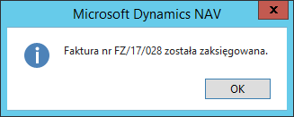{width="3.1304352580927386in" height="1.2540890201224848in"}
Rysunek 1.1: komunikat wyświetlany po zaksięgowaniu dokumentu
Opis księgowania {#opis-księgowania .Poziom-1}
Informacje ogólne
Jest to element Polskiej Lokalizacji systemu Microsoft Dynamics 365 Business Central on‑premises wprowadzający ułatwienia w opisywaniu księgowanych transakcji zapisywanych w tabeli Zapis księgi głównej. Pozwala też na ujednolicenie systemu opisywania transakcji poprzez zablokowanie dokonywania zmian w wybranych opisach wstawianych domyślnie.
Ustawienia
Możliwe jest zdefiniowanie różnych sposobów tworzenia opisów transakcji zapisywanych w tabeli Zapis księgi głównej, które będą generowane przez system w różnych typach dokumentów. W tym celu należy postępować według następujących kroków:
Należy wybrać Działy > Zarządzanie Finansami > Administracja > Opisy księgowania.
W oknie Opisy księgowania, które się otworzy, należy w pustym
wierszu wypełnić kolejno pola:
Kod --w tym polu należy wprowadzić unikalny kod dla opisu
księgowania
**Opis -- w **tym polu należy wprowadzić krótki opis dla opisu
księgowania
**Typ -- w **tym polu należy wybrać spośród dostępnych opcji, gdzie
opis księgowania będzie używany. Dostępne opcje:
<!-- -->
Dokument sprzedaży
Dokument zakupu
Księgowanie kosztu zapasów
Nota odsetkowa
Dokument serwisowy
<!-- -->
Formuła opisu księgowania -- to pole przedstawia, w jaki sposób
będą generowane elementy opisu księgowania. Tutaj można wprowadzić znaki specjalne, jak np. %1 lub %2, w miejsce których system wstawi wartości z księgowanego dokumentu. Parametry dla znaków specjalnych definiowane są w odrębnym oknie, co zostanie opisane w dalszej części tego rozdziału.
Sprawdź przy księgowaniu -- jeśli pole jest zaznaczone, system
podczas księgowania umieści w zapisach domyślną treść opisu. Jakiekolwiek zmiany w opisie wprowadzone przez użytkownika, zostaną zignorowane. W przypadku, gdy pole nie jest zaznaczone, opis, który zostanie przeniesiony do zapisów księgi głównej podczas księgowania, będzie uwzględniał wszystkie zmiany wprowadzone przez użytkownika.
 {width="6.425628827646544in" height="5.3125in"}
{width="6.425628827646544in" height="5.3125in"}
Rysunek 1.2: Opisy księgowania
W następnym kroku, dla każdego wiersza, w którym, w polu **Formuła
opisu księgowania** umieszczone zostały znaki specjalne %1 %2 %3 ... , konieczne jest zdefiniowanie parametrów, według których system będzie podstawiał odpowiednie wartości w miejsce znaków specjalnych. W tym celu, dla każdego opisu oddzielnie, należy wybrać Parametry.
W oknie Parametry opisu księgowania, które się otworzy, należy
odpowiednio wypełnić pola:
- Nr -- w tym polu należy wprowadzić cyfrę odpowiadającą znakowi
specjalnemu zawartemu w polu Formuła opisu księgowania. Parametr wprowadzony w wierszu z tym numerem zostanie wstawiony w odpowiednie miejsce opisu księgowania, np. parametr w wierszu z numerem 1 zostanie wstawiony w miejsce znaku specjalnego %1.
{width="0.19in" height="0.19in"}**Uwaga: Z **uwagi na ograniczenia techniczne, numery w oknie Parametry opisu księgowania zawsze muszą zaczynać się od 1 i nie może być ich więcej niż 10 dla każdego opisu księgowania. Dodatkowo, pole Opis w oknie Zapis księgi głównej nie może zawierać więcej niż 50 znaków.
- Typ -- w tym polu należy wybrać, jakiego typu parametr będzie
użyty. Dostępne opcje to:
<!-- -->
Etykieta -- wybranie tej opcji oznacza, że w miejsce
odpowiedniego znaku specjalnego zostanie podstawiona nazwa pola wybranego w polu Nazwa pola
Wartość -- wybranie tej opcji oznacza, że w miejsce
odpowiedniego znaku specjalnego zostanie podstawiona zawartość pola wybranego w polu Nazwa pola
Stała -- wybranie tej opcji oznacza, że w miejsce odpowiedniego
znaku specjalnego zostanie podstawiona treść ręcznie wpisana w polu Nazwa pola.
- Nazwa pola -- w tym polu należy wybrać pola, których nazwa
lub zawartość (dla typów: Etykieta lub Wartość) będą użyte w miejscu znaków specjalnych w polu Formuła Opisu Księgowania albo wprowadzić stałą treść (dla typu Stała) w tym samym celu. W zależności od wybranego typu w polu Typ w oknie Opisy księgowania, lista pól dostępnych do wyboru w polu Nazwa pola będzie różna:
<!-- -->
Dokument sprzedaży -- lista rozwijana w polu Nazwa pola
będzie zestawieniem pól tabeli Nagłówek sprzedaży.
Dokument zakupu -- lista rozwijana w polu Nazwa pola będzie
zestawieniem pól tabeli Nagłówek zakupu.
Księgowanie kosztu zapasów -- lista rozwijana w polu **Nazwa
pola** będzie zestawieniem pól tabeli Zapisy wyceny.
Nota odsetkowa -- lista rozwijana w polu Nazwa pola będzie
zestawieniem pól tabeli Nagłówek noty odsetkowej.
Dokument serwisowy -- lista rozwijana w polu Nazwa pola
będzie zestawieniem pól tabeli Nagłówek serwisu.
 {width="6.382608267716535in" height="5.279290244969379in"}
{width="6.382608267716535in" height="5.279290244969379in"}
Rysunek 1.3: Parametry opisu księgowania
Na podstawie przykładowych ustawień zaprezentowanych na powyższym rysunku, dla faktury zakupu z numerem 13/078 system wygeneruje opis księgowania:
Formuła %1 %3 %4
Etykieta Wartość Faktura 2017/548765 Delta Sp. z o.o. Stała Rezultat Faktura 2017/548765 (od Delta Sp. z o.o.)
W ramach definiowania ustawień konieczne jest też wybranie opisów domyślnych, które system będzie automatycznie generował w różnych miejscach. W tym celu należy postępować według następujących kroków:
Należy wybrać Działy > Zarządzanie Finansami > Administracja > Ustawienia sprzedaży i należności.
W oknie Ustawienia sprzedaży i należn., które się otworzy, na karcie skróconej Ogólne, należy uzupełnić pola:
Kod opisu księgowania -- z listy rozwijanej należy wybrać
właściwy kod spośród wcześniej zdefiniowanych opisów, który będzie domyślnie stosowany w dokumentach sprzedaży: ofercie, zamówieniu, fakturze, zamówieniu zwrotu oraz fakturze korygującej.
Kod opisu księgowania odsetek -- z listy rozwijanej należy
wybrać właściwy kod spośród wcześniej zdefiniowanych opisów, który będzie domyślnie stosowany w notach odsetkowych.
 {width="6.395329177602799in" height="5.558333333333334in"}
{width="6.395329177602799in" height="5.558333333333334in"}
Rysunek 1.4: Ustawienia sprzedaży i należności
Należy wybrać **Działy > Zarządzanie Finansami > Administracja >
Ustawienia zakupów i zobowiązań**.
W oknie Ustawienia zakupów i zobow., które się otworzy,
na karcie skróconej Ogólne, należy uzupełnić pole Kod opisu księgowania -- z listy rozwijanej należy wybrać właściwy kod spośród wcześniej zdefiniowanych opisów, który będzie domyślnie stosowany w dokumentach zakupu: ofercie, zamówieniu, fakturze, zamówieniu zwrotu oraz fakturze korygującej.
 {width="6.408333333333333in" height="5.197870734908136in"}
{width="6.408333333333333in" height="5.197870734908136in"}
Rysunek 1.5: Ustawienia zakupów i zobowiązań
Należy wybrać **Działy > Zarządzanie Finansami > Administracja >
Ustawienia zapasów**.
W oknie Ustawienia zapasów, które się otworzy, na karcie
skróconej Ogólne, należy uzupełnić pole Kod opisu księgowania -- z listy rozwijanej należy wybrać właściwy kod spośród wcześniej zdefiniowanych opisów, który będzie domyślnie stosowany w skrypcie Księguj koszt zapasów do K/G.
 {width="6.4in" height="4.559316491688539in"}
{width="6.4in" height="4.559316491688539in"}
Rysunek 1.6: Ustawienia zapasów
Należy wybrać **Działy > Serwis > Administracja > Ustawienia
serwisu.**
W oknie Ustawienia zarz. serwisem, które się otworzy, na karcie
skróconej Ogólne, należy uzupełnić pole Kod opisu księgowania -- z listy rozwijanej należy wybrać właściwy kod spośród wcześniej zdefiniowanych opisów, który będzie domyślnie stosowany w dokumentach serwisu: zleceniu, fakturze oraz fakturze korygującej.
 {width="6.4in" height="5.538461286089239in"}
{width="6.4in" height="5.538461286089239in"}
Rysunek 1.7: Ustawienia zarządzania serwisem
Obsługa
Po zdefiniowaniu opisów księgowania i ustawieniu reguł ich księgowania, można zacząć korzystać z tej funkcjonalności, np. w fakturze zakupu. W tym celu należy postępować według następujących kroków:
Należy wybrać **Nowe w **oknie Faktury zakupu i wprowadzić co
najmniej dostawcę oraz numer jego faktury.
W kartotece nowej faktury zakupu system uzupełni domyślnie pole Kod
opisu księgowania oraz **Opis księgowania na **podstawie wcześniej zdefiniowanych ustawień i parametrów.
 {width="6.345448381452319in" height="3.9916666666666667in"}
{width="6.345448381452319in" height="3.9916666666666667in"}
Rysunek 1.8: Opis księgowania w fakturze zakupu
Pozostałe pola faktury zakupu należy uzupełnić standardowo.
Jeśli konieczna jest zmiana treści w polu Opis księgowania, można to zrobić w dwojaki sposób, w zależności od ustawień:
Jeżeli pole Sprawdź przy księgowaniu nie jest zaznaczone
dla wybranego Kodu opisu księgowania, wszelkie konieczne zmiany należy wprowadzić w treści opisu wstawionego domyślnie
Jeżeli pole Sprawdź przy księgowaniu jest zaznaczone
dla wybranego Kodu opisu księgowania, wszelkie zmiany wprowadzone w treści opisu wstawionego domyślnie zostaną zignorowane w trakcie księgowania. Wprowadzenie nowej treści opisu w zamówieniu zakupu jest możliwe po wyczyszczeniu pola Kod opisu księgowania.
- Należy zaksięgować fakturę zakupu, aby sprawdzić opis księgowania
utworzony w tabeli Zapis księgi głównej.
 {width="6.408333333333333in" height="2.831032370953631in"}
{width="6.408333333333333in" height="2.831032370953631in"}
Rysunek 1.9: Opis księgowania w zapisach księgi głównej
Księgowanie korekty (storno czerwone) {#księgowanie-korekty-storno-czerwone .Poziom-1}
Informacje ogólne
Dla wielu kont bilansowych, księgowi muszą wiedzieć, jakie w danym okresie były dokładne przychody i rozchody z konta. W polskiej praktyce ewidencyjnej, w celu określenia kwot przychodów i rozchodów z konta używa się obrotów konta po określonej stronie, na przykład dla konta „Środki trwałe" przychodami są obroty strony debet a rozchodami obroty strony kredyt. Aby zapewnić, że tak określone kwoty rozchodów i przychodów są prawidłowe, księgowi muszą zachować tak zwaną „czystość obrotów", czyli księgować korekty po tej samej stronie konta, po której była zaksięgowana pierwotna operacja, lecz z przeciwnym znakiem („czerwone storno"). Co prawda w wersji międzynarodowej możliwe jest ręczne zaksięgowanie takiej operacji, jednak system nie wspiera wymuszania tego sposobu księgowania, dodatkowo, automatycznie księgowane przez system korekty są księgowane po przeciwnej stronie konta niż pierwotna transakcja („czarne storno").
Aby ułatwić użytkownikom stosowanie „czerwonego" storna do księgowania operacji korygujących, do modułu Polska Lokalizacja dodano następujące elementy:
Możliwość wymuszenia księgowań po właściwych stronach właściwych
kont księgi głównej.
Możliwość księgowania korekt transakcji magazynowych jako „czerwone
storno" (wydania w transakcjach przesunięć magazynowych, wyksięgowanie kosztu przewidywanego itp.).
Ułatwienia procesu -- obsługi księgowania korekt -- za pomocą
jednego kliknięcia (księgowania w księdze głównej, zapasach i zleceniach).
Ustawienia
Aby wymusić zasadę polityki rachunkowości, w której kontach księgi głównej zapisy mogą być dokonywane tylko po jednej stronie (debet lub kredyt) oraz ustawić automatyczne księgowanie korekt dla ilości ujemnych, należy postępować według następujących kroków:
Należy wybrać **Działy > Zarządzanie Finansami > Administracja >
Ustawienia księgi głównej.**
W oknie Ustawienia księgi głównej, które się otworzy, na karcie
skróconej Ogólne należy zaznaczyć pole Sprawdź księgowanie debetu/kredytu. Efektem tego ustawienia będzie wyświetlenie komunikatu o błędzie, jeśli podjęta zostanie próba zaksięgowania kwoty po stronie kredyt na koncie K/G, które w polu Debet/kredyt ma wybraną opcję Debet (i odwrotnie).
- W oknie Ustawienia księgi głównej na karcie skróconej Ogólne
należy zaznaczyć pole Oznacz ilość ujemną jako korektę. Efektem tego ustawienia będzie zaksięgowanie wierszy sprzedaży i zakupu z ilością ujemną, jako zapisy korekty. To ustawienie dotyczy dokumentów:
Zamówienie
Faktura
Zamówienie zwrotu
Faktura korygująca
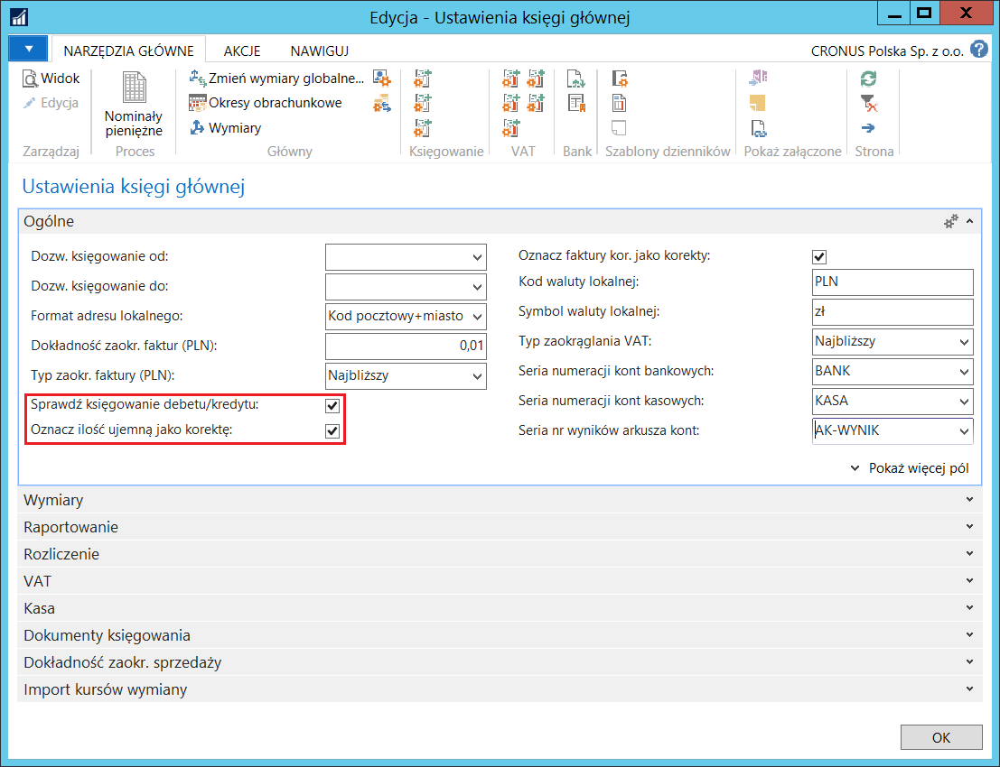{width="6.391666666666667in" height="4.907106299212598in"}
Rysunek 1.10: Ustawienia księgi głównej
Definiując odpowiednie ustawienia w oknie Ustawienia księgi głównej można zdecydować, czy faktury korygujące sprzedaży domyślnie będą oznaczane jako korekty, czyli tzw. storno czerwone. W celu zdefiniowania takiego ustawienia, należy postępować według następujących kroków:
Należy wybrać **Działy > Zarządzanie Finansami >
Administracja >** Ustawienia księgi głównej.
W oknie Ustawienia księgi głównej, które się otworzy, na karcie
skróconej Ogólne należy zaznaczyć pole Oznacz faktury kor. jako korekty:
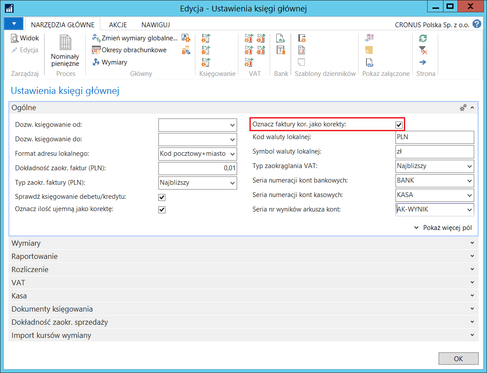{width="6.408333333333333in" height="4.919901574803149in"}
Rysunek 1.11: Ustawienia księgi głównej
Więcej informacji na temat wystawiania faktur korygujących sprzedaży znajduje się w rozdziale Faktury korygujące sprzedaży.
Aby wymusić zasadę polityki rachunkowości i wyksięgowanie kosztu przewidywanego zarejestrować jako korektę oraz w ten sam sposób rejestrować zapisy wydań magazynowych w ramach przesunięć międzymagazynowych, należy postępować według następujących kroków:
Należy wybrać **Działy > Zarządzanie Finansami > Administracja >
Ustawienia zapasów.**
W oknie Ustawienia zapasów, które się otworzy, na karcie
skróconej Ogólne, należy zaznaczyć pole Księguj przeks. kosztu przew. jako korekty. Efektem tego ustawienia będzie wyksięgowanie kosztu przewidywanego jako korekty, w ramach jego konwersji w koszt rzeczywisty.
W tym samym oknie, na tej samej karcie skróconej, należy zaznaczyć
pole Księguj przesunięcia ujemne jako korekty. Efektem tego ustawienia będą zapisy księgi głównej utworzone jako korekty, będące rezultatem księgowania wydania przesunięcia międzymagazynowego z lokalizacji pierwotnej i lokalizacji zapasów w drodze.
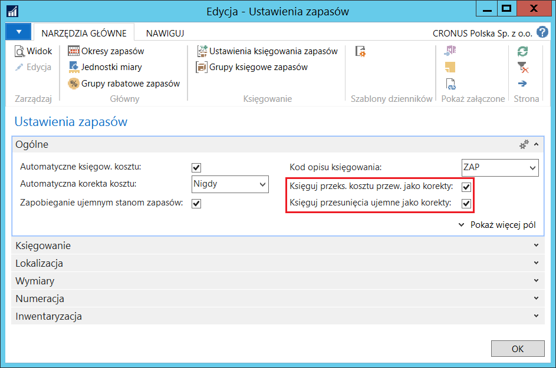{width="6.4in" height="4.2420516185476815in"}
Rysunek 1.12: Ustawienia zapasów
Szablony serii numeracji dokumentów {#szablony-serii-numeracji-dokumentów .Poziom-1}
Informacje ogólne
Funkcjonalność Szablony serii numeracji dokumentów ułatwia definiowanie różnych zestawów serii numeracji dla dokumentów określonego typu. W ramach tej funkcjonalności możliwe jest utworzenie:
Szablonów serii numeracji dokumentów sprzedaży,
Szablonów serii numeracji dokumentów zakupu,
Szablonów serii numeracji zleceń przesunięcia.
Ustawienia
Każdy obiekt (dokument, dziennik itp.) tworzony w ramach zdefiniowanego wcześniej szablonu dziedziczy wszystkie jego ustawienia.
Raport ustawiony dla szablonu zastępuje pierwszy raport z przypisanych do danej funkcji w standardowej funkcjonalności. Jeśli do formatki przypisanych jest więcej raportów, dalsze raporty zostaną wydrukowane po raporcie z szablonu.
W celu zdefiniowania Szablonu serii numeracji dokumentu sprzedaży, należy postępować według następujących kroków:
Należy wybrać **Działy > Sprzedaż i Marketing > Administracja >
Szablony numeracji dok. sprzedaży**
W oknie Szablony serii nr dok. sprzedaży, które się otworzy,
w pierwszym wolnym wierszu należy wypełnić pola:
Kod -- w tym polu należy wprowadzić unikalny kod identyfikujący
szablon numeracji dokumentu sprzedaży
Opis -- w tym polu można wprowadzić tekst opisujący szablon
numeracji dokumentu sprzedaży
Typ dokumentu -- w tym polu należy wybrać z listy dostępnych
opcji typ dokumentu sprzedaży, w którym szablon zostanie wykorzystany. Dostępne opcje to:
<!-- -->
Oferta
Zamówienie
Faktura
Faktura korygująca
<!-- -->
Zamówienie zbiorcze
Zamówienie zwrotu
<!-- -->
- Seria numeracji -- z listy rozwijanej w tym polu należy wybrać
kod wcześniej zdefiniowanej serii numeracji, na podstawie której będą nadawane numery nowotworzonym dokumentom.
<!-- -->
Seria numeracji księgowania -- z listy rozwijanej w tym polu
należy wybrać kod wcześniej zdefiniowanej serii numeracji, na podstawie której będą nadawane numery dokumentom zaksięgowanym (fakturom i fakturom korygującym).
Seria numeracji wydań -- z listy rozwijanej w tym polu należy
wybrać kod wcześniej zdefiniowanej serii numeracji, na podstawie której będą nadawane numery dokumentom wydań.
Seria numeracji zaliczek -- z listy rozwijanej w tym polu należy
wybrać kod wcześniej zdefiniowanej serii numeracji, na podstawie której będą nadawane numery zaksięgowanym fakturom zaliczkowym.
Seria numeracji faktur korygujących zaliczki -- z listy
rozwijanej w tym polu należy wybrać kod wcześniej zdefiniowanej serii numeracji, na podstawie której będą nadawane numery zaksięgowanym fakturom korygującym faktury zaliczkowe.
Kod opisu księgowania -- z listy rozwijanej w tym polu można
wybrać wcześniej zdefiniowany kod opisu księgowania, który będzie kopiowany do dokumentów stworzonych w ramach danego szablonu. Niewypełnienie tego pola spowoduje przypisywanie kodu opisu księgowania ustawionego jako domyślny dla sprzedaży.
Kod VAT'u przekazanego -- z listy rozwijanej w tym polu można
wybrać wcześniej zdefiniowany kod VAT'u przekazanego, którego ustawienia zostaną wykorzystane do automatycznego rozliczenia VAT z faktury wystawionej z wykorzystaniem tego szablonu.
<!-- -->
Kod szablonu nast. kroku procesu -- w tym polu należy wskazać,
jaki kod szablonu ma być przypisany do dokumentu sprzedaży w następnym kroku procesu. Kod ten zostanie przypisany do zamówienia tworzonego z oferty lub z zamówienia zbiorczego. Jeśli pole to jest puste, a w systemie zdefiniowano więcej niż jeden szablon dla zamówienia, podczas tworzenia zamówienia z oferty lub z zamówienia zbiorczego zostanie otwarte okno wyboru szablonu i użytkownik będzie mógł wybrać szablon, jaki zostanie przypisany do zamówienia. Jeśli natomiast pole Kod szablonu nast. kroku procesu jest puste, a w systemie zdefiniowano tylko jeden szablon dla zamówienia, ten właśnie szablon zostanie automatycznie przypisany do nowego dokumentu.
ID raportu faktury -- z listy rozwijanej w tym polu należy
wybrać raport, który zawiera wzór dokumentu, na podstawie którego zostanie wydrukowana faktura (lub faktura korygująca).
Nazwa raportu faktury -- pole wypełniane automatycznie
przez system nazwą przypisaną do raportu wybranego w polu ID raportu faktury.
ID raportu wydania -- z listy rozwijanej w tym polu należy
wybrać raport, który zawiera wzór dokumentu, na podstawie którego zostanie wydrukowane wydanie z magazynu.
Nazwa raportu wydania -- pole wypełniane automatycznie
przez system nazwą przypisaną do raportu wybranego w polu ID raportu wydania.
Pobierz kurs wymiany dla daty -- w tym polu należy wybrać datę,
według której będzie pobierany kurs wymiany waluty. Dostępne opcje to:
<!-- -->
Data księgowania
Data dokumentu
Data sprzedaży
 {width="6.4in" height="2.453333333333333in"}
{width="6.4in" height="2.453333333333333in"}
Rysunek 1.13: Szablony serii nr dok. sprzedaży
W celu zdefiniowania Szablonu serii numeracji dokumentu zakupu, należy postępować według następujących kroków:
Należy wybrać Działy > Zakup > Administracja > Szablony numeracji dok. zakupu
W oknie Szablony serii nr dok. zakupu, które się otworzy, w pierwszym wolnym wierszu należy wypełnić pola:
Kod -- w tym polu należy wprowadzić unikalny kod identyfikujący
szablon numeracji dokumentu zakupu
Opis -- w tym polu można wprowadzić tekst opisujący szablon
numeracji dokumentu zakupu
Typ dokumentu -- w tym polu należy wybrać z listy dostępnych
opcji typ dokumentu zakupu, w którym szablon zostanie wykorzystany. Dostępne opcje to:
<!-- -->
Oferta
Zamówienie
Faktura
Faktura korygująca
<!-- -->
Zamówienie zbiorcze
Zamówienie zwrotu
<!-- -->
- Seria numeracji -- z listy rozwijanej w tym polu należy wybrać
kod wcześniej zdefiniowanej serii numeracji, na podstawie której będą nadawane numery nowotworzonym dokumentom.
<!-- -->
Seria numeracji księgowania -- z listy rozwijanej w tym polu
należy wybrać kod wcześniej zdefiniowanej serii numeracji, na podstawie której będą nadawane numery dokumentom zaksięgowanym (fakturom i fakturom korygującym).
Seria numeracji przyjęć -- z listy rozwijanej w tym polu należy
wybrać kod wcześniej zdefiniowanej serii numeracji, na podstawie której będą nadawane numery dokumentom przyjęć.
Seria numeracji zaliczek -- z listy rozwijanej w tym polu należy
wybrać kod wcześniej zdefiniowanej serii numeracji, na podstawie której będą nadawane numery zaksięgowanym fakturom zaliczkowym.
Seria numeracji faktur korygujących zaliczki -- z listy
rozwijanej w tym polu należy wybrać kod wcześniej zdefiniowanej serii numeracji, na podstawie której będą nadawane numery zaksięgowanym fakturom korygującym faktury zaliczkowe.
Kod opisu księgowania -- z listy rozwijanej w tym polu można
wybrać wcześniej zdefiniowany kod opisu księgowania, który będzie kopiowany do dokumentów stworzonych w ramach danego szablonu. Niewypełnienie tego pola spowoduje przypisywanie kodu opisu księgowania ustawionego jako domyślny dla zakupu.
<!-- -->
Kod szablonu nast. kroku procesu -- w tym polu należy wskazać,
jaki kod szablonu ma być automatycznie przypisany do dokumentu zakupu w następnym kroku procesu. Kod ten zostanie przypisany do zamówienia tworzonego z oferty lub z zamówienia zbiorczego. Jeśli pole to jest puste, a w systemie zdefiniowano więcej niż jeden szablon dla zamówienia, podczas tworzenia zamówienia z oferty lub z zamówienia zbiorczego zostanie otwarte okno wyboru szablonu i użytkownik będzie mógł wybrać szablon, jaki zostanie przypisany do zamówienia. Jeśli natomiast pole Kod szablonu nast. kroku procesu jest puste, a w systemie zdefiniowano tylko jeden szablon dla zamówienia, ten właśnie szablon zostanie automatycznie przypisany do nowego dokumentu.
ID raportu faktury -- z listy rozwijanej w tym polu należy
wybrać raport, który zawiera wzór dokumentu, na podstawie którego zostanie wydrukowana faktura (lub faktura korygująca).
Nazwa raportu faktury -- pole wypełniane automatycznie
przez system nazwą przypisaną do raportu wybranego w polu ID raportu faktury.
Identyfikator raportu przyjęcia -- z listy rozwijanej w tym polu
należy wybrać raport, który zawiera wzór dokumentu, na podstawie którego zostanie wydrukowane przyjęcie do magazynu.
Nazwa raportu przyjęcia -- pole wypełniane automatycznie
przez system nazwą przypisaną do raportu wybranego w polu Identyfikator raportu przyjęcia.
Pobierz kurs wymiany dla daty -- w tym polu należy wybrać datę,
według której będzie pobierany kurs wymiany waluty. Dostępne opcje to:
<!-- -->
Data księgowania
Data dokumentu
 {width="6.4in" height="2.504615048118985in"}
{width="6.4in" height="2.504615048118985in"}
Rysunek 1.14: Szablony serii nr dok. zakupu
W celu zdefiniowania Szablonu serii numeracji zlecenia przesunięcia, należy postępować według następujących kroków:
Należy wybrać Działy > Magazyn > Administracja > Szablony numeracji zlec. przesunięcia.
W oknie Szablony serii nr zlec. przesunięcia, które się otworzy, w pierwszym wolnym wierszu należy wypełnić pola:
Kod -- w tym polu należy wprowadzić unikalny kod identyfikujący
szablon numeracji zlecenia przesunięcia.
Opis -- w tym polu można wprowadzić tekst opisujący szablon
numeracji zlecenia przesunięcia.
Kod lokalizacji pierwotnej -- z listy rozwijanej w tym polu
należy wybrać wcześniej zdefiniowaną lokalizację, z której będzie dokonane wydanie w ramach przesunięcia międzymagazynowego.
Kod lokalizacji docelowej -- z listy rozwijanej w tym polu
należy wybrać wcześniej zdefiniowaną lokalizację, w której będzie dokonane przyjęcie w ramach przesunięcia międzymagazynowego.
<!-- -->
Seria numeracji zlec. przes. -- z listy rozwijanej w tym polu
należy wybrać kod wcześniej zdefiniowanej serii numeracji, na podstawie której będą nadawane numery kolejnym zleceniom przesunięcia.
Seria num. zaks. wyd. przes. -- z listy rozwijanej w tym polu
należy wybrać kod wcześniej zdefiniowanej serii numeracji, na podstawie której będą nadawane numery zaksięgowanym dokumentom wydań z lokalizacji pierwotnej.
Seria num. zaks. przyj. przes. -- z listy rozwijanej w tym polu
należy wybrać kod wcześniej zdefiniowanej serii numeracji, na podstawie której będą nadawane numery zaksięgowanym dokumentom przyjęć do lokalizacji docelowej.
 {width="5.618110236220472in" height="3.421259842519685in"}
{width="5.618110236220472in" height="3.421259842519685in"}
Rysunek 1.15: Szablony serii nr zlec. przesunięcia
Funkcjonalności Szablony serii nr dok. zakupu i Szablony serii nr zlec. przesunięcia mają zastosowanie w Arkuszach zapotrzebowania. W celu ułatwienia pracy użytkownikom, można wybrać domyślne kody szablonów serii numeracji dokumentów, które będą użyte przy uzupełnianiu stanów magazynowych.
W celu zdefiniowania domyślnych szablonów serii nr dok. zakupu i zlec. przesunięcia dla Jednostki składowania zapasu, należy postępować według następujących kroków:
Należy wybrać Działy > Magazyn > Planowanie i wykonywanie > Jednostki składowania zapasu.
W oknie Jednostki składowania zapasu należy zaznaczyć wiersz z wybraną jednostką składowania zapasów i wybrać Edycja.
W kartotece wybranej jednostki składowania zapasów, która się otworzy, na karcie skróconej Uzupełnienie należy wypełnić pola:
Domyślny kod szablonu serii num. dok. zakupu -- z listy
rozwijanej w tym polu należy wybrać jeden z wcześniej zdefiniowanych szablonów numeracji dokumentów zakupu.
**Domyślny kod szablonu serii num. dok. przesunięcia -- z **listy
rozwijanej w tym polu należy wybrać jeden z wcześniej zdefiniowanych szablonów numeracji zleceń przesunięcia.
 {width="6.391666666666667in" height="3.9585990813648295in"}
{width="6.391666666666667in" height="3.9585990813648295in"}
Rysunek 1.16: Domyślne szablony serii numeracji dokumentów dla jednostki składowania zapasów
W celu zdefiniowania domyślnych szablonów serii nr dok. zakupu i zlec. przesunięcia dla Zapasu, należy postępować według następujących kroków:
Należy wybrać Działy > Magazyn > Planowanie i wykonywanie > Zapasy.
W oknie Zapasy należy zaznaczyć wiersz z wybranym zapasem i wybrać Edycja.
W kartotece wybranego zapasu, która się otworzy, na karcie skróconej Uzupełnienie należy wypełnić pola:
Domyślny kod szablonu serii num. dok. zakupu -- z listy
rozwijanej w tym polu należy wybrać jeden z wcześniej zdefiniowanych szablonów numeracji dokumentów zakupu.
**Domyślny kod szablonu serii num. dok. przesunięcia -- z **listy
rozwijanej w tym polu należy wybrać jeden z wcześniej zdefiniowanych szablonów numeracji zleceń przesunięcia.
 {width="6.4in" height="4.047178477690289in"}
{width="6.4in" height="4.047178477690289in"}
Rysunek 1.17: Domyślne szablony serii numeracji dokumentów dla zapasu
W celu zdefiniowania domyślnego szablonu serii nr dok. zakupu dla zapasów nie mających przypisanego domyślnego szablonu serii nr dok. zakupu w kartotece ani jednostce składowania, należy postępować według następujących kroków:
Należy wybrać **Działy > Zakup > Administracja > Ustawienia
zakupów i zobowiązań**.
W oknie Ustawienia zakupów i zobowiązań, które się otworzy,
na karcie skróconej Ogólne należy z listy rozwijanej w polu Domyślny kod szablonu serii num. dok. zakupu wybrać jeden z wcześniej zdefiniowanych szablonów serii nr dok. zakupu.
 {width="6.391465441819773in" height="4.416666666666667in"}
{width="6.391465441819773in" height="4.416666666666667in"}
Rysunek 1.18: Domyślny szablon serii numeracji dokumentów zakupu
W celu zdefiniowania domyślnego szablonu serii nr zlec. przesunięcia dla zapasów niemających przypisania domyślnego szablonu serii nr zlec. przesunięcia w kartotece ani jednostce składowania, należy postępować według następujących kroków:
Należy wybrać **Działy > Magazyn > Administracja > Ustawienia
magazynu.**
W oknie Ustawienia magazynu, które się otworzy, na karcie
skróconej Ogólne należy z listy rozwijanej w polu Domyślny kod szablonu serii num. dok. przesunięcia wybrać jeden z wcześniej zdefiniowanych szablonów serii nr zlec. przesunięcia.
 {width="6.383333333333334in" height="3.480825678040245in"}
{width="6.383333333333334in" height="3.480825678040245in"}
Rysunek 1.19: Domyślny szablon serii numeracji zleceń przesunięcia
Obsługa
W celu utworzenia faktury sprzedaży z wykorzystaniem jednego z wcześniej zdefiniowanych Szablonów serii nr dok. sprzedaży, należy postępować według następujących kroków:
Należy wybrać Działy > Sprzedaż i Marketing > Przetwarzanie zamówień > Faktury sprzedaży.
W oknie Faktury sprzedaży, które się otworzy, należy wybrać
Nowe.
W kartotece nowej faktury sprzedaży należy przenieść kursor
do innego pola niż to, w którym się znalazł domyślnie.
Otworzy się okno Lista szablonów serii nr dok. sprzedaży,
w którym należy zaznaczyć wiersz z wybranym szablonem i wybrać OK.
 {width="4.799212598425197in" height="3.2125984251968505in"}
{width="4.799212598425197in" height="3.2125984251968505in"}
Rysunek 1.20: Lista szablonów serii nr dok. sprzedaży
Do nagłówka wprowadzanej faktury sprzedaży system wstawi parametry
domyślnie przypisane do wybranego szablonu (np. Seria numeracji, Kod opisu księgowania itp.). Parametry wstawione domyślnie do pól edytowalnych mogą zostać ręcznie zmienione.
Dalsze kroki procesu wystawiania faktury należy wykonać standardowo.
W celu utworzenia faktury zakupu z wykorzystaniem jednego z wcześniej zdefiniowanych Szablonów serii nr dok. zakupu, należy postępować według następujących kroków:
Należy wybrać Działy > Zakup > Przetwarzanie zamówień > Faktury zakupu.
W oknie Faktury zakupu, które się otworzy, należy wybrać
Nowe.
W kartotece nowej faktury zakupu należy przenieść kursor do innego
pola niż to, w którym się znalazł domyślnie.
Otworzy się okno Lista szablonów serii nr dok. zakupu, w którym
należy zaznaczyć wiersz z wybranym szablonem i wybrać OK.
 {width="4.606299212598425in" height="3.1850393700787403in"}
{width="4.606299212598425in" height="3.1850393700787403in"}
Rysunek 1.21: Lista szablonów serii nr dok. zakupu
Do nagłówka wprowadzanej faktury zakupu system wstawi parametry
domyślnie przypisane do wybranego szablonu (np. Seria numeracji, Kod opisu księgowania itp.). Parametry wstawione domyślnie do pól edytowalnych mogą zostać ręcznie zmienione.
Dalsze kroki procesu wprowadzania faktury należy wykonać
standardowo.
W celu utworzenia zlecenia przesunięcia z wykorzystaniem jednego z wcześniej zdefiniowanych Szablonów serii nr zlec. przesunięcia, należy postępować według następujących kroków:
Należy wybrać Działy > Magazyn > Planowanie i wykonywanie > Zlecenia przesunięcia.
W oknie Zlecenia przesunięcia, które się otworzy, należy wybrać
Nowe.
W kartotece nowego zlecenia przesunięcia należy przenieść kursor
do innego pola niż to, w którym się znalazł domyślnie.
Otworzy się okno Lista szablonów serii nr zlec. przesunięcia,
w którym należy zaznaczyć wiersz z wybranym szablonem i wybrać OK.
 {width="4.925196850393701in" height="3.326771653543307in"}
{width="4.925196850393701in" height="3.326771653543307in"}
Rysunek 1.22: Lista szablonów serii nr zlec. przesunięcia
Do nagłówka wprowadzanego zlecenia przesunięcia system wstawi
parametry domyślnie przypisane do wybranego szablonu (np. Seria numeracji, Kody lokalizacji itp.). Parametry wstawione domyślnie do pól edytowalnych mogą zostać ręcznie zmienione.
Dalsze kroki procesu księgowania zlecenia przesunięcia należy
wykonać standardowo.
W Arkuszach zapotrzebowania funkcja Wykonaj komunikat akcji tworząca odpowiednie dokumenty korzysta z szablonów serii nr dok. zakupu w przypadku metody uzupełnień Zakup i z szablonów serii nr zlec. przesunięcia w przypadku metody uzupełnień Przesunięcie.
W przypadku tworzenia wierszy arkusza zapotrzebowania przy użyciu funkcji Oblicz plan, system uzupełnia pole Kod szablonu serii numeracji w wierszach arkusza zapotrzebowania odpowiednimi kodami pobranymi z kartoteki jednostki składowania, a jeśli tam domyślne kody nie są przypisane, wtedy pobierane są one z kartoteki zapasu, a gdy również tutaj ich brak, wtedy pobierane są z okna Ustawienia zakupów i zobowiązań lub Ustawienia magazynu.
Ręczne wprowadzanie wierszy arkuszy zapotrzebowania wymaga ręcznego uzupełnienia pola Kod szablonu serii numeracji*.* Pole to można też pozostawić puste, wtedy system podczas tworzenia dokumentów przy pomocy funkcji Wykonaj komunikat akcji skorzysta z domyślnych szablonów serii numeracji dokumentów w takiej kolejności, jak przy funkcji Oblicz plan.
 {width="6.4in" height="1.9808552055993in"}
{width="6.4in" height="1.9808552055993in"}
Rysunek 1.23: szablony serii numeracji dokumentów w arkuszu zapotrzebowania
{#section .list-paragraph .Poziom-1}
Seria numeracji w szablonach głównych {#seria-numeracji-w-szablonach-głównych .Poziom-1}
Informacje ogólne
Standardowa funkcjonalność Szablony główne umożliwia zdefiniowanie domyślnych parametrów w różnych zestawach, na podstawie których system automatycznie uzupełnia część pól w rekordach zakładanych przy użyciu wybranego szablonu głównego. Polska Lokalizacja umożliwia dodatkowo przypisywanie domyślnej serii numeracji w szablonach zdefiniowanych dla nabywców, dostawców i środków trwałych.
Ustawienia
W celu przypisania serii numeracji do szablonu głównego, należy postępować według następujących kroków:
Należy wybrać **Działy > Administracja > Ustawienia aplikacji >
Ogólne > Konfiguruj szablony główne.**
W oknie Konfiguruj szablony główne, które się otworzy, należy
zaznaczyć wiersz z wybranym szablonem i wybrać Edycja.
Na karcie skróconej Wiersze należy wstawić nowy wiersz, w którym
w polu Nazwa pola należy wybrać No. Series, a w polu Wartość domyślna należy ręcznie wprowadzić kod wcześniej zdefiniowanej serii numeracji, przeznaczonej do numerowania kartotek zakładanych przy użyciu danego szablonu. Pozostałe pola należy uzupełnić w sposób standardowy.
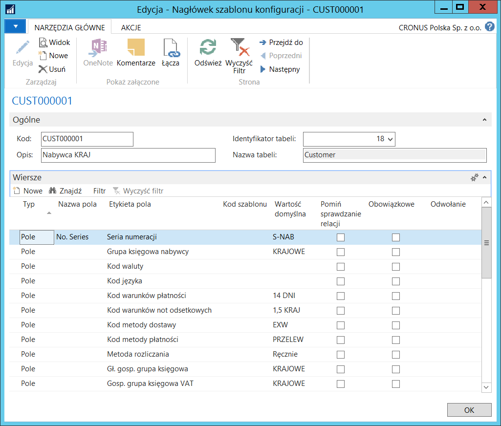{width="6.4in" height="5.4441021434820644in"}
Rysunek 1.24: Seria numeracji w szablonie głównym
Brak przypisania domyślnej serii numeracji do szablonu głównego skutkuje tym, że podczas tworzenia nowej kartoteki z wykorzystaniem tego szablonu, system zastosuje odpowiednią serię numeracji ze standardowych ustawień zdefiniowanych w oknach: Ustawienia sprzedaży i należn., Ustawienia zakupów i zobowiązań, Ustawienia ŚT.
Obsługa
Zasada działania funkcjonalności jest taka sama dla nabywców, dostawców i środków trwałych, dlatego obsługa zostanie opisana tylko na przykładzie nabywcy.
W celu zdefiniowania kartoteki nabywcy z wykorzystaniem szablonu głównego z przypisaną domyślną serią numeracji, należy postępować według następujących kroków:
Należy wybrać **Działy > Zarządzanie Finansami > Należności >
Nabywcy**.
W oknie Nabywcy, które się otworzy, należy wybrać Nowe.
W oknie Wybierz szablon dla nowego nabywcy należy zaznaczyć
wiersz z wybranym szablonem i wybrać OK.
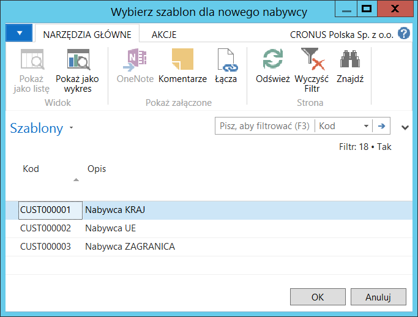{width="4.610236220472441in" height="3.4960629921259843in"}
Rysunek 1.25: Lista Szablonów głównych dla nabywców
- System nadał nowej kartotece nabywcy numer kolejny zgodny z serią numeracji przypisaną do wybranego szablonu głównego:
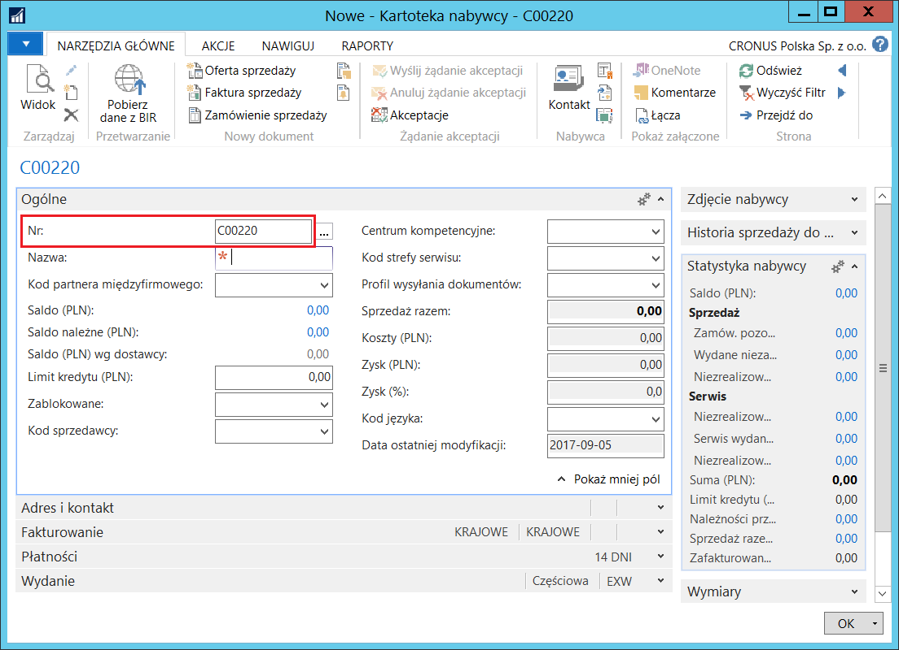{width="6.383333333333334in" height="4.625189195100613in"}
Rysunek 1.26: Kartoteka nabywcy
- Pozostałe pola w kartotece nabywcy należy uzupełnić standardowo.
Import kursów wymiany NBP {#import-kursów-wymiany-nbp .Poziom-1}
Informacje ogólne
Narodowy Bank Polski publikuje API webowe (interfejsy webowe), dzięki którym użytkownicy mogą pobierać dane dotyczące wcześniejszych i bieżących kursów walut. W Microsoft Dynamics 365 Business Central można w prosty sposób zdefiniować ustawienia umożliwiające korzystanie z API w celu pobierania i aktualizacji kursów wymiany.
Podstawowe ustawienia {#podstawowe-ustawienia .Poziom-2}
W celu zdefiniowania ustawień niezbędnych do poprawnego działania importu, należy wykonać następujące kroki:
Należy wybrać Działy > Zarządzanie Finansami > Działania okresowe > Waluta > Waluty.
W oknie Waluty, które się otworzy, należy kliknąć Usługa kursów wymiany na wstążce.
Rysunek 1.27: Waluty
W oknie Usługi kursów wymiany walut, które się otworzy, należy
kliknąć Nowy na wstążce.
W oknie Usługa wymiany walut należy wypełnić niżej opisane pola.
Na karcie skróconej Ogólne:
Kod -- nazwa kodu usługi wymiany walut
Opis -- pole opcjonalne; opis usługi wymiany walut
Na karcie skróconej Serwis:
- Adres URL usługi -- Adres URL dla API webowego.\
W przypadku API udostępnianego przez NBP wprowadź: http://api.nbp.pl/api/exchangerates/tables/A?format=xml
Na karcie skróconej Mapowanie pola zmapuj wymienione poniżej pola, wybierając je w kolejnych wierszach, w polu Etykieta i wprowadzając odpowiednie wartości w kolumnie Źródło:
Nadrzędny węzeł dla kodu waluty - /ArrayOfExchangeRatesTable/ExchangeRatesTable/Rates/Rate
Kod waluty --/ArrayOfExchangeRatesTable/ExchangeRatesTable/Rates/Rate/Code
Data początkowa --/ArrayOfExchangeRatesTable/ExchangeRatesTable/EffectiveDate
Kurs wymiany -- pozostaw pole Źródło puste i wypełnij pole Wartość domyślna liczbą 1.
Relacyjny kurs wymiany /ArrayOfExchangeRatesTable/ExchangeRatesTable/Rates/Rate
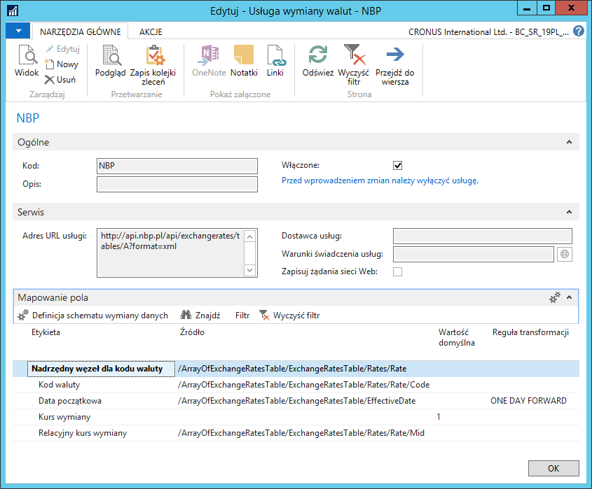{width="6.367925415573054in" height="5.267825896762905in"}
Rysunek 1.28: Usługa wymiany Walut
Aby utworzyć i zdefiniować regułę transformacji dla daty początkowej, należy wykonać następujące kroki:
W oknie Usługa wymiany walut, na karcie skróconej Mapowanie pola, w wierszu z polem Data początkowa, w kolumnie Reguła transformacji kliknij przycisk asysty, a następnie na wyświetlonej liście kliknij Nowy.
Rysunek 1.29: Nowa reguła transformacji
- W oknie Karta reguły transformacji, które się otworzy, należy wypełnić niżej opisane pola:
Kod -- wprowadź tekst ONE DAY FORWARD. Jeśli zostanie wprowadzony inny kod, transformacja nie powiedzie się.
Typ transformacji -- z listy rozwijanej w tym polu wybierz opcję Niestandardowy.
- Aby przetestować transformację, w polu Testowy tekst wprowadź datę w formacie DD-MM-RRRR, a następnie kliknij link Aktualizuj.
Rysunek 1.30: Karta reguły transformacji
Kliknij przycisk OK, aby zamknąć stronę.
W oknie Usługa wymiany walut zaznacz pole Włączone, aby aktywować usługę. W wyniku tego działania system utworzy zapis kolejki zleceń, w którym codziennie będzie rejestrowany kurs wymiany.
Kurs wymiany dla kwoty różnej od 1 {#kurs-wymiany-dla-kwoty-różnej-od-1 .Poziom-2}
Niektóre firmy określają kurs wymiany dla kwoty wymiany równej 100. Poniższa instrukcja umożliwia ustawienie kursu wymiany walut dla kwoty wymiany innej niż 1.
Aby ustawić kurs wymiany walut dla kwoty wymiany innej niż 1, należy wykonać następujące kroki:
W oknie Usługa wymiany walut, na karcie skróconej Mapowanie pola, w wierszu z wybranym polem Kurs wymiany, w kolumnie Wartość domyślna wprowadź odpowiednią liczbę, np. 100
Kliknij Definicja schematu wymiany danych w akcjach karty skróconej Mapowanie pola.
Rysunek 1.31: Usługa wymiany walut
W oknie Definicja schematu wymiany danych, które się otworzy, kliknij Mapowanie pola w akcjach karty skróconej Definicje wierszy
Rysunek 1.32: Definicja schematu wymiany danych
W oknie Mapowanie pola, które się otworzy, w wierszu z polem Relacyjny kurs wymiany, w kolumnie Mnożnik wprowadź tę samą liczbę, co w pierwszym kroku, np. 100
Rysunek 1.33: Mapowanie pola
- Zamknij poszczególne okna i włącz Usługę wymiany walut
Rysunek 1.34: Usługa wymiany walut
Przechwytywanie danych historycznych {#przechwytywanie-danych-historycznych .Poziom-2}
Interfejs wymiany walut API ułatwia pobieranie kursów obowiązujących w przeszłości. W tym celu należy wykonać następujące kroki:
Wyłącz Usługę wymiany walut
W polu Adres URL usługi wprowadź nowy adres:
http://api.nbp.pl/api/exchangerates/tables/A/{startDate}/{endDate}?format=xml
{width="0.19in" height="0.19in"}
Uwaga: {startDate} i {endDate}, które określają okres, definiuje się
w formacie DD‑MM‑RRRR. Okres nie może być dłuższy od 93 dni
Włącz Usługę wymiany walut.
Otwórz okno Waluty i kliknij akcję Aktualizuj kursy wymiany na wstążce, aby zaktualizować kursy wymiany dla określonych dat.
Przywróć pierwotną wartość w polu Adres URL usługi w oknie Usługa wymiany walut.
Korygowanie kursów wymiany {#korygowanie-kursów-wymiany .Poziom-1}
Informacje ogólne
Korygowanie kursów wymiany, czyli wycena bilansowa, to przeliczenie otwartych rozrachunków nabywców i dostawców oraz środków pieniężnych zgromadzonych w kasie i na rachunkach bankowych według kursu wymiany obowiązującego na dzień przeprowadzenia wyceny bilansowej. Wycena taka powinna być przeprowadzana co najmniej raz w roku. W ramach Polskiej Lokalizacji do standardowej funkcjonalności zostały dodane następujące ulepszenia:
Możliwość uruchomienia skryptu Korygowanie kursów wymiany
oddzielnie dla nabywców, dostawców i kont bankowych.
Możliwość zaksięgowania zapisów szczegółowo lub zagregowanych
według waluty, w wyniku uruchomienia skryptu Korygowanie kursów wymiany.
Możliwość uruchomienia skryptu Korygowanie kursów wymiany
w trybie testowym, wyłącznie jako symulacji (czyli bez wykonywania wynikających z przeliczeń księgowań).
Obsługa
W celu uruchomienia skryptu Korygowanie kursów wymiany z wykorzystaniem ulepszeń Polskiej Lokalizacji, należy postępować według następujących kroków:
Należy wybrać Działy > Zarządzanie Finansami > Działania okresowe > Waluta > Koryguj kursy wymiany.
W oknie wstępnym skryptu należy we właściwy sposób wypełnić pola na karcie skróconej Opcje:
Data początkowa -- w tym polu należy wprowadzić datę początkową
okresu objętego korygowaniem kursów wymiany. Pozostawienie pola pustego oznacza, że skorygowane zostaną wszystkie zapisy z okresu przed Datą końcową włącznie.
Data końcowa -- w tym polu należy wprowadzić datę końcową okresu
objętego korygowaniem kursów wymiany. Pozostawienie pola pustego oznacza, że skorygowane zostaną wszystkie zapisy z okresu po Dacie początkowej włącznie.
Opis księgowania -- opis, jaki zostanie przeniesiony do zapisów
księgi głównej po wykonaniu skryptu. Pole wypełniane jest automatycznie przez system, w razie potrzeby można ręcznie zmienić jego zawartość.
Data księgowania -- data, z jaką zostaną zaksięgowane zapisy
w wyniku uruchomienia skryptu. Pole jest wypełniane automatycznie przez system Data końcową, w razie potrzeby, można ją ręcznie zmienić.
Nr dokumentu -- w tym polu należy wprowadzić numer dokumentu,
na podstawie którego zostaną zaksięgowane zapisy w wyniku uruchomienia skryptu.
Koryguj konta bankowe -- pole należy zaznaczyć, jeśli podczas
uruchomienia skryptu mają zostać skorygowane kwoty na kontach bankowych i kontach kas.
Koryguj nabywcę -- pole należy zaznaczyć, jeśli podczas
uruchomienia skryptu mają zostać skorygowane otwarte zapisy księgi nabywców.
Koryguj dostawcę -- pole należy zaznaczyć, jeśli podczas
uruchomienia skryptu mają zostać skorygowane otwarte zapisy księgi dostawców.
Koryguj konta K/G dla dodat. waluty raportowania -- pole należy
zaznaczyć, jeśli podczas uruchomienia skryptu mają zostać skorygowane kwoty na kontach K/G dla dodatkowej waluty raportowania.
Sumuj zapisy -- pole należy zaznaczyć, jeśli zapisy księgowe
będące wynikiem działania skryptu mają zostać zsumowane według waluty. Niezaznaczenie pola spowoduje utworzenie szczegółowych zapisów księgowych będących wynikiem działania skryptu.
Tryb testowy -- pole należy zaznaczyć, jeśli skrypt ma zostać
uruchomiony w trybie testowym, wyłącznie jako symulacja, bez księgowania. Niezaznaczenie tego pola spowoduje zaksięgowanie korekty kursów wymiany podczas wykonania skryptu.
W kartach skróconych: Waluta, Nabywca, Dostawca, Konto bankowe można w standardowy sposób ustawić filtry ograniczające zakres danych wybranych do skorygowania.
 {width="4.744094488188976in" height="5.606299212598425in"}
{width="4.744094488188976in" height="5.606299212598425in"}
Rysunek 1.35: okno wstępne skryptu Korygowanie kursów wymiany
- Należy wybrać Drukuj w celu uruchomienia skryptu z jednoczesnym wydrukiem lub **Podgląd w **celu uruchomienia skryptu z jednoczesnym wyświetleniem na ekranie:
 {width="6.387618110236221in" height="6.591666666666667in"}
{width="6.387618110236221in" height="6.591666666666667in"}
Rysunek 1.36: Zestawienie korygowanych kursów wymiany
{#section-1 .list-paragraph .Poziom-1}
Rejestry korekt kursów wymiany {#rejestry-korekt-kursów-wymiany .Poziom-1}
Informacje ogólne
Zapisy historii korekt kursów wymiany, czyli wycen bilansowych jest przechowywana w Rejestrach korekt kursów wymiany. W ramach Polskiej Lokalizacji rozszerzono standardowy wygląd okna rejestrów i dodano raport księgowania. Pozwala to na uzyskanie pełnej informacji o historii przeprowadzonych korekt kursów wymiany.
Obsługa
W celu uzyskania informacji o historii dokonanych korekt kursów wymiany, należy postępować według następujących kroków:
Należy wybrać Działy > Zarządzanie Finansami > Działania okresowe > Waluta > Rejestry korekt kursów wymiany.
W oknie Rejestry korekt kursów wymiany, które się otworzy, wyświetlone są informacje w następujących polach:
Nr -- pole wypełniane automatycznie przez system numerem
kolejnym księgowania korekty kursów wymiany.
Data utworzenia -- pole wypełniane automatycznie przez system
datą, kiedy fizycznie zostało dokonane księgowanie korekty kursów wymiany.
Typ konta -- pole wypełniane automatycznie przez system typem
konta, na którym została dokonana korekta kursów wymiany.
Nr konta -- pole wypełniane automatycznie przez system numerem
konta (zgodnym z Typem konta), na którym została dokonana korekta kursów wymiany.
Nr dokumentu -- pole wypełniane automatycznie przez system
numerem dokumentu, na podstawie którego zostało dokonane księgowanie korekty kursów wymiany.
Nr dokumentu źródłowego -- pole wypełniane automatycznie
przez system numerem dokumentu źródłowego dla zapisu, dla którego została dokonana korekta kursów wymiany.
Grupa księgowa -- pole wypełniane automatycznie przez system
kodem grupy księgowej w zapisie, dla którego została dokonana korekta kursów wymiany.
Kod waluty -- pole wypełniane automatycznie przez system kodem
waluty, dla której została dokonana korekta kursów wymiany.
Skorygowana podstawa -- pole wypełniane automatycznie
przez system kwotą w walucie źródłowej, dla której została dokonana korekta kursów wymiany.
Skorygowana podstawa (PLN) -- pole wypełniane automatycznie
przez system równowartością kwoty w walucie lokalnej, dla której została dokonana korekta kursów wymiany.
Skorygowana kwota (PLN) -- pole wypełniane automatycznie
przez system kwotą niezrealizowanych różnic kursowych w walucie lokalnej, będącą wynikiem dokonanej korekty kursów wymiany.
Kwota zysków (PLN) -- pole wypełniane automatycznie przez system
kwotą dodatnich niezrealizowanych różnic kursowych w walucie lokalnej, będącą wynikiem dokonanej korekty kursów wymiany.
Kwota strat (PLN) -- pole wypełniane automatycznie przez system
kwotą ujemnych niezrealizowanych różnic kursowych w walucie lokalnej, będącą wynikiem dokonanej korekty kursów wymiany.
 {width="6.425in" height="2.93998687664042in"}
{width="6.425in" height="2.93998687664042in"}
Rysunek 1.37: Rejestry korekt kursów wymiany
Rejestry korekt kursów wymiany mogą być też drukowane. W tym celu należy postępować według następujących kroków:
W oknie Rejestry korekt kursów wymiany należy wybrać **Rejestr
korekt kursów wymiany**.
W oknie wstępnym raportu, które się otworzy, można ograniczyć zakres
prezentowanych danych, ustawiając w sposób standardowy filtry w polach na karcie skróconej Rejestr korekt kursu wymiany. Następnie należy wybrać Drukuj lub Podgląd.
 {width="6.3579440069991255in" height="6.9in"}
{width="6.3579440069991255in" height="6.9in"}
Rysunek 1.38: Podgląd Wydruku rejestru korekt kursów wymiany
{#section-2 .list-paragraph .Poziom-1}
Informacja o nazwie i wersji programu księgowego {#informacja-o-nazwie-i-wersji-programu-księgowego .Poziom-1}
Informacje ogólne
Przepisy ustawy o rachunkowości narzucają obowiązek drukowania informacji o nazwie i wersji programu księgowego na oficjalnych raportach księgowych:
...„ Księgi rachunkowe, z uwzględnieniem techniki ich prowadzenia, powinny być [...] trwale oznaczone nazwą (pełną lub skróconą) jednostki, której dotyczą (każda księga wiązana, każda luźna karta kontowa, także jeżeli mają one postać wydruku komputerowego lub zestawienia wyświetlanego na ekranie monitora komputera), nazwą danego rodzaju księgi rachunkowej oraz nazwą programu przetwarzania;"...
Obsługa
Przykładowy raport z informacją o nazwie i wersji programu księgowego:
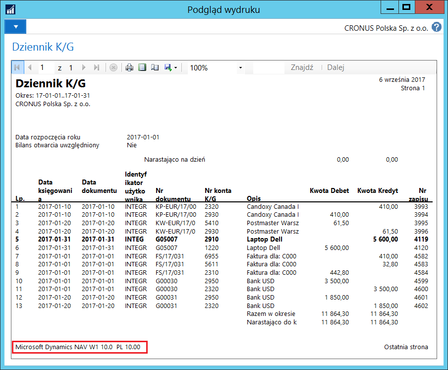{width="6.383333333333334in" height="5.267613735783027in"}
Rysunek 1.39: Raport „dziennik K/G"
Lista raportów z informacją o nazwie i wersji programu księgowego:
Dziennik K/G (G/L Journal)
Dokument księgow.- rejestr K/G (G/L Register Posting Document)
Analityczny rejestr K/G (Analytical G/L Register)
Analityczny dokument K/G (Analytical G/L Document)
Zest. obrotów i sald kont K/G (G/L Acc. Net Change & Balance)
Rejestr VAT sprzedaży/zakupu (Sale/Purchase VAT Reg.)
K/G - faktura sprzedaży (G/L Sales Invoice)
K/G - faktura kor. sprzedaży (G/L Sales Credit Memo)
Zest. obrotów i sald nabywcy (Customer Net Change & Balance)
Dziennik zapisów księgi nabywców (Customer Ledger Entry Journal)
K/G - faktura zakupu (G/L Purchase Invoice)
K/G - faktura kor. zakupu (G/L Purchase Credit Memo)
Zest. obrotów i sald dostawcy (Vendor Net Change & Balance)
Dziennik zapisów księgi dostawców (Vendor Ledger Entry Journal)
Lista inwentaryzacji (Phys. Inventory List)
Typy działalności {#typy-działalności .Poziom-1}
Informacje ogólne
Ustawa CIT na rok 2018 wprowadza wymóg podziału wyniku finansowego na część operacyjną i kapitałową, z zakazem kompensaty strat pomiędzy tymi typami działalności. W większości przypadków, podział księgowań pomiędzy typy działalności, może być zrealizowany za pomocą standardowej funkcjonalności systemu Microsoft Dynamics 365 Business Central on‑premises, przy użyciu kont K/G, czy też funkcjonalności wymiarów księgowych. Tego typu podział jest niestety niemożliwy w przypadku księgowań automatycznych związanych z naliczaniem różnic kursowych. W standardzie systemu, konta różnic kursowych są przypisane do waluty. Nie jest zatem możliwe rozdzielenie różnic kursowych, dotyczących różnych typów działalności na odrębne konta księgi głównej. W przypadku wykorzystania wymiarów księgowych, pobierane są one automatycznie z zapisów ksiąg nabywców i dostawców. Użytkownik nie ma możliwości zmiany wartości wymiarów, z jakimi będą zaksięgowane różnice kursowe podczas procesu rozliczania należności i zobowiązań.
Opisana poniżej funkcjonalność umożliwia podział zapisów ksiąg nabywców i dostawców pomiędzy definiowalne przez użytkownika typy działalności. Do typu działalności można przypisać zestaw kont różnic kursowych, co sprawia, iż w przypadku rozliczenia zapisu księgi nabywcy lub dostawcy z określonym typem działalności, konta różnic kursowych nie są pobierane z ustawień waluty, lecz z ustawień typu działalności.
Ustawienia
Z uwagi na to, że do podziału wyniku finansowego wykorzystywana jest standardowa funkcjonalność wymiarów, należy utworzyć nowy, dedykowany, wymiar. W tym celu, należy postępować według następujących kroków:
Należy wybrać **Działy > Zarządzanie Finansami > Administracja >
Wymiary**.
W oknie Wymiary, które się otworzy, należy utworzyć nowy wiersz
i wprowadzić Kod, Nazwę oraz pozostałe dane wymiaru, którego wartości będą używane do podziału różnic kursowych.
Rysunek 1.40: Wymiary
Należy ustawić kursor w wierszu z nowym wymiarem i na wstążce, na
karcie Nawiguj, wybrać Wartości wymiaru.
W oknie Wartości wymiaru, które się otworzy, należy w kolejnych
wierszach wprowadzić Kod, Nazwę i pozostałe dane wartości nowego wymiaru.
 {width="6.358490813648294in" height="3.8986515748031496in"}
{width="6.358490813648294in" height="3.8986515748031496in"}
Rysunek 1.41: Wartości wymiaru
Aby możliwe było korzystanie z opisywanej funkcjonalności, konieczne jest wskazanie w Ustawieniach księgi głównej nowo utworzonego wymiaru. W tym celu, należy postępować według następujących kroków:
Należy wybrać Działy > Zarządzanie Finansami > Administracja > Ustawienia księgi głównej.
W oknie Ustawienia księgi głównej, które się otworzy, na karcie
skróconej Wymiary, w polu Kod wymiaru typu działalności z listy rozwijanej należy wybrać zdefiniowany w poprzednich krokach wymiar.
 {width="6.386792432195976in" height="4.554001531058618in"}
{width="6.386792432195976in" height="4.554001531058618in"}
Rysunek 1.42: Ustawienia księgi głównej
Po utworzeniu odpowiedniego wymiaru wraz z wartościami, należy zdefiniować konta różnic kursowych. W tym celu, należy postępować według następujących kroków:
Należy wybrać Działy > Zarządzanie Finansami > Administracja > Typy działalności gospodarczych.
W oknie Typy działalności gospodarczych, które się otworzy, należy wybrać właściwe konta księgi głównej, na których księgowane będą zrealizowane i niezrealizowane różnice kursowe związane z wybranymi wartościami wymiaru:
Konto zysków niezrealiz. -- w tym polu należy wybrać konto do
zaksięgowania niezrealizowanych dodatnich różnic kursowych.
Konto zysków zrealizowanych -- w tym polu należy wybrać konto
do zaksięgowania zrealizowanych dodatnich różnic kursowych.
Konto strat niezrealiz. -- w tym polu należy wybrać konto do
zaksięgowania niezrealizowanych ujemnych różnic kursowych.
Konto strat zrealizowanych. -- w tym polu należy wybrać konto
do zaksięgowania zrealizowanych ujemnych różnic kursowych.
 {width="6.207638888888889in" height="3.5659722222222223in"}
{width="6.207638888888889in" height="3.5659722222222223in"}
Rysunek 1.43: Typy działalności gospodarczych
Obsługa
Dzięki wykorzystaniu wymiarów, przypisywanie odpowiednich typów działalności może odbywać się w wielu miejscach w systemie Microsoft Dynamics 365 Business Central on‑premises. Można przypisać domyślny typ działalności do nabywcy lub dostawcy, do dokumentu sprzedaży lub zakupu, oraz do każdego wiersza dziennika głównego.
Z uwagi na to, że dostawcy i nabywcy mogą mieć przypisane różne typy działalności, może zdarzyć się, że będą wzajemnie rozliczane zapisy księgi nabywców lub dostawców z przypisanymi różnymi typami działalności. W takiej sytuacji do określenia kont różnic kursowych zostanie wykorzystany typ działalności z zapisu rozliczającego.
Można ustawić domyślną wartość wymiaru typu działalności dla danej tabeli w systemie. W tym celu, należy postępować według następujących kroków:
Należy wybrać Działy > Zarządzanie Finansami > Administracja > Wymiary.
W oknie Wymiary, które się otworzy, należy ustawić kursor w wierszu z wybranym wymiarem i na wstążce, na karcie Nawiguj wybrać Wymiar domyślny typu konta.
W oknie Wymiar domyślny typu konta, które się otworzy, należy wypełnić poszczególne pola, w oddzielnym wierszu dla każdej wybranej tabeli:
**Identyfikator tabeli -- w tym polu należy wybrać z listy
rozwijanej tabelę, dla której wybrana wartość wymiaru będzie traktowana jako wartość domyślna.**
**Kod wartości wymiaru -- w tym polu należy wybrać domyślną dla
danej tabeli wartość wymiaru.**
Księgowanie wartości -- w tym polu należy wybrać jedną z opcji:
<!-- -->
pusta
Kod obowiązkowy
Ten sam kod
Bez kodu.
 {width="6.358490813648294in" height="3.8972933070866143in"}
{width="6.358490813648294in" height="3.8972933070866143in"}
Rysunek 1.44: Wymiar domyślny typu konta
Domyślne wartości wymiarów można również przypisywać do kartotek nabywców i dostawców. W tym celu, należy postępować według następujących kroków:
- Należy otworzyć kartotekę wybranego nabywcy lub dostawcy i na wstążce wybrać Wymiary
lub
na liście nabywców lub dostawców zaznaczyć wiersze z wybranymi kontrahentami (lub jednym kontrahentem) i na wstążce wybrać Wymiary -- zakres (lub Wymiary -- wiersz).
- W oknie Wymiary domyślne, które się otworzy, należy utworzyć nowy wiersz, wypełniając pola:
Kod wymiaru -- w tym polu należy wybrać z listy rozwijanej
utworzony wcześniej wymiar.
**Kod wartości wymiaru -- w tym polu należy wybrać domyślną dla
wybranych kontrahentów (lub kontrahenta) wartość wymiaru.**
Księgowanie wartości -- w tym polu należy wybrać jedną z opcji:
<!-- -->
pusta
Kod obowiązkowy
Ten sam kod
Bez kodu.
 {width="6.358490813648294in" height="3.834115266841645in"}
{width="6.358490813648294in" height="3.834115266841645in"}
Rysunek 1.45: Wymiary domyślne -- lista nabywców
 {width="6.5in" height="3.954861111111111in"}
{width="6.5in" height="3.954861111111111in"}
Rysunek 1.46: Wymiary domyślne -- kartoteka nabywcy
Typ działalności można również przypisywać bezpośrednio do dokumentu, zarówno w kartotekach dokumentów, jak i w wierszach dzienników. Aby przypisać wartość wymiaru do dokumentu w wierszu dziennika, należy postępować według następujących kroków:
W oknie Dziennik główny należy zaznaczyć wybrany wiersz i na wstążce, na karcie Nawiguj, wybrać Wymiary.
W oknie Edytuj zapisy zestawu wymiarów, które się otworzy, należy ustawić żądaną wartość wymiaru odpowiedzialnego za podział różnic kursowych, wypełniając pola:
**Kod wymiaru -- w tym polu należy wybrać z listy rozwijanej
utworzony wcześniej wymiar.**
**Kod wartości wymiaru -- w tym polu należy wybrać właściwą wartość
wymiaru wybranego w polu Kod wymiaru.**
 {width="6.358490813648294in" height="3.4204057305336835in"}
{width="6.358490813648294in" height="3.4204057305336835in"}
Rysunek 1.47: Zapisy zestawu wymiarów wiersza dziennika głównego
W celu przypisania typu działalności do dokumentu, należy postępować według następujących kroków:
Należy otworzyć jedną z list lub kartotek dokumentów sprzedaży lub zakupu.
W oknie, które się otworzy, należy na wstążce, na karcie Nawiguj, wybrać Wymiary.
<!-- -->
- W oknie Edytuj zapisy zestawu wymiarów, które się otworzy, należy ustawić żądaną wartość wymiaru odpowiedzialnego za podział różnic kursowych, wypełniając pola:
**Kod wymiaru -- w tym polu należy wybrać z listy rozwijanej
utworzony wcześniej wymiar.**
**Kod wartości wymiaru -- w tym polu należy wybrać właściwą wartość
wymiaru wybranego w polu Kod wymiaru.**
Rysunek 1.48: Zapisy zestawu wymiarów faktury zakupu
 {width="6.386792432195976in" height="3.8539107611548555in"}
{width="6.386792432195976in" height="3.8539107611548555in"}
Rysunek 1.49: Zapisy zestawu wymiarów zamówienia sprzedaży
Wybrane elementy sprawozdania finansowego {#wybrane-elementy-sprawozdania-finansowego .Poziom-1}
Informacje ogólne
Bilans i rachunek zysków i strat są sprawozdaniami wymaganymi przez polskie ustawodawstwo. Konstrukcja bilansu i rachunku zysków i strat jest ściśle określona ustawą o rachunkowości i należy je zaimplementować w aplikacji zgodnie z opublikowanymi wzorami. Standardowa funkcjonalność systemu Microsoft Dynamics 365 Business Central on‑premises dostarcza narzędzia do przygotowania m.in. bilansu i rachunku zysków i strat, w postaci Kategorii kont K/G, Podkategorii kont i Arkuszy kont. W ramach Polskiej Lokalizacji przygotowane zostały rozszerzenia, ułatwiające sporządzanie tych sprawozdań zgodnie z polskimi przepisami, zmiany obejmują:
Automatyczne generowanie pozycji bilansu oraz rachunku zysków i strat (wariant porównawczy) w Kategoriach kont K/G podczas tworzenia nowej firmy w Microsoft Dynamics 365 Business Central
Nowe opcje w Kategoriach kont K/G
Usprawnione zarządzanie kolejnością Kategorii kont K/G
Usprawnione generowanie Arkuszy kont na podstawie Kategorii kont K/G.
Kategorie kont {#kategorie-kont .Poziom-2}
Nowe Kategorie kont stanowiące odwzorowanie pozycji bilansu oraz rachunku zysków i strat (w wersji porównawczej) generowane są automatycznie podczas tworzenia nowej firmy w Microsoft Dynamics 365 Business Central. Można również wymusić ich utworzenie uruchamiając Codeunit 52063168 (spowoduje to usunięcie wszystkich powiązań kont księgi głównej z kategoriami). Zastępuje on całkowicie dotychczasowe, standardowe kategorie kont.
Pozycje bilansu w oknie Kategorie kont K/G odzwierciedlone są z opcją Aktywa lub Pasywa w polu Kategorii konta, natomiast pozycje rachunku zysków i strat -- z opcją Przychód.
Rysunek 1.50: Kategorie kont K/G
W oknie Kategorie kont K/G zostało dodane pole Typ źródła, za pomocą którego można zmienić standardowy sposób liczenia salda dla danej kategorii lub podkategorii. W polu dostępne są opcje:
K/G -- kalkulacja salda zgodna ze standardem Microsoft Dynamics 365 Business Central;
Należności lub Zobowiązania -- umożliwia pobranie salda należności lub salda zobowiązań (z ksiąg pomocniczych nabywców i dostawców) powiązanego z kontami księgi głównej przyporządkowanymi do danej kategorii lub podkategorii. Konto przypisane do takiej podkategorii musi mieć przypisaną przeciwstawną podkategorię konta (szczegóły w podrozdziale 1.11.2 Bilans);
Rozliczenie -- umożliwia umieszczenie salda konta księgi głównej w pozycji aktywów lub pasywów bilansu, w zależności od tego, czy saldo konta K/G jest dodatnie, czy ujemne. Konto przypisane do takiej podkategorii musi mieć przypisaną przeciwstawną podkategorię konta (szczegóły w podrozdziale 1.11.2 Bilans).
- Wynik -- umożliwia umieszczenie salda konta K/G w pozycji przychodów lub kosztów rachunku zysków i strat, w zależności od tego, czy saldo konta K/G jest dodatnie, czy ujemne. Konto przypisane do takiej podkategorii musi mieć przypisaną przeciwstawną podkategorię konta (szczegóły w podrozdziale 1.11.3 Rachunek zysków i strat).
- Formuła -- umożliwia ręczne przypisanie wybranych kont K/G do danej podkategorii, pomimo że dane konto zostało już przypisane do innej podkategorii. Przydatne do ustawienia pozycji rachunku zysków i strat „w tym" (szczegóły w podrozdziale 1.11.3 Rachunek zysków i strat).
Rysunek 1.51: Typ źródła
Zmianą w stosunku do standardowej funkcjonalności Kategorii kont K/G jest możliwość dowolnej manipulacji kolejnością pozycji. Do tej pory zmiana kolejności mogła się odbywać wyłącznie w ramach tego samego typu kategorii (Aktywa, Pasywa, Przychód itp.). Rozszerzenie umożliwia pełne zarządzanie kolejnością -- np. dzieckiem kategorii o typie Przychód może być kategoria o typie Aktywa lub Pasywa.
Bilans {#bilans .Poziom-2}
Informacje ogólne
Rozszerzenia dodane w ramach Polskiej Lokalizacji dają możliwość takiego skonfigurowania wybranych pozycji bilansu, aby opierały się one wyłącznie o zapisy debetowe lub wyłącznie o zapisy kredytowe związane z księgami pomocniczymi nabywców i dostawców. Przepisy prawa wymagają takiej prezentacji należności i zobowiązań w bilansie. Ponadto salda niektórych kont księgi głównej mogą być prezentowane w aktywach lub pasywach, w zależności od tego, czy wykazują saldo debetowe, czy kredytowe -- w taki sposób należy prezentować np. rozrachunki publiczno-prawne.
Ustawienia
W standardowej funkcjonalności systemu Microsoft Dynamics 365 Business Central on‑premises konto księgi głównej może należeć tylko do jednej kategorii/podkategorii kont. Niektóre pozycje bilansu sporządzanego zgodnie z polskimi przepisami wymagają, aby jedno konto księgi głównej przynależało do dwóch kategorii: należności i zobowiązań.
Jeżeli podkategoria konta, widoczna w kartotece konta księgi głównej, jest oparta o źródło typu Należności lub Zobowiązania, należy określić również przeciwstawną podkategorię dla tego konta, która ma przeciwny typ źródła. W tym celu, należy wykonać następujące kroki:
Należy wybrać Działy > Zarządzanie Finansami > Księga główna > Plan kont.
W oknie Plan kont, które się otworzy, należy ustawić kursor w wierszu z wybranym kontem rozrachunkowym używanym w konfiguracji Grup księgowych nabywcy lub Grup księgowych dostawcy, a następnie wybrać Edytuj.
W oknie Kartoteka konta K/G, na karcie skróconej Ogólne, należy wypełnić pola zgodnie z poniższym opisem:
- Kategoria konta -- należy wybrać jedną z opcji:
<!-- -->
Aktywa -- jeśli jest to konto rozrachunków z odbiorcami,
Pasywa -- jeśli jest to konto rozrachunków z dostawcami.
<!-- -->
- **Podkategoria konta -- z listy rozwijanej w tym polu należy
wybrać:**
<!-- -->
podkategorię, dla której ustawione jest źródło typu Należności,
jeśli w polu Kategoria konta została wybrana opcja Aktywa,
podkategorię, dla której ustawione jest źródło typu
Zobowiązania, jeśli w polu Kategoria konta została wybrana opcja Pasywa.
<!-- -->
- **Przeciwst. podkategoria konta -- z listy rozwijanej w tym polu
należy wybrać:**
<!-- -->
podkategorię, dla której ustawione jest źródło typu
Zobowiązania, jeśli w polu Kategoria konta została wybrana opcja Aktywa,
podkategorię, dla której ustawione jest źródło typu Należności,
jeśli w polu Kategoria konta została wybrana opcja Pasywa.
Rysunek 1.52: Kartoteka konta K/G
W oknie Kategorie kont K/G, w polu Konta K/G w kategorii prezentowany jest zestaw kont księgi głównej przyporządkowanych do danej podkategorii. Konto przyporządkowane do podkategorii ze źródłem typu Należności, powinno być przyporządkowane również do podkategorii ze źródłem typu Zobowiązania i odwrotnie, aby zagwarantować ujęcie wszystkich sald wszystkich kont księgi głównej w bilansie.
 {width="6.391666666666667in" height="3.971573709536308in"}
{width="6.391666666666667in" height="3.971573709536308in"}
Rysunek 1.53: Kategorie kont K/G
Jeżeli podkategoria konta, widoczna w kartotece konta księgi głównej, jest oparta o źródło typu Rozliczenie, należy określić przeciwstawną podkategorię dla tego konta, również ze źródłem Rozliczenie, ale przynależącą do przeciwnej kategorii. W tym celu, należy wykonać następujące kroki:
Należy wybrać Działy > Zarządzanie Finansami > Księga główna > Plan kont.
W oknie Plan kont, które się otworzy, należy ustawić kursor w wierszu z wybranym kontem księgi głównej, np. dotyczącym rozrachunków publiczno-prawnych, a następnie wybrać Edytuj.
W oknie Kartoteka konta K/G, na karcie skróconej Ogólne, należy wypełnić pola zgodnie z poniższym opisem:
**Kategoria konta -- należy wybrać jedną z opcji: Aktywa lub
Pasywa**
**Podkategoria konta -- z listy rozwijanej w tym polu należy
wybrać** podkategorię, dla której ustawione jest źródło typu Rozliczenie, przypisaną do kategorii wybranej w polu Kategoria konta
**Przeciwst. podkategoria konta -- z listy rozwijanej w tym polu
należy wybrać** podkategorię, dla której ustawione jest źródło typu Rozliczenie, przypisaną do kategorii przeciwnej do tej wybranej w polu Kategoria konta.
Rysunek 1.54: Kartoteka konta K/G
W oknie Kategorie kont K/G, w polu Konta K/G w kategorii prezentowany jest zestaw kont księgi głównej przyporządkowanych do danej podkategorii. Konto przyporządkowane do podkategorii ze źródłem typu Rozliczenie w kategorii Aktywa, powinno być przyporządkowane również do podkategorii ze źródłem typu Rozliczenie w kategorii Pasywa, aby zagwarantować ujęcie wszystkich sald wszystkich kont księgi głównej w bilansie.
 {width="6.320754593175853in" height="4.334714566929134in"}
{width="6.320754593175853in" height="4.334714566929134in"}
Rysunek 1.55: Kategorie kont K/G
Standardowa funkcjonalność systemu Microsoft Dynamics 365 Business Central on‑premises zawiera pole informacji Konta K/G bez kategorii, prezentujące konta księgi głównej, które nie zostały przypisane do żadnej kategorii i podkategorii. W ramach Polskiej Lokalizacji zostało dodane pole informacji Błędnie przypisane konta K/G, które prezentuje konta księgi głównej przypisane wyłącznie do jednej podkategorii, mającej źródło typu Należności, Zobowiązania lub Rozliczenie, czyli analizującej wyłącznie zapisy po jednej stronie danego konta. Aby w bilansie pojawiła się całość obrotów danego konta księgi głównej, należy przypisać je do przeciwstawnej kategorii lub wybrać dla niego kategorię ze źródłem typu K/G.
 {width="6.311321084864392in" height="3.99042760279965in"}
{width="6.311321084864392in" height="3.99042760279965in"}
Rysunek 1.56: Kategorie kont K/G
Obsługa
Na podstawie kategorii kont można w standardowy sposób wygenerować arkusze kont, przy użyciu akcji Wygeneruj arkusze kont w oknie Kategorie kont K/G. Funkcja generująca arkusze kont została dostosowana w taki sposób, aby ustawiać typ źródła w poszczególnych pozycjach bilansu w wygenerowanym arkuszu kont, na podstawie ustawienia typów źródła poszczególnych podkategorii kont K/G. W przypadku podkategorii z typem źródła Rozliczenie, pod wierszem z pozycją bilansu tworzone są wiersze techniczne z kontami księgi głównej wchodzącymi w skład pozycji bilansu. W pozycjach z typem źródła Formuła są prezentowane salda powiązanych z nimi kont księgi głównej.
Arkusze kont mogą być też tworzone ręcznie. W tej sytuacji, w wierszu arkusza kont jest możliwość zaznaczenia, że dane mają dotyczyć wyłącznie należności lub zobowiązań, poprzez wybranie odpowiedniej opcji w polu Typ źródła.
Uwaga: Typ źródła Należności lub
Zobowiązania nie może być użyty, gdy:
-- kwoty pochodzą z budżetu
-- kwoty pochodzą z arkusza analitycznego
-- kwoty mają być wyrażone w dodatkowej walucie raportowania
-- kwota jest innego typu niż Kwota netto
W takich przypadkach wartość komórki arkusza nie będzie obliczona.
 {width="6.320754593175853in" height="4.256380139982502in"}
{width="6.320754593175853in" height="4.256380139982502in"}
Rysunek 1.57: Arkusz kont
Aby w pozycjach z typem źródła Należności lub Zobowiązania saldo było poprawnie obliczone, program analizuje zapisy szczegółowe ksiąg nabywcy, dostawcy i pracownika, połączone z danym kontem księgi głównej poprzez konfigurację Grup księgowych nabywców, Grup księgowych dostawców i Grup księgowych pracownika. Wymagane jest, aby saldo konta księgi głównej było zgodne z saldem w księgach pomocniczych do niego przypisanych.
[Przykład]{.underline}:
Konto księgi głównej połączone jest z wybraną Grupą księgową nabywców. W tej grupie księgowej zaksięgowano fakturę na 100 zł i płatność na 50 zł. Oto wyniki, które dla tego konta pokaże arkusz kont, w zależności od wybranego typu źródła:
K/G 50 zł
Należności 100 zł
Zobowiązania 50 zł
W sytuacji, gdy faktura zostanie rozliczona z płatnością, wyniki będą następujące:
K/G 50 zł
Należności 50 zł
Zobowiązania 0 zł
W powyższym przykładzie można zauważyć, że aby bilans ujmował całość zapisów, konto musi wystąpić w dwóch pozycjach bilansu, raz jako Zobowiązania, raz jako Należności. Alternatywnie jego obroty można ująć całościowo (per saldo) w jednej pozycji z typem źródła K/G.
Aby w pozycjach z typem źródła Rozliczenie saldo było poprawnie obliczone, program analizuje znak kwoty salda każdego konta księgi głównej przypisanego do danej pozycji.
[Przykład]{.underline}:
Do dwóch pozycji bilansu z typem źródła Rozliczenie (jednej w aktywach i jednej w pasywach) przypisane są trzy konta księgi głównej z grupy rozrachunków publiczno-prawnych, prezentujące salda dodatnie i ujemne:
Konto nr 1 -50 zł
Konto nr 2 100 zł
Konto nr 3 -250 zł
Oto wyniki, które dla tych kont pokaże arkusz kont:
Aktywa 100 zł
Pasywa 300 zł
W powyższym przykładzie można zauważyć, że aby w bilansie poprawnie zostały zaprezentowane salda poszczególnych rozrachunków publiczno-prawnych, każde powiązane z nimi konto księgi głównej musi wystąpić w dwóch pozycjach bilansu, raz w Aktywach, raz w Pasywach. Alternatywnie obroty tych kont można ująć całościowo (per saldo) w jednej pozycji z typem źródła K/G.
Rachunek zysków i strat {#rachunek-zysków-i-strat .Poziom-2}
Informacje ogólne
Rozszerzenia dodane w ramach Polskiej Lokalizacji dają możliwość takiego skonfigurowania wybranych pozycji rachunku zysków i strat, aby opierały się one o te same konta księgi głównej, ale prezentowały wartość tylko w przychodach lub tylko w kosztach, w zależności od tego, czy suma ich sald jest dodatnia, czy ujemna. Przepisy prawa wymagają takiej prezentacji różnic kursowych walut w rachunku zysków i strat. Ponadto salda niektórych kont księgi głównej mogą być prezentowane w więcej niż jednej pozycji przychodów lub kosztów, np. w pozycjach „w tym".
Ustawienia
W standardowej funkcjonalności systemu Microsoft Dynamics 365 Business Central on‑premises konto księgi głównej może należeć tylko do jednej kategorii/podkategorii kont. Niektóre pozycje rachunku zysków i strat sporządzanego zgodnie z polskimi przepisami wymagają, aby jedno konto księgi głównej przynależało do dwóch kategorii: przychodów i kosztów.
Jeżeli podkategoria konta występująca jako pozycja przychodów, widoczna w kartotece konta księgi głównej, jest oparta o źródło typu Wynik, należy określić również przeciwstawną podkategorię dla tego konta, również ze źródłem Wynik, ale występującą jako pozycja kosztów (i odwrotnie). W tym celu, należy wykonać następujące kroki:
Należy wybrać Działy > Zarządzanie Finansami > Księga główna > Plan kont.
W oknie Plan kont, które się otworzy, należy ustawić kursor w wierszu z wybranym kontem księgi głównej, np. dotyczącym różnic kursowych, a następnie wybrać Edytuj.
W oknie Kartoteka konta K/G, na karcie skróconej Ogólne, należy wypełnić pola zgodnie z poniższym opisem:
Kategoria konta -- należy wybrać opcję Przychód
**Podkategoria konta -- z listy rozwijanej w tym polu należy
wybrać** podkategorię, dla której ustawione jest źródło typu Wynik, należącą do grupy przychodów lub kosztów
**Przeciwst. podkategoria konta -- z listy rozwijanej w tym polu
należy wybrać** podkategorię, dla której ustawione jest źródło typu Wynik, należącą do grupy przychodów lub kosztów, przeciwnej do grupy przynależności pozycji wybranej w polu Podkategoria konta.
Rysunek 1.58: Kartoteka konta K/G
W oknie Kategorie kont K/G, w polu Konta K/G w kategorii prezentowany jest zestaw kont księgi głównej przyporządkowanych do danej podkategorii. Konto przyporządkowane do podkategorii ze źródłem typu Wynik w pozycji przychodów, powinno być przyporządkowane również do podkategorii ze źródłem typu Wynik w pozycji kosztów, aby zagwarantować poprawną prezentację dodatniego lub ujemnego wyniku wybranych operacji w rachunku zysków i strat.
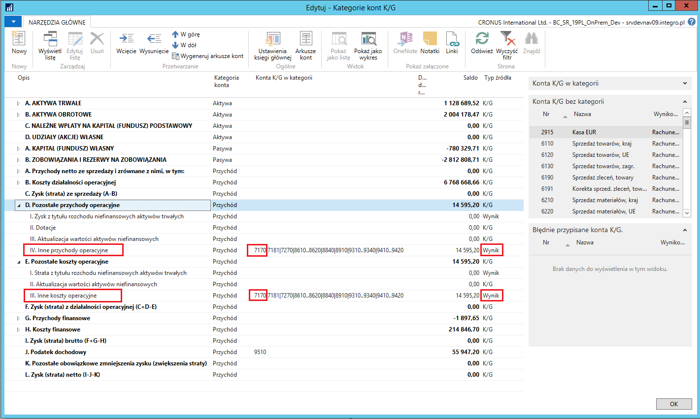{width="6.320754593175853in" height="3.7897517497812774in"}
Rysunek 1.59: Kategorie kont K/G
Standardowa funkcjonalność systemu Microsoft Dynamics 365 Business Central on‑premises zawiera pole informacji Konta K/G bez kategorii, prezentujące konta księgi głównej, które nie zostały przypisane do żadnej kategorii i podkategorii. W ramach Polskiej Lokalizacji zostało dodane pole informacji Błędnie przypisane konta K/G, które prezentuje konta księgi głównej przypisane wyłącznie do jednej podkategorii, mającej źródło typu Wynik, czyli prezentującej wyłącznie saldo po jednej stronie danego konta. Aby w bilansie pojawiła się całość obrotów danego konta księgi głównej, należy przypisać je do przeciwstawnej kategorii lub wybrać dla niego kategorię ze źródłem typu K/G.
{width="6.311321084864392in" height="3.99042760279965in"}
Rysunek 1.60: Kategorie kont K/G
W oknie Kategorie kont K/G, do nadrzędnych pozycji rachunku zysków i strat, zawierających treść „w tym", należy w polu Typ źródła wybrać opcję Formuła, a następnie w polu Konta K/G w kategorii wprowadzić odpowiedni zestaw kont księgi głównej. W ten sposób salda wybranych kont księgi głównej będą zaprezentowane dwukrotnie, w dwóch różnych, ale powiązanych ze sobą pozycjach.
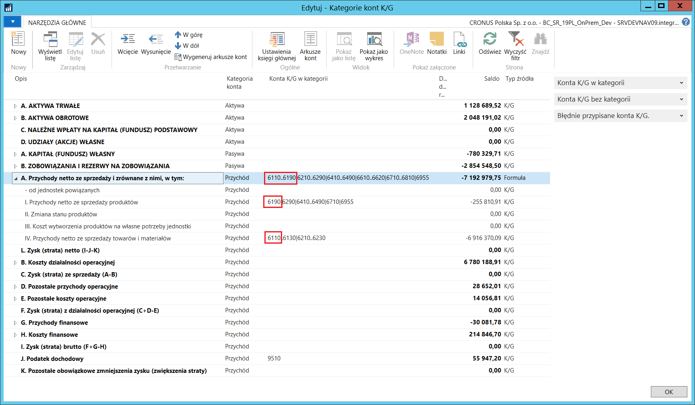{width="6.383333333333334in" height="3.718837489063867in"}
Rysunek 1.61: Kategorie kont K/G
Obsługa
Na podstawie kategorii kont można w standardowy sposób wygenerować arkusze kont, przy użyciu akcji Wygeneruj arkusze kont w oknie Kategorie kont K/G. W ramach Polskiej Lokalizacji funkcja generująca arkusze kont została dostosowana w taki sposób, aby ustawiać typ źródła w poszczególnych pozycjach rachunku zysków i strat w wygenerowanym arkuszu kont, na podstawie ustawienia typów źródła poszczególnych podkategorii kont K/G.
Arkusze kont mogą być też tworzone ręcznie. W tej sytuacji, w wierszu arkusza kont należy odpowiednio wypełnić pole Typ źródła.
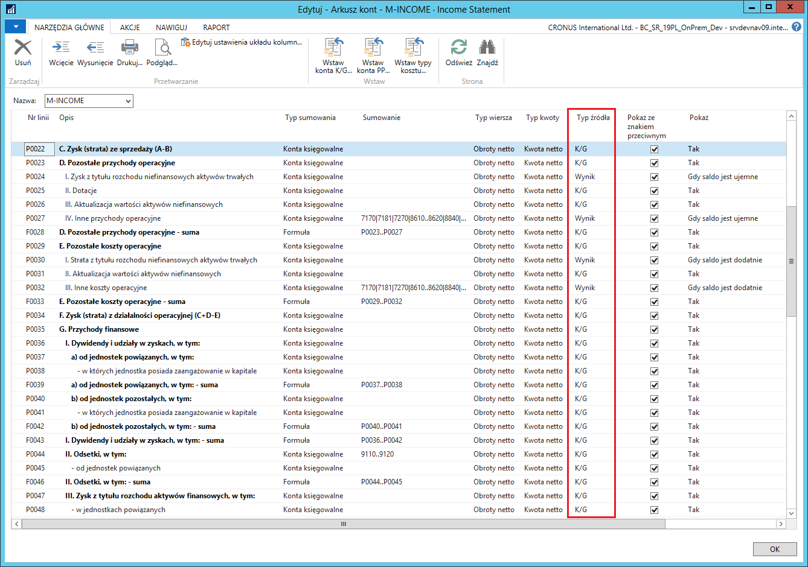{width="6.351397637795276in" height="4.462263779527559in"}
Rysunek 1.62: Arkusz kont
Aby w pozycjach z typem źródła Wynik saldo było poprawnie obliczone, program analizuje znak kwoty sumy sald wszystkich kont księgi głównej przypisanych do danej pozycji.
[Przykład]{.underline}:
Do dwóch pozycji rachunku zysków i strat z typem źródła Wynik (jednej w przychodach i jednej w kosztach) przypisane są trzy konta księgi głównej, prezentujące salda dodatnie i ujemne:
Konto nr 1 -50 zł
Konto nr 2 100 zł
Konto nr 3 -250 zł
Oto wyniki, które dla tych kont pokaże arkusz kont:
Przychody 200 zł
Koszty 0 zł
W powyższym przykładzie można zauważyć, że aby w bilansie poprawnie zostały ujęte salda niektórych kont księgi głównej, każde konto musi wystąpić w dwóch pozycjach rachunku zysków i strat, raz w grupie przychodów, raz w grupie kosztów. Alternatywnie obroty tych kont można ująć całościowo (per saldo) w jednej pozycji z typem źródła K/G.
Podział kosztów na podatkowe i niepodatkowe {#podział-kosztów-na-podatkowe-i-niepodatkowe .Poziom-1}
Informacje ogólne
Zgodnie z aktualnie obowiązującymi przepisami, podatnik może zaliczyć tylko 75% wydatków związanych z używaniem samochodu do kosztów uzyskania przychodu w przypadku, gdy wykorzystuje ten samochód również do celów niezwiązanych z prowadzoną działalnością, czyli również do celów prywatnych. W ramach Polskiej Lokalizacji w systemie Microsoft Dynamics 365 Business Central on‑premises zostało dodane narzędzie umożliwiające poprawne i przejrzyste rozliczenie takich wydatków.
Ustawienia
W celu ustawienia zasad alokacji kosztów, należy wykonać następujące kroki:
Należy wybrać Działy > Zarządzanie Finansami > Administracja > Zobowiązania > Ustawienia > Typy alokacji.
W oknie Typy alokacji, które się otworzy, należy na wstążce kliknąć Nowy.
W oknie Kartoteka typu alokacji należy wypełnić pola zgodnie z poniższym opisem:
Karta skrócona Ogólne:
Kod -- w tym polu należy wprowadzić unikalny kod identyfikujący dany schemat alokacji kosztów,
Opis -- w tym polu można wprowadzić opis danego schematu alokacji kosztów,
Zachowaj pierwotny wiersz -- zaznaczenie tego pola spowoduje, że źródłowy wiersz dokumentu z kosztem podlegającym alokowaniu nie zostanie usunięty po wykonaniu alokacji. Brak znacznika spowoduje, że wiersz źródłowy zostanie usunięty z dokumentu.
Karta skrócona Wiersze:
- Typ -- domyślnie ustawiona jest opcja Konto K/G, bez możliwości zmiany -- wskazuje na bezpośrednią ewidencję kosztu na kontach księgi głównej (ewidencja wartościowa),
<!-- -->
Nr -- z listy rozwijanej w tym polu należy wybrać właściwe dla ewidencji kosztów konto księgi głównej,
Typ alokacji -- z listy rozwijanej w tym polu należy wybrać wartość w dokumencie zakupu, która będzie dzielona w wyniku alokowania kosztu:
<!-- -->
Ilość -- nowe wiersze dokumentu zakupu zostaną utworzone w wyniku podzielenia wartości z pola Ilość w pierwotnym wierszu zakupu,
Koszt jednostkowy -- nowe wiersze dokumentu zakupu zostaną utworzone w wyniku podzielenia wartości z pola Bezpośr. koszt jedn. w pierwotnym wierszu zakupu.
<!-- -->
Opis -- pole opcjonalne -- w tym polu można wprowadzić krótki opis wiersza (np. zdefiniowanych w nim zasad alokacji),
Udział -- w tym polu należy wprowadzić wartość klucza podziału kosztów według udziału ilościowego -- na tej podstawie zostanie wyliczona wartość procentowa w polu Procent,
Procent -- pole nieedytowalne, prezentujące wartość klucza
podziału kosztów według udziału procentowego, wyliczonego na podstawie wartości wprowadzonych w polu Udział.
Do każdego wiersza alokacji można przypisać zestaw wartości wymiarów, który będzie miał zastosowanie w utworzonych wierszach dokumentu zakupu. Aby przypisać wartości wymiarów, w karcie skróconej Wiersze można wyświetlić kolumny z odpowiednimi wymiarami, lub zaznaczyć wiersz i kliknąć akcję Wiersze, następnie kliknąć Wymiary (można też nacisnąć Ctrl+Shift+D). Czynność należy powtórzyć dla każdego wiersza w oknie Kartoteka typu alokacji.
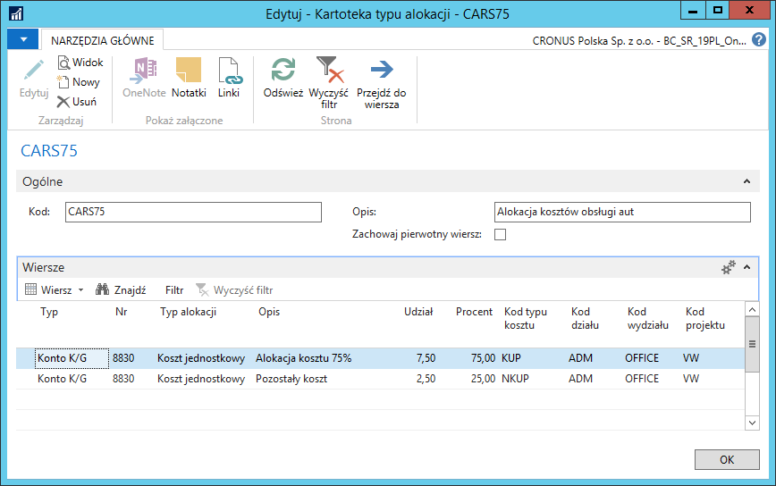{width="6.333333333333333in" height="3.9691590113735784in"}
Rysunek 1.63: Kartoteka typu alokacji
Obsługa
Alokowanie kosztów w głównej mierze dotyczy wydatków, które należy podzielić na podatkowe i niepodatkowe, dlatego funkcjonalność jest dostępna w dokumentach zakupu typu faktura i zamówienie.
{width="0.19in" height="0.19in"}
Uwaga: Opis funkcji alokowania kosztów zamieszczony w dalszej części
rozdziału bazuje na przykładzie faktury zakupu. W zamówieniu zakupu
mechanizm jest identyczny, więc należy wzorować się na opisie dotyczącym
faktury zakupu.
W celu zaksięgowania kosztów z faktury zakupu według wybranego klucza alokacji, należy wykonać następujące kroki:
Należy wybrać Działy > Zarządzanie Finansami > Zobowiązania > Faktury zakupu.
W oknie Faktury zakupu, które się otworzy, należy na wstążce kliknąć Nowy.
Należy wypełnić nagłówek i wiersze nowej faktury zakupu w standardowy sposób.
W wybranych wierszach faktury z kosztami do alokowania należy z
listy rozwijanej w polu Typ alokacji wybrać wcześniej zdefiniowany klucz, według którego ma zostać dokonany podział kosztu z danego wiersza.
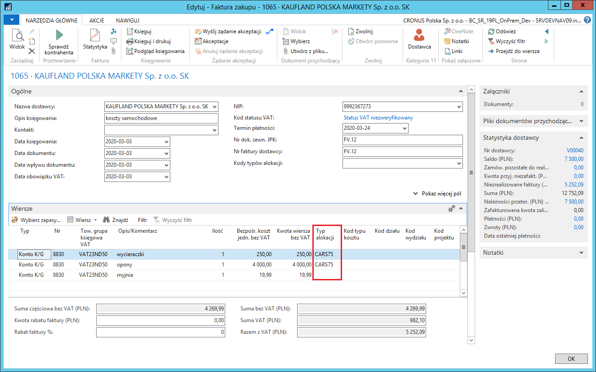{width="6.372112860892388in" height="3.9791666666666665in"}
Rysunek 1.64: Faktura zakupu
- Jeśli wszystkie koszty, we wszystkich wierszach faktury, mają zostać
podzielone według tego samego klucza, można w nagłówku dokumentu, w karcie skróconej Ogólne, z listy rozwijanej w polu Typ alokacji wybrać klucz, który zostanie skopiowany do wszystkich wierszy.
Zmiana wartości w polu Typ alokacji w karcie skróconej Ogólne w sytuacji, gdy istnieje choć jeden wiersz dokumentu, spowoduje wyświetlenie komunikatu, w którym należy kliknąć Tak, aby zastosować zmianę do wszystkich wierszy dokumentu.
Rysunek 1.65: Komunikat
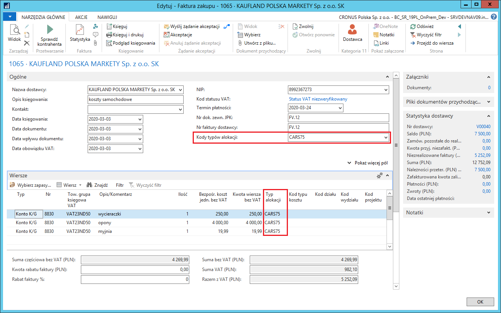{width="6.40625in" height="4.0004844706911635in"}
Rysunek 1.66: Kartoteka typu alokacji
- Po przypisaniu typu alokacji do wszystkich wymaganych wierszy,
należy na wstążce kliknąć Zaalokuj wszystkie wiersze.
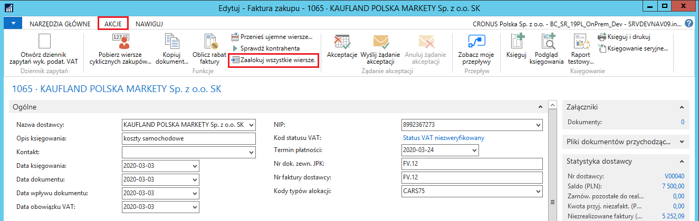{width="6.364583333333333in" height="2.017491251093613in"}
Rysunek 1.67: Faktura zakupu -- Zaalokuj wszystkie wiersze
W wyniku działania tej funkcji, system utworzył nowe wiersze faktury zakupu na podstawie wybranego typu alokacji, włącznie z wymiarami. Wiersz źródłowy, który podlegał alokowaniu, został zachowany lub usunięty, w zależności od parametru Zachowaj pierwotny wiersz ustawionego dla wybranego typu alokacji.
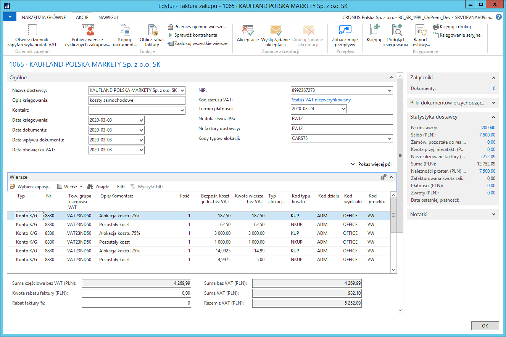{width="6.364583333333333in" height="4.243055555555555in"}
Rysunek 1.68: Faktura zakupu -- wiersze z zaalokowanymi kosztami
Dalsze procesy weryfikacji i księgowania faktury zakupu należy wykonać w standardowy sposób.
Obsługa podatku VAT {#obsługa-podatku-vat .Rozdzial}
<!-- -->
<!-- -->
Data obowiązku VAT {#data-obowiązku-vat .Poziom-1}
Podstawowe ustawienia i transakcje z VAT {#podstawowe-ustawienia-i-transakcje-z-vat .Poziom-2}
Informacje ogólne
Funkcjonalność Data obowiązku VAT została wprowadzona ze względu na wymagania przepisów polskiego prawa, zgodnie z którymi podatek VAT może być rozliczony w innym okresie niż dokument został zaksięgowany.
Funkcjonalność Data obowiązku VAT ma wpływ na sposób obsługi poniższych elementów systemu:
Ustawienie funkcji Daty obowiązku VAT.
Księgowanie transakcji sprzedaży, zakupu i serwisu z **Datą
obowiązku VAT**.
Przekładanie podatku VAT w fakturach korygujących sprzedaży.
Przygotowanie deklaracji VAT.
Kalkulowanie i księgowanie podatku VAT.
Uzgadnianie podatku VAT z zapisami księgi głównej.
Ustawienia
W celu ustawienia możliwości i sposobu obsługi Daty obowiązku VAT, należy postępować według następujących kroków:
Należy wybrać Działy > Zarządzanie Finansami > Administracja > Ustawienia księgi głównej.
W oknie Ustawienia księgi głównej, na karcie skróconej VAT należy wypełnić pola zgodnie z potrzebami:
Użyj daty obowiązku VAT -- zaznaczenie tego pola umożliwia
korzystanie z funkcjonalności Data obowiązku VAT, a system kontroluje, czy pole Data obowiązku VAT nie jest puste w transakcjach sprzedaży, zakupu i serwisu. Niezaznaczenie tego pola powoduje, że w całym systemie, we wszystkich dokumentach do pola Data obowiązku VAT kopiowana jest Data księgowania, a system uniemożliwia ręczną zmianę daty obowiązku VAT na inną.
**Dozw. księgowanie VAT od **-- w tym polu należy wprowadzić datę
początkową okresu, w jakim dozwolone jest rozliczanie podatku VAT z księgowanych transakcji. Pozostawienie pola pustego powoduje, że system nie kontroluje początku okresu rozliczenia VAT i istnieje ryzyko, że podatek VAT z księgowanej transakcji może zostać przypisany do okresu już rozliczonego.
**Dozw. księgowanie VAT do **-- w tym polu należy wprowadzić datę
końcową okresu, w jakim dozwolone jest rozliczanie podatku VAT z księgowanych transakcji. Pozostawienie pola pustego powoduje, że system nie kontroluje końca okresu rozliczenia VAT i istnieje ryzyko, że podatek VAT z księgowanej transakcji może zostać przypisany do okresu, który będzie rozliczany w dalekiej przyszłości.
Dozw. zmiana daty obowiązku VAT w wierszach -- zaznaczenie tego
pola spowoduje umożliwienie wprowadzenia innej daty obowiązku VAT w wierszach dokumentu, a to oznacza, że możliwe jest w takiej sytuacji rozliczenie podatku VAT z każdego wiersza jednego dokumentu w innym okresie. Domyślnie w każdym wierszu system wstawi datę obowiązku VAT taką samą, jak w nagłówku, ale pozwoli ją zmienić na inną.
Pozostawienie pustego pola spowoduje, że system będzie kontrolował, czy data obowiązku VAT w nagłówku dokumentu jest taka sama, jak w wierszach.
- Użyj przełożonego VAT -- zaznaczenie tego pola oznacza
pozwolenie na używanie funkcji Przełożony VAT.
Zaznaczenie pola Użyj przełożonego VAT możliwe jest tylko w sytuacji, gdy zaznaczone jest pole Użyj daty obowiązku VAT.
- Zezwalaj na przełożony VAT w wierszu -- zaznaczenie tego pola
spowoduje, że możliwe będzie zaznaczanie lub odznaczanie pola **Przełożony VAT w **wierszach dokumentu, niezależnie od tego, czy pole Przełożony VAT w nagłówku jest zaznaczone. Domyślnie w każdym wierszu system wstawi znacznik w polu Przełożony VAT, jeśli pole to jest zaznaczone w nagłówku, ale pozwoli na zmianę w wierszach.
- Na karcie skróconej Ogólne jest pole **Drukowanie specyfikacji
VAT w PLN** -- zaznaczenie tego pola powoduje, że specyfikacja VAT na dokumentach sprzedaży wystawionych w walucie obcej drukowana jest w PLN.
 {width="6.4in" height="6.323418635170603in"}
{width="6.4in" height="6.323418635170603in"}
Rysunek 2.1: Ustawienia księgi głównej
Należy wybrać Działy > Zarządzanie Finansami > Administracja > Ustawienia sprzedaży i należności.
W oknie Ustawienia sprzedaży i należn., na karcie skróconej Ogólne należy zaznaczyć pole Potwierdzenie faktury korygującej, jeśli podatek VAT z faktur korygujących sprzedaży ma być automatycznie traktowany jako Przełożony VAT do chwili, aż dokument zostanie podpisany przez odbiorcę.
 {width="6.3698961067366575in" height="5.95in"}
{width="6.3698961067366575in" height="5.95in"}
Rysunek 2.2: Ustawienia sprzedaży i należności
Po zdefiniowaniu podstawowych ustawień dla Daty obowiązku VAT można, na wzór standardowej funkcjonalności dla dozwolonych okresów księgowania, ustawić dozwolone okresy VAT, czyli, oprócz ogólnego ustawienia w oknie Ustawienia księgi głównej, można definiować ustawienia dla poszczególnych użytkowników. W tym celu należy postępować według następujących kroków:
Należy wybrać Działy > Administracja > Użytkownicy > Ustawienia użytkownika.
W oknie Ustawienia użytkownika, które się otworzy, w wierszu z ustawieniami wybranego użytkownika, należy uzupełnić pola:
**Dozw. księgowanie VAT od **-- w tym polu należy wprowadzić datę
początkową okresu, w jakim dozwolone dla wybranego użytkownika jest rozliczanie podatku VAT z księgowanych transakcji. Pozostawienie pola pustego powoduje, że system nie kontroluje początku okresu rozliczenia VAT i istnieje ryzyko, że podatek VAT z księgowanej transakcji może zostać przypisany do okresu już rozliczonego.
**Dozw. księgowanie VAT do **-- w tym polu należy wprowadzić datę
końcową okresu, w jakim dozwolone jest rozliczanie podatku VAT z księgowanych transakcji. Pozostawienie pola pustego powoduje, że system nie kontroluje końca okresu rozliczenia VAT i istnieje ryzyko, że podatek VAT z księgowanej transakcji może zostać przypisany do okresu, który będzie rozliczany w dalekiej przyszłości.
Ustawienia zdefiniowane w oknie Ustawienia użytkownika mają wyższy priorytet niż ustawienia zdefiniowane w oknie Ustawienia księgi głównej. Oznacza to, że dla wybranych użytkowników można ustawić inne dozwolone okresy VAT (w oknie Ustawienia użytkownika), niż obowiązujące dla pozostałych użytkowników (w oknie Ustawienia księgi głównej), nie mających specjalnych ustawień w oknie Ustawienia użytkownika.
 {width="6.4in" height="2.810255905511811in"}
{width="6.4in" height="2.810255905511811in"}
Rysunek 2.3: Ustawienia użytkownika
Zdarza się, iż okresy sprawozdawcze VAT i okresy obrachunkowe się nie pokrywają. Aby ułatwić raportowanie i księgowanie VAT zgodne z okresami VAT oraz tworzenie wewnętrznych i ustawowych raportów zgodnych z okresami obrachunkowymi, w ramach funkcji Data obowiązku VAT zostały dodane Okresy VAT.
W celu ich zdefiniowania należy postępować według następujących kroków:
Należy wybrać Działy > Zarządzanie Finansami > Administracja > Okresy VAT.
W oknie Okresy VAT, które się otworzy, należy wybrać Utwórz okresy.
W oknie Utwórz okres VAT, które się otworzy, należy wypełnić pola:
Data początkowa -- w tym polu należy wprowadzić datę początkową
roku rozliczeniowego dla podatku VAT
Liczba okresów -- w tym polu należy wprowadzić ilość okresów,
które składają się na rok rozliczenia podatku VAT
Długość okresu -- w tym polu należy wprowadzić formułę,
na podstawie której zostanie obliczona długość jednego okresu roku rozliczenia podatku VAT, np. 1M = 1 miesiąc, 3M = 3 miesiące itp.
 {width="4.543307086614173in" height="2.984251968503937in"}
{width="4.543307086614173in" height="2.984251968503937in"}
Rysunek 2.4: Tworzenie okresów VAT
- Zatwierdzenie przyciskiem OK w poprzednim oknie, powoduje automatyczne dodanie kolejnych wierszy w oknie Okresy VAT, zgodnie z wprowadzonymi parametrami podczas tworzenia okresów:
 {width="4.559055118110236in" height="5.641732283464567in"}
{width="4.559055118110236in" height="5.641732283464567in"}
Rysunek 2.5: Okresy VAT
Dla podatku VAT zaksięgowanego z transakcji oznaczonych jako Przełożony VAT, konieczne jest wskazanie kont księgi głównej, które mogą być inne niż te przeznaczone do księgowania zwykłego podatku VAT należnego i naliczonego. W tym celu należy postępować według następujących kroków:
Należy wybrać **Działy > Zarządzanie Finansami > Administracja >
Ustawienia księgowe VAT**.
W oknie Ustawienia księgowe VAT, które się otworzy, należy
zaznaczyć wiersz z wybraną kombinacją kodów w polach Gosp. grupa księgowa VAT i Tow. grupa księgowa VAT, a następnie wybrać Edycja.
W oknie Kartoteka ustaw. księg. VAT, które się otworzy,
na karcie skróconej Sprzedaż należy uzupełnić pole Konto przełoż. należnego VAT, a na karcie skróconej Zakupy należy uzupełnić pola: Konto przełoż. naliczonego VAT i Konto przełoż. odwrotnego obciążenia. W wymienionych polach można rozwinąć listę kont księgi głównej i wybrać spośród nich właściwe.
 {width="6.382731846019247in" height="5.291666666666667in"}
{width="6.382731846019247in" height="5.291666666666667in"}
Rysunek 2.6: Konta do księgowania przełożonego VAT
Obsługa
Aby księgować transakcje zakupu, sprzedaży i serwisu z wykorzystaniem funkcjonalności Data obowiązku VAT, użytkownik musi mieć możliwość wprowadzania daty obowiązku VAT we wszystkich właściwych oknach w systemie: nagłówkach i wierszach dokumentów, wierszach dzienników itp. W celu zaksięgowania np. transakcji zakupu z użyciem funkcjonalności Data obowiązku VAT, należy postępować według następujących kroków:
Należy wybrać **Działy > Zarządzanie Finansami > Zobowiązania >
Faktury zakupu.**
W oknie, które się otworzy, należy wybrać Nowe i standardowo
wprowadzić dane o fakturze zakupu.
Na karcie skróconej Ogólne pole Data obowiązku VAT jest
wypełniane automatycznie przez system. Przyjmowana jest wartość z pola Data dokumentu lub z pola Data wpływu dokumentu, w zależności od tego, która z nich jest późniejsza. Należy zmienić datę w polu **Data obowiązku VAT na **inną niż domyślna.
Na karcie skróconej Wiersze, należy zwrócić uwagę na pole **Data
obowiązku VAT** -- powinno przyjąć wartość taką samą, jak w polu Data obowiązku VAT na karcie skróconej Ogólne. Jeśli w ustawieniach dozwolona jest zmiana daty obowiązku VAT w wierszach, należy zmienić datę w polu **Data obowiązku VAT na **inną niż domyślna.
 {width="6.37599956255468in" height="5.081045494313211in"}
{width="6.37599956255468in" height="5.081045494313211in"}
Rysunek 2.7: Data obowiązku VAT w fakturze zakupu
Należy zaksięgować fakturę zakupu.
Należy sprawdzić daty obowiązku VAT w zaksięgowanej fakturze zakupu.
W tym celu należy wybrać Działy > Zarządzanie Finansami > Archiwum > Zaksięgowane faktury zakupu.
Wybraną zaksięgowaną fakturę zakupu należy wyświetlić w formie
kartoteki:
 {width="6.43200021872266in" height="6.077415791776028in"}
{width="6.43200021872266in" height="6.077415791776028in"}
Rysunek 2.8: Data obowiązku VAT w zaksięgowanej fakturze zakupu
- Można też sprawdzić, jak daty obowiązku VAT zostały zapisane w oknie Zapisy VAT. W tym celu, w zaksięgowanej fakturze zakupu należy wybrać Nawiguj, następnie należy zaznaczyć wiersz Zapis VAT i wybrać Pokaż powiązane zapisy:
 {width="6.40799978127734in" height="2.2811384514435695in"}
{width="6.40799978127734in" height="2.2811384514435695in"}
Rysunek 2.9: Data obowiązku VAT w zapisach VAT
Po zaksięgowaniu transakcji z VAT, data obowiązku VAT zapisywana jest w zaksięgowanych dokumentach: Zaksięgowana faktura zakupu, Zaksięgowana faktura korygująca zakupu, Zaksięgowana faktura sprzedaży, Zaksięgowana faktura korygująca sprzedaży. Data obowiązku VAT zapamiętana jest również w tabelach: Zapis VAT oraz Szczegółowy zapis VAT.
VAT pochodzący z różnych transakcji może być rozliczany w okresie innym niż księgowana jest transakcja podlegająca opodatkowaniu. Okres rozliczenia zależy od różnych czynników i może być ustalany w różny sposób. W sytuacji, gdy okres rozliczenia podatku VAT zależy od terminu zapłaty, zastosowanie mają ustawienia związane z VAT niezrealizowanym, a kwota podatku może być księgowana na odrębnych kontach. W sytuacji, gdy okres rozliczenia VAT jest znany w momencie księgowania transakcji, można od razu wybrać okres rozliczenia wprowadzając właściwą datę obowiązku VAT, która może różnić się od daty księgowania. W sytuacji, gdy z jakichś przyczyn okres rozliczenia VAT nie jest znany w momencie księgowania transakcji podlegającej opodatkowaniu, można użyć funkcjonalności przełożonego VAT, a podatek może być zaksięgowany na odrębnym koncie KG. Zasady te dotyczą zarówno normalnego VAT, jak i odwrotnego obciążenia. W oknie Kartoteka ustaw. księg. VAT dla każdej kombinacji grup Gosp. grupa księgowa VAT i Tow. grupa księgowa VAT można przypisać oddzielne konta KG do księgowania kwoty podatku VAT przełożonego i niezrealizowanego, dotyczy to również odwrotnego obciążenia, która też może być przełożona lub niezrealizowana.
W sytuacji, gdy podatek VAT jest jednocześnie przełożony i niezrealizowany, konieczne jest zachowanie właściwej kolejności w jego realizacji: najpierw realizacja przełożonego VAT (funkcją Realizuj przełożony VAT uruchamianą w oknie Arkusz rozliczania VAT), a później realizacja niezrealizowanego VAT (poprzez rozliczenie należności lub zobowiązania z płatnością). Polska Lokalizacja w ramach obsługi podatku VAT została wyposażona w zabezpieczenia, które nie dopuszczają innej kolejności realizacji podatku VAT.
W sytuacji, gdy kwota odwrotnego obciążenia jest jednocześnie przełożona i niezrealizowana, obowiązują zasady opisane powyżej. Jeżeli w odwrotnym obciążeniu wystąpiła różnica w kursie wymiany, może ona zostać zaksięgowana po realizacji przełożonego i niezrealizowanego VAT.
Przełożony VAT (oznaczanie podpisanych faktur korygujących sprzedaży) {#przełożony-vat-oznaczanie-podpisanych-faktur-korygujących-sprzedaży .Poziom-2}
Przełożony VAT to funkcjonalność wykorzystywana, gdy kwota podatku VAT musi zostać zawieszona, ze względu na brak możliwości jej rozliczenia w danym momencie.
Przełożony VAT ma szczególne znaczenie w obsłudze faktur korygujących sprzedaży. Zgodnie z przepisami polskiego prawa, podatek VAT z tytułu faktury korygującej sprzedaży może być obniżony dopiero po otrzymaniu potwierdzenia, iż odbiorca otrzymał fakturę korygującą sprzedaży. Stąd wynika potrzeba przełożenia zmniejszenia kwoty podatku VAT na okres pomiędzy wystawieniem faktury korygującej sprzedaży a otrzymaniem potwierdzenia.
Funkcjonalność Przełożonego VAT zostanie opisana na przykładzie faktur korygujących sprzedaży, ale może być wykorzystana w następujących dokumentach: Zamówienie zakupu, Faktura zakupu, Zamówienie zwrotu zakupu, Faktura korygująca zakupu, Zamówienie sprzedaży, Faktura sprzedaży, Zamówienie zwrotu sprzedaży, Faktura korygująca sprzedaży. Pole Przełożony VAT można też edytować w wierszach dzienników głównych oraz w oknie VAT-dodatkowe informacje. Po zaksięgowaniu transakcji z VAT, informacja o przełożonym podatku VAT zapisywana jest w zaksięgowanych dokumentach: Zaksięgowana faktura zakupu, Zaksięgowana faktura korygująca zakupu, Zaksięgowana faktura sprzedaży, Zaksięgowana faktura korygująca sprzedaży. Przełożony VAT zapamiętany jest również w tabelach: Zapis VAT oraz Szczegółowy zapis VAT.
W pozostałych dokumentach pole Przełożony VAT musi być zawsze zaznaczane ręcznie, jeśli użycie przełożonego VAT jest wymagane.
Warunkiem do rozpoczęcia korzystania z funkcjonalności Przełożony VAT jest zdefiniowanie właściwych ustawień, opisanych na początku tego rozdziału.
W celu wystawienia faktury korygującej sprzedaży, należy postępować według następujących kroków:
Należy wybrać **Działy > Zarządzanie Finansami > Należności >
Faktury korygujące sprzedaży.**
W oknie, które się otworzy, należy wybrać Nowe i standardowo
wprowadzić dane faktury korygującej sprzedaży.
Na karcie skróconej Ogólne, należy zwrócić uwagę na pole
Przełożony VAT -- powinno przyjąć wartość zgodną z wcześniej zdefiniowanymi ustawieniami.
Na karcie skróconej Wiersze, należy zwrócić uwagę,
że Przełożony VAT -- przyjęło wartość taką samą, jak w polu Przełożony VAT na karcie skróconej Ogólne.
 {width="6.412189413823272in" height="5.8956517935258095in"}
{width="6.412189413823272in" height="5.8956517935258095in"}
Rysunek 2.10: Przełożony VAT w fakturze korygującej sprzedaży
Należy zaksięgować fakturę korygującą sprzedaży.
Należy sprawdzić pole Przełożony VAT w zaksięgowanej
fakturze korygującej sprzedaży. W tym celu należy wybrać Działy > Zarządzanie Finansami > Archiwum > Zaks. faktury koryg. sprzed..
Wybraną zaksięgowaną fakturę korygującą sprzedaży należy wyświetlić
w formie kartoteki:
 {width="6.373912948381452in" height="5.723582677165354in"}
{width="6.373912948381452in" height="5.723582677165354in"}
Rysunek 2.11: Przełożony VAT w zaksięgowanej fakturze korygującej sprzedaży
- Można też sprawdzić, jak przełożony VAT został zapisany w oknie Zapisy VAT. W tym celu, w zaksięgowanej fakturze zakupu należy wybrać Nawiguj, następnie należy zaznaczyć wiersz Zapis VAT i wybrać Pokaż powiązane zapisy:
 {width="6.356521216097987in" height="2.4672265966754154in"}
{width="6.356521216097987in" height="2.4672265966754154in"}
Rysunek 2.12: Przełożony VAT w zapisach VAT
- Na uwagę zasługują też zapisy utworzone w oknie Zapisy księgi głównej. Kwota przełożonego należnego podatku VAT została zaksięgowana na inne konto KG niż zwykły należny podatek VAT (zgodnie z wcześniej zdefiniowanymi ustawieniami). W celu sprawdzenia zapisów księgi głównej, w zaksięgowanej fakturze zakupu należy wybrać Nawiguj, następnie należy zaznaczyć wiersz Zapis K/G i wybrać Pokaż powiązane zapisy:
 {width="6.391303587051619in" height="2.4124442257217846in"}
{width="6.391303587051619in" height="2.4124442257217846in"}
Rysunek 2.13: Przełożony VAT w zapisach księgi głównej
Po otrzymaniu od odbiorcy potwierdzenia faktury korygującej sprzedaży, należy postępować według następujących kroków:
Należy wybrać Działy > Zarządzanie Finansami > Archiwum > Zaks. faktury koryg. sprzed.
Wybraną zaksięgowaną fakturę korygującą sprzedaży należy wyświetlić w formie kartoteki i wybrać Księguj lub skoryguj przełożony VAT.
W oknie Księguj lub skoryguj przełożony VAT należy uzupełnić pola:
**Nowa data obowiązku VAT -- w **polu należy wpisać datę, z jaką
ma być rozliczony podatek VAT z podpisanej faktury korygującej sprzedaży.
Korekta -- pole należy pozostawić puste.
- Należy wybrać OK w celu wykonania skryptu.
 {width="4.574803149606299in" height="2.8897637795275593in"}
{width="4.574803149606299in" height="2.8897637795275593in"}
Rysunek 2.14: realizacja Przełożonego VAT w zaksięgowanej fakturze korygującej sprzedaży
- Efekty czynności wykonanej w poprzednim punkcie można zobaczyć:
- W kartotece zaksięgowanej faktury korygującej sprzedaży:
 {width="6.339130577427822in" height="5.69234908136483in"}
{width="6.339130577427822in" height="5.69234908136483in"}
Rysunek 2.15: Zrealizowany Przełożony VAT w zaksięgowanej fakturze korygującej sprzedaży
- W oknie Zapisy VAT:
 {width="6.356521216097987in" height="2.4672265966754154in"}
{width="6.356521216097987in" height="2.4672265966754154in"}
Rysunek 2.16: Zrealizowany Przełożony VAT w Zapisach VAT
- W oknie Szczegółowe zapisy VAT:
 {width="6.365217629046369in" height="2.2291863517060366in"}
{width="6.365217629046369in" height="2.2291863517060366in"}
Rysunek 2.17: Zrealizowany Przełożony VAT w Szczegółowych zapisach VAT
- W oknie Zapisy księgi głównej:
 {width="6.35625in" height="2.0562740594925635in"}
{width="6.35625in" height="2.0562740594925635in"}
Rysunek 2.18: Zrealizowany Przełożony VAT w Zapisach księgi głównej
W sytuacji, gdy przełożony podatek VAT z faktury korygującej sprzedaży został zrealizowany przez pomyłkę, można ten proces odwrócić, postępując według kroków:
W kartotece zaksięgowanej faktury korygującej sprzedaży, z której przez pomyłkę został zrealizowany przełożony VAT, należy wybrać Księguj lub koryguj przełożony VAT.
W oknie Księguj lub koryguj przełożony VAT należy uzupełnić pola:
**Nowa data obowiązku VAT -- w **polu należy wpisać datę, z jaką
przełożony podatek VAT został pomyłkowo zrealizowany (jest to data aktualnie wyświetlona w polu Data obowiązku VAT na karcie skróconej Ogólne w zaksięgowanej fakturze korygującej sprzedaży).
Korekta -- pole należy zaznaczyć.
 {width="4.570866141732283in" height="2.8858267716535435in"}
{width="4.570866141732283in" height="2.8858267716535435in"}
Rysunek 2.19: Odwrócenie realizacji przełożonego VAT w zaksięgowanej fakturze korygującej sprzedaży
- Należy wybrać OK w celu wykonania skryptu.
Rezultatem powyższego księgowania będzie odwrócenie realizacji przełożonego VAT z tą samą datą księgowania, z jaką zostało dokonane pomyłkowe księgowanie. Dzięki temu, raporty nie będą wykazywały rozbieżności w danych. Teraz zaksięgowana faktura korygująca sprzedaży ponownie została oznaczona jako **Przełożony VAT i **będzie można ponownie uruchomić skrypt do realizacji przełożonego VAT:
 {width="6.400909886264217in" height="5.747825896762905in"}
{width="6.400909886264217in" height="5.747825896762905in"}
Rysunek 2.20: Odwrócona realizacja przełożonego VAT w zaksięgowanej fakturze korygującej sprzedaży
Sposób, w jaki należy realizować przełożony VAT z dokumentów innych niż zaksięgowana faktura korygująca sprzedaży, opisany jest w rozdziale Arkusz rozliczania VAT.
Rejestr VAT sprzedaży/zakupu {#rejestr-vat-sprzedażyzakupu .Poziom-1}
Informacje ogólne
Raport Rejestr VAT sprzedaży/zakupu jest podstawowym raportem do kalkulacji kwoty podatku VAT należnego i naliczonego za wybrany okres. Raport pokazuje kwotę podstawy VAT, kwotę VAT i szczegółowe informacje o nabywcy lub dostawcy dla każdego dokumentu oraz kwotę VAT niezrealizowanego.
Kwota podstawy VAT i kwota VAT są podzielone i wyświetlone dla poszczególnych stawek VAT. Wyświetlone są również suma kwoty VAT i zsumowane są kwoty VAT dla każdej kombinacji Gosp. grupy księgowej VAT i Tow. grupy księgowej VAT. Raport Rejestr VAT sprzedaży/zakupu może prezentować Zapisy VAT według grup księgowych VAT lub identyfikatorów VAT, w zależności od opcji wybranej podczas przygotowywania wydruku raportu.
Obsługa
W celu przygotowania i wydrukowania Rejestru VAT sprzedaży/zakupu, należy postępować według następujących kroków:
Należy wybrać Działy > Zarządzanie Finansami > Raporty i analizy > Rejestr VAT sprzedaży/zakupu.
W oknie wstępnym raportu, na karcie skróconej Opcje należy wybrać/wprowadzić właściwe parametry, które zostaną użyte do wybranie właściwych Zapisów VAT i wyświetlenia ich w raporcie:
- Typ rejestru VAT -- w tym polu należy wybrać typ transakcji
spośród dostępnych opcji określając w ten sposób, czy w oknie mają zostać wyświetlone tylko transakcje zakupu lub tylko transakcje sprzedaży, albo oba typy transakcji. Dostępne opcje, to:
<!-- -->
Sprzedaż
Zakup
Sprzedaż i zakup
<!-- -->
- Grupowanie pozycji rejestru -- w tym polu należy wybrać sposób
przyporządkowywania wielu zapisów VAT do jednego dokumentu prezentowanego w raporcie. Dostępne opcje, to:
<!-- -->
Nr dokumentu -- wszystkie zapisy VAT z tym samym ciągiem znaków
w polu Nr dokumentu zostaną zaprezentowane jako wiersze jednego dokumentu, niezależnie od wypełnienia pola Nr dokumentu zewnętrznego;
Nr dokumentu zewnętrznego -- wszystkie zapisy VAT z tym samym
ciągiem znaków w polu Nr dokumentu zewnętrznego zostaną zaprezentowane jako wiersze jednego dokumentu, niezależnie od wypełnienia pola Nr dokumentu;
<!-- -->
- **Pozycje rejestru według **-- w tym polu należy wybrać opcję
do określenia sposobu prezentacji danych. Dostępne opcje, to:
<!-- -->
Grupy księgowe VAT
Identyfikator VAT
<!-- -->
Uwzględnij zapisy wycofane -- zaznaczenie tego pola spowoduje,
że w raporcie zostaną wyświetlone również te zapisy VAT, które zostały wycofane: zarówno zapisy pierwotne, jak i wycofujące.
Pokaż tylko podsumowanie -- zaznaczenie tego pola powoduje
ograniczenie wydruku do jednej strony, na której znajduje się wyłącznie podsumowanie kwot związanych z VAT w wybranym okresie. Raport wyświetlony w ten sposób nie zawiera szczegółowych pozycji rejestru.
Pokaż opis taryfy usługowej -- zaznaczenie tego pola spowoduje,
że dla pozycji rejestru VAT sprzedaży oznaczonych jako Usługa zostanie wyświetlona nazwa zgodna z przyporządkowanym Nr taryfy usługowej.
W tym samym oknie, na karcie skróconej Zapisy VAT wymagane jest ustawienie filtru okresu dla daty obowiązku VAT, który należy wprowadzić w polu Data obowiązku VAT. Dodatkowo można standardowo ustawić filtry w innych polach w celu ograniczenia zakresu danych objętych raportem:
 {width="4.929133858267717in" height="5.413385826771654in"}
{width="4.929133858267717in" height="5.413385826771654in"}
Rysunek 2.21: Opcje raportu Rejestr VAT sprzedaży/zakupu
Należy wybrać Drukuj lub Podgląd.
Wydrukowany (lub wyświetlony w formie podglądu na ekranie) raport
przedstawia wymagane, szczegółowe, dane o dokumentach:
Pierwsza strona zawiera nazwy poszczególnych kolumn, a ostatnia strona zawiera podsumowania: ogółem dla rejestru i w podziale na kombinacje grup księgowych VAT:
 {width="6.391666666666667in" height="4.8196992563429575in"}
{width="6.391666666666667in" height="4.8196992563429575in"}
Rysunek 2.22: Ostatnia strona raportu Rejestr VAT sprzedaży/zakupu
{#section-4 .list-paragraph .Poziom-1}
Arkusz rozliczania VAT {#arkusz-rozliczania-vat .Poziom-1}
Informacje ogólne
Dzięki Polskiej Lokalizacji użytkownik Microsoft Dynamics 365 Business Central on‑premises uzyskuje pełną kontrolę nad działaniami związanymi z podatkiem VAT takimi, jak: przekładanie i realizacja niektórych zapisów VAT, zmiana daty obowiązku VAT, pomijanie w ewidencji VAT, zmiana kursu wymiany do przeliczenia VAT z odwrotnego obciążenia. Narzędzie Arkusz rozliczania VAT umożliwia zarządzanie zapisami VAT.
Obsługa
W celu zarządzania zapisami VAT, należy postępować według następujących kroków:
- Należy wybrać Działy > Zarzadzanie Finansami > Działania okresowe > VAT > Arkusz rozliczania VAT. W oknie Arkusz rozliczania VAT użytkownik może dokonać czynności wymienione w następnych punktach.
<!-- -->
- Użytkownik może wybrać zapisy do wyświetlenia poprzez ustawienie filtrów w polach:
Filtr typu -- w tym polu należy wybrać typ transakcji spośród
dostępnych opcji określając w ten sposób, czy w oknie mają zostać wyświetlone tylko transakcje zakupu lub tylko transakcje sprzedaży, albo oba typy transakcji.
Filtr typu dokumentu -- w tym polu można wybrać jeden
z dostępnych typów dokumentu, do którego zostaną ograniczone dane wyświetlane w tym oknie. Wybranie opcji pustej oznacza brak filtru w tym polu.
Filtr przełożonego VAT -- wybranie opcji Tak spowoduje
wyświetlenie wyłącznie zapisów VAT oznaczonych jako przełożony, wybranie opcji Nie spowoduje wyświetlenie wyłącznie zapisów VAT nieoznaczonych jako przełożony. Wybranie opcji pustej oznacza brak filtru w tym polu.
Filtr daty księgowania -- w tym polu można wprowadzić datę
lub zakres dat, wyznaczających okres, w jakim ma przypadać data księgowania zapisów VAT, które będą wyświetlone w oknie. Puste pole oznacza brak filtru w tym polu.
Filtr daty obowiązku VAT -- w tym polu można wprowadzić datę
lub zakres dat, wyznaczających okres, w jakim ma przypadać data obowiązku VAT zapisów VAT, które będą wyświetlone w oknie. Puste pole oznacza brak filtru w tym polu.
Filtr daty wpływu dokumentu/sprzedaży -- w tym polu można
wprowadzić datę lub zakres dat, wyznaczających okres, w jakim ma przypadać data wpływu dokumentu/sprzedaży zapisów VAT, które będą wyświetlone w oknie. Puste pole oznacza brak filtru w tym polu.
Filtr gospodarczej grupy księgowej VAT -- w tym polu można
wybrać z listy jeden lub więcej kodów Gospodarczej grupy księgowej VAT, z jakimi zostały zaksięgowane transakcje VAT, które będą wyświetlone w oknie. Puste pole oznacza brak filtru w tym polu.
Filtr towarowej grupy księgowej VAT -- w tym polu można wybrać
z listy jeden lub więcej kodów Towarowej grupy księgowej VAT, z jakimi zostały zaksięgowane transakcje VAT, które będą wyświetlone w oknie. Puste pole oznacza brak filtru w tym polu.
Filtr -- pomiń w ewidencji VAT -- wybranie opcji Tak
spowoduje wyświetlenie wyłącznie zapisów VAT oznaczonych jako pominięte w ewidencji VAT, wybranie opcji Nie spowoduje wyświetlenie wyłącznie zapisów VAT nieoznaczonych jako pominięte w ewidencji VAT. Wybranie opcji pustej oznacza brak filtru w tym polu.
Zamknięty -- w tym polu są do wyboru 3 opcje:
<!-- -->
Nie -- wybór tej opcji powoduje ograniczenie zakresu wyświetlonych zapisów VAT do tych, które są otwarte;
Tak -- wybór tej opcji powoduje ograniczenie zakresu wyświetlonych zapisów VAT do tych, które są zamknięte;
Oba -- wybór tej opcji powoduje wyświetlenie wszystkich zapisów VAT, niezależnie od tego, czy zostały zamknięte.
 {width="6.385416666666667in" height="1.8821970691163605in"}
{width="6.385416666666667in" height="1.8821970691163605in"}
Rysunek 2.23: Filtry w arkuszu rozliczania VAT
- Zapisy VAT w oknie Arkusz rozliczania VAT są pogrupowane
według numeru dokumentu. Każdy zapis VAT zawiera:
Nr dokumentu -- numer zaksięgowanego dokumentu związanego
z zapisem VAT
Nr dokumentu zewnętrznego -- numer dokumentu źródłowego
związanego z zapisem VAT
Data księgowania -- data księgowania dokumentu związanego
z zapisem VAT
Typ dokumentu -- typ zaksięgowanego dokumentu związanego
z zapisem VAT
Data wpływu dokumentu/sprzedaży -- data wpływu dokumentu (dla
transakcji zakupu) lub data sprzedaży (dla transakcji sprzedaży) w zaksięgowanym dokumencie związanym z zapisem VAT
Data obowiązku VAT -- data obowiązku VAT w zaksięgowanym
dokumencie związanym z zapisem VAT
Przełożony VAT -- jeśli pole jest zaznaczone, kwota podstawy VAT
i kwota VAT z transakcji są umieszczone w polach Podstawa przełożonego VAT i Kwota przełożonego VAT, zamiast w polach Podstawa VAT i Kwota VAT. Kwota przełożonego podatku VAT może być zaksięgowana na inne konto księgi głównej niż standardowe konto do księgowania VAT (konta wybrane w polach Konto przełoż. należnego VAT i Konto przełoż. naliczonego VAT w oknie Ustawienia księgowe VAT).
Pomiń w ewidencji VAT -- jeśli pole jest zaznaczone, zapis VAT
nie zostanie przekazany do pliku JPK_VAT, a w narzędziach do rozliczania VAT może zostać wykluczony poprzez ustawienie właściwego filtru
VAT niezrealizowany -- w polu wykazana jest kwota podatku VAT,
która w danym zapisie oczekuje na realizację (rozliczenie należności lub zobowiązania z płatnością)
Gosp. grupa księgowa VAT -- kod **Gospodarczej grupy księgowej
VAT** w zaksięgowanym dokumencie związanym z zapisem VAT
Tow. grupa księgowa VAT-- kod Towarowej grupy księgowej VAT
w zaksięgowanym dokumencie związanym z zapisem VAT
Typ -- typ transakcji związanej z zapisem VAT: Zakup
lub Sprzedaż.
Podstawa VAT -- kwota podstawy do kalkulacji podatku VAT
(podlegającego odliczeniu w przypadku zakupu) z zaksięgowanego dokumentu związanego z zapisem. Kwota jest zerowa w przypadku, gdy zapis VAT został oznaczony jako Przełożony VAT.
Kwota VAT -- kwota podatku VAT z zaksięgowanego dokumentu
związanego z zapisem. Kwota jest zerowa w przypadku, gdy zapis VAT został oznaczony jako Przełożony VAT.
Podstawa przełożonego VAT -- kwota podstawy do kalkulacji
przełożonego podatku VAT z zaksięgowanego dokumentu związanego z zapisem. Kwota jest niezerowa w przypadku, gdy zapis VAT został oznaczony jako Przełożony VAT.
Kwota przełożonego VAT -- kwota przełożonego podatku VAT
z zaksięgowanego dokumentu związanego z zapisem. Kwota jest niezerowa w przypadku, gdy zapis VAT został oznaczony jako Przełożony VAT.
Podstawa VAT (nie do odliczenia) -- kwota podstawy do kalkulacji
podatku VAT niepodlegającego odliczeniu z zaksięgowanego dokumentu związanego z zapisem.
Kwota VAT (nie do odliczenia) -- kwota podatku VAT
niepodlegającego odliczeniu z zaksięgowanego dokumentu związanego z zapisem.
Zamknięte -- pole jest zaznaczone w tych zapisach VAT,
które zostały zamknięte przy użyciu funkcji Oblicz i księguj dekl. VAT.
Typ kalkulacji VAT -- w polu prezentowany jest typ kalkulacji
VAT zdefiniowany w Ustawieniach księgowych VAT dla kombinacji Gosp. grupy księgowej VAT i Tow. grupy księgowej VAT użytej w danym zapisie VAT.
Inny kurs dla odwrotnego obciążenia -- pole zaznaczane jest
automatycznie w zapisach VAT z Typem kalkulacji VAT: Odwrotne obciążenie, utworzonych na podstawie faktury w obcej walucie, jeśli zastosowane zostały różne kursy wymiany dla kwoty faktury i kwoty odwrotnego obciążenia, gdy nie była włączona opcja automatycznego księgowania różnicy w kwocie odwrotnego obciążenia.
 {width="6.395833333333333in" height="0.7871795713035871in"}
{width="6.395833333333333in" height="0.7871795713035871in"}
Rysunek 2.24: Wiersze arkusza rozliczania VAT
- Na dole okna Arkusz rozliczania VAT są pola sumujące kwoty
z zapisów VAT wyfiltrowanych w oknie arkusza:
Podstawa VAT (Normalny) -- suma kwot w polu Podstawa VAT
wyfiltrowanych zapisów VAT.
Kwota VAT (Normalny) -- suma kwot w polu Kwota VAT
wyfiltrowanych zapisów VAT.
Podstawa VAT (Przełożony) -- suma kwot w polu **Podstawa
przełożonego VAT** wyfiltrowanych zapisów VAT.
Kwota VAT (Przełożony) -- suma kwot w polu **Kwota przełożonego
VAT** wyfiltrowanych zapisów VAT.
Podstawa VAT (Nie do odliczenia) -- suma kwot w polu **Podstawa
VAT (nie do odliczenia)** wyfiltrowanych zapisów VAT.
Kwota VAT (Nie do odliczenia) -- suma kwot w polu **Kwota VAT
(nie do odliczenia)** wyfiltrowanych zapisów VAT.
 {width="6.40625in" height="0.6378871391076115in"}
{width="6.40625in" height="0.6378871391076115in"}
Rysunek 2.25: Podsumowanie arkusza rozliczania VAT
W celu zmiany daty obowiązku VAT w wybranym zapisie VAT, należy postępować według następujących kroków:
W oknie Arkusz rozliczania VAT należy zaznaczyć wiersz, w którym data obowiązku VAT ma zostać zmieniona i wybrać Zmień datę obowiązku VAT.
W oknie Zmień datę obowiązku VAT, które się otworzy, należy uzupełnić dwa pola z datami (pola są domyślnie uzupełnione datą roboczą).
Data księgowania -- zmiana daty obowiązku VAT faktycznie
dokonywana jest jako wyksięgowanie zapisu ze starą datą obowiązku VAT i zaksięgowanie zapisu z nową datą obowiązku VAT. Data księgowania wprowadzona w tym polu będzie użyta jako data księgowania zmiany daty obowiązku VAT.
Data obowiązku VAT -- w tym polu należy wprowadzić nową datę
obowiązku VAT.
- Należy wybrać OK w celu wykonania skryptu.
 {width="4.850393700787402in" height="2.767716535433071in"}
{width="4.850393700787402in" height="2.767716535433071in"}
Rysunek 2.26: Zmiana daty obowiązku VAT
- Rezultatem zmiany daty obowiązku VAT są nowe szczegółowe zapisy VAT, które odwracają zapisy ze starą datą obowiązku VAT i tworzą nowe zapisy z nową datą obowiązku VAT, a w efekcie w zapisie VAT zostaje zmieniona data w polu Data obowiązku VAT:
 {width="6.4in" height="1.6198293963254593in"}
{width="6.4in" height="1.6198293963254593in"}
Rysunek 2.27: Szczegółowe zapisy VAT
 {width="6.382608267716535in" height="2.295284339457568in"}
{width="6.382608267716535in" height="2.295284339457568in"}
Rysunek 2.28: Nowa data obowiązku VAT w zapisach VAT
W celu przełożenia podatku VAT w wybranym zapisie VAT, należy postępować według następujących kroków:
W oknie Arkusz rozliczania VAT należy zaznaczyć wiersz, w którym podatek VAT ma zostać przełożony i wybrać Przełóż VAT.
W oknie Przełóż VAT, które się otworzy, należy uzupełnić pole z datą księgowania (pole jest domyślnie uzupełnione datą roboczą).
Data księgowania -- przełożenie VAT faktycznie dokonywane jest
jako wyksięgowanie zwykłego zapisu i zaksięgowanie zapisu jako przełożony VAT. Data księgowania wprowadzona w tym polu będzie użyta jako data księgowania przełożenia VAT.
Data obowiązku VAT -- pole jest nieedytowalne.
- Należy wybrać OK w celu wykonania skryptu.
 {width="4.724409448818897in" height="2.783464566929134in"}
{width="4.724409448818897in" height="2.783464566929134in"}
Rysunek 2.29: Przekładanie VAT
- Rezultatem przełożenia VAT są nowe szczegółowe zapisy VAT, które odwracają zwykłe zapisy VAT i tworzą nowe zapisy z przełożonym podatkiem VAT, a w efekcie w zapisie VAT zostaje wstawiony znacznik w polu Przełożony VAT, a kwoty z pól Podstawa VAT i Kwota VAT zostają przeniesione do pól Podstawa przełożonego VAT i Kwota przełożonego VAT.
 {width="6.4086953193350835in" height="1.790463692038495in"}
{width="6.4086953193350835in" height="1.790463692038495in"}
Rysunek 2.30: Szczegółowe zapisy VAT
 {width="6.356521216097987in" height="2.285903324584427in"}
{width="6.356521216097987in" height="2.285903324584427in"}
Rysunek 2.31: Przełożony VAT w zapisach VAT
W celu zrealizowania przełożonego podatku VAT w wybranym zapisie VAT, należy postępować według następujących kroków:
W oknie Arkusz rozliczania VAT należy zaznaczyć wiersz, w którym przełożony podatek VAT ma zostać zrealizowany i wybrać Realizuj przełożony VAT.
W oknie Realizuj przełożony VAT które się otworzy, należy uzupełnić 2 pola z datami (pola są domyślnie uzupełnione datą roboczą).
Data księgowania -- realizacja przełożonego VAT faktycznie
dokonywana jest jako wyksięgowanie zapisu przełożonego VAT i zaksięgowanie zwykłego zapisu VAT z nową datą obowiązku VAT. Data księgowania wprowadzona w tym polu będzie użyta jako data księgowania realizacji podatku VAT.
Data obowiązku VAT -- w tym polu należy wprowadzić nową datę
obowiązku VAT.
- Należy wybrać OK w celu wykonania skryptu.
 {width="4.881889763779528in" height="2.783464566929134in"}
{width="4.881889763779528in" height="2.783464566929134in"}
Rysunek 2.32: Realizacja przełożonego VAT
- Rezultatem zrealizowania przełożonego VAT są nowe szczegółowe zapisy VAT, które odwracają zapisy VAT z przełożonym podatkiem VAT i tworzą nowe, zwykłe zapisy VAT. W efekcie w zapisie VAT zostaje zdjęty znacznik z pola Przełożony VAT, kwoty z pól Podstawa przełożonego VAT i Kwota przełożonego VAT zostają przeniesione do pól Podstawa VAT i **Kwota VAT i w **polu Data obowiązku VAT pojawia się nowa data obowiązku VAT.
 {width="6.382608267716535in" height="1.8786417322834645in"}
{width="6.382608267716535in" height="1.8786417322834645in"}
Rysunek 2.33: Szczegółowe zapisy VAT
 {width="6.391303587051619in" height="2.298410979877515in"}
{width="6.391303587051619in" height="2.298410979877515in"}
Rysunek 2.34: Zrealizowany VAT w zapisach VAT
W celu pominięcia wybranego zapisu VAT w ewidencji VAT, należy postępować według następujących kroków:
W oknie Arkusz rozliczania VAT należy zaznaczyć wiersz (lub wiele wierszy), który ma być pominięty w ewidencji VAT i wybrać Zmień na Pomiń w ewidencji VAT.
Rezultatem wykonania tej akcji jest wstawiony znacznik w polu
Pomiń w ewidencji VAT we wszystkich wybranych zapisach VAT.
 {width="6.384527559055118in" height="3.3020833333333335in"}
{width="6.384527559055118in" height="3.3020833333333335in"}
Rysunek 2.35: Pomiń w ewidencji VAT w zapisach VAT
W celu pokazania zapisu VAT, który jest oznaczony jako pominięty w ewidencji VAT, należy postępować według następujących kroków:
W oknie Arkusz rozliczania VAT należy zaznaczyć wiersz (lub wiele wierszy) oznaczony jako pomijany w ewidencji VAT, który ma być pokazany w ewidencji VAT i wybrać Zmień na Pokaż w ewidencji VAT.
Rezultatem wykonania tej akcji jest usunięcie znacznika z pola
Pomiń w ewidencji VAT we wszystkich wybranych zapisach VAT.
 {width="6.385416666666667in" height="3.3025426509186353in"}
{width="6.385416666666667in" height="3.3025426509186353in"}
Rysunek 2.36: Pokaż w ewidencji VAT w zapisach VAT
Deklaracja VAT {#deklaracja-vat .Poziom-1}
Informacje ogólne
Deklaracja VAT jest standardowym narzędziem pomocnym w przygotowaniu deklaracji na potrzeby Urzędu Skarbowego. Narzędzie umożliwia generowanie sprawozdania dla wybranego, wcześniej zdefiniowanego, okresu VAT.
Obsługa
W celu podglądu danych deklaracji VAT dla wybranego okresu VAT, należy postępować według następujących kroków:
Należy wybrać Działy > Zarządzanie Finansami > Działania okresowe > VAT > Deklaracje VAT.
W oknie Deklaracja VAT, które się otworzy, z listy rozwijanej w polu Nazwa należy wybrać jedną z wcześniej zdefiniowanych deklaracji. Następnie należy wybrać Podgląd.
W oknie Podgląd deklaracji VAT, które się otworzy, można uzupełnić nowe pola:
W polu Data początkowa okresu VAT należy wprowadzić datę
początkową wybranego okresu, zgodną z okresami zdefiniowanymi wcześniej w oknie Okresy VAT.
Pole Data końcowa okresu VAT zostanie uzupełnione automatycznie
na podstawie daty w polu Data początkowa okresu VAT i okresów zdefiniowanych wcześniej w oknie Okresy VAT.
W polu Uwzględnij zapisy VAT należy wybrać datę w oknie **Zapisy
VAT**, na którą będzie zakładany filtr okresu VAT. Dostępne opcje to: Data obowiązku VAT i Data księgowania.
 {width="6.373912948381452in" height="3.7855325896762904in"}
{width="6.373912948381452in" height="3.7855325896762904in"}
Rysunek 2.37: Okresy VAT w deklaracji VAT
Po uzgodnieniu danych w oknie Podgląd deklaracji VAT, można na ich podstawie obliczyć i zaksięgować rozliczenie podatku VAT. W tym celu należy postępować według następujących kroków:
W oknie Deklaracja VAT należy wybrać Oblicz i księguj dekl. VAT.
W oknie wstępnym skryptu Oblicz i księguj dekl. VAT należy standardowo wprowadzić właściwe parametry w standardowych polach.
Nowe pola należy uzupełnić następująco:
W polu Data początkowa należy wprowadzić datę początkową
wybranego okresu (lub wybrać z listy rozwijanej w tym polu), zgodną z okresami zdefiniowanymi wcześniej w oknie Okresy VAT.
Pole Data końcowa zostanie uzupełnione automatycznie
na podstawie daty w polu Data początkowa i okresów zdefiniowanych wcześniej w oknie Okresy VAT. Data może zostać zmieniona ręcznie.
 {width="5.062992125984252in" height="5.681102362204724in"}
{width="5.062992125984252in" height="5.681102362204724in"}
Rysunek 2.38: Kalkulacja i księgowanie deklaracji VAT
- Następnie w tym samym oknie należy wybrać Podgląd lub Drukuj w celu wykonania skryptu.
 {width="6.186573709536308in" height="8.625in"}
{width="6.186573709536308in" height="8.625in"}
Rysunek 2.39: Podgląd Kalkulacji deklaracji VAT w trybie testowym
Należy powrócić do okna Oblicz i księguj dekl. VAT i zaznaczyć
pole Księguj, a następnie ponownie wykonać skrypt.
System zaksięguje przeniesienie kwoty podatku VAT należnego
i naliczonego na konto rozliczeniowe i zamknie rozliczony Okres VAT.
 {width="6.4086953193350835in" height="2.8065430883639544in"}
{width="6.4086953193350835in" height="2.8065430883639544in"}
Rysunek 2.40: Zapisy księgi głównej rozliczenia VAT
 {width="4.830708661417323in" height="5.2637795275590555in"}
{width="4.830708661417323in" height="5.2637795275590555in"}
Rysunek 2.41: Zamknięty okres VAT
Szczegółowe zapisy VAT {#szczegółowe-zapisy-vat .Poziom-1}
Informacje ogólne
Funkcjonalność Szczegółowe zapisy VAT została dodana do systemu Microsoft Dynamics 365 Business Central on‑premises w celu dokładniejszej obsługi i większej kontroli nad zmianą wartości podatku VAT, który ma być rozliczony w danym okresie.
Zasada działania szczegółowych zapisów VAT jest podobna do zasady działania szczegółowych zapisów w innych księgach pomocniczych w systemie, takich jak szczegółowe zapisy księgi nabywców i szczegółowe zapisy księgi dostawców. Oznacza to, że w Szczegółowych zapisach VAT system przechowuje, w postaci oddzielnych zapisów, informacje o zmianach wartości Zapisów VAT. Kwoty w Zapisach VAT są sumą kwot zarejestrowanych w Szczegółowych zapisach VAT powiązanych z danym Zapisem VAT.
Obsługa
Użytkownik może dokonać przeglądu Szczegółowych zapisów VAT uzyskując do nich dostęp za pomocą dwóch najczęściej stosowanych metod:
[Z okna Arkusz rozliczania VAT.]{.underline}
W tym celu należy postępować według następujących kroków:
Należy wybrać: **Działy > Zarządzanie Finansami > Działania
okresowe > VAT > Arkusz rozliczania VAT**
W oknie Arkusz rozliczania VAT, które się otworzy, w wybranym
wierszu należy kliknąć kwotę np. w polu Podstawa VAT:
 {width="6.365217629046369in" height="2.2890299650043744in"}
{width="6.365217629046369in" height="2.2890299650043744in"}
Rysunek 2.42: Arkusz rozliczania VAT
- W oknie Szczegółowe zapisy VAT przedstawiona jest historia zapisu VAT:
 {width="6.4in" height="1.8837609361329835in"}
{width="6.4in" height="1.8837609361329835in"}
Rysunek 2.43: Szczegółowe zapisy VAT
Kolumny w oknie Szczegółowe zapisy VAT są praktycznie takie same, jak w oknie Zapisy VAT, jednak 2 z nich są specyficzne dla okna Szczegółowe zapisy VAT:
- Typ zapisu -- to pole informuje o pochodzeniu szczegółowego zapisu VAT i może przyjmować następujące wartości:
Zapis wstępny -- oznacza, że jest to początkowy (pierwszy)
szczegółowy zapis VAT dla danego zapisu VAT lub odwrócenie tego zapisu
Przełożony VAT -- oznacza, że ten szczegółowy zapis VAT
zarejestrował fakt przełożenia VAT w danym zapisie VAT lub odwrócenie tego zapisu
Zrealizowany VAT -- oznacza, że ten szczegółowy zapis VAT
zarejestrował fakt realizacji przełożonego VAT w danym zapisie VAT lub odwrócenie tego zapisu
Zmieniona data obowiązku VAT -- oznacza, że ten szczegółowy
zapis VAT zarejestrował zmianę daty obowiązku VAT w danym zapisie VAT lub odwrócenie tego zapisu
Korekta odwrotnego obciążenia -- oznacza, że ten szczegółowy
zapis VAT zarejestrował kwotę podstawy i podatku VAT z tytułu odwrotnego obciążenia przeliczoną według innego kursu, niż zostało dokonane przeliczenie kwot zakupu i zobowiązania.
- Nr zapisu VAT -- to pole informuje o numerze zapisu VAT, z którym powiązany jest dany szczegółowy zapis VAT.
[Z okna Arkusz rozliczania VAT.]{.underline}
W tym celu należy postępować według następujących kroków:
Należy wybrać Nawiguj w danym zapisie VAT lub jakimkolwiek
zaksięgowanym dokumencie mającym powiązanie z zapisami VAT.
W oknie Nawigacja, które się otworzy, jest wiersz odwołujący się
do okna Szczegółowe zapisy VAT:
 {width="5.196850393700787in" height="5.031496062992126in"}
{width="5.196850393700787in" height="5.031496062992126in"}
Rysunek 2.44: Nawigacja
- Należy zaznaczyć wiersz z tabelą Szczegółowy zapis VAT i wybrać Pokaż powiązane zapisy. Otworzy się okno Szczegółowe zapisy VAT, które zostało już wcześniej opisane.
Księgowanie dokumentów z VAT w dziennikach głównych {#księgowanie-dokumentów-z-vat-w-dziennikach-głównych .Poziom-1}
Informacje ogólne
W związku z wymaganiami przepisów polskiego prawa, istnieje obowiązek umieszczania danych kontrahentów w rejestrze VAT zakupu i sprzedaży. W przypadku ewidencji faktur zakupu od dostawców jednorazowych można uniknąć konieczności zakładania dla nich kartotek rozrachunkowych. Polska Lokalizacja umożliwia to dzięki rozszerzeniu funkcji dzienników głównych w zakresie księgowania transakcji z podatkiem VAT poprzez dodanie możliwości podania danych kontrahenta.
Obsługa
W celu zarejestrowania dokumentu z podatkiem VAT przez dzienniki główne, należy postępować według następujących kroków:
Należy wybrać Działy > Zarządzanie Finansami > Księga główna > Dzienniki główne.
Jeśli są zdefiniowane szablony dzienników głównych, należy wybrać jeden z nich i w oknie Dziennik główny, które się otworzy, należy w sposób standardowy wprowadzić dane z księgowanego dokumentu, pamiętając o właściwym wypełnieniu pól:
Główny typ księgowania
Gł. gosp. grupa księgowa
Gł. tow. grupa księgowa
Gosp. grupa księgowa VAT
Tow. grupa księgowa VAT.
W polu Kwota VAT należy kliknąć przycisk asysty.
W oknie VAT -- dodatkowe informacje, na karcie skróconej Ogólne należy uzupełnić ważne pola, m.in.:
Data wpływu dokumentu/sprzedaży
Data obowiązku VAT
Nr dokumentu zewnętrznego
- W tym samym oknie, w tej samej karcie skróconej, w polu NIP należy rozwinąć listę. Lista ta zawiera dane kontrahentów, które mogą zostać użyte do wyświetlenia w rejestrze VAT, bez konieczności zakładania dla nich kartoteki rozrachunkowej.
Jeśli konieczne jest dodanie nowego kontrahenta VAT do listy, należy wybrać Nowe i w oknie kontrahenci VAT, które się otworzy, wprowadzić niezbędne dane.
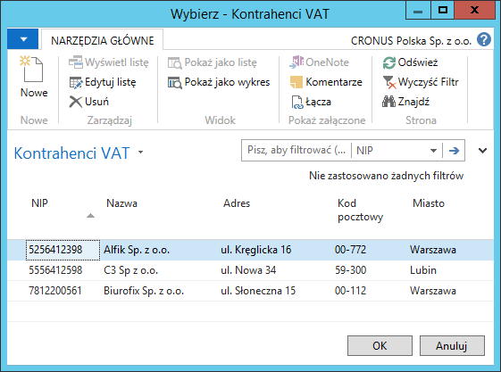{width="4.7362204724409445in" height="3.5196850393700787in"}
Rysunek 2.45: Kontrahenci VAT
Wybranie kontrahenta z listy rozwijanej w polu NIP powoduje automatyczne uzupełnienie pól z nazwą i danymi adresowymi kontrahenta na karcie skróconej Nazwa/Adres w oknie VAT -- dodatkowe informacje.
W oknie VAT -- dodatkowe informacje, na karcie skróconej
Nazwa/Adres należy uzupełnić pole Kod kraju/regionu, zgodnie z miejscem transakcji.
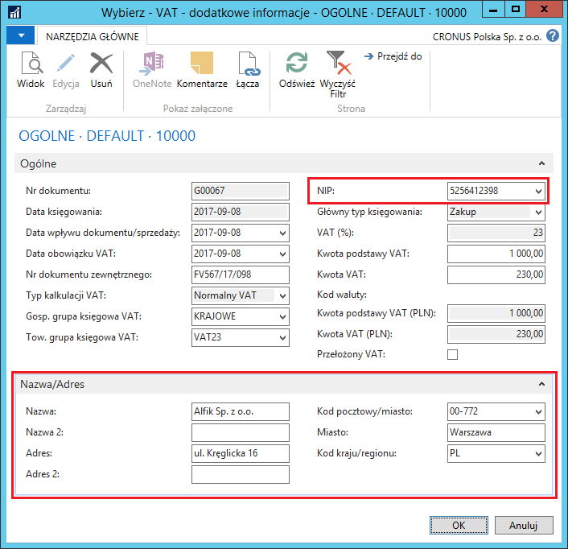{width="6.418048993875765in" height="6.2in"}
Rysunek 2.46: VAT -- dodatkowe informacje
- Zaksięgowanie dokumentu z danymi kontrahenta VAT wprowadzonymi
w oknie VAT -- dodatkowe informacje ma odzwierciedlenie w raporcie Rejestr VAT sprzedaży/zakupu.
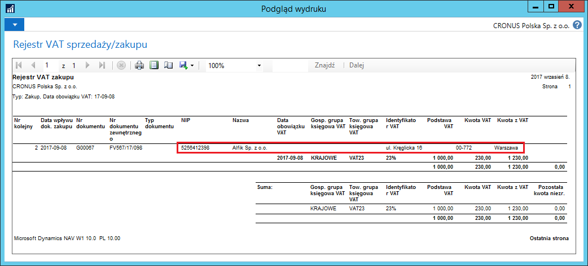{width="6.354166666666667in" height="2.883814523184602in"}
Rysunek 2.47: Dane kontrahenta w rejestrze VAT
Księgowanie pełnego VAT {#księgowanie-pełnego-vat .Poziom-1}
Informacje ogólne
Zgodnie z wymogami polskiego prawa, dla wszystkich transakcji w rejestrze VAT powinna być widoczna kwota netto. Aby spełnić ten wymóg, Polska Lokalizacja umożliwia ręczne wprowadzanie kwoty podstawy VAT dla księgowań obejmujących wyłącznie kwotę podatku VAT.
Ta funkcjonalność ma szczególne znaczenie dla ewidencji zakupów spoza UE. W takich transakcjach muszą być zaksięgowane 2 dokumenty:
Faktura zakupu, aby ująć wartość netto zakupów i zobowiązanie
na podstawie faktury od dostawcy
Dokument PZC (Poświadczone Zgłoszenie Celne), aby ująć podatek VAT
i inne dodatkowe koszty celne obciążające dostawę spoza terytorium UE.
Ponieważ wartość netto stanowiąca podstawę kalkulacji podatku VAT jest zaksięgowana na podstawie faktury zakupu, nie może być zaksięgowana ponownie na podstawie dokumentu PZC przy okazji księgowania podatku VAT. Dlatego podczas księgowania dokumentu PZC, podstawa kalkulacji podatku VAT podawana jest wyłącznie informacyjnie, co zapewnia poprawność wydruku transakcji zakupu w rejestrze VAT.
Ustawienia
Żeby księgowanie wyłącznie podatku VAT na podstawie dokumentu zakupu było możliwe, należy zdefiniować właściwe ustawienia. W tym celu należy postępować według następujących kroków:
Należy wybrać: Działy > Zarządzanie Finansami > Administracja > Ustawienia Księgowe VAT
W oknie Ustawienia Księgowe VAT, które się otworzy, należy zaznaczyć wiersz z właściwą kombinacją Gospodarczej grupy księgowej VAT (właściwej dla Urzędu Celno-Skarbowego lub Agencji Celnej -- dostawcy PZC, wobec którego podmiot jest zobowiązany do uiszczenia zobowiązania z tytułu VAT i innych kosztów związanych z odprawą celną) oraz Towarowej grupy księgowej VAT (właściwej dla stawki podatku VAT w transakcji zakupu, zdefiniowanej specjalnie na potrzeby dokumentów PZC), a następnie wybrać akcję Edycja.
W oknie Kartoteka ustaw. Księg. VAT wybranej kombinacji grup VAT, które się otworzy, należy zwrócić uwagę na 2 pola:
<!-- -->
W polu Typ kalkulacji VAT musi być wybrana opcja Pełny VAT
Konto KG wybrane w polu Konto naliczonego VAT musi mieć domyślnie przypisaną towarową grupę księgową VAT zgodną z tą, która użyta jest w definiowanych właśnie ustawieniach.
 {width="6.3893514873140855in" height="7.617390638670166in"}
{width="6.3893514873140855in" height="7.617390638670166in"}
Rysunek 2.48: Ustawienia księgowe VAT
Obsługa
Dokument PZC wprowadzany jest analogicznie, jak zwykła faktura zakupu. W celu jego zaewidencjonowania należy postępować według następujących kroków:
Należy wybrać Działy > Zarządzanie Finansami > Zobowiązania > Faktury zakupu
Należy wybrać Nowe.
Z listy rozwijanej w polu Nr dostawcy (zakup) należy wybrać kartotekę urzędu celno-skarbowego.
Wiersz należy wypełnić w sposób następujący:
<!-- -->
W polu Typ należy wybrać Konto K/G
W polu Nr należy wybrać konto KG, które zostało wybrane jako konto VAT-u naliczonego w ustawieniach księgowania VAT
W polu Ilość należy wprowadzić cyfrę 1
W polu Bezpośr. koszt jedn. bez VAT należy wprowadzić kwotę podatku VAT wykazaną na dokumencie PZC
W polu Kwota podstawy VAT należy wprowadzić kwotę stanowiąca podstawę do obliczenia podatku VAT, wykazaną na dokumencie PZC
<!-- -->
- Pozostałe wymagane pola należy uzupełnić w sposób standardowy.
 {width="6.4086953193350835in" height="4.705871609798775in"}
{width="6.4086953193350835in" height="4.705871609798775in"}
Rysunek 2.49: Dokument PZC przed zaksięgowaniem
- Dokument należy zaksięgować wybierając Księguj.
Zaksięgowanie dokumentu powoduje zarejestrowanie w księgach firmowych kwoty podatku VAT na wskazanym koncie VAT-u naliczonego oraz zobowiązania wobec urzędu celno-skarbowego w tej samej wysokości, na koncie zobowiązań zgodnym z ustawieniami grupy księgowej dostawcy przypisanej do dokumentu. Ręcznie wprowadzona kwota podstawy VAT kopiowana jest do zapisów VAT powiązanych z zaksięgowaną fakturą zakupu (dokumentem PZC) i drukowana w rejestrze VAT zakupu.
 {width="6.391303587051619in" height="2.3175306211723536in"}
{width="6.391303587051619in" height="2.3175306211723536in"}
Rysunek 2.50: Zapisy K/G zaksięgowanego dokumentu PZC
 {width="6.3909722222222225in" height="2.3228729221347333in"}
{width="6.3909722222222225in" height="2.3228729221347333in"}
Rysunek 2.51: Zapisy vat zaksięgowanego dokumentu PZC
 {width="6.4in" height="2.9948720472440944in"}
{width="6.4in" height="2.9948720472440944in"}
Rysunek 2.52: zaksięgowany dokument PZC w rejestrze vAT
{#section-5 .list-paragraph .Poziom-1}
VAT nie do odliczenia {#vat-nie-do-odliczenia .Poziom-1}
Informacje ogólne
W niektórych przypadkach VAT naliczony nie może być w 100% odliczony, to znaczy, że tylko część kwoty podatku VAT może być wykazana w rejestrze VAT, a pozostała część powinna zostać doliczona do kwoty zakupu i zaksięgowana w koszty. W przypadku zakupu zapasu lub środka trwałego, nieodliczalna część kwoty podatku VAT jest doliczana do wartości zakupu zapasu lub środka trwałego i zaksięgowana jako część kosztu nabycia.
Celem wdrożenia tego elementu Polskiej Lokalizacji systemu Microsoft Dynamics 365 Business Central on‑premises jest umożliwienie:
Ustawienia częściowego odliczania podatku VAT naliczonego.
Księgowania transakcji zakupu z podatkiem naliczonym VAT częściowo
odliczanym.
Zwiększania kosztu nabycia zapasów i środków trwałych
o nieodliczalną część podatku naliczonego VAT.
Ustawienia
Żeby system automatycznie wyliczał kwotę podatku VAT, która nie podlega odliczeniu, muszą by zdefiniowane właściwe ustawienia kalkulacji podatku VAT. W celu zdefiniowania niezbędnych ustawień, należy postępować według następujących kroków:
Należy wybrać **Działy > Zarządzanie Finansami > Administracja >
Ustawienia księgowe VAT.**
W oknie Ustawienia księgowe VAT, które się otworzy, należy
zaznaczyć wiersz z wybraną kombinacją kodów w polach: Gosp. grupa księgowa VAT i Tow. grupa księgowa VAT, a następnie wybrać VAT nie do odliczenia.
W oknie Ustawienia VAT nie do odliczenia, które się otworzy, należy wypełnić pola:
Od dnia -- należy wprowadzić datę początkową okresu, w którym
kwota podatku VAT nie będzie podlegać odliczeniu w części wprowadzonej w polu VAT nie do odliczenia (%).
VAT nie do odliczenia (%) -- należy wprowadzić wartość kwoty
podatku VAT wyrażoną w procentach, jaka nie będzie podlegać odliczeniu w okresie rozpoczynającym się datą wprowadzoną w polu Od dnia.
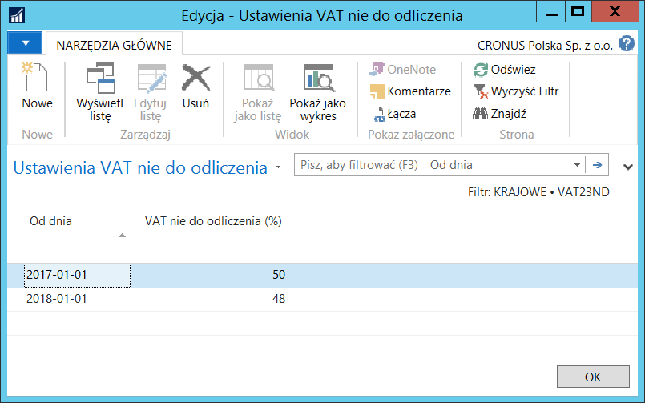{width="5.44488188976378in" height="3.4015748031496065in"}
Rysunek 2.53: Ustawienia VAT nie do odliczenia
Funkcjonalność VAT nie do odliczenia wymaga dodatkowych ustawień w transakcjach zakupu, gdzie Typ kalkulacji VAT jest Odwrotne obciążenie lub Pełny VAT. Aby je zdefiniować, należy postępować według następujących kroków:
Należy zamknąć okno Ustawienia VAT nie do odliczenia wybierając OK.
W oknie Ustawienia księgowe VAT należy zaznaczyć wiersz z kombinacją grup dedykowanych do ewidencji zakupu z odwrotnym obciążeniem, a następnie należy wybrać Edycja.
W oknie Kartoteka ustaw. księg. VAT na karcie skróconej Zakupy należy uzupełnić pole Konto korekty kurs wal. odwrotnego obciążenia. Konto to będzie używane tylko wtedy, gdy w ustawieniach dla wybranej kombinacji grup księgowych VAT wybrany jest Typ kalkulacji VAT = Odwrotne obciążenie.
Na konto wybrane w tym polu system zaksięguje kwotę VAT naliczonego nie do odliczenia, ale tylko w części wynikającej z różnicy pomiędzy kursami waluty zastosowanymi do przeliczenia kwoty netto i kwoty VAT. Część kwoty VAT naliczonego nie do odliczenia wynikająca z przeliczenia kwoty VAT po kursie dla kwoty netto zostanie zaksięgowana standardowo, czyli dodana do wartości netto.
W oknie Ustawienia księgowe VAT należy zaznaczyć wiersz z kombinacją grup dedykowanych do ewidencji zakupu z samym VAT (np. dokumentów SAD), a następnie należy wybrać Edycja.
W oknie Kartoteka ustaw. księg. VAT na karcie skróconej Zakupy należy uzupełnić pole Konto kosztu nie do odliczenia dla Pełny VAT. Konto to będzie używane tylko wtedy, gdy w ustawieniach dla wybranej kombinacji grup księgowych VAT wybrany jest Typ kalkulacji VAT = Pełny VAT.
Na konto wybrane w tym polu system zaksięguje kwotę VAT naliczonego nie do odliczenia. W tego typu transakcji kwota VAT nie do odliczenia nie może być dodana do wartości netto, gdyż w dokumentach z pełnym VAT koszt nie jest w ogóle księgowany (tylko VAT i zobowiązanie).
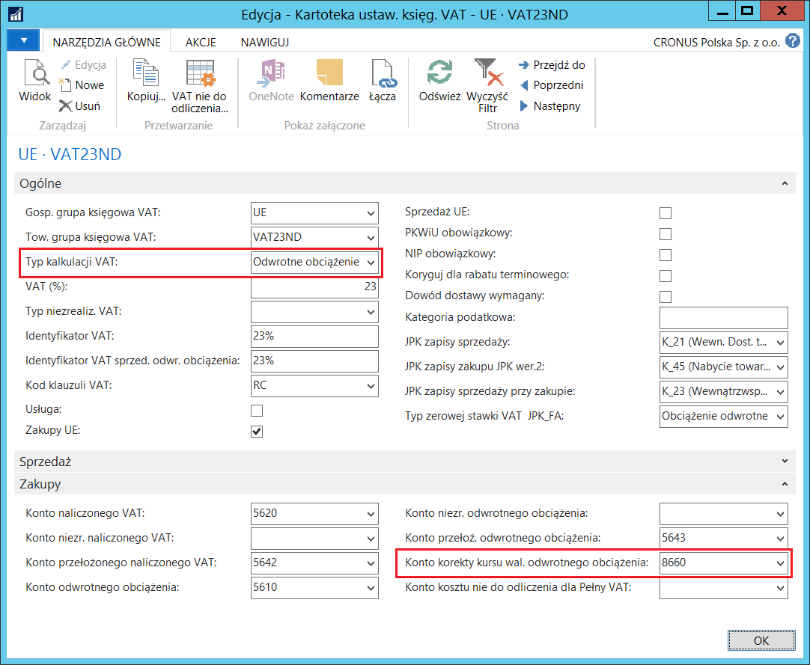{width="6.330949256342957in" height="5.201388888888889in"}
Rysunek 2.54: Ustawienia księgowe VAT -- VAT nie do odliczenia z typem kalkulacji „Odwrotne obciążenie"
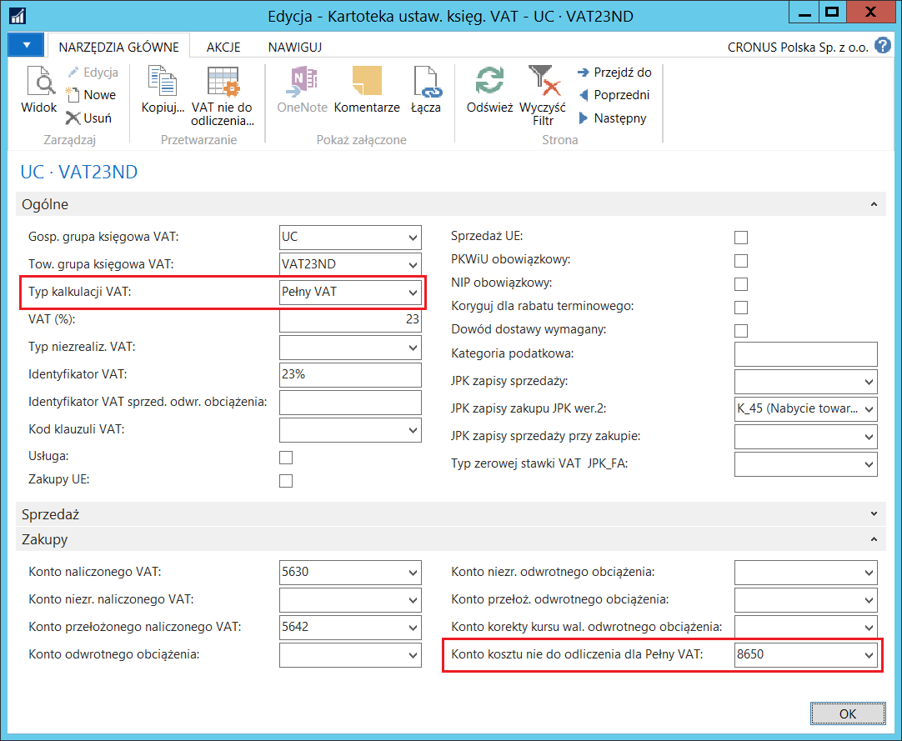{width="6.395833333333333in" height="5.254695975503062in"}
Rysunek 2.55: Ustawienia księgowe VAT -- VAT nie do odliczenia z typem kalkulacji „Pełny VAT"
Obsługa
Żeby zaksięgować dokument zakupu z podatkiem VAT częściowo odliczalnym, należy w sposób standardowy wprowadzić zamówienie lub fakturę zakupu, wykorzystując grupy księgowe VAT, dla kombinacji których zostały zdefiniowane ustawienia VAT nie do odliczenia. System, bazując na zdefiniowanych wcześniej ustawieniach, podzieli odpowiednio obliczoną kwotę podatku VAT i wykaże w oknie Statystyki dokumentu zakupu.
W celu przygotowania i zaksięgowania faktury zakupu z wykorzystaniem tej funkcjonalności, należy postępować według następujących kroków:
Należy standardowo wprowadzić fakturę zakupu zwracając uwagę,
aby użyta w niej była właściwa kombinacja kodów w polach Gosp. grupa księgowa VAT i Tow. grupa księgowa VAT, a data obowiązku VAT przypadała w okresie zaczynającym się od daty wprowadzonej w polu Od dnia w oknie Ustawienia VAT nie do odliczenia dla wybranej kombinacji grup księgowych VAT.
W kartotece wprowadzonej faktury zakupu należy wybrać
Statystyka.
W oknie Statystyka zakupów, które się otworzy, na karcie
skróconej Wiersze system wyświetla szczegóły obliczonych kwot.
W polach: VAT%, Kwota wiersza, Podstawa VAT, Kwota VAT, Kwota z VAT pokazane są kwoty ogólne dla całej faktury zakupu, obejmują zarówno część kwoty podatku VAT podlegającą odliczeniu, jak i nie podlegającą odliczeniu.
W polach: VAT% (nie do odliczenia), Podstawa VAT (nie do odliczenia), Kwota VAT (nie do odliczenia) pokazane są wartości dotyczące kalkulacji podatku VAT w części nie do odliczenia.
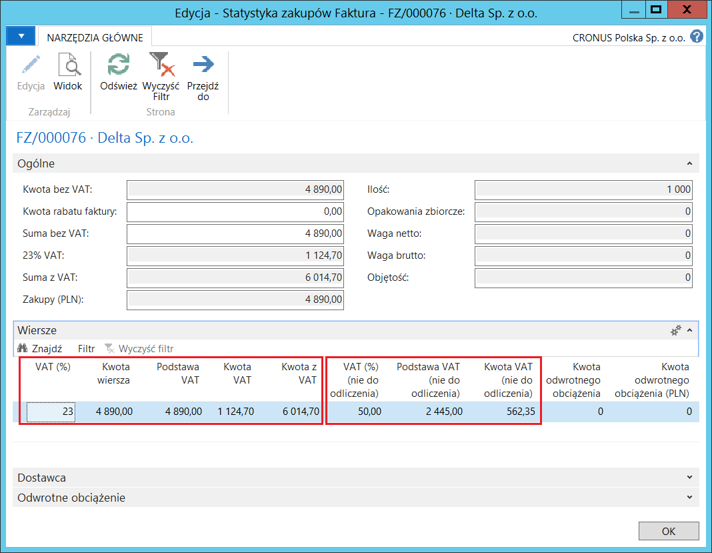{width="6.409722222222222in" height="4.975067804024497in"}
Rysunek 2.56: VAT w Statystyce faktury zakupu
Z kalkulacji wyświetlonej w przykładowym oknie statystyk wynika, że system zaksięguje kwotę zakupu netto w wysokości 5 452,35 zł, kwotę podatku VAT w wysokości 562,35 zł i kwotę brutto w wysokości 6 014,70 zł. Żeby ją sprawdzić, trzeba wykonać kolejne kroki:
Należy w sposób standardowy zaksięgować wprowadzoną fakturę zakupu. W oknie z komunikatem o treści „Fakturę zaksięgowano i przeniesiono do okna Zaksięgowana faktura zakupu. Czy chcesz otworzyć zaksięgowaną fakturę?" należy wybrać Tak.
W oknie Zaksięgowana faktura zakupu, które się otworzy, należy wybrać Nawiguj.
<!-- -->
- W oknie Nawigacja, które się otworzy, należy zaznaczyć wiersz
Zapis K/G i wybrać Pokaż powiązane zapisy.
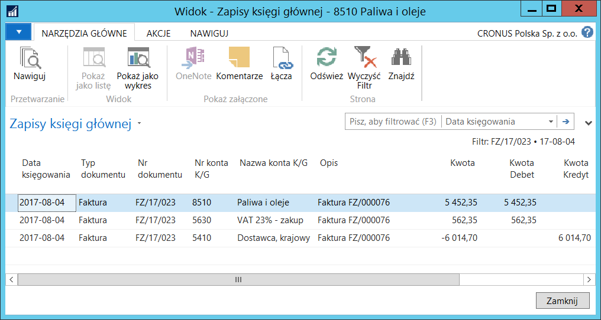{width="6.409722222222222in" height="3.41920384951881in"}
Rysunek 2.57: VAT nie do odliczenia w zapisach K/G
Należy wybrać Zamknij, aby zamknąć okno **Zapisy księgi
głównej**.
W oknie Nawigacja należy zaznaczyć wiersz Zapis VAT i wybrać
Pokaż powiązane zapisy.
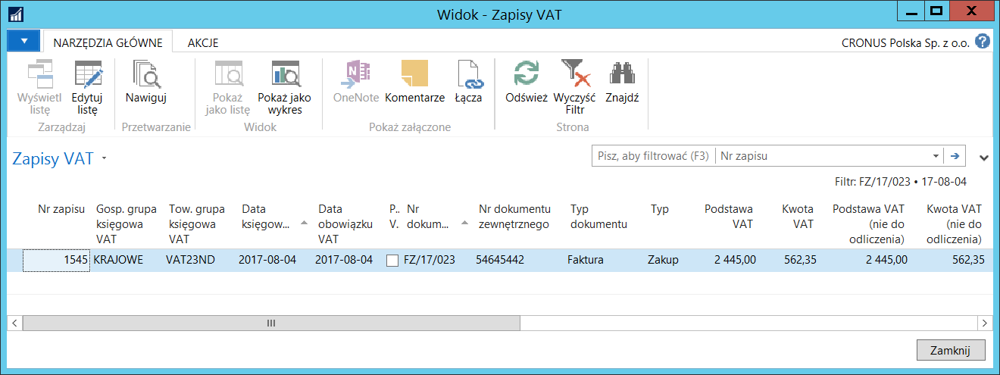{width="6.361111111111111in" height="2.3854166666666665in"}
Rysunek 2.58: VAT nie do odliczenia w zapisach VAT
Kwota VAT nie do odliczenia przy zakupie z odwrotnym obciążeniem księgowana jest zwykle standardowo, a wyjątek stanowi sytuacja, w której kurs wymiany waluty do przeliczenia wartości netto zakupu jest inny niż kurs wymiany waluty do przeliczenia VAT. W tej sytuacji system wykorzystuje konto K/G podane w polu Konto korekty kursu wal. odwrotnego obciążenia w oknie Ustawienia księgowe VAT do zaksięgowania nieodliczalnej kwoty VAT w koszty, ale tylko różnicy wynikającej z zastosowania różnych kursów waluty, o czym mowa powyżej.
[Przykład:]{.underline}
Zakup o wartości 100 EUR.
VAT 23% (odwrotne obciążenie) nieodliczalny w 50%
Wartość netto 100 EUR * kurs wymiany waluty 4,00 = 400 PLN
VAT należny 23% * wartość netto 100 EUR = 23 EUR * kurs wymiany waluty 4,00 = 92 PLN
VAT naliczony 50% * (23% * wartość netto 100 EUR = 23 EUR) * kurs wymiany waluty 4,00 = 46 PLN
Kwota kosztu = wartość netto PLN + nieodliczalna część wartości VAT naliczonego = 446 PLN
[Przeliczenie VAT po innym kursie wymiany waluty (1 EUR = 5 PLN)]{.underline}
Różnica w kwocie VAT należnego = (23 EUR * 5,00) -- (23 EUR * 4,00) = 23 PLN
Różnica w kwocie VAT naliczonego nie do odliczenia = 50% * ((23 EUR * 5,00) -- (23 EUR * 4,00)) = 11,50 PLN
Różnica w kwocie VAT naliczonego do odliczenia = ((23 EUR * 5,00) -- (23 EUR * 4,00)) -- VAT naliczony nie do odliczenia = 11,50 PLN
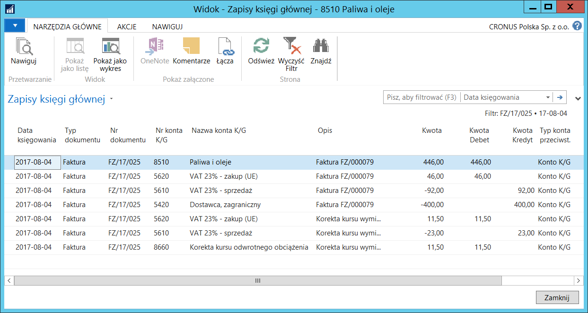{width="6.395833333333333in" height="3.406327646544182in"}
Rysunek 2.59: Zapisy K/G - VAT nie do odliczenia przy odwrotnym obciążeniu
{width="6.388888888888889in" height="2.3958333333333335in"}
Rysunek 2.60: Zapisy VAT - VAT nie do odliczenia przy odwrotnym obciążeniu
Kwota VAT nie do odliczenia przy ewidencji samego podatku VAT (np. z dokumentu PZC) jest księgowana na konto kosztowe wybrane w ustawieniach. W tego typu transakcji kwota VAT nie do odliczenia nie może być dodana do wartości netto, gdyż w dokumentach z pełnym VAT koszt nie jest w ogóle księgowany (tylko VAT i zobowiązanie).
W celu przygotowania i zaksięgowania faktury zakupu tylko z VAT, którego częściowo nie można odliczyć, należy postępować według następujących kroków:
- Fakturę zakupu należy wprowadzić w sposób typowy dla ewidencji dokumentów z pełnym VAT, zwracając uwagę, aby użyta w niej była właściwa kombinacja kodów w polach Gosp. grupa księgowa VAT i Tow. grupa księgowa VAT, a data obowiązku VAT przypadała w okresie zaczynającym się od daty wprowadzonej w polu Od dnia w oknie Ustawienia VAT nie do odliczenia dla wybranej kombinacji grup księgowych VAT.
- W kartotece wprowadzonej faktury zakupu należy wybrać
Statystyka.
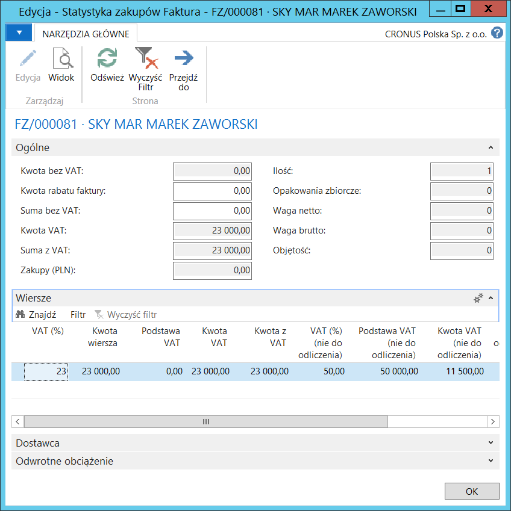{width="5.744094488188976in" height="5.751968503937008in"}
Rysunek 2.61: Statystyka faktury zakupu z pełnym VAT częściowo nieodliczalnym
Należy w sposób standardowy zaksięgować wprowadzoną fakturę zakupu.
W oknie z komunikatem o treści „Fakturę zaksięgowano i przeniesiono do okna Zaksięgowana faktura zakupu. Czy chcesz otworzyć zaksięgowaną fakturę?" należy wybrać Tak.
W oknie Zaksięgowana faktura zakupu, które się otworzy, należy wybrać Nawiguj.
<!-- -->
W oknie Nawigacja, które się otworzy, należy zaznaczyć wiersz Zapis K/G i wybrać Pokaż powiązane zapisy. Można zauważyć, że kwota VAT w części nie do odliczenia została zaksięgowana na konto kosztowe, które zostało wybrane w polu Konto kosztu nie do odliczenia dla Pełny VAT w Ustawieniach księgowych VAT dla kombinacji grup księgowych VAT użytych w tej fakturze zakupu:
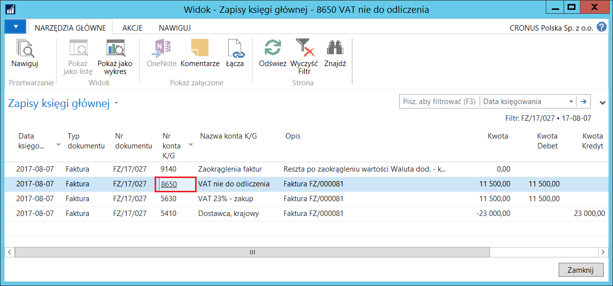{width="6.375in" height="2.979086832895888in"}
Rysunek 2.62: Zapisy K/G - VAT nie do odliczenia przy Pełnym VAT
Należy wybrać Zamknij, aby zamknąć okno Zapisy księgi głównej.
W oknie Nawigacja należy zaznaczyć wiersz Zapis VAT i wybrać Pokaż powiązane zapisy.
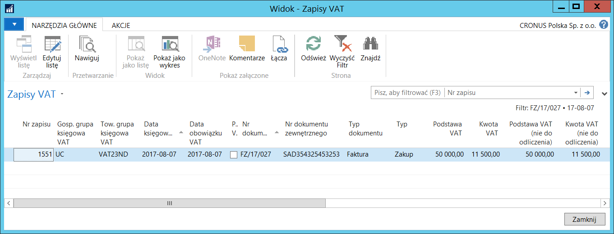{width="6.402777777777778in" height="2.4461898512685916in"}
Rysunek 2.63: Zapisy VAT - VAT nie do odliczenia przy Pełnym VAT
{#section-6 .list-paragraph .Poziom-1}
Pomijanie transakcji w ewidencji VAT {#pomijanie-transakcji-w-ewidencji-vat .Poziom-1}
Informacje ogólne
Księgowanie dokumentów zakupu i dokumentów sprzedaży w Microsoft Dynamics 365 Business Central on‑premises skutkuje powstaniem zapisów VAT, które są bazą do rozliczenia VAT za dany okres. Jednak są takie transakcje, które nie podlegają opodatkowaniu VAT, dlatego w ramach Polskiej Lokalizacji zostało dodane narzędzie, które umożliwia wykluczanie wybranych zapisów VAT z rozliczenia VAT.
Ustawienia
W przypadku, gdy transakcje z wybraną kombinacją grup księgowych VAT nigdy nie podlegają opodatkowaniu VAT, możliwe jest ich domyślne oznaczenie jako pomijane w ewidencji VAT. W tym celu, należy postępować według następujących kroków:
Należy wybrać **Działy > Zarządzanie Finansami > Administracja >
Ustawienia księgowe VAT**.
W oknie Ustawienia księgowe VAT, które się otworzy, należy
ustawić kursor w wierszu z wybraną kombinacją grup księgowych VAT, a następnie wybrać Edycja.
W oknie Kartoteka ustaw. księg. VAT, które się otworzy, należy
zaznaczyć pole Pomiń w ewidencji VAT.
 {width="6.395833333333333in" height="3.2874311023622047in"}
{width="6.395833333333333in" height="3.2874311023622047in"}
Rysunek 2.64: Kartoteka ustawień księgowych VAT
Obsługa
Funkcjonalność Pomiń w ewidencji VAT opisana jest na przykładzie faktur zakupu, ale może być wykorzystana w wierszach następujących dokumentów: Zamówienie zakupu, Faktura zakupu, Zamówienie zwrotu zakupu, Faktura korygująca zakupu, Zamówienie sprzedaży, Faktura sprzedaży, Zamówienie zwrotu sprzedaży, Faktura korygująca sprzedaży. Pole Pomiń w ewidencji VAT można też edytować w wierszach dzienników głównych oraz w oknie VAT‑dodatkowe informacje. Po zaksięgowaniu transakcji z VAT, informacja o pominięciu w ewidencji VAT zapisywana jest w wierszach zaksięgowanych dokumentów: Zaksięgowana faktura zakupu, Zaksięgowana faktura korygująca zakupu, Zaksięgowana faktura sprzedaży, Zaksięgowana faktura korygująca sprzedaży. Pomiń w ewidencji VAT zapamiętane jest również w tabelach: Zapis VAT oraz Szczegółowy zapis VAT.
Aby zaksięgować fakturę zakupu z pominięciem w ewidencji VAT, należy postępować według następujących kroków:
Fakturę zakupu należy wprowadzić w standardowy sposób.
W wybranym wierszu faktury należy zaznaczyć pole Pomiń w ewidencji VAT.
 {width="6.354166666666667in" height="4.652933070866141in"}
{width="6.354166666666667in" height="4.652933070866141in"}
Rysunek 2.65: Wiersz faktury zakupu
Po zaksięgowaniu dokumentu utworzone zostaną m.in. zapisy w tabelach Zapisy VAT i Szczegółowe zapisy VAT, w których pole Pomiń w ewidencji VAT będzie zaznaczone.
Rysunek 2.66: Zapisy VAT i Szczegółowe zapisy VAT
Zamówienia i faktury wewnętrzne sprzedaży {#zamówienia-i-faktury-wewnętrzne-sprzedaży .Poziom-1}
Informacje ogólne
Zgodnie z polskim prawem w przypadku nieodpłatnego przekazania towarów i usług, w pewnych przypadkach, transakcję taką należy potraktować z punktu widzenia podatku VAT jako sprzedaż i naliczyć VAT należny. Tak naliczona kwota podatku VAT jest traktowana jako koszt. Polska Lokalizacja została wyposażona w narzędzie upraszczające proces dodatkowej ewidencji podatku VAT dla tego rodzaju transakcji
Ustawienia
Żeby móc tworzyć i księgować wewnętrzne zamówienia i faktury sprzedaży, konieczne jest zdefiniowanie kartoteki nabywcy wewnętrznego z właściwymi parametrami. W tym celu, należy postępować według następujących kroków:
Należy wybrać Działy > Zarządzanie Finansami > Administracja > Gł. gospodarcze grupy księgowe.
W oknie Gł. gospodarcze grupy księgowe, które się otworzy,
należy zdefiniować kod nowej grupy, która będzie wykorzystana do dokonania technicznych księgowań wewnętrznych faktur sprzedaży.
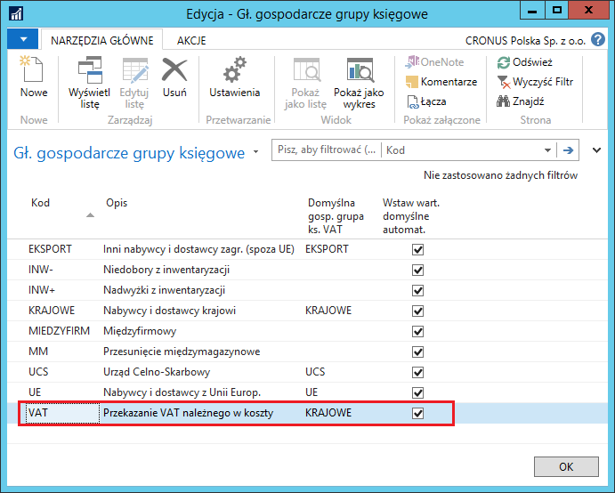{width="5.811023622047244in" height="4.65748031496063in"}
Rysunek 2.67: Główne gospodarcze grupy księgowe
W tym samym oknie należy zaznaczyć wiersz z nową grupą i wybrać
Ustawienia.
W oknie Główne ustawienia księgowania, które się otworzy, należy
wybrać Nowe (czynność z tego i następnego kroku należy powtórzyć dla każdej wybranej kombinacji kodów Głównej gospodarczej grupy księgowej i Głównej towarowej grupy księgowej).
W oknie Kartoteka gł. ustawień księg., które się otworzy, należy
zdefiniować właściwe ustawienia, wprowadzając to samo konto pozabilansowe K/G przeznaczone do technicznych księgowań w polach umieszczonych na karcie skróconej Sprzedaż: Konto sprzedaży, Konto faktury kor. sprzedaży, Konto rabatu wiersza sprzedaży, Konto rabatu faktury sprzedaży. Na karcie skróconej Zapasy należy uzupełnić pole Konto KWS wybierając w nim konto K/G przeznaczone do zaksięgowania w koszty wartości towaru wydanego bezpłatnie.
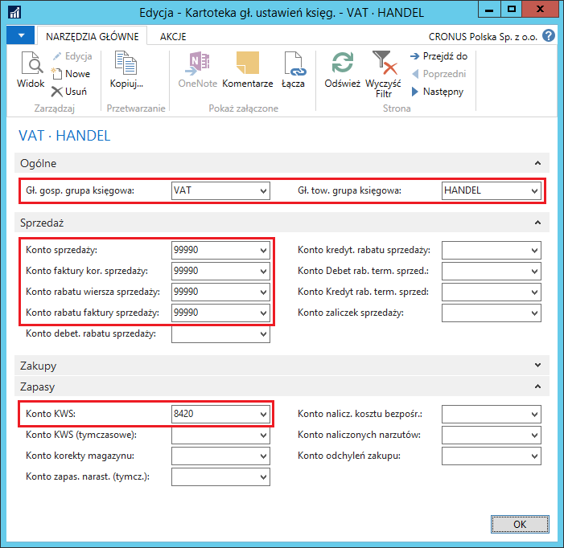{width="5.909448818897638in" height="5.748031496062992in"}
Rysunek 2.68: Kartoteka głównych ustawień księgowania
Należy wybrać **Działy > Zarządzanie Finansami > Administracja >
Grupy księgowe nabywców**.
W oknie Grupy księgowe nabywców, które się otworzy, w pierwszym
wolnym wierszu należy wprowadzić unikalny kod grupy księgowej nabywców przeznaczonej do księgowań technicznych i w polu Konto należności wybrać to samo konto pozabilansowe K/G przeznaczone do technicznych księgowań, które zostało użyte w oknie Główne ustawienia księgowania:
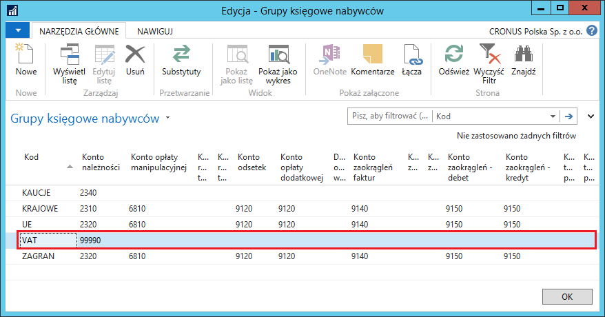{width="6.382608267716535in" height="3.344050743657043in"}
Rysunek 2.69: Grupy księgowe nabywców
Należy wybrać **Działy > Zarządzanie Finansami > Administracja >
Metody płatności**.
W oknie Metody płatności, które się otworzy, w pierwszym wolnym
wierszu należy wprowadzić unikalny kod i opis metody płatności przeznaczonej do rozliczenia księgowań technicznych, w polu Typ konta przeciwst. należy wybrać Konto K/G, a w polu Nr konta przeciwst. wybrać to samo konto pozabilansowe K/G przeznaczone do technicznych księgowań, które zostało użyte we wcześniej zdefiniowanych ustawieniach.
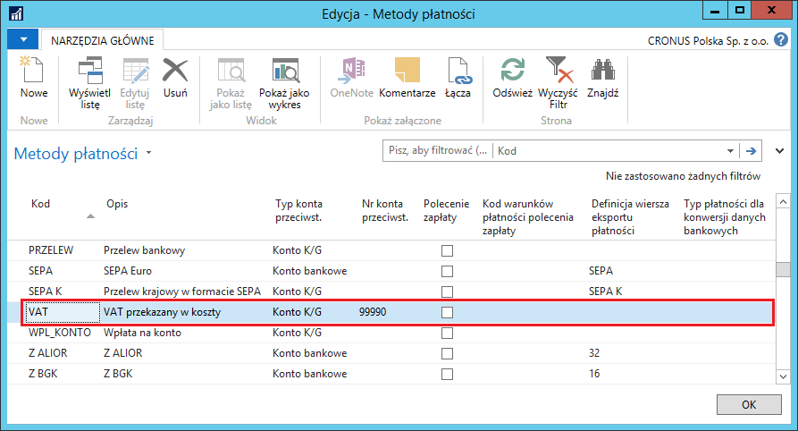{width="6.391303587051619in" height="3.4496653543307088in"}
Rysunek 2.70: Metody płatności
- Należy zdefiniować kartotekę nabywcy technicznego do księgowania
faktur wewnętrznych sprzedaży. W tym celu należy w sposób standardowy założyć nową kartotekę nabywcy, wprowadzając specyficzne parametry: zalecane jest, żeby nazwa, dane adresowe i NIP nabywcy technicznego były identyczne z danymi firmy, lecz nie jest to wymóg obligatoryjny. Niżej wymienione pola należy wypełnić zgodnie z opisem:
- Na karcie skróconej Fakturowanie:
<!-- -->
Gł. gosp. grupa księgowa -- z listy rozwijanej w tym polu należy
wybrać kod wcześniej zdefiniowanej grupy.
Gosp. grupa księgowa VAT -- z listy rozwijanej w tym polu należy
wybrać kod grupy, której ustawienia będą obowiązywały w kalkulacji podatku VAT należnego do przekazania w koszty.
Grupa księgowa nabywcy -- z listy rozwijanej w tym polu należy
wybrać kod wcześniej zdefiniowanej grupy.
<!-- -->
- Na karcie skróconej Płatności:
<!-- -->
- Kod metody płatności -- z listy rozwijanej w tym polu należy
wybrać kod wcześniej zdefiniowanej metody.
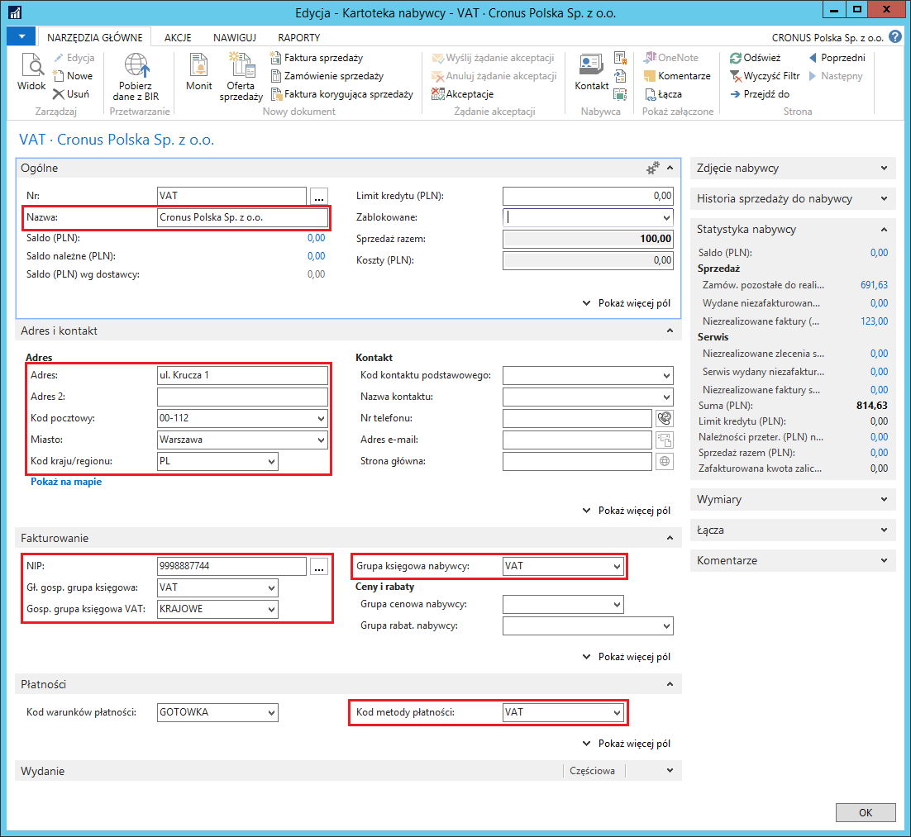{width="6.4086953193350835in" height="5.8910695538057745in"}
Rysunek 2.71: Kartoteka nabywcy technicznego
Należy zdefiniować kody dla podatku VAT przekazywanego w koszty,
wraz z przypisanymi do nich właściwymi kontami K/G. W tym celu należy wybrać Działy > Zarządzanie Finansami > Administracja > Kody VAT'u przekazanego.
W oknie Kody VAT'u przekazanego, które się otworzy, w pierwszym wolnym wierszu należy wprowadzić ustawienia:
Kod -- w tym polu należy wprowadzić unikalny kod dla danego typu
podatku VAT do przekazania w koszty
Opis -- w tym polu należy wprowadzić opis danego typu podatku
VAT do przekazania w koszty
Konto kosztu VAT -- z listy rozwijanej w tym polu należy wybrać
konto K/G kosztowe, na którym ma być zaksięgowana kwota podatku VAT
Konto rozliczenia VAT - z listy rozwijanej w tym polu należy
wybrać to samo konto pozabilansowe K/G przeznaczone do technicznych księgowań, które zostało użyte we wcześniej zdefiniowanych ustawieniach.
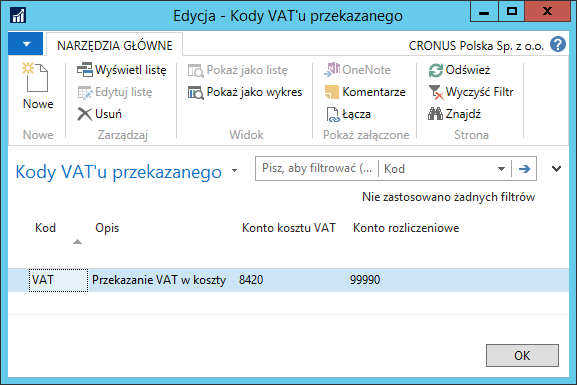{width="4.8700787401574805in" height="3.248031496062992in"}
Rysunek 2.72: Kody VAT'u przekazanego
Obsługa
W celu obliczenia i zaksięgowania podatku VAT należnego od wartości bezpłatnie przekazanych towarów lub produktów, należy postępować według następujących kroków:
- Należy otworzyć nową kartotekę zamówienia sprzedaży i z listy
rozwijanej w polu Nr nabywcy (sprzedaż) należy wybrać wcześniej zdefiniowanego nabywcę technicznego lub nabywcę, któremu przekazywany jest towar -- w tym drugim przypadku konieczne jest wybranie nabywcy technicznego w polu Nr odbiorcy faktury na karcie skróconej Fakturowanie. System automatycznie uzupełnił część pól w nagłówku faktury sprzedaży na podstawie danych przypisanych domyślnie do kartoteki wybranego nabywcy (odbiorcy faktury), m.in. nazwa i adres nabywcy, Gł. gosp. grupa księgowa, Gosp. grupa księgowa VAT, Grupa księgowa nabywcy, Kod metody płatności.
Konieczne jest wybranie właściwego, wcześniej zdefiniowanego typu podatku VAT do przekazania z listy rozwijanej w polu Kod VAT'u przekazanego.
 {width="6.4in" height="5.803760936132983in"}
{width="6.4in" height="5.803760936132983in"}
Rysunek 2.73: Nagłówek zamówienia sprzedaży
- Na karcie skróconej Wiersze, w polu Typ należy wybrać Zapas, a w polu Nr należy wybrać zapas, który zostanie przekazany bezpłatnie. Pola: Ilość i Kod lokalizacji należy wypełnić standardowo. W polu Cena jednostkowa bez VAT należy wprowadzić cenę sprzedaży, na podstawie której zostanie ustalona kwota stanowiąca podstawę do obliczenia podatku VAT należnego do przekazania w koszty.
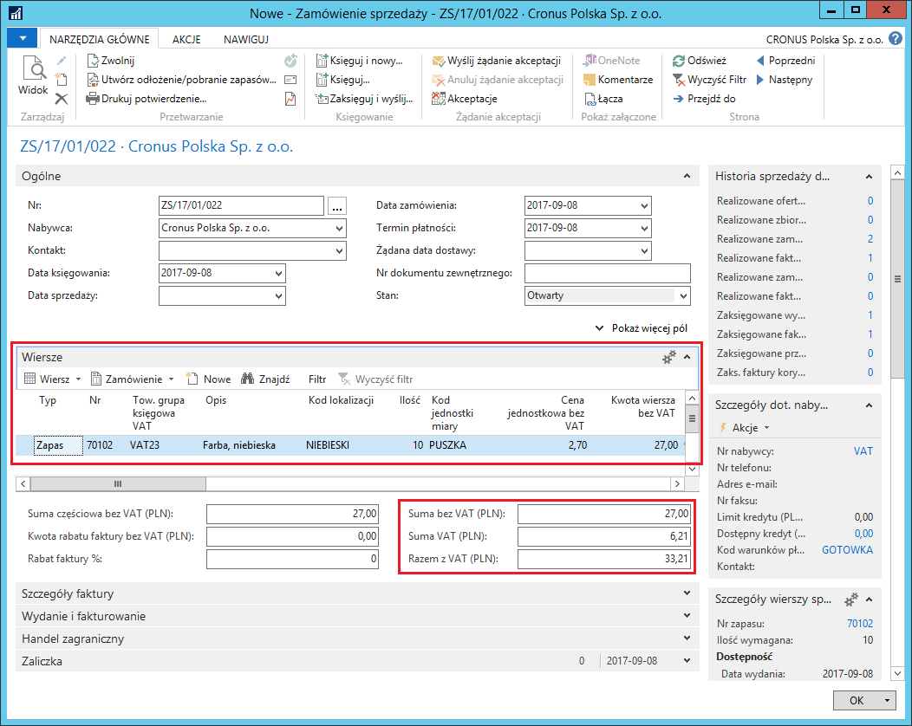{width="6.382608267716535in" height="5.084266185476816in"}
Rysunek 2.74: Wiersze zamówienia sprzedaży i podsumowanie
- Pozostałe dane w zamówieniu sprzedaży należy wprowadzić standardowo i zaksięgować wydanie i fakturę sprzedaży.
W wyniku zaksięgowania faktury sprzedaży z zamówienia wewnętrznego powstaną zapisy księgi głównej, zgodne z ustawieniami. Kwota podatku VAT zostanie zaksięgowana na kontach K/G: podatku VAT należnego i kosztowym, wartość wydanego towaru zostanie zaksięgowana na kontach K/G: magazynowym i kosztowym, a pozostałe kwoty netto i brutto, będące wynikiem technicznych automatycznych księgowań, zostaną zaksięgowane na pozabilansowym koncie technicznym K/G użytym w ustawieniach.
Efekty zaksięgowania wewnętrznej faktury sprzedaży można zobaczyć postępując według kroków:
Należy otworzyć kartotekę zaksięgowanej faktury sprzedaży i wybrać
akcję Nawiguj.
W oknie Nawigacja, które się otworzy, należy zaznaczyć tabelę
**Zapis K/G i **wybrać akcję Pokaż powiązane zapisy.
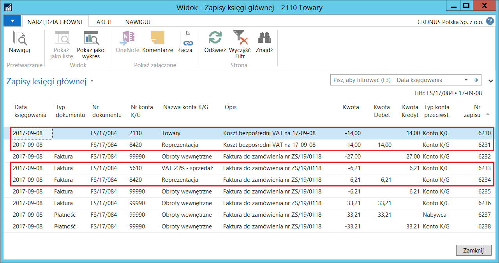{width="6.395833333333333in" height="3.379678477690289in"}
Rysunek 2.75: Zapisy K/G zaksięgowanej wewnętrznej faktury sprzedaży do bezpłatnego wydania
W celu wystawienia wewnętrznej faktury sprzedaży do zakupów kosztowych związanych z reklamą i reprezentacją, należy postępować według następujących kroków:
- Należy otworzyć nową kartotekę faktury sprzedaży i z listy
rozwijanej w polu Nr nabywcy (sprzedaż) należy wybrać wcześniej zdefiniowanego nabywcę technicznego. System automatycznie uzupełnił część pól w nagłówku faktury sprzedaży na podstawie danych przypisanych domyślnie do kartoteki wybranego nabywcy, m.in. nazwa i adres nabywcy, Gł. gosp. grupa księgowa, Gosp. grupa księgowa VAT, Grupa księgowa nabywcy, Kod metody płatności.
Konieczne jest wybranie właściwego, wcześniej zdefiniowanego typu podatku VAT do przekazania z listy rozwijanej w polu Kod VAT'u przekazanego.
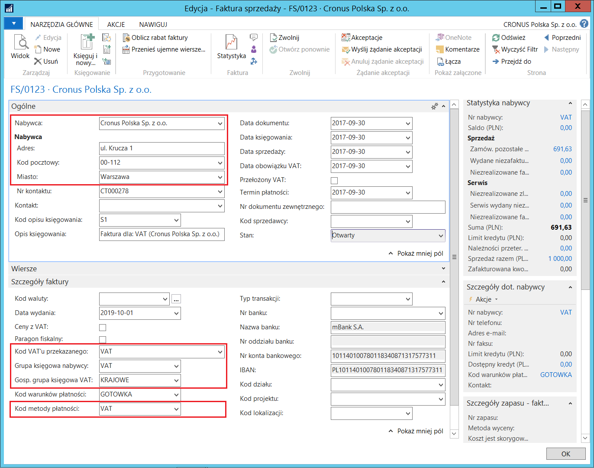{width="6.402777777777778in" height="5.040135608048994in"}
Rysunek 2.76: Nagłówek wewnętrznej faktury sprzedaży
- Na karcie skróconej Wiersze, w polu Typ należy wybrać Konto K/G, a w polu Nr należy wybrać to samo konto pozabilansowe K/G przeznaczone do technicznych księgowań, które zostało użyte we wcześniej zdefiniowanych ustawieniach. W polu Ilość należy wprowadzić cyfrę 1, a w polu Cena jednostkowa bez VAT należy wprowadzić kwotę stanowiąca podstawę do obliczenia podatku VAT należnego do przekazania w koszty.
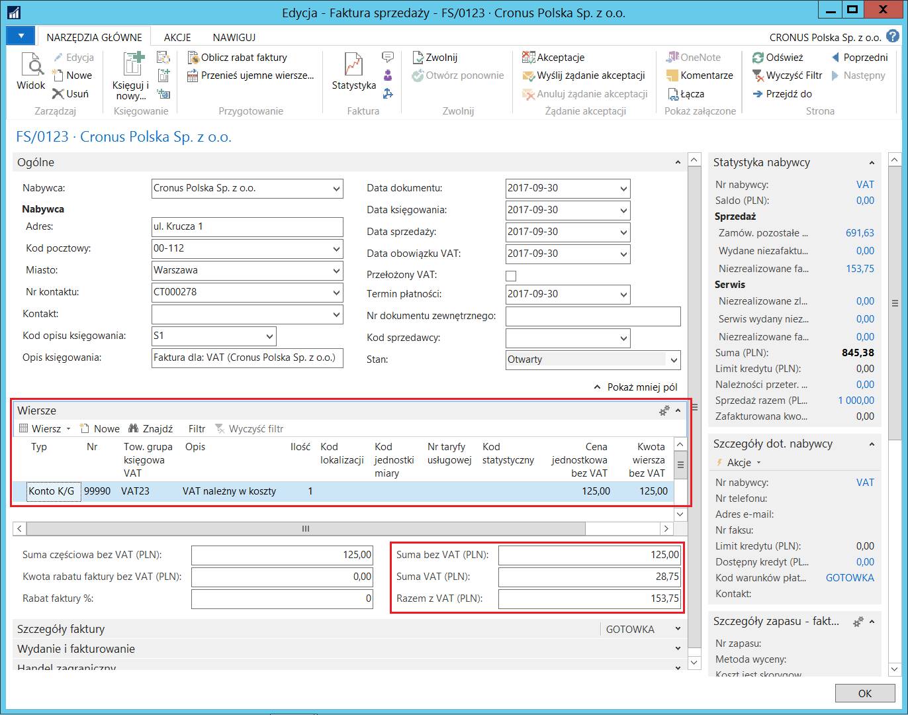{width="6.395833333333333in" height="5.034668635170604in"}
Rysunek 2.77: Wiersze wewnętrznej faktury sprzedaży i podsumowanie
- Pozostałe dane w fakturze sprzedaży należy wprowadzić standardowo i ją zaksięgować.
W wyniku zaksięgowania wewnętrznej faktury sprzedaży powstaną zapisy księgi głównej, zgodne z ustawieniami. Kwota podatku VAT zostanie zaksięgowana na kontach K/G: podatku VAT należnego i konto kosztowe, a pozostałe kwoty netto i brutto, będące wynikiem technicznych automatycznych księgowań, zostaną zaksięgowane na pozabilansowym koncie technicznym K/G użytym w ustawieniach.
Efekty zaksięgowania wewnętrznej faktury sprzedaży można zobaczyć postępując według kroków:
Należy otworzyć kartotekę zaksięgowanej faktury sprzedaży i wybrać
Nawiguj.
W oknie Nawigacja, które się otworzy, należy zaznaczyć tabelę
Zapis K/G i wybrać Pokaż.
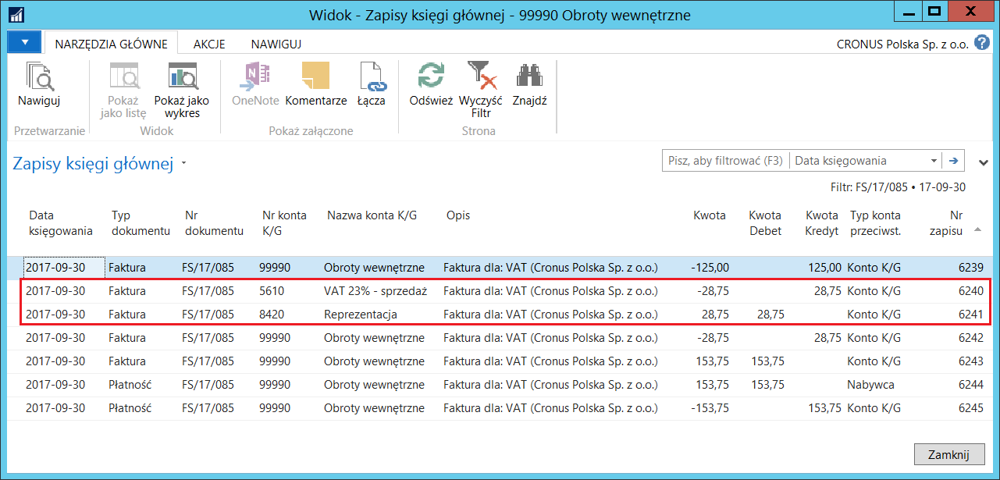{width="6.395833333333333in" height="3.070136701662292in"}
Rysunek 2.78: Zapisy K/G zaksięgowanej wewnętrznej faktury sprzedaży
Obsługa odwrotnego obciążenia {#obsługa-odwrotnego-obciążenia .Poziom-1}
Odwrotne obciążenie w transakcjach zakupu {#odwrotne-obciążenie-w-transakcjach-zakupu .Poziom-2}
Informacje ogólne
Zgodnie z wymaganiami przepisów polskiego prawa, wewnątrzwspólnotowe nabycie towarów (WNT) i usług oraz import usług podlegają opodatkowaniu VAT, co jest jednoznaczne z koniecznością wykazania transakcji z obliczonym podatkiem VAT w rejestrze VAT. Do obliczania naliczonego i należnego podatku VAT z tytułu tego typu transakcji wykorzystywana jest standardowa funkcjonalność Odwrotne obciążenie. Aby przystosować tą funkcjonalność do wymagań polskiego prawa, zostały do niej dodane następujące elementy:
Funkcjonalność Odwrotne obciążenie została rozszerzona
o tworzenie zapisu VAT dla sprzedaży. Dzięki temu transakcja WNT i zakupu usług z kwotą podatku VAT należnego wykazywane są zarówno w rejestrze VAT sprzedaży, jak i zakupu.
Polska Lokalizacja dla Microsoft Dynamics 365 Business Central
on‑premises umożliwia również kalkulację podatku VAT w walucie lokalnej według kursu wymiany z innego dnia niż data przeliczenia wartości zakupu i zobowiązań na potrzeby ksiąg rachunkowych.
Ustawienia
Do kalkulacji i księgowania podatku VAT w ramach odwrotnego obciążenia konieczne jest zdefiniowanie właściwych ustawień. W tym celu, należy postępować według następujących kroków:
Należy wybrać Działy > Zarządzanie Finansami > Administracja > Ustawienia Księgowe VAT.
W oknie Ustawienia księgowe VAT, które się otworzy, należy zaznaczyć wiersz z kombinacją kodów w polach Gosp. grupa księgowa VAT i Tow. grupa księgowa VAT, która odnosi się do transakcji wewnątrzwspólnotowego nabycia towarów i usług oraz importu usług, a następnie należy wybrać Edycja.
W oknie Kartoteka ustaw. księg. VAT należy zwrócić uwagę na kilka pól:
**Typ kalkulacji VAT na **karcie skróconej Ogólne -- w tym polu
musi być wybrana opcja Odwrotne obciążenie.
**Konto odwrotnego obciążenia na **karcie skróconej Zakupy --
z listy rozwijanej w tym polu należy wybrać konto K/G, na które zostanie zaksięgowana kwota podatku VAT należnego obliczona dla transakcji wewnątrzwspólnotowego nabycia towarów i usług oraz importu usług.
Konto niezr. odwrotnego obciążenia na karcie skróconej
Zakupy -- z listy rozwijanej w tym polu należy wybrać konto K/G, na które zostanie zaksięgowana niezrealizowana kwota podatku VAT należnego obliczona dla transakcji wewnątrzwspólnotowego nabycia towarów i usług oraz importu usług.
Konto przełoż. odwrotnego obciążenia na karcie skróconej
Zakupy -- z listy rozwijanej w tym polu należy wybrać konto K/G, na które zostanie zaksięgowana przełożona kwota podatku VAT należnego obliczona dla transakcji wewnątrzwspólnotowego nabycia towarów i usług oraz importu usług.
Konto korekty kursu wal. odwrotnego obciążenia na karcie
skróconej Zakupy -- z listy rozwijanej w tym polu należy wybrać konto K/G, na które zostanie zaksięgowana różnica wynikająca z przeliczenia VAT według innego kursu niż zobowiązanie, ale dotyczy to tylko kwoty VAT nie podlegającej odliczeniu.
 {width="6.417390638670166in" height="5.229899387576553in"}
{width="6.417390638670166in" height="5.229899387576553in"}
Rysunek 2.79: Kartoteka Ustawień księgowych VAT
W sytuacji, gdy kurs wymiany waluty do obliczenia podatku VAT jest inny niż kurs wymiany waluty zastosowany do całości zaksięgowanej faktury zakupu, musi zostać doksięgowana kwota różnicy w podatku VAT. Księgowanie tej różnicy może być dokonywane ręcznie, po zaksięgowaniu faktury zakupu (opcja zalecana) lub automatycznie (opcja niezalecana z powodu wpływu na obniżenie wydajności systemu). W celu zdefiniowania tego ustawienia, należy postępować według następujących kroków:
Należy wybrać **Działy > Zakup > Administracja > Ustawienia
zakupów i zobowiązań.**
W oknie Ustawienia zakupów i zobowiązań, które się otworzy,
na karcie skróconej Ogólne, należy zaznaczyć pole Automatyczne księgow. różnicy kurs. odwrotnego obciążenia, jeśli kwota różnicy w kalkulacji podatku VAT wynikająca z zastosowania różnych kursów wymiany ma być księgowana automatycznie. Pozostawienie pola pustego oznacza, że różnica ta musi być zaksięgowana ręcznie po zaksięgowania faktury zakupu (sposób ręcznego księgowania opisany jest w dalszej części tego rozdziału).
 {width="6.382608267716535in" height="5.138817804024497in"}
{width="6.382608267716535in" height="5.138817804024497in"}
Rysunek 2.80: Ustawienia zakupów i zobowiązań
Obsługa
Zaksięgowanie faktury zakupu za towary i usługi nabyte na terenie Unii Europejskiej lub za usługi nabyte poza Unią Europejską spowoduje obliczenie i zaksięgowanie podatku VAT, bez wpływu na wartość zakupów oraz wysokość zobowiązań wobec dostawcy. W tym celu, należy postępować według następujących kroków:
- Należy w standardowy sposób utworzyć nową fakturę zakupu, w której należy zwrócić uwagę na to, żeby wybrane były: Gosp. grupa księgowa VAT i Tow. grupa księgowa VAT, dla kombinacji których są zdefiniowane właściwe ustawienia (opisane powyżej).
 {width="6.373912948381452in" height="5.122964785651794in"}
{width="6.373912948381452in" height="5.122964785651794in"}
Rysunek 2.81: Faktura zakupu
Należy sprawdzić podsumowanie wartości w fakturze zakupu, w tym celu, należy w oknie kartoteki faktury zakupu wybrać Statystyka.
W oknie Statystyka zakupów Faktura, które się otworzy, należy zwrócić uwagę na pola na karcie skróconej Odwrotne obciążenie:
Kod waluty odwrotnego obciążenia -- kod waluty pobrany
z parametrów faktury zakupu.
Data obowiązku VAT -- data obowiązku VAT pobrana z parametrów
faktury zakupu; jednocześnie jest to data, według której ustalany jest kurs wymiany waluty dla kwoty podatku VAT.
Kwota odwrotnego obciążenia -- kwota obliczonego podatku VAT
naliczonego i należnego wyrażona w walucie faktury.
Kwota odwrotnego obciążenia (PLN) -- równowartość w walucie
lokalnej kwoty obliczonego podatku VAT naliczonego i należnego.
 {width="6.373912948381452in" height="3.8270713035870516in"}
{width="6.373912948381452in" height="3.8270713035870516in"}
Rysunek 2.82: Statystyka Faktury zakupu
- W przypadku wystąpienia na jednej fakturze zakupu wierszy z kilkoma
różnymi stawkami VAT, podsumowanie kalkulacji kwoty odwrotnego obciążenia dla każdej stawki oddzielnie można zobaczyć na karcie skróconej Wiersze w oknie Statystyka faktury zakupu, gdzie zostały dodane 2 nowe pola:
Kwota odwrotnego obciążenia -- kwota obliczonego podatku VAT
naliczonego i należnego wyrażona w walucie faktury.
Kwota odwrotnego obciążenia (PLN) -- równowartość w walucie
lokalnej kwoty obliczonego podatku VAT naliczonego i należnego.
 {width="6.365217629046369in" height="4.642665135608049in"}
{width="6.365217629046369in" height="4.642665135608049in"}
Rysunek 2.83: Statystyka Faktury zakupu -- wiersze
- W przypadku, gdy kurs wymiany waluty do kalkulacji kwoty odwrotnego obciążenia pobrany z tabeli kursów wymiany według Daty obowiązku VAT z jakiegoś powodu jest niewłaściwy, należy go zmienić. W tym celu, w oknie Statystyka zakupów Faktura, na karcie skróconej Odwrotne obciążenie, w polu Kod waluty odwrotnego obciążenia należy kliknąć przycisk asysty. Otworzy się okno Zmiana kursu wymiany, w którym, w polu Relacyjny kurs wymiany należy zmienić ręcznie wartość wstawioną domyślnie na właściwą.
 {width="4.547244094488189in" height="3.059055118110236in"}
{width="4.547244094488189in" height="3.059055118110236in"}
Rysunek 2.84: Zmienianie kursu wymiany dla kwoty odwrotnego obciążenia
- Należy w standardowy sposób zaksięgować fakturę zakupu.
Efekty księgowania w postaci Zapisów K/G i Zapisów VAT można zobaczyć nawigując zaksięgowaną fakturę zakupu:
 {width="6.391303587051619in" height="2.6159273840769903in"}
{width="6.391303587051619in" height="2.6159273840769903in"}
Rysunek 2.85: Odwrotne obciążenie w zapisach K/G
 {width="6.4in" height="2.58051290463692in"}
{width="6.4in" height="2.58051290463692in"}
Rysunek 2.86: Odwrotne obciążenie w zapisach VAT
W sytuacji, gdy w zaksięgowanej fakturze zakupu zostały użyte różne kursy wymiany: inny dla wartości zakupu i zobowiązań, a inny dla kwoty odwrotnego obciążenia (niezależnie od tego, czy zostały one pobrane z tabeli na podstawie Daty księgowania i Daty obowiązku VAT, czy zostały ręcznie zmienione przed zaksięgowaniem), po zaksięgowaniu faktury zakupu, jeżeli pole Automatyczne księgow. różnicy kurs. odwrotnego obciążenia w Ustawieniach zakupów i zobowiązań nie jest zaznaczone, konieczne jest dokonanie dodatkowego księgowania korekty kwoty VAT. W tym celu, należy postępować według następujących kroków:
Należy wybrać **Działy > Zarządzanie Finansami > Działania
okresowe > VAT > Arkusz rozliczania VAT**.
W oknie Arkusz rozliczania VAT, które się otworzy, należy
ustawić odpowiednie filtry, aby na ekranie wyświetlić wybrane zapisy VAT. W wierszach Arkusza rozliczenia VAT, w których występuje różnica kwoty VAT, zaznaczone jest pole Inny kurs dla odwrotnego obciążenia:
 {width="6.391303587051619in" height="2.9614402887139106in"}
{width="6.391303587051619in" height="2.9614402887139106in"}
Rysunek 2.87: Arkusz rozliczania VAT
Należy zaznaczyć wiersz typu Zakup z kwotą odwrotnego obciążenia
do skorygowania.
Należy wybrać Koryguj kurs wymiany odwrotnego obciążenia.
Otworzy się okno z podsumowaniem informacji o odwrotnym obciążeniu
obliczonym w danym wierszu. Jeśli kursy wymiany waluty są różne (inny dla wartości zakupu i zobowiązań, a inny dla kwoty odwrotnego obciążenia), wartość w polu Różnica kwot jest różna od 0:
 {width="6.375913167104112in" height="4.22608595800525in"}
{width="6.375913167104112in" height="4.22608595800525in"}
Rysunek 2.88: Księgowanie korekty kursu wymiany ODWROTNEGO OBCIĄŻENIA
- W tym samym oknie należy zwrócić uwagę na pola dat:
Data księgowania -- data, z jaką zostanie zaksięgowana korekta
kursu wymiany. Domyślnie wstawiana jest data robocza, w razie potrzeby można ją zmienić ręcznie.
Data obowiązku VAT -- data, z jaką zostanie zakwalifikowana
korekta kwoty VAT do okresu rozliczenia podatku VAT. Domyślnie wstawiana jest data z korygowanego zapisu VAT, w razie potrzeby można ją zmienić ręcznie.
Należy wybrać Księguj.
Efektem zaksięgowania korekty kursu wymiany będą Zapisy K/G
i Szczegółowe zapisy VAT.
 {width="6.4086953193350835in" height="2.6764523184601923in"}
{width="6.4086953193350835in" height="2.6764523184601923in"}
Rysunek 2.89: korekta kursu wymiany odwrotnego obciążenia w zapisach k/G
 {width="6.373912948381452in" height="1.8760826771653543in"}
{width="6.373912948381452in" height="1.8760826771653543in"}
Rysunek 2.90: korekta kursu wymiany odwrotnego obciążenia w szczegółowych zapisach VAT
W sytuacji, gdy w zaksięgowanej fakturze zakupu kursy wymiany waluty są identyczne dla wartości zakupu i zobowiązań oraz kwoty odwrotnego obciążenia, może okazać się, że powinny być one różne. W celu zmiany kursu wymiany waluty dla zaksięgowanej kwoty odwrotnego obciążenia, należy postępować według następujących kroków:
Należy wybrać **Działy > Zarządzanie Finansami > Działania
okresowe > VAT > Arkusz rozliczania VAT**.
W oknie Arkusz rozliczania VAT, które się otworzy, należy
ustawić odpowiednie filtry, aby na ekranie wyświetlić wybrane zapisy VAT, a następnie zaznaczyć wiersz z odwrotnym obciążeniem do skorygowania.
Należy wybrać Koryguj kurs wymiany odwrotnego obciążenia.
Otworzy się okno z podsumowaniem informacji o odwrotnym obciążeniu
obliczonym w danym wierszu. W polu Kod waluty odwrotnego obciążenia należy kliknąć przycisk asysty. Otworzy się okno Zmiana kursu wymiany, w którym, w polu Relacyjny kurs wymiany należy ręcznie wprowadzić nowy kurs wymiany:
 {width="4.570866141732283in" height="3.074803149606299in"}
{width="4.570866141732283in" height="3.074803149606299in"}
Rysunek 2.91: Zmiana kursu wymiany
Zmieniony kurs wymiany należy zatwierdzić wybierając OK.
W oknie Koryguj kurs wym. Odwrotnego obciążenia można zauważyć,
że w polu Różnica kwot jest kwota różna od zera. Skorygowaną kwotę odwrotnego obciążenia należy zaksięgować wybierając Księguj.
Zaksięgowana kwota odwrotnego obciążenia jest wykazywana, w wybranym okresie VAT, w rejestrze VAT zakupu i w rejestrze VAT sprzedaży:
 {width="6.402777777777778in" height="2.93871062992126in"}
{width="6.402777777777778in" height="2.93871062992126in"}
Rysunek 2.92: Rejestr VAT zakupu
 {width="6.402777777777778in" height="2.93871062992126in"}
{width="6.402777777777778in" height="2.93871062992126in"}
Rysunek 2.93: Rejestr VAT sprzedaży
Odwrotne obciążenie w transakcjach sprzedaży {#odwrotne-obciążenie-w-transakcjach-sprzedaży .Poziom-2}
Informacje ogólne
W transakcjach sprzedaży z odwrotnym obciążeniem mają zastosowanie inne stawki VAT niż w transakcjach zakupu. W Rejestrze VAT sprzedaży wykazywane są pozycje związane z VAT należnym dotyczącym zakupu z odwrotnym obciążeniem, jak i VAT należnym od sprzedaży z odwrotnym obciążeniem, dlatego Polska Lokalizacja zawiera rozwiązanie umożliwiające odróżnienie tych transakcji.
Ustawienia
Aby zdefiniować identyfikator rozróżniający pochodzenie VAT należnego, należy postępować według następujących kroków:
Należy wybrać Działy > Zarządzanie Finansami > Administracja > Ustawienia Księgowe VAT.
W oknie Ustawienia księgowe VAT, które się otworzy, należy zaznaczyć wiersz z kombinacją kodów w polach Gosp. grupa księgowa VAT i Tow. grupa księgowa VAT, która odnosi się do transakcji wewnątrzwspólnotowych, a następnie należy wybrać Edycja.
W oknie Kartoteka ustaw. księg. VAT należy zwrócić uwagę na 3 pola:
**Typ kalkulacji VAT na **karcie skróconej Ogólne -- w tym polu
musi być wybrana opcja Odwrotne obciążenie.
Identyfikator VAT -- w tym polu należy wprowadzić identyfikator,
który będzie wyświetlany w Rejestrze VAT sprzedaży i w Rejestrze VAT zakupu w pozycjach związanych z transakcją zakupu z odwrotnym obciążeniem.
**Identyfikator VAT sprzed. odwr. obciążenia -- w **tym polu należy
wprowadzić identyfikator, który będzie wyświetlany w Rejestrze VAT sprzedaży w pozycjach związanych z transakcją sprzedaży z odwrotnym obciążeniem. Identyfikator ten może być też prezentowany na wydrukach dokumentów sprzedaży w pozycji Stawka VAT.
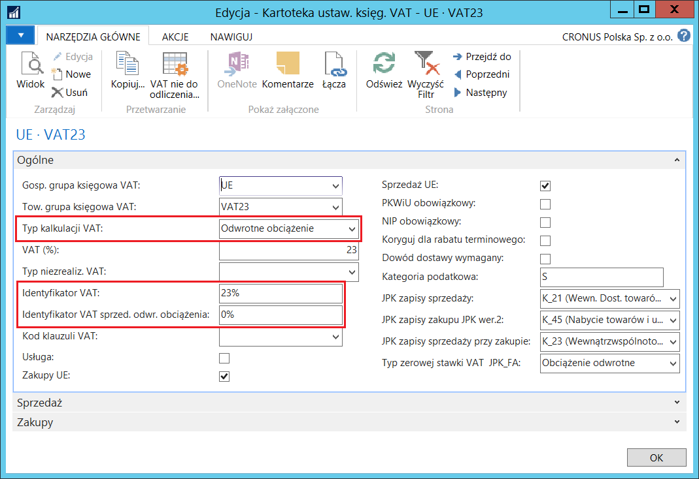{width="6.375in" height="4.376683070866142in"}
Rysunek 2.94: Kartoteka ustawień księgowych VAT
Obsługa
Aby sprawdzić zastosowanie identyfikatora VAT sprzedaży odwrotnego obciążenia, należy postępować według następujących kroków:
Należy wybrać Działy > Zarządzanie Finansami > Należności > Faktury sprzedaży.
Należy wprowadzić nową fakturę sprzedaży dla nabywcy Gospodarczą grupą księgową VAT oraz w wierszu faktury wybrać Towarową grupę księgową VAT, dla których zdefiniowane zostały ustawienia księgowe VAT sprzedaży z odwrotnym obciążeniem. Pozostałe dane należy wprowadzić standardowo.
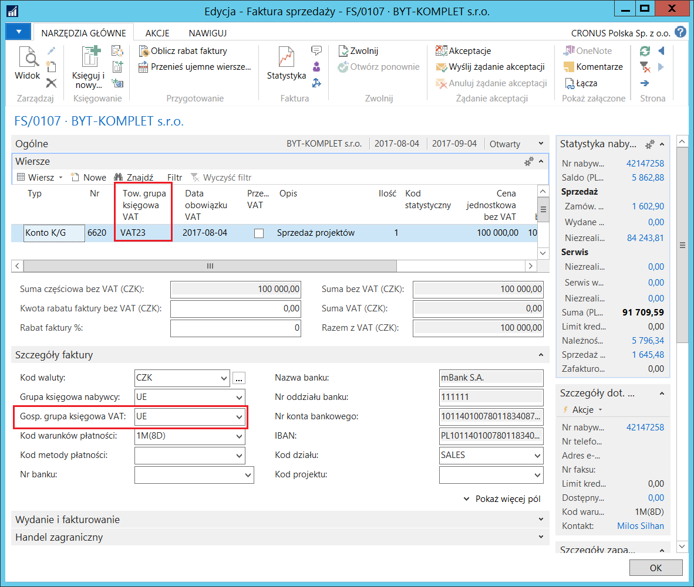{width="6.37126312335958in" height="5.395833333333333in"}
Rysunek 2.95: Faktura sprzedaży z odwrotnym obciążeniem
- Należy wybrać Statystyka.
W oknie Statystyka sprzedaży można zauważyć, że w tej fakturze VAT nie został policzony. Stało się tak dlatego, że w Ustawieniach księgowych VAT dla kombinacji Gospodarczej grupy księgowej VAT i Towarowej grupy księgowej VAT użytych w fakturze sprzedaży, Typ kalkulacji = Odwrotne obciążenie.
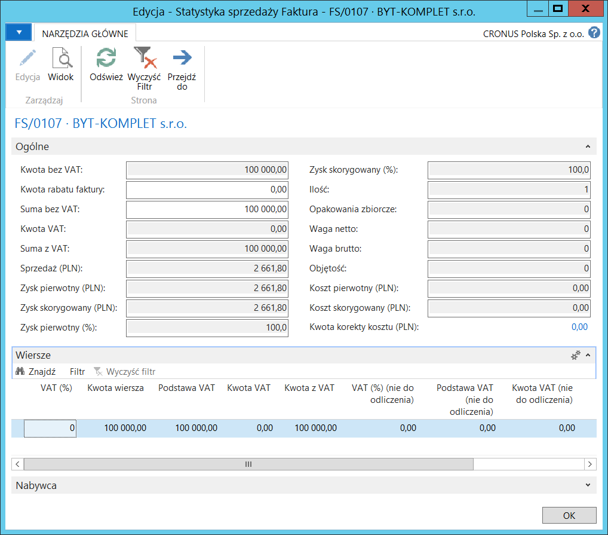{width="6.351482939632546in" height="5.583333333333333in"}
Rysunek 2.96: Statystyki sprzedaży Faktury z odwrotnym obciążeniem
Należy wybrać Księguj, aby zaksięgować fakturę.
W oknie z komunikatem o treści „Fakturę zaksięgowano i przeniesiono do okna Zaksięgowana faktura sprzedaży. Czy chcesz otworzyć zaksięgowaną fakturę?" należy wybrać Tak.
W oknie Zaksięgowana faktura sprzedaży, które się otworzy, należy wybrać Nawiguj.
W oknie Nawigacja, które się otworzy, należy zaznaczyć wiersz Zapis VAT i wybrać Pokaż powiązane zapisy.
W oknie Zapisy VAT, które się otworzy można zauważyć, że w polu Kwota VAT jest 0.
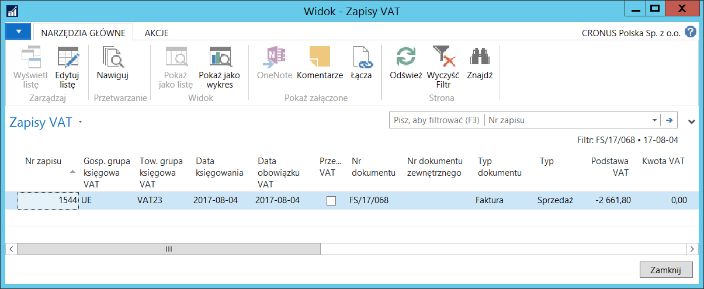{width="6.409722222222222in" height="2.6330533683289588in"}
Rysunek 2.97: Zapisy VAT Faktury sprzedaży z odwrotnym obciążeniem
Należy wybrać Zamknij, aby zamknąć okno Zapisy VAT.
Należy wybrać OK, aby zamknąć okno Nawigacja.
Należy wybrać Zamknij, aby zamknąć okno Zaksięgowana faktura sprzedaży.
Należy wybrać Działy > Zarządzanie Finansami > Działania okresowe > VAT > Rejestr VAT sprzedaży/zakupu.
W oknie z parametrami wstępnymi raportu należy wypełnić pola:
Typ rejestru VAT -- w tym polu należy wybrać opcję Sprzedaż.
Data obowiązku VAT -- w tym polu należy wprowadzić okres,
w którym do rozliczenia została zakwalifikowana zaksięgowana wcześniej faktura sprzedaży.
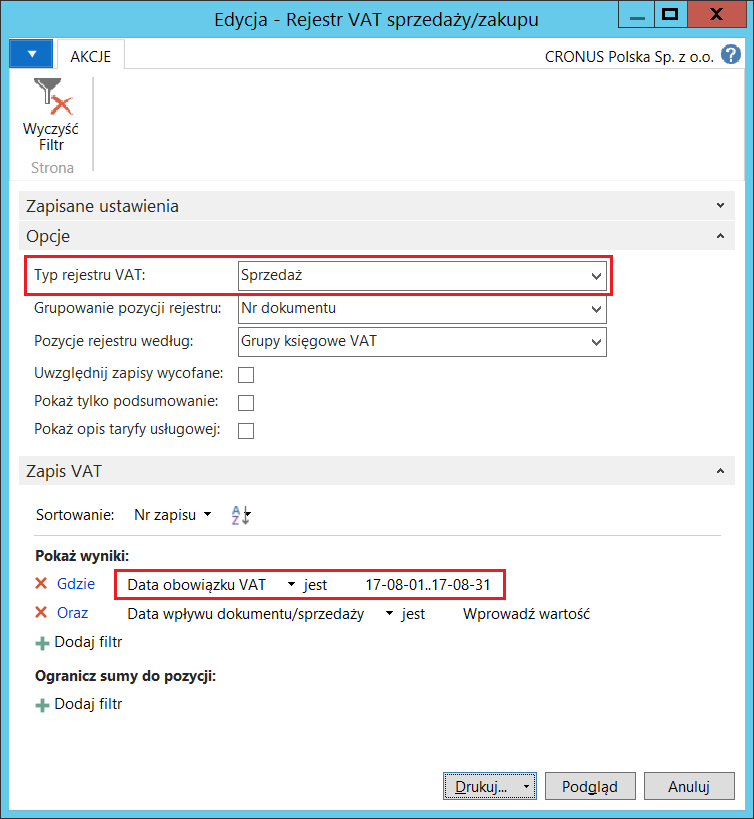{width="5.102362204724409in" height="5.543307086614173in"}
Rysunek 2.98: Opcje wstępne raportu Rejestr VAT sprzedaży/zakupu
- Należy wybrać Podgląd, aby wyświetlić raport na ekranie.
W jednej z pozycji oraz w podsumowaniu raportu można zauważyć, że dla zaksięgowanej wcześniej faktury sprzedaży został zastosowany Identyfikator VAT sprz. odwr. obciążenia z Ustawień księgowych VAT dla grup księgowych VAT użytych w fakturze.
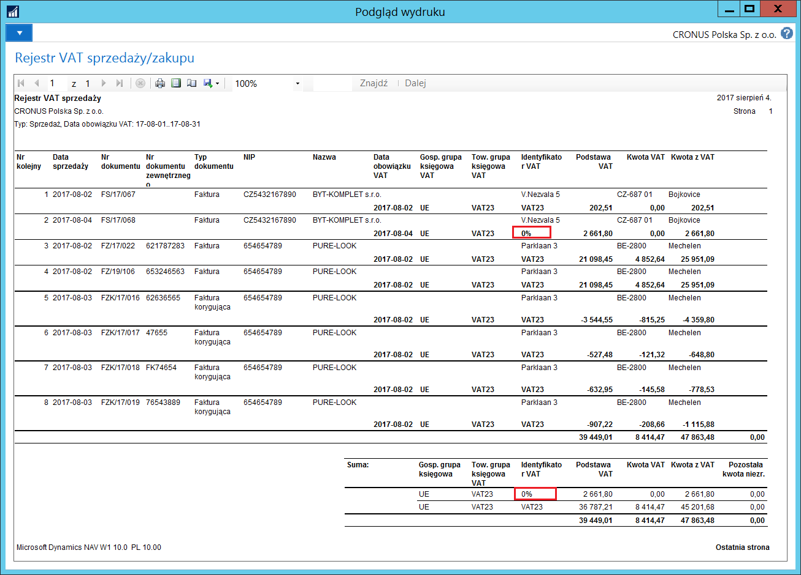{width="6.368055555555555in" height="4.58282261592301in"}
Rysunek 2.99: Wydruk raportu Rejestr VAT sprzedaży/zakupu
{#section-7 .list-paragraph .Poziom-2}
Dodatkowy kurs wymiany waluty do przeliczenia VAT {#dodatkowy-kurs-wymiany-waluty-do-przeliczenia-vat .Poziom-1}
Informacje ogólne
Podczas księgowania faktur zakupu z naliczonym VAT od dostawców krajowych, wystawionych w obcej walucie, jak również w przypadku wystawiania faktur sprzedaży w obcej walucie z VAT dla nabywców krajowych, w niektórych sytuacjach konieczne jest zastosowanie innego kursu wymiany waluty do przeliczenia podstawy i kwoty VAT, niż do przeliczenia wartości kosztów/przychodów i zobowiązania/należności. W Polskiej Lokalizacji systemu Microsoft Dynamics 365 Business Central on-premises zostało dodane narzędzie umożliwiające podanie dwóch różnych kursów wymiany waluty w dokumentach zakupu i dokumentach sprzedaży. W wyniku działania tej funkcji, powstają dwa zapisy księgi dostawcy/nabywcy, w podziale na kwotę VAT i pozostałą część zobowiązania/należności.
Dodatkowy zapis księgi dostawcy/nabywcy z kwotą VAT może być utworzony:
w walucie lokalnej
w walucie obcej
Ustawienia
Sposób tworzenia zapisów księgi dostawcy dla zobowiązań w zakresie kwoty VAT księgowanej z dokumentu zakupu określany jest indywidualnie dla każdego dokumentu. Może być też ustawiony jako domyślny dla dostawcy, w tym celu należy wykonać następujące kroki:
Należy wybrać Działy > Zarządzanie Finansami > Zobowiązania > Dostawcy.
W oknie Dostawcy, które się otworzy, należy zaznaczyć wiersz z wybranym dostawcą i kliknąć na wstążce Edytuj.
W kartotece dostawcy, która się otworzy, na karcie skróconej Fakturowanie, z listy rozwijanej w polu Typ księgowania płatności VAT (wal. obca) należy wybrać właściwą opcję spośród dostępnych:
pusta -- opcja domyślna -- zapis zobowiązania będzie jeden, nie będzie księgowany dodatkowy zapis księgi dostawców dla kwoty VAT; w tej sytuacji nie będzie możliwości podania innego kursu wymiany waluty do przeliczenia VAT,
Waluta lokalna -- dla dokumentów zakupu w walucie obcej dodatkowy zapis księgi dostawców dla kwoty VAT zostanie zaksięgowany w walucie lokalnej,
Waluta obca -- dla dokumentów zakupu w walucie obcej dodatkowy zapis księgi dostawców dla kwoty VAT zostanie zaksięgowany w walucie dokumentu.
Wybrana opcja będzie domyślnie wstawiana w analogicznym polu w księgowanych dokumentach zakupu od tego dostawcy.
Rysunek 2.100: Kartoteka dostawcy
Kwota podstawy VAT skalkulowana przez system na podstawie dodatkowego kursu wymiany może wymagać ręcznej zmiany przez użytkownika. Aby było to możliwe, należy zdefiniować właściwe ustawienia. W tym celu należy wykonać następujące kroki:
Należy wybrać Działy > Zarządzanie Finansami > Administracja > Ustawienia księgi głównej.
W oknie Ustawienia księgi głównej, które się otworzy, na karcie
skróconej Ogólne, w polu Maks. dozwolona różnica podstawy VAT wprowadź dopuszczalną wartość, o jaką można ręcznie zmienić skalkulowaną kwotę podstawy VAT w walucie lokalnej w księgowanym dokumencie.
Rysunek 2.101: Ustawienia księgi głównej
Obsługa
Wprowadzając fakturę zakupu w obcej walucie od wybranego dostawcy, system stosuje domyślne ustawienia, a w oknie Statystyka można zweryfikować i, w razie potrzeby, zmienić skalkulowane przez system wartości. W tym celu należy wykonać następujące kroki:
Należy wybrać Działy > Zarządzanie Finansami > Zobowiązania > Faktury zakupu.
W oknie Faktury zakupu, które się otworzy, należy kliknąć na wstążce Nowy.
Z listy rozwijanej w polu Nr dostawcy należy wybrać właściwego dostawcę. Pozostałe pola należy wypełnić w standardowy sposób.
Pole Typ księgowania płatności VAT (wal. obca) przyjęło domyślną opcję z kartoteki wybranego dostawcy.
Rysunek 2.102: Faktura zakupu
- Kurs wymiany waluty do przeliczenia VAT pobierany jest z okna
Kursy wymiany walut według Daty obowiązku VAT wprowadzonej w fakturze zakupu. Zmiana Daty obowiązku VAT wywołuje komunikat, w którym należy zaznaczyć wybraną opcję i kliknąć OK. Dostępne opcje:
Kurs wymiany odwrotnego obciążenia -- wybór tej opcji spowoduje uaktualnienie kursu wymiany waluty do przeliczenia odwrotnego obciążenia,
Kurs wymiany VAT -- wybór tej opcji spowoduje uaktualnienie kursu wymiany waluty do przeliczenia VAT,
Oba -- wybór tej opcji spowoduje uaktualnienie obydwu kursów wymiany waluty: do przeliczenia odwrotnego obciążenia i do przeliczenia kwoty VAT,
Żaden -- wybór tej opcji spowoduje, że żaden z kursów wymiany waluty nie zostanie uaktualniony: ani do przeliczenia odwrotnego obciążenia, ani do przeliczenia kwoty VAT.
 {width="3.40625in" height="2.1875in"}
{width="3.40625in" height="2.1875in"}
Rysunek 2.103: Komunikat po zmianie Daty obowiązku VAT
Na wstążce należy kliknąć przycisk Statystyka (można też nacisnąć klawisz F7).
W oknie Statystyka zakupów, które się otworzy, na karcie skróconej Kalkulacja kwoty VAT (wal. obca) prezentowane są informacje dotyczące przeliczenia kwoty VAT dokumentu:
Kod waluty VAT -- w tym polu prezentowana jest waluta, w jakiej księgowany jest dokument zakupu; można kliknąć przycisk asysty, aby w oknie Zmiana kursu wymiany sprawdzić i ewentualnie ręcznie zmienić kurs wymiany waluty zastosowany do przeliczenia kwoty VAT z dokumentu,
Data obowiązku VAT -- w tym polu prezentowana jest data obowiązku VAT przypisana do dokumentu,
Podstawa VAT (PLN) -- w tym polu prezentowana jest kwota podstawy VAT z dokumentu po przeliczeniu na PLN według podanego kursu wymiany waluty do przeliczenia VAT,
Kwota VAT (PLN) -- w tym polu prezentowana jest kwota VAT z dokumentu po przeliczeniu na PLN według podanego kursu wymiany waluty do przeliczenia VAT.
Na karcie skróconej Wiersze prezentowane są informacje dotyczące przeliczenia kwoty VAT dokumentu według stawek VAT zastosowanych w dokumencie.
Rysunek 2.104: Statystyka zakupów
Na karcie skróconej Wiersze w oknie Statystyka zakupów można ręcznie zmienić niektóre wartości wyliczone przez system, w granicach maksymalnych dozwolonych różnic:
dla waluty lokalnej -- zdefiniowanych w oknie Ustawienia księgi głównej;
dla waluty obcej -- zdefiniowanych w kartotece wybranej waluty.
Rysunek 2.105: Statystyka zakupów -- karta skrócona Wiersze
Po weryfikacji i ewentualnym poprawieniu skalkulowanych wartości
należy kliknąć OK, aby zamknąć okno Statystyka zakupów.
W oknie Faktura zakupu, na wstążce, należy kliknąć Księguj
(można nacisnąć klawisz F9), aby zaksięgować fakturę zakupu.
W wyniku zaksięgowania dokumentu zakupu tworzone są m.in. zapisy księgi dostawców i zapisy VAT. Sposób ich utworzenia zależy od opcji wybranej w polu Typ księgowania płatności VAT (wal. obca) w księgowanym dokumencie:
- Waluta lokalna:
<!-- -->
- Zapisy księgi dostawców -- tworzone są dwa zapisy:
w kwocie netto w walucie zaksięgowanego dokumentu
w kwocie VAT w walucie lokalnej, wynikającej z przeliczenia według kursu wymiany waluty dla VAT
- Zapisy VAT -- tworzony jest jeden zapis dla każdej towarowej
grupy księgowej VAT zastosowanej w dokumencie, w którym wartość podstawy VAT oraz kwoty VAT wynika z przeliczenia według kursu wymiany waluty dla VAT.
 {width="6.416666666666667in" height="2.160825678040245in"}
{width="6.416666666666667in" height="2.160825678040245in"}
Rysunek 2.106: Zapisy księgi dostawców
 {width="6.395833333333333in" height="2.529633639545057in"}
{width="6.395833333333333in" height="2.529633639545057in"}
Rysunek 2.107: Zapisy VAT
- Waluta obca:
<!-- -->
- Zapisy księgi dostawców -- tworzone są dwa zapisy:
w kwocie netto w walucie zaksięgowanego dokumentu
w kwocie VAT w walucie zaksięgowanego dokumentu
- Zapisy VAT -- tworzony jest jeden zapis dla każdej towarowej
grupy księgowej VAT zastosowanej w dokumencie, w którym wartość podstawy VAT oraz kwoty VAT wynika z przeliczenia według kursu wymiany waluty dla VAT.
 {width="6.40625in" height="2.1573184601924758in"}
{width="6.40625in" height="2.1573184601924758in"}
Rysunek 2.108: Zapisy księgi dostawców
 {width="6.40625in" height="2.5337543744531934in"}
{width="6.40625in" height="2.5337543744531934in"}
Rysunek 2.109: Zapisy VAT
Deklaracja VAT-UE {#deklaracja-vat-ue .Poziom-1}
Informacje ogólne
Deklaracja VAT-UE to informacja podsumowująca o dokonanych wewnątrzwspólnotowych transakcjach w danym okresie. Konieczność składania tego sprawozdania wynika z przepisów Ustawy o VAT. Polska Lokalizacja wyposażona została w narzędzie ułatwiające i automatyzujące przygotowanie danych do deklaracji VAT-UE.
Ustawienia
Żeby móc automatycznie tworzyć deklarację VAT-UE, muszą być zdefiniowane odpowiednie ustawienia. W tym celu, należy postępować według następujących kroków:
Należy wybrać Działy > Zarządzanie Finansami > Administracja > Ustawienia raportowania stat.
W oknie Ustawienia raportowania stat., które się otworzy, należy odpowiednio wypełnić pola na karcie skróconej VAT-UE:
Numer urzędu skarbowego -- należy wpisać numer (kod) urzędu
skarbowego, do którego należy dostarczyć deklaracje VAT-UE
Nazwisko upoważnionego pracownika (dekl. VAT-UE) -- należy
wpisać imię i nazwisko przedstawiciela firmy upoważnionego do podpisywania deklaracji VAT-UE
Wypełnił pracownik o nazwisku (dekl. VAT-UE) -- należy wpisać
imię i nazwisko przedstawiciela firmy wypełniającego deklarację VAT-UE
Seria numeracji deklaracji VAT-UE -- z listy rozwijanej w tym
polu należy wybrać kod serii numeracji, według której system będzie nadawał numery kolejnym deklaracjom VAT-UE
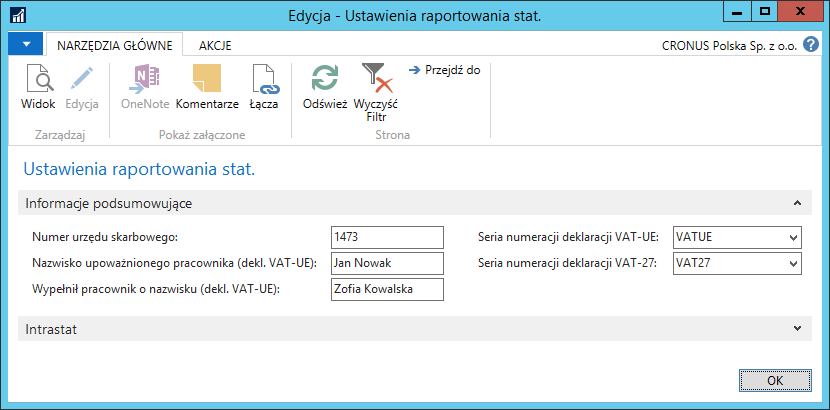{width="6.382608267716535in" height="3.152435476815398in"}
Rysunek 2.110: Ustawienia raportowania statystycznego
Należy wybrać **Działy > Zarządzanie Finansami > Administracja >
Ustawienia księgowe VAT**.
W oknie Ustawienia Księgowe VAT, które się otworzy, należy
odnaleźć wiersze z takimi kombinacjami kodów w polach Gosp. grupa księgowa VAT i Tow. grupa księgowa VAT, które są zdefiniowane dla zakupów i sprzedaży wewnątrzunijnej. W tych wierszach należy zaznaczyć odpowiednio pola Zakupy UE i Sprzedaż UE (jedno lub obydwa, w zależności od przeznaczenia) oraz Usługa, jeśli kombinacja grup księgowania VAT w danym wierszu odnosi się do zakupu/sprzedaży wewnątrzunijnej usług.
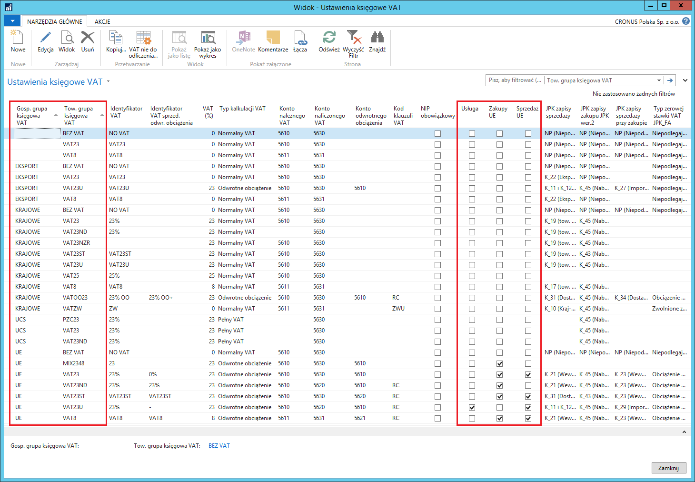{width="6.4in" height="4.436239063867017in"}
Rysunek 2.111: Ustawienia księgowe VAT
W Deklaracji VAT-UE można wykazywać wewnątrzwspólnotowe transakcje trójstronne oraz rolę firmy w każdej takiej transakcji. Wewnątrzwspólnotowa transakcja trójstronna zachodzi pomiędzy trzema podatnikami VAT zidentyfikowanymi na potrzeby transakcji wewnątrzwspólnotowych w trzech różnych państwach członkowskich. Uczestniczą oni w dostawie towaru w ten sposób, że pierwszy z nich wydaje towar bezpośrednio ostatniemu w kolejności, przy czym dostawa tego towaru jest dokonana między pierwszym i drugim oraz drugim i ostatnim w kolejności.
W celu oznaczenia poszczególnych transakcji zakupu/sprzedaży jako trójstronne oraz określenia roli firmy w tych transakcjach, należy postępować według następujących kroków:
Należy wybrać Działy **> Zakup > Przetwarzanie zamówień >
Zamówienia zakupu.**
Należy otworzyć kartotekę nowego zamówienia zakupu i wypełnić ją
standardowo.
W kartotece zamówienia zakupu, na karcie skróconej **Handel
zagraniczny**, należy odpowiednio zaznaczyć (lub nie) pola: Handel 3-stronny UE i Rola pośrednika w handlu 3-stronnym UE.
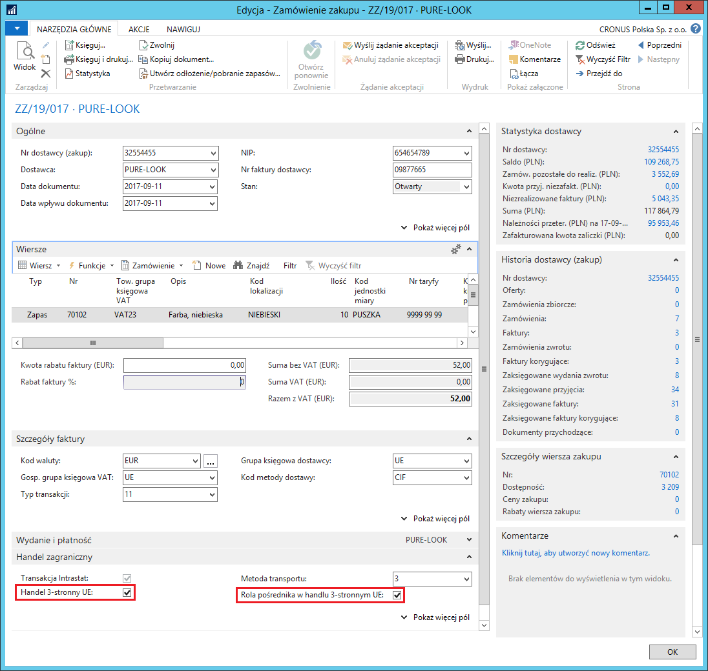{width="6.387045056867891in" height="6.060869422572178in"}
Rysunek 2.112: Handel 3-stronny UE w zamówieniu zakupu
- Zaksięgowanie dokumentu powoduje skopiowanie informacji z ww. pól
do odpowiednich Zapisów VAT, na podstawie których tworzona jest Deklaracja VAT-UE.
Obsługa
W celu przygotowania deklaracji VAT-UE za wybrany okres, należy postępować według następujących kroków:
Należy wybrać Działy > Zarządzanie Finansami > Działania okresowe > VAT > Deklaracje VAT-UE.
W oknie Deklaracje VAT-UE należy wybrać Nowe.
W kartotece nowej deklaracji, na karcie skróconej Ogólne, należy wypełnić pola:
Nr -- w tym polu system wstawia numer kolejny deklaracji VAT-UE,
zgodny z serią numeracji wybraną w ustawieniach.
Deklaracja za okres -- z listy opcji dostępnych w tym polu
należy wybrać, za jaki okres przygotowywana jest deklaracja. Możliwe opcje do wyboru, to Kwartał i Miesiąc.
Typ deklaracji -- od typu deklaracji wybranego w tym polu zależą
dalsze czynności podczas tworzenia deklaracji VAT-UE. Możliwe opcje do wyboru, to: Normalna, Korygująca, Korygująco-uzupełniająca.
Nr skorygowanej deklaracji -- dostępność tego pola do edycji
zależy od wybranego Typu deklaracji:
<!-- -->
dla typu Normalna -- pole jest nieedytowalne.
dla typu Korygująca -- pole jest edytowalne, z listy w nim
rozwijanej należy wybrać wcześniej utworzoną deklarację, która ma zostać skorygowana.
dla typu Korygująco-uzupełniająca -- pole jest edytowalne,
z listy w nim rozwijanej należy wybrać wcześniej utworzoną deklarację, która ma zostać skorygowana lub uzupełniona.
<!-- -->
Nazwa -- pole wypełniane automatycznie przez system -- wstawiana
jest nazwa firmy skopiowana z okna Dane Firmy.
NIP -- pole wypełniane automatycznie przez system -- wstawiany
jest NIP skopiowany z okna Dane Firmy.
Numer urzędu skarbowego -- pole wypełniane automatycznie
przez system -- wstawiany jest numer urzędu skarbowego skopiowany z okna Ustawienia raportowania statystycznego.
Typ transakcji handlowej -- z listy opcji dostępnych w tym polu
należy wybrać typ transakcji, jakie mają być zestawione w deklaracji. Możliwe opcje do wyboru, to: Zakupy, Sprzedaż, Oba. System analizuje Ustawienia księgowe VAT, dla których zaznaczone są pola Zakup UE i Sprzedaż UE.
Towary/usługi UE -- z listy opcji dostępnych w tym polu należy
wybrać rodzaj transakcji, jakie mają być zestawione w deklaracji. Możliwe opcje do wyboru, to: Oba, Towary, Usługi. System analizuje Ustawienia księgowe VAT, dla których zaznaczone są pola Zakup UE i Sprzedaż UE, dla których zaznaczone jest (lub nie) pole Usługa.
Data dokumentu -- w tym polu system automatycznie wstawia datę
roboczą jako datę utworzenia deklaracji VAT. Datę ta można zmienić ręcznie.
Nr okresu -- w zależności od wybranej opcji w polu **Deklaracja
za okres**, należy podać numer kolejny miesiąca lub kwartału w roku, którego dotyczy tworzona deklaracja VAT-UE.
Rok -- w tym polu należy wpisać rok, z którego pochodzi okres
(miesiąc lub kwartał), którego dotyczy tworzona deklaracja VAT-UE.
Data początkowa -- pole nieedytowalne, system wstawia w nim datę
początkową okresu, jakim objęta jest deklaracja, na podstawie wcześniej wprowadzonych parametrów w polach Deklaracja za okres, Nr okresu, Rok.
Data końcowa -- pole nieedytowalne, system wstawia w nim datę
końcową okresu, jakim objęta jest deklaracja, na podstawie wcześniej wprowadzonych parametrów w polach Deklaracja za okres, Nr okresu, Rok.
Kwota (PLN) -- pole nieedytowalne, system wstawia sumę kwot
z wierszy deklaracji VAT-UE.
Liczba dostaw -- pole nieedytowalne, system wstawia sumę ilości
dostaw z wierszy deklaracji VAT-UE.
Stan -- pole nieedytowalne, którego bieżąca opcja wskazuje
na stan edycji deklaracji. Zmiana stanu następuje poprzez wybranie akcji Zwolnij lub Otwórz ponownie.
- Do pól w karcie skróconej Osoby system kopiuje dane z wcześniej zdefiniowanych ustawień. W razie potrzeby, zawartość tych pól może zostać ręcznie zmieniona.
{width="6.391303587051619in" height="4.986035651793526in"}
Rysunek 2.113: Nagłówek deklaracji VAT-UE
Po prawidłowym wypełnieniu pól nagłówka deklaracji, należy wypełnić wiersze. W tym celu, w kartotece deklaracji należy wybrać Sugeruj wiersze.
W oknie Sugeruj wiersze deklaracji VAT-UE, które się otworzy, należy zaznaczyć pole Usuń istniejące wiersze, aby skrypt nadpisał istniejące wiersze deklaracji.
{width="4.610236220472441in" height="3.9881889763779528in"}
Rysunek 2.114: sugerowanie wierszy deklaracji VAT-UE
- Następnie należy wybrać OK w celu wykonania skryptu.
W wyniku użycia skryptu Sugeruj wiersze deklaracji VAT-UE system wypełnia automatycznie wiersze deklaracji według poniższej logiki:
Skrypt przetwarza Zapisy VAT mające datę obowiązku VAT (jeżeli
pole Użyj daty obowiązku VAT jest zaznaczone, w przeciwnym wypadku system analizuje datę księgowania) przypadającą w okresie wyznaczonym datami w polach Data początkowa i Data końcowa w nagłówku deklaracji VAT-UE.
Dodatkowe filtrowanie Zapisów VAT zależy od wybranego w nagłówku
deklaracji Typu transakcji handlowej. System wybiera właściwe Zapisy VAT pod względem grup księgowych VAT, których kombinacje zostały oznaczone jako Zakupy UE lub Sprzedaż UE. Następnym etapem filtrowania jest wybranie przez system Zapisów VAT zgodnych z opcją wybraną w polu Towary/usługi UE. W tym celu analizowane jest zaznaczenie pola Usługa w oknie **Ustawienia księgowe VAT dla **kombinacji grup księgowych VAT w Zapisach VAT.
System wstawia wiersze deklaracji VAT-UE pogrupowane kolejno według:
NIP, Handel 3-stronny UE, Rola pośrednika w handlu 3-stronnym UE.
Podczas wstawiania wierszy, system automatycznie uzupełnia m.in.
pola:
Kod kraju/regionu -- w tym polu wstawiany jest kod kraju
z kartoteki nabywcy lub dostawcy, którego NIP jest wprowadzony w danym wierszu.
Kwota (PLN) -- suma wartości typu transakcji
zakupu/sprzedaży/obu dla danego wiersza, skalkulowana z pola Podstawa VAT w Zapisach VAT.
Liczba dostaw -- zawiera liczbę zapisów VAT z unikalnym
Numerem transakcji.
{width="6.396119860017498in" height="6.2in"}
Rysunek 2.115: wiersze deklaracji VAT-UE
- Przygotowana deklaracja VAT-UE może być testowo wydrukowana jeszcze przed zatwierdzeniem. W tym celu należy wybrać Raport testowy, a następnie Podgląd lub Drukuj:
{width="6.392626859142607in" height="7.269564741907262in"}
Rysunek 2.116: Raport testowy deklaracji VAT-UE
W kartotece deklaracji VAT-UE należy poprawić/uzupełnić dane tak, aby na raporcie testowym nie pojawiały się ostrzeżenia.
Deklarację VAT-UE należy zatwierdzić, zmieniając jej stan na Zwolniony. W tym celu należy wybrać Zwolnij.
{width="6.4050907699037625in" height="6.208695319335083in"}
Rysunek 2.117: Zatwierdzona deklaracja VAT-UE
- Zatwierdzoną deklarację (ze stanem Zwolniona) można wydrukować, wybierając Deklaracja, a następnie Drukuj lub Podgląd wydruku:
{width="6.377887139107612in" height="4.921738845144357in"}
Rysunek 2.118: Wydruk deklaracji VAT-UE
Aby poprawić błąd, który wystąpił w jednej z wcześniej złożonych deklaracji VAT‑UE, należy utworzyć deklarację korygującą. Przepisy polskiego prawa wymagają, aby na deklaracji korygującej wykazane były wiersze przed i po korekcie. Jeśli na pierwotnej deklaracji jakiś wiersz nie był wykazany, w deklaracji korygującej powinien mieć wykazaną wartość zero przed korektą. Jeśli na pierwotnej deklaracji został wykazany wiersz, którego nie powinno być, w deklaracji korygującej powinien mieć wykazana wartość zero po korekcie. Zwykle, wiersz przed korektą powinien mieć wartość identyczną, jak w wierszu deklaracji pierwotnej, a wiersz po korekcie powinien mieć nową, prawidłowo skalkulowaną wartość dla danego okresu.
W celu przygotowanie korygującej deklaracji VAT-UE, należy postępować według następujących kroków:
Należy utworzyć nowy nagłówek deklaracji VAT-UE w ten sam sposób,
jak dla zwykłej deklaracji.
W polu Typ deklaracji należy wybrać Korygująca
lub Korygująco-uzupełniająca.
Z listy rozwijanej w polu Nr skorygowanej deklaracji należy
wybrać zatwierdzona deklaracje, podlegającą korygowaniu.
Pozostałe pola w nagłówku deklaracji korygującej zostaną uzupełnione
automatycznie przez system.
Należy wybrać Sugeruj wiersze, a następnie OK.
System automatycznie wstawi wiersze korygujące -- po 2 dla każdego
korygowanego wiersza. Wiersz z typem Anulowanie (przed korektą) jest utworzony na podstawie wiersza w pierwotnej deklaracji, a wiersz z typem Korekta (po korekcie) jest utworzony na podstawie nowej kalkulacji:
{width="6.373912948381452in" height="7.148860454943132in"}
Rysunek 2.119: Korygująca deklaracjA VAT-UE
Należy sprawdzić w Raporcie testowym, czy wszystkie wymagane
dane są poprawnie uzupełnione.
W celu zatwierdzenia korygującej deklaracji VAT-UE, należy zmienić
jej stan na Zwolniony, wybierając Zwolnij.
Zatwierdzoną korygującą deklarację VAT-UE można wydrukować
wybierając Deklaracja.
Nr taryfy usługowej {#nr-taryfy-usługowej .Poziom-1}
Informacje ogólne
Dla niektórych transakcji sprzedaży usług poza granice Polski, w rejestrze VAT należy podać krótki opis świadczonej usługi dla celów badania poprawności kalkulacji VAT. Celem funkcjonalności numeru taryfy usługowej jest udostępnienie użytkownikom listy takich opisów i możliwości ich przypisania do wybranych transakcji.
Ustawienia
Numery taryf usługowych mogą być przypisywane w wierszach dokumentów sprzedaży wyłącznie dla wybranych ustawień VAT, w tym celu należy postępować według następujących kroków:
Należy wybrać **Działy > Zarządzanie Finansami > Administracja >
Ustawienia księgowe VAT**.
W oknie Ustawienia księgowe VAT, które się otworzy, należy
zaznaczyć wiersz z wybraną kombinacją kodów w polach Gosp. grupa księgowa VAT i Tow. grupa księgowa VAT, a następnie wybrać Edycja.
W oknie Kartoteka ustaw. księg. VAT, które się otworzy,
na karcie skróconej Ogólne należy zaznaczyć pole Usługa, pole Obowiązkowy numer taryfy usługowej zostanie automatycznie zaznaczone.
 {width="6.396484033245844in" height="4.921738845144357in"}
{width="6.396484033245844in" height="4.921738845144357in"}
Rysunek 2.120: Ustawienia księgowe VAT
Obsługa
Przypisanie numeru taryfy usługowej możliwe jest w dokumentach sprzedaży. W tym celu należy postępować według następujących kroków:
Należy wybrać **Działy > Zarządzanie Finansami > Należności >
Faktury sprzedaży**.
Należy w sposób standardowy wprowadzić dane do faktury sprzedaży.
Konieczne jest użycie właściwej kombinacji grup księgowych VAT, dzięki czemu możliwe jest wybranie jednej z taryf z listy rozwijanej w polu Nr taryfy usługowej w wierszach faktury sprzedaży:
 {width="6.369843613298338in" height="5.356521216097987in"}
{width="6.369843613298338in" height="5.356521216097987in"}
Rysunek 2.121: Faktura sprzedaży usług
- W przypadku, gdy na liście rozwijanej w polu Nr taryfy usługowej nie ma pożądanej taryfy, można ją wprowadzić wybierając Nowe. Otworzy się wtedy okno Numery taryf usługowych, w którym, w nowym wierszu, należy wprowadzić unikalny kod oraz pełny opis nowej taryfy usługowej:
 {width="4.559055118110236in" height="4.818897637795276in"}
{width="4.559055118110236in" height="4.818897637795276in"}
Rysunek 2.122: Numery taryf usługowych
Pozostałe dane do faktury sprzedaży należy wprowadzić standardowo.
Należy zaksięgować fakturę sprzedaży.
Nr taryfy usługowej zostanie skopiowany do zaksięgowanej faktury
sprzedaży:
 {width="6.2952755905511815in" height="7.3700787401574805in"}
{width="6.2952755905511815in" height="7.3700787401574805in"}
Rysunek 2.123: Zaksięgowana faktura sprzedaży usług
W raporcie Rejestr VAT sprzedaży/zakupu możliwe jest wydrukowanie nazwy usługi zgodnej z numerem taryfy usługowej przypisanym do wiersza zaksięgowanego dokumentu sprzedaży. W tym celu należy postępować według następujących kroków:
Należy wybrać **Działy > Zarządzanie Finansami > Raporty
i analizy > Rejestr VAT sprzedaży/zakupu**.
W oknie wstępnym raportu należy zaznaczyć pole **Pokaż opis taryfy
usługowej**:
 {width="5.177165354330708in" height="5.84251968503937in"}
{width="5.177165354330708in" height="5.84251968503937in"}
Rysunek 2.124: Okno wstępne raportu Rejestr VAT sprzedaży/zakupu
- W pozycjach rejestru VAT sprzedaży pochodzących z transakcji z przypisanym numerem taryfy usługowej, wydrukowany jest dodatkowy wiersz z nazwą usługi przypisaną do wybranego numeru taryfy:
 {width="6.381944444444445in" height="4.044625984251969in"}
{width="6.381944444444445in" height="4.044625984251969in"}
Rysunek 2.125: Rejestr VAT sprzedaży/zakupu
{#section-8 .list-paragraph .Poziom-1}
Deklaracja VAT-27 {#deklaracja-vat-27 .Poziom-1}
Informacje ogólne
Deklaracja VAT-27 to informacja podsumowująca o dokonanych w danym okresie transakcjach, dla których podatnikiem jest nabywca. Obowiązek składania deklaracji VAT-27 wynika ze zmian, jakie do ustawy o podatku VAT wprowadza ustawa z 9 kwietnia 2015 r. o zmiana ustawy o podatku od towarów i usług oraz ustawy -- Prawo zamówień publicznych. Deklaracja VAT-27 dotyczy transakcji (dostawy towarów lub świadczenia usług), dla których podatnikiem jest nabywca. Wypełnią ją zatem m.in., podatnicy, którzy stosując odwrotne obciążenie sprzedawać będą towary wrażliwe, jak laptopy, smartfony, tablety, telefony, metale, makulaturę., a także usługi w zakresie przenoszenia uprawnień do emisji gazów cieplarnianych.
Polska Lokalizacja wyposażona została w narzędzie ułatwiające i automatyzujące przygotowanie danych do deklaracji VAT-27.
Ustawienia
Żeby móc automatycznie tworzyć deklarację VAT-27, muszą być zdefiniowane odpowiednie ustawienia.
Należy wybrać Działy > Zarządzanie Finansami > Administracja > Ustawienia raportowania stat.
W oknie Ustawienia raportowania stat., które się otworzy, należy odpowiednio wypełnić pola na karcie skróconej Informacje podsumowujące:
- Seria numeracji deklaracji VAT-27 -- z listy rozwijanej w tym
polu należy wybrać kod serii numeracji, według której system będzie nadawał numery kolejnym deklaracjom VAT-27
Jeżeli nie korzystamy z funkcjonalności deklaracji VAT-UE, należy dodatkowo uzupełnić poniższe dane:
Numer urzędu skarbowego -- należy wpisać numer (kod) urzędu
skarbowego, do którego należy dostarczyć deklarację VAT-27
Nazwisko upoważnionego pracownika (dekl. VAT-UE) -- należy
wpisać imię i nazwisko przedstawiciela firmy upoważnionego do podpisywania deklaracji VAT‑27
Wypełnił pracownik o nazwisku (dekl. VAT-UE) -- należy wpisać
imię i nazwisko przedstawiciela firmy wypełniającego deklarację VAT-27
{width="6.4in" height="3.161025809273841in"}
Rysunek 2.126: Ustawienia raportowania statystycznego
Deklaracja VAT-27 będzie pobierała informacje dotyczące transakcji sprzedaży, dla których zastosowane zostały ustawienia VAT z Typem kalkulacji VAT = Odwrotne obciążenie.
Można zastosować poniższe przykładowe ustawienia (usługi, środki trwałe i pozostałe):
{width="6.4086953193350835in" height="2.9106157042869643in"}
Rysunek 2.127: Ustawienia księgowe VAT
Obsługa
W celu przygotowania deklaracji VAT-27 za wybrany okres, należy postępować według następujących kroków:
Należy wybrać Działy > Zarządzanie Finansami > Działania okresowe > VAT > Deklaracje VAT-27.
W oknie Deklaracje VAT-27 należy wybrać Nowe.
W kartotece nowej deklaracji, na karcie skróconej Ogólne, należy wypełnić pola:
Nr -- w tym polu system wstawia numer kolejny deklaracji VAT-27,
zgodny z serią numeracji wybraną w ustawieniach.
Deklaracja za okres -- z listy opcji dostępnych w tym polu
należy wybrać, za jaki okres przygotowywana jest deklaracja. Możliwe opcje do wyboru, to Kwartał i Miesiąc.
Typ deklaracji -- od typu deklaracji wybranego w tym polu zależą
dalsze czynności podczas tworzenia deklaracji VAT-27. Możliwe opcje do wyboru, to: Normalna, Korygująca, Korygująco-uzupełniająca.
Nr skorygowanej deklaracji -- dostępność tego pola do edycji
zależy od wybranego Typu deklaracji:
<!-- -->
dla typu Normalna -- pole jest nieedytowalne.
dla typu Korygująca -- pole jest edytowalne, z listy w nim
rozwijanej należy wybrać wcześniej utworzoną deklarację, która ma zostać skorygowana.
dla typu Korygująco-uzupełniająca -- pole jest edytowalne,
z listy w nim rozwijanej należy wybrać wcześniej utworzoną deklarację, która ma zostać skorygowana lub uzupełniona.
<!-- -->
Nazwa -- pole wypełniane automatycznie przez system -- wstawiana
jest nazwa firmy skopiowana z okna Dane Firmy.
NIP -- pole wypełniane automatycznie przez system -- wstawiany
jest NIP skopiowany z okna Dane Firmy.
Numer urzędu skarbowego -- pole wypełniane automatycznie
przez system -- wstawiany jest numer urzędu skarbowego skopiowany z okna Ustawienia raportowania statystycznego.
Data dokumentu -- w tym polu system automatycznie wstawia datę
roboczą jako datę utworzenia deklaracji VAT-27. Datę ta można zmienić ręcznie.
Nr okresu -- w zależności od wybranej opcji w polu **Deklaracja
za okres**, należy podać numer kolejny miesiąca lub kwartału w roku, którego dotyczy tworzona deklaracja VAT-27.
Rok -- w tym polu należy wpisać rok, z którego pochodzi okres
(miesiąc lub kwartał), którego dotyczy tworzona deklaracja VAT-27.
Data początkowa -- pole nieedytowalne, system wstawia w nim datę
początkową okresu, jakim objęta jest deklaracja, na podstawie wcześniej wprowadzonych parametrów w polach Deklaracja za okres, Nr okresu, Rok.
Data końcowa -- pole nieedytowalne, system wstawia w nim datę
końcową okresu, jakim objęta jest deklaracja, na podstawie wcześniej wprowadzonych parametrów w polach Deklaracja za okres, Nr okresu, Rok.
Kwota (PLN) -- pole nieedytowalne, system wstawia sumę kwot
z wierszy deklaracji VAT-27.
Stan -- pole nieedytowalne, którego bieżąca opcja wskazuje
na stan edycji deklaracji. Zmiana stanu następuje poprzez wybranie akcji Zwolnij, lub Otwórz ponownie.
Towary/usługi -- z listy opcji dostępnych w tym polu należy
wybrać rodzaj transakcji, jakie mają być zestawione w deklaracji. Możliwe opcje do wyboru, to: Oba, Towary, Usługi. System analizuje Ustawienia księgowe VAT, dla których zaznaczone jest (lub nie) pole Usługa.
- Do pól w karcie skróconej Osoby system kopiuje dane z wcześniej
zdefiniowanych ustawień. W razie potrzeby, zawartość tych pól może zostać ręcznie zmieniona.
{width="6.382608267716535in" height="5.066536526684165in"}
Rysunek 2.128: Nagłówek deklaracji VAT-27
Po prawidłowym wypełnieniu pól nagłówka deklaracji, należy wypełnić
wiersze. W tym celu, w kartotece deklaracji należy wybrać Sugeruj wiersze.
W oknie Sugeruj wiersze deklaracji VAT-27, które się otworzy,
należy zaznaczyć pole Usuń istniejące wiersze, aby skrypt nadpisał istniejące wiersze deklaracji.
{width="4.669291338582677in" height="3.937007874015748in"}
Rysunek 2.129: sugerowanie wierszy deklaracji VAT-27
- Następnie należy wybrać OK w celu wykonania skryptu.
W wyniku użycia skryptu Sugeruj wiersze deklaracji VAT-27 system wypełnia automatycznie wiersze deklaracji według poniższej logiki:
Skrypt przetwarza Zapisy VAT mające datę obowiązku VAT (jeżeli pole Użyj daty obowiązku VAT jest zaznaczone, w przeciwnym wypadku system analizuje datę księgowania) przypadającą w okresie wyznaczonym datami w polach Data początkowa i Data końcowa w nagłówku deklaracji VAT-27.
System wybiera właściwe Zapisy VAT pod względem grup księgowych VAT, dla których dla transakcji sprzedaży Typ kalkulacji VAT jest Odwrotne obciążenie i nie dotyczy transakcji wewnątrzunijnych. Dodatkowe filtrowanie Zapisów VAT zależy od wybranego w nagłówku deklaracji Typu transakcji handlowej. System wybiera Zapisy VAT zgodne z opcją wybraną w polu Towary/usługi. W tym celu analizowane jest zaznaczenie pola Usługa w oknie **Ustawienia księgowe VAT dla **kombinacji grup księgowych VAT w Zapisach VAT.
Podczas wstawiania wierszy, system automatycznie uzupełnia m.in. pola:
- Kwota (PLN) -- suma wartości typu transakcji
zakupu/sprzedaży/obu dla danego wiersza, skalkulowana z pola Podstawa VAT w Zapisach VAT.
{width="6.409337270341207in" height="6.121738845144357in"}
Rysunek 2.130: wiersze deklaracji VAT-27
- Przygotowana deklaracja VAT-27 może być testowo wydrukowana jeszcze przed zatwierdzeniem. W tym celu należy wybrać Raport testowy, a następnie Podgląd lub Drukuj:
{width="6.373912948381452in" height="5.8087051618547685in"}
Rysunek 2.131: Raport testowy deklaracji VAT-27
W kartotece deklaracji VAT-27 należy poprawić/uzupełnić dane tak,
aby na raporcie testowym nie pojawiały się ostrzeżenia.
Deklarację VAT-27 należy zatwierdzić, zmieniając jej stan
na Zwolniony. W tym celu należy wybrać Zwolnij.
{width="6.409337270341207in" height="6.121738845144357in"}
Rysunek 2.132: Zatwierdzona deklaracja VAT-27
- Zatwierdzoną deklarację (ze stanem Zwolniony) można wydrukować, wybierając Deklaracja, a następnie Drukuj lub Podgląd wydruku:
{width="6.388741251093613in" height="6.182608267716535in"}
Rysunek 2.133: Wydruk deklaracji VAT-27
**
**
Sprawdzenie statusu podmiotu w VAT {#sprawdzenie-statusu-podmiotu-w-vat .Poziom-1}
Informacje ogólne
W kwietniu 2018 roku Ministerstwo Finansów poinformowało, że udostępnione zostało API do dostępnej na Portalu Podatkowym usługi Sprawdzenie statusu podmiotu w VAT. Przedstawione zostały zasady wymiany informacji pomiędzy usługą sieciową udostępnioną przez Ministerstwo Finansów a oprogramowaniem interfejsowym systemów klienckich, pobierających informacje dotyczące statusu podatników jako płatników podatku VAT.
Aktualnie dostępna jest tylko usługa SprawdzNIP, która na podstawie numeru NIP weryfikuje, czy podmiot jest zarejestrowany jako podatnik VAT w dniu poprzedzającym przesłanie zapytania. W planach Ministerstwa Finansów jest uruchomienie usługi SprawdzNIPNaDzien.
W odpowiedzi na przesłane zapytanie usługa SprawdzNIP zwraca Kod oraz Komunikat:
- Kod -- jednoznakowy kod rezultatu wykonanej operacji, może
oznaczać status rejestracji podmiotu jako podatnika VAT lub błąd zapytania.
Możliwe kody statusu rejestracji:
N -- podmiot o podanym identyfikatorze podatkowym NIP nie jest
zarejestrowany jako podatnik VAT,
C -- podmiot o podanym identyfikatorze podatkowym NIP jest
zarejestrowany jako podatnik VAT czynny,
Z -- podmiot o podanym identyfikatorze podatkowym NIP jest
zarejestrowany jako podatnik VAT zwolniony.
Możliwe kody błędów:
- I -- błąd zapytania -- niepoprawny Numer Identyfikacji
Podatkowej.
<!-- -->
- Komunikat -- opis kodu rezultatu wykonanej operacji.
Użytkownik może otrzymać jeden z trzech poniższych komunikatów:
Podmiot o podanym identyfikatorze podatkowym NIP nie jest
zarejestrowany jako podatnik VAT.
Podmiot o podanym identyfikatorze podatkowym NIP jest zarejestrowany
jako podatnik VAT czynny.
Podmiot o podanym identyfikatorze podatkowym NIP jest zarejestrowany
jako podatnik VAT zwolniony.
W ramach Polskiej Lokalizacji, do standardowej funkcjonalności systemu Microsoft Dynamics 365 Business Central on‑premises została dodana funkcja Sprawdź status VAT, którą można stosować zarówno w transakcjach zakupu, jak i sprzedaży.
Ustawienia
Funkcjonalność sprawdzania statusu podmiotu w VAT wymaga aktywnego połączenia z Internetem.
Należy upewnić się, że w oknie Kraje/Regiony, dla kodu kraju PL wypełnione jest pole Kod kraju/regionu UE również PL.
Obsługa
Funkcjonalność sprawdzania statusu podmiotu w VAT dostępna jest w kartotekach: Nabywcy, Dostawcy, Kontaktu oraz w dokumentach: Zamówienie sprzedaży, Faktura sprzedaży, Faktura korygująca sprzedaży, Zamówienie zakupu, Faktura zakupu, Faktura korygująca zakupu.
W celu sprawdzenia statusu VAT w kartotece kontrahenta, należy postępować według następujących kroków:
- Należy otworzyć kartotekę wybranego nabywcy, dostawcy lub kontaktu,
a następnie kliknąć przycisk asysty w polu NIP.
Rysunek 2.134: Kartoteka nabywcy
- W oknie Rejestr NIP, które się otworzy, na wstążce należy wybrać
akcję Sprawdź status VAT.
Rysunek 2.135: Rejestr NIP
- W oknie Rejestr NIP pojawi się odpowiedź systemu sprawdzania statusu podmiotu w VAT, poprzez wypełnienie poszczególnych pól:
- Nr zapisu -- kolejny numer w rejestrze NIP,
<!-- -->
NIP -- NIP, dla którego sprawdzany był status,
Stan -- możliwe opcje:
<!-- -->
Niezweryfikowany,
Poprawny,
Niepoprawny.
<!-- -->
- Kod statusu VAT -- możliwe kody:
<!-- -->
N -- podmiot o podanym identyfikatorze podatkowym NIP nie jest
zarejestrowany jako podatnik VAT,
C -- podmiot o podanym identyfikatorze podatkowym NIP jest
zarejestrowany jako podatnik VAT czynny,
Z -- podmiot o podanym identyfikatorze podatkowym NIP jest
zarejestrowany jako podatnik VAT zwolniony.
<!-- -->
- Komunikat statusu VAT -- możliwe komunikaty:
<!-- -->
Podmiot o podanym identyfikatorze podatkowym NIP nie jest
zarejestrowany jako podatnik VAT,
Podmiot o podanym identyfikatorze podatkowym NIP jest zarejestrowany
jako podatnik VAT czynny,
Podmiot o podanym identyfikatorze podatkowym NIP jest zarejestrowany
jako podatnik VAT zwolniony.
<!-- -->
Data statusu VAT -- data dnia poprzedzającego dzień sprawdzenia
statusu,
Zweryfikowana data -- data i godzina weryfikacji,
Identyfikator użytkownika -- identyfikator użytkownika
sprawdzającego status.
Rysunek 2.136: Rejestr NIP -- zweryfikowany status VAT
W celu sprawdzenia statusu VAT w dokumencie sprzedaży, należy postępować według następujących kroków:
Należy utworzyć nową kartotekę zamówienia sprzedaży, faktury sprzedaży lub faktury korygującej sprzedaży, a następnie wybrać nabywcę.
Na wstążce należy wybrać akcję Sprawdź status VAT.
Rysunek 2.137: Kartoteka zamówienia sprzedaży
- System wyświetli okno informacyjne z jednym z komunikatów:
Podmiot o podanym identyfikatorze podatkowym NIP nie jest
zarejestrowany jako podatnik VAT,
Podmiot o podanym identyfikatorze podatkowym NIP jest zarejestrowany
jako podatnik VAT czynny,
Podmiot o podanym identyfikatorze podatkowym NIP jest zarejestrowany
jako podatnik VAT zwolniony.
Rysunek 2.138: Okno informacyjne
- W skróconej karcie Szczegóły faktury pod polem NIP dodane
jest pole Status VAT z informacją, czy dany NIP był dla tego dokumentu sprawdzany i jaki był wynik sprawdzenia. Przed weryfikacją wyświetlany jest status: Status nie był weryfikowany. Po weryfikacji pojawi się jeden ze statusów:
Niezarejestrowany,
Czynny,
Zwolniony.
Należy kliknąć informację wyświetloną w polu Status VAT.
Rysunek 2.139: Kartoteka zamówienia sprzedaży
- W oknie Rejestr NIP, które się otworzy, wyświetlone są szczegóły
weryfikacji NIP w poszczególnych polach:
- Nr zapisu -- kolejny numer w rejestrze NIP,
<!-- -->
NIP -- NIP, dla którego sprawdzany był status,
Stan -- możliwe opcje:
<!-- -->
Niezweryfikowany,
Poprawny,
Niepoprawny.
<!-- -->
- Kod statusu VAT -- możliwe kody:
<!-- -->
N -- podmiot o podanym identyfikatorze podatkowym NIP nie jest
zarejestrowany jako podatnik VAT,
C -- podmiot o podanym identyfikatorze podatkowym NIP jest
zarejestrowany jako podatnik VAT czynny,
Z -- podmiot o podanym identyfikatorze podatkowym NIP jest
zarejestrowany jako podatnik VAT zwolniony.
<!-- -->
- Komunikat statusu VAT -- możliwe komunikaty:
<!-- -->
Podmiot o podanym identyfikatorze podatkowym NIP nie jest
zarejestrowany jako podatnik VAT,
Podmiot o podanym identyfikatorze podatkowym NIP jest zarejestrowany
jako podatnik VAT czynny,
Podmiot o podanym identyfikatorze podatkowym NIP jest zarejestrowany
jako podatnik VAT zwolniony.
<!-- -->
Data statusu VAT -- data dnia poprzedzającego dzień sprawdzenia
statusu,
Zweryfikowana data -- data i godzina weryfikacji,
Identyfikator użytkownika -- identyfikator użytkownika
sprawdzającego status.
Rysunek 2.140: Rejestr NIP -- zweryfikowany status VAT
W wyniku zaksięgowania dokumentu sprzedaży, informacja o przeprowadzonej weryfikacji VAT przenoszona jest do zaksięgowanego dokumentu. W celu sprawdzenia weryfikacji VAT w zaksięgowanym dokumencie sprzedaży, należy postępować według następujących kroków:
Należy otworzyć kartotekę zaksięgowanej faktury sprzedaży lub
zaksięgowanej faktury korygującej sprzedaży.
W skróconej karcie Ogólne pod polem NIP dodane jest pole
Status VAT z informacją, czy dany NIP był dla tego dokumentu sprawdzany i jaki był wynik sprawdzenia. Przed weryfikacją wyświetlany jest status: Status nie był weryfikowany. Po weryfikacji pojawi się jeden ze statusów:
Niezarejestrowany,
Czynny,
Zwolniony.
Należy kliknąć informację wyświetloną w polu Status VAT.
Rysunek 2.141: Kartoteka zaksięgowanej faktury sprzedaży
- W oknie Rejestr NIP, które się otworzy, wyświetlone są szczegóły
weryfikacji NIP w poszczególnych polach:
- Nr zapisu -- kolejny numer w rejestrze NIP,
<!-- -->
NIP -- NIP, dla którego sprawdzany był status,
Stan -- możliwe opcje:
<!-- -->
Niezweryfikowany,
Poprawny,
Niepoprawny.
<!-- -->
- Kod statusu VAT -- możliwe kody:
<!-- -->
N -- podmiot o podanym identyfikatorze podatkowym NIP nie jest
zarejestrowany jako podatnik VAT,
C -- podmiot o podanym identyfikatorze podatkowym NIP jest
zarejestrowany jako podatnik VAT czynny,
Z -- podmiot o podanym identyfikatorze podatkowym NIP jest
zarejestrowany jako podatnik VAT zwolniony.
<!-- -->
- Komunikat statusu VAT -- możliwe komunikaty:
<!-- -->
Podmiot o podanym identyfikatorze podatkowym NIP nie jest
zarejestrowany jako podatnik VAT,
Podmiot o podanym identyfikatorze podatkowym NIP jest zarejestrowany
jako podatnik VAT czynny,
Podmiot o podanym identyfikatorze podatkowym NIP jest zarejestrowany
jako podatnik VAT zwolniony.
<!-- -->
Data statusu VAT -- data dnia poprzedzającego dzień sprawdzenia
statusu,
Zweryfikowana data -- data i godzina weryfikacji,
Identyfikator użytkownika -- identyfikator użytkownika
sprawdzającego status.
Rysunek 2.142: Rejestr NIP -- zweryfikowany status VAT
Pobieranie danych z serwisów rządowych {#pobieranie-danych-z-serwisów-rządowych .Poziom-1}
Informacje ogólne
Z punktu widzenia rozliczeń z tytułu podatku VAT istotne jest, czy kontrahent jest zarejestrowany jako czynny podatnik VAT. Ponadto płatność za transakcję pow. 15 tys. zł powinna być dokonana na rachunek bankowy kontrahenta znajdujący się w wykazie podatników VAT. W ramach Polskiej Lokalizacji systemu Microsoft Dynamics 365 Business Central on‑premises udostępniona została funkcja, która umożliwia pobieranie danych kontrahentów z Bazy Internetowej Regon oraz z Wykazu podatników VAT, włącznie z zarejestrowanymi rachunkami bankowymi.
Dane kontrahentów w Bazie Internetowej Regon (BIR) {#dane-kontrahentów-w-bazie-internetowej-regon-bir .Poziom-2}
Informacje ogólne
Główny Urząd Statystyczny udostępnia aktualną informację o podatnikach VAT w Bazie Internetowej Regon (BIR), którą każdy może dowolnie przeszukiwać.
Polska Lokalizacja umożliwia bezpośrednie połączenie z systemu Microsoft Dynamics 365 Business Central on‑premises z Bazą Internetową Regon i wyszukiwanie podmiotów podając numer NIP lub regon. Możliwe jest również tworzenie i aktualizacja danych nabywców, dostawców i kontaktów w oparciu o dane w Bazie Internetowej Regon.
Ustawienia
W Bazie Internetowej Regon dane kontrahentów zdefiniowane są w pełnym brzmieniu, np. spółka z ograniczoną odpowiedzialnością. Aby system automatycznie podpowiadał w nazwie kontrahenta skrót np. sp. z o.o., należy wcześniej zdefiniować te skróty. W tym celu należy wykonać następujące kroki:
Należy wybrać Działy > Zarządzanie Finansami > Administracja > Ustawienia > Skróty danych BIR.
W oknie Skróty danych BIR, które się otworzy, w pierwszym wolnym wierszu należy w polu Tekst wprowadzić treść danych BIR, dla których w polu Skrót należy zdefiniować ich skróconą formę:
+----------------------------------------------------------------------+ | {width="4.846456692913386in" height="3.4448818897637796in"} | | ----------------- | | -------------------------------------------------------------------- | | Rysunek 2.143: Skróty danych BIR | +----------------------------------------------------------------------+
- Zmiany należy zatwierdzić klikając przycisk OK.
Obsługa
Wprowadzając do bazy nowego dostawcę, należy wykonać następujące kroki:
Należy wybrać Działy > Zakup > Przetwarzanie zamówień > Dostawcy.
W oknie Dostawcy, które się otworzy, na wstążce należy kliknąć
Nowy.
W nowej kartotece dostawcy, która się otworzy, na wstążce należy
kliknąć Pobierz dane z serwisów rządowych.
W oknie Kartoteka danych serwisów rządowych, które się otworzy, w polu Wyszukaj nr VAT/NIP należy wprowadzić NIP (10 cyfr) kontrahenta, którego wprowadzamy do bazy. Jest też możliwość wyszukiwania kontrahenta według numeru regon, w tym celu należy wypełnić pole Wyszukaj regon.
Na wstążce należy kliknąć Pobierz dane z BIR.
Rysunek 2.144: Kartoteka danych serwisów rządowych
W wyniku działania akcji Pobierz dane z BIR, w oknie Kartoteka danych serwisów rządowych pojawi się nowa karta skrócona Dane BIR, w której prezentowane są dane kontrahenta zarejestrowane w Bazie Internetowej Regon. Pola tej karty skróconej są nieedytowalne.
W polach na karcie skróconej Dane aktualizujące jest kopia danych z Bazy Internetowej Regon. Wszystkie pola są edytowalne -- użytkownik może zmienić ich zawartość. Dane z tych pól zostaną skopiowane do kartoteki dostawcy po kliknięciu akcji Aktualizuj kartotekę dostawcy.
{width="6.3125in" height="3.9399168853893265in"}
Rysunek 2.145: Kartoteka danych serwisów rządowych
- W oknie Kartoteka danych serwisów rządowych na wstążce należy kliknąć Aktualizuj kartotekę dostawcy, a następnie OK.
System automatycznie wypełnił pola w kartotece dostawcy danymi z karty skróconej Dane aktualizujące w Kartotece danych serwisów rządowych.
{width="6.393732502187227in" height="3.7604166666666665in"}
Rysunek 2.146: dane KONTRAHENTA W KARTOTECE dostawcy
Funkcja Pobierz dane z BIR w oknie Kartoteka danych serwisów rządowych może być uruchomiona również w istniejącej kartotece dostawcy i służyć do sprawdzenia, czy dany kontrahent jest aktualnie zarejestrowany jako czynny podatnik VAT. W tej sytuacji funkcja Pobierz dane z BIR automatycznie pobiera NIP z kartoteki kontrahenta w celu przeszukania Bazy Internetowej Regon. W przypadku, gdy dany NIP nie zostanie odnaleziony, zostanie wyświetlony stosowny komunikat:
{width="3.0833333333333335in" height="1.3645833333333333in"}
Rysunek 2.147: Komunikat o braku kontrahenta w bir
W sytuacji, gdy podatnik zostanie odnaleziony, a jego dane się nie zmieniły, nie ma potrzeby uruchamiania akcji Aktualizuj kartotekę dostawcy.
Wykaz podatników VAT {#wykaz-podatników-vat .Poziom-2}
Informacje ogólne
Zgodnie z przepisami przy transakcjach powyżej 15 tys. zł płatności na rzecz kontrahenta należy dokonać przelewem na jego rachunek bankowy. Od stycznia 2020 r. taka płatność powinna trafić na rachunek kontrahenta znajdujący się w wykazie podatników VAT. Wówczas płatność jest bezpieczna, a płatnik nie ponosi negatywnych konsekwencji podatkowych.
Jeśli płatność dokonywana jest na inny rachunek niż wskazany w wykazie, wówczas nie można zaliczyć tego wydatku do kosztów uzyskania przychodów. Nabywca będzie również solidarnie odpowiadać ze sprzedawcą, który jest czynnym podatnikiem VAT, za jego zaległości podatkowe w tej części podatku VAT, która przypada na płatność za transakcję potwierdzoną fakturą, a dokonaną przelewem na rachunek inny, niż zawarty w wykazie podatników VAT, na dzień zlecenia przelewu.
Jeżeli w ciągu 3 dni od dnia zlecenia przelewu płatnik poinformuje naczelnika urzędu skarbowego właściwego dla wystawcy faktury o numerze rachunku, na który został zlecony przelew, to będzie mógł zaliczyć wydatek do kosztów uzyskania przychodów. Nie poniesie on również odpowiedzialności solidarnej, mimo że wpłata trafiła na inny rachunek, niż wskazany w wykazie podatników VAT. Dodatkowo płatnik nie będzie odpowiadał solidarnie, jeśli zapłaci przy użyciu mechanizmu podzielonej płatności.
Ustawienia
Status kont bankowych kontrahentów zdefiniowanych w systemie Microsoft Dynamics 365 Business Central on‑premises sprawdzany jest w wykazie podatników VAT dla tych nabywców/dostawców, w których kartotekach wybrany jest kod PL w polu Kod kraju/regionu. Wynika to z faktu, że w wykazie podatników VAT widnieją tylko przedsiębiorstwa zarejestrowane w Polsce. W przypadku innego kodu kraju/regionu, status konta bankowego wykaże wartość Nie dotyczy. Dodatkowo została przygotowana strona ustawień dla wykazu podatników VAT.
Przed rozpoczęciem korzystania z funkcjonalności weryfikowania kont bankowych nabywców/dostawców konieczne jest zdefiniowanie podstawowych ustawień. W tym celu należy wykonać następujące kroki:
Należy wybrać Działy > Zarządzanie Finansami > Ustawienia wykazu podatników VAT > Ustawienia wykazu podatników VAT.
W oknie Kartoteka ustawień wykazu podatników VAT, które się otworzy, należy wypełnić pola zgodnie z poniższym opisem:
- Metoda sprawdzania -- określa miejsce, w którym będą sprawdzane konta bankowe kontrahentów. Opcje dostępne w tym polu:
<!-- -->
Plik -- konta będą weryfikowane tylko w pliku płaskim,
API -- konta będą weryfikowane tylko w API,
Plik i API -- konta będą weryfikowane w pierwszej kolejności w pliku płaskim. Jeśli ta weryfikacja wykaże, że dane konto nie zostało zgłoszone, zostanie wykonana dodatkowa weryfikacja w API.
Użyj API, jeśli plik jest niedostępny -- zaznaczenie tego pola spowoduje, że konta bankowe będą weryfikowane w API w sytuacji, gdy aktualny plik płaski nie będzie dostępny,
Użyj API dla zamówienia zakupu -- zaznaczenie tego pola spowoduje, że konto bankowe wybrane w zamówieniu zakupu będzie weryfikowane w API. Domyślnie konta bankowe wprowadzane w zamówieniach zakupu nie są weryfikowane w API, niezależnie od pozostałych ustawień.
Maks. rozmiar żądania API -- określa maksymalny rozmiar paczki wysyłanej do API. Wartość ta nie powinna być większa, niż wartość podana przez Ministerstwo Finansów; w przypadku wprowadzenia zbyt dużej wartości, zapytanie może zwrócić błąd.
Rysunek 2.148: Kartoteka ustawień wykazu podatnikóW VAT
Obsługa
W przypadku gdy weryfikacja odbywa się za pomocą pliku płaskiego, konieczne jest wgranie pliku do systemu. Proces wgrywania pliku zakłada, że raz dziennie -- najlepiej przed rozpoczęciem pracy -- administrator pobierze plik płaski, rozpakuje go, a następnie zaimportuje do systemu. Do tego celu służy Rejestr plików wykazu podatników VAT.
W celu zaimportowania pliku do systemu Microsoft Dynamics 365 Business Central on‑premises, należy wykonać następujące kroki:
Należy wybrać Działy > Administracja > Ustawienia aplikacji > Ogólne > Rejestr plików wykazu podatników VAT.
W oknie Rejestr plików wykazu podatników VAT, które się otworzy, należy na wstążce kliknąć Pobierz plik wykazu podatników VAT:
Rysunek 2.149: Rejestr plików wykazu podatnikóW VAT
- Pojawi się komunikat, w którym należy kliknąć Tak, aby kontynuować proces.
{width="3.0520833333333335in" height="1.375in"}
Rysunek 2.150: Komunikat
- W oknie zapisu pliku pobranego z zasobów Ministerstwa Finansów, które się pojawi, należy kliknąć Zapisz i wskazać lokalną ścieżkę dostępu.
{width="4.208333333333333in" height="2.1458333333333335in"}
Rysunek 2.151: Okno zapisu pliku
Należy rozpakować zapisany plik.
W oknie Rejestr plików wykazu podatników VAT należy na wstążce kliknąć Wstaw dane z pliku.
Rysunek 2.152: Rejestr plików wykazu podatnikóW VAT
- Pojawi się komunikat, w którym należy kliknąć Tak, aby kontynuować proces.
{width="3.0520833333333335in" height="1.375in"}
Rysunek 2.153: Komunikat
- W oknie, które się otworzy, należy wskazać rozpakowany wcześniej plik w formacie .json i kliknąć Otwórz.
{width="6.375in" height="3.644511154855643in"}
Rysunek 2.154: Okno wyboru pliku wykazu podatnikóW VAT
- System przeprowadza walidację. W sytuacji, gdy wgrywany plik jest nieaktualny, system wyświetli stosowną informację, następnie nieaktualne dane zastąpi aktualnymi.
Szacowany czas wstawiania danych z pliku to 10 minut.
- Po zakończeniu procesu pobierania i wstawiania danych z pliku w oknie Rejestr plików wykazu podatników VAT zostaną utworzone dwa wiersze jako efekt wykonanych operacji, z odpowiednimi informacjami w poszczególnych polach.
Rysunek 2.155: Rejestr plików wykazu podatnikóW VAT
Obsługa
Wprowadzając dane dostawcy do systemu Microsoft Dynamics 365 Business Central on‑premises, należy wykonać następujące kroki:
Należy wybrać Działy > Zakup > Przetwarzanie zamówień > Dostawcy.
W oknie Dostawcy, które się otworzy, na wstążce należy kliknąć Nowy.
W nowej kartotece dostawcy, która się otworzy, na wstążce należy kliknąć Pobierz dane z serwisów rządowych.
W oknie Kartoteka danych serwisów rządowych, które się otworzy, w polu Wyszukaj nr VAT/NIP należy wprowadzić NIP (10 cyfr) kontrahenta, którego wprowadzamy do bazy. Jest też możliwość wyszukiwania kontrahenta wg numeru regon, w tym celu należy wypełnić pole Wyszukaj regon.
Na wstążce należy kliknąć Pobierz dane wykazu podatników VAT.
Rysunek 2.156: Kartoteka danych serwisów rządowych
W wyniku działania tej akcji, w oknie Kartoteka danych serwisów rządowych pojawi się nowa karta skrócona Dane rejestru podatników VAT, w której prezentowane są dane kontrahenta zarejestrowane w Wykazie podatników VAT. Pola tej karty skróconej są nieedytowalne.
W polach na karcie skróconej Dane aktualizujące jest kopia danych z Wykazu podatników VAT. Wszystkie pola są edytowalne -- użytkownik może zmienić ich zawartość. Dane z tych pól zostaną skopiowane do kartoteki dostawcy po wybraniu akcji Aktualizuj kartotekę dostawcy.
{width="0.19in" height="0.19in"}
Uwaga: Jeśli wcześniej pobrane były dane kontrahenta z BIR lub pola
na karcie skróconej Dane aktualizujące były wypełnione ręcznie,
pojawi się komunikat z pytaniem, czy zastąpić dane aktualizujące danymi
z Wykazu podatników VAT .
{width="6.333333333333333in" height="3.646403105861767in"}
Rysunek 2.157: Dane kontrahenta z Wykazu podatników VAT
W polu Liczba kont bankowych na karcie skróconej Dane rejestru podatników VAT wyświetlona jest ilość zarejestrowanych rachunków bankowych kontrahenta. Jeśli jest ona większa od 0, należy wykonać następujące kroki:
Na wstążce należy kliknąć Otwórz listę kont bankowych.
Otworzy się okno Lista kont bankowych wykazu podatników VAT, które należy wypełnić zgodnie z poniższym opisem:
Istniejący kod konta -- w tym polu wyświetlony jest kod konta bankowego zdefiniowanego już w systemie dla danego kontrahenta, które rozpoznawane jest na podstawie numeru IBAN,
Nr konta bankowego (wykaz podatników VAT) -- w tym polu znajduje się numer rachunku bankowego pobrany z wykazu podatników VAT,
Akcja -- w wierszu z wybranym numerem rachunku bankowego, który ma być przypisany do kontrahenta w systemie, należy wybrać jedną z opcji:
<!-- -->
Puste -- dany rachunek bankowy nie zostanie przypisany do kartoteki kontrahenta w systemie,
Utwórz nowe -- dany rachunek bankowy zostanie przypisany do kartoteki kontrahenta w systemie (zostanie założone nowe konto bankowe dostawcy) -- tę opcję można wybrać, jeśli pole Istniejący kod konta jest puste,
Zaktualizuj istniejące -- informacje o danym rachunku bankowym zastąpią informacje w istniejącym w systemie koncie bankowym kontrahenta -- tę opcję można wybrać, jeśli pole Istniejący kod konta nie jest puste.
{width="6.391403105861767in" height="5.885416666666667in"}
Rysunek 2.158: Lista kont bankowych Wykazu podatników VAT
Należy zaznaczyć wiersz z wybranym rachunkiem bankowym, dla którego
zostało wypełnione pole Akcja, następnie na wstążce należy kliknąć Edycja.
W oknie Kartoteka konta bankowego -- wykaz podatników VAT na
karcie skróconej Dane aktualizujące wyświetlone są domyślne informacje o rachunku bankowym. W razie potrzeby należy ręcznie wprowadzić zmiany, a następnie kliknąć OK, aby zamknąć okno.
W razie potrzeby, czynności opisane w krokach 3. i 4. należy powtórzyć dla wszystkich rachunków z wypełnionym polem Akcja.
{width="6.375in" height="4.1573720472440945in"}
Rysunek 2.159: Kartoteka konta bankowego - Wykaz podatników VAT
W oknie Lista kont bankowych wykazu podatników VAT na wstążce należy kliknąć Zaktualizuj konta bankowe dostawców.
W oknie komunikatu, które się wyświetli, należy kliknąć Tak.
 {width="4.59375in" height="1.3645833333333333in"}
{width="4.59375in" height="1.3645833333333333in"}
Rysunek 2.160: Komunikat
W komunikacie potwierdzającym utworzenie i/lub zaktualizowanie informacji o kontach bankowych dostawcy należy kliknąć OK.
W oknie Lista kont bankowych wykazu podatników VAT należy kliknąć OK, aby je zamknąć.
W oknie Kartoteka danych serwisów rządowych na wstążce należy kliknąć Aktualizuj kartotekę dostawcy, a następnie OK.
{width="0.19in" height="0.19in"}
Uwaga: Jeśli akcja Aktualizuj kartotekę dostawcy zostanie
uruchomiona dla kartoteki dostawcy, w której wprowadzone są już jakieś
dane, zostanie wyświetlony komunikat z pytaniem, czy aktualne dane mają
zostać zastąpione danymi znajdującymi się na karcie skróconej Dane
aktualizujące. Należy kliknąć Tak lub Nie.
{width="0.19in" height="0.19in"}
Uwaga: Jeśli krok 5. zostanie pominięty, czyli w oknie Lista kont
bankowych wykazu podatników VAT nie będzie uruchomiona akcja
Zaktualizuj konta bankowe dostawców, to przy wykonywaniu kroku 9.,
czyli aktualizacji kartoteki dostawcy, system sprawdzi, czy w oknie
Lista kont bankowych wykazu podatników VAT w co najmniej jednym
wierszu jest wybrana akcja Utwórz nowe lub Zaktualizuj
istniejące i wykona wybraną akcję, tzn. utworzy nowe lub zaktualizuje
istniejące konta bankowe dostawcy.
W wyniku akcji uruchomionych w krokach 5. i/lub 9. system uzupełnił kartotekę dostawcy jego danymi pobranymi z serwisów rządowych oraz wstawił i/lub zaktualizował informacje o jego kontach bankowych
{width="6.375in" height="3.7493985126859144in"}
Rysunek 2.161: Kartoteka dostawcy i konta bankowe dostawcy
Aktualizacja kont bankowych {#aktualizacja-kont-bankowych .Poziom-2}
Informacje ogólne
W przypadku kontrahentów, dla których zdefiniowana jest już kartoteka dostawcy lub kartoteka nabywcy w systemie Microsoft Dynamics 365 Business Central on‑premises, z Wykazu podatników VAT można pobrać informację o jego zarejestrowanych rachunkach bankowych i na tej podstawie zaktualizować konta bankowe przypisane do kartoteki dostawcy/nabywcy lub założyć nowe.
Obsługa
W celu pobrania informacji o zarejestrowanych rachunkach bankowych dostawcy, należy wykonać następujące kroki:
Należy wybrać Działy > Zakup > Przetwarzanie zamówień > Dostawcy.
W oknie Dostawcy, które się otworzy, należy zaznaczyć wiersz z wybranym dostawcą, następnie na wstążce należy kliknąć Konta bankowe.
W oknie Lista kont bank. dostawcy, które się otworzy, należy na wstążce kliknąć Pobierz dane z wyk. podat. VAT.
+----------------------------------------------------------------------+ | {width="6.239583333333333in" height="3.0491294838145233in"} | | ----------------- | | -------------------------------------------------------------------- | | Rysunek 2.162: Lista kont bankowych dostawcy | +----------------------------------------------------------------------+
- Dane w oknie Lista kont bankowych wykazu podatników VAT, które się otworzy, należy wypełnić zgodnie z poniższym opisem:
Istniejący kod konta -- w tym polu wyświetlony jest kod konta bankowego zdefiniowanego już w systemie dla danego kontrahenta, które rozpoznawane jest na podstawie numeru IBAN,
Nr konta bankowego (wykaz podatników VAT) -- w tym polu znajduje się numer rachunku bankowego pobrany z wykazu podatników VAT,
Akcja -- w wierszu z wybranym numerem rachunku bankowego, który ma być przypisany do kontrahenta w systemie, należy wybrać jedną z opcji:
<!-- -->
Puste -- dany rachunek bankowy nie zostanie przypisany do kartoteki kontrahenta w systemie lub konto nie zostanie zaktualizowane,
Utwórz nowe -- dany rachunek bankowy zostanie przypisany do kartoteki kontrahenta w systemie (zostanie założone nowe konto bankowe dostawcy) -- tę opcję można wybrać, jeśli pole Istniejący kod konta jest puste,
Zaktualizuj istniejące -- informacje o danym rachunku bankowym zastąpią informacje w istniejącym w systemie koncie bankowym kontrahenta -- tę opcję można wybrać, jeśli pole Istniejący kod konta nie jest puste.
Rysunek 2.163: Lista kont bankowych Wykazu podatników VAT
Należy zaznaczyć wiersz z wybranym rachunkiem bankowym, dla którego zostało wypełnione pole Akcja, następnie na wstążce należy kliknąć Edycja.
W oknie Kartoteka konta bankowego -- wykaz podatników VAT na karcie skróconej Dane aktualizujące wyświetlone są domyślne informacje o rachunku bankowym. W razie potrzeby należy ręcznie wprowadzić zmiany, a następnie kliknąć OK, aby zamknąć okno.
W razie potrzeby, czynności opisane w krokach 5. i 6. należy powtórzyć dla wszystkich rachunków z wypełnionym polem Akcja.
{width="6.375in" height="4.1573720472440945in"}
Rysunek 2.164: Kartoteka konta bankowego - Wykaz podatników VAT
W oknie Lista kont bankowych wykazu podatników VAT na wstążce należy kliknąć Zaktualizuj konta bankowe dostawców.
W oknie komunikatu, które się wyświetli, należy kliknąć Tak.
{width="4.59375in" height="1.3645833333333333in"}
Rysunek 2.165: Komunikat
- W komunikacie potwierdzającym utworzenie i/lub zaktualizowanie informacji o kontach bankowych dostawcy należy kliknąć OK.
W wyniku powyższych działań, lista kont bankowych zdefiniowanych dla wybranego dostawcy, została zaktualizowana:
{width="6.366260936132983in" height="3.2395833333333335in"}
Rysunek 2.166: Lista kont bankowych dostawcy
Rejestr zapytań wykazu podatników VAT {#rejestr-zapytań-wykazu-podatników-vat .Poziom-2}
Informacje ogólne
Każda weryfikacja numeru konta bankowego kontrahenta w wykazie podatników VAT zostaje zapisana w oknie Rejestr zapytań wykazu podatników VAT, gdzie istnieje możliwość sprawdzenia m.in. identyfikatora zapytania, który został zwrócony podczas weryfikacji w wykazie podatników VAT.
Obsługa
W celu sprawdzenia historii weryfikacji kont bankowych kontrahentów w wykazie podatników VAT, należy wykonać następujące kroki:
Należy wybrać Działy > Zarządzanie Finansami > Bankowość elektroniczna > Rejestr zapytań wykazu podatników VAT.
W oknie Rejestr zapytań wykazu podatników VAT, które się otworzy, w niżej opisanych polach prezentowane są informacje o dokonanej weryfikacji:
Nr zapisu -- w tym polu prezentowany jest numer kolejny uruchomienia weryfikacji,
NIP/Regon -- w tym polu prezentowany jest numer będący podstawą zapytania,
Nr konta bankowego -- w tym polu prezentowany jest numer rachunku bankowego, który był weryfikowany,
Identyfikator użytkownika -- w tym polu prezentowany jest identyfikator użytkownika, który dokonał weryfikacji,
Stan -- w tym polu prezentowana jest odpowiedź zwrócona przez API Ministerstwa Finansów,
Data weryfikacji -- w tym polu prezentowana jest data, w której weryfikowany rachunek bankowy widnieje w wykazie podatników VAT jako zgłoszony,
Data i godzina zapytania -- w tym polu prezentowana jest data i godzina dokonania weryfikacji,
ID zapytania -- w tym polu prezentowany jest identyfikator zwrócony podczas składania zapytania, będący dowodem że zapytanie zostało złożone. W przypadku weryfikacji w pliku, ID zapytania to nazwa pliku w którym konto bankowe było weryfikowane,
Źródło weryfikacji -- w tym polu prezentowane jest miejsce, w którym konto bankowe zostało zweryfikowane: API lub Plik, w zależności od zdefiniowanych ustawień.
Rysunek 2.167: Rejestr zapytań wykazu podatników VAT
Dokumenty zakupu {#dokumenty-zakupu .Poziom-2}
Informacje ogólne
W niezaksięgowanych dokumentach zakupu (fakturach i zamówieniach) funkcja sprawdzająca status podatnika VAT, opisana w rozdziale 2.16. Sprawdzenie statusu podmiotu w VAT, rozbudowana jest o mechanizm weryfikujący rachunki bankowe przypisane do kartoteki dostawcy.
{width="0.19in" height="0.19in"}
Uwaga: Opis sprawdzania kontrahenta zamieszczony w tym rozdziale
bazuje na przykładzie faktury zakupu. W zamówieniach zakupu mechanizm
jest identyczny, więc należy wzorować się na opisie dotyczącym faktury
zakupu.
Obsługa
W celu sprawdzenia podczas ewidencji dokumentu zakupu, czy rachunki bankowe przypisane do wybranego dostawcy są zarejestrowane w wykazie podatników VAT, należy wykonać następujące kroki:
Należy wybrać Działy > Zakup > Przetwarzanie zamówień > Faktury zakupu.
W oknie Faktury zakupu, które się otworzy, należy na wstążce kliknąć Nowy.
W nagłówku nowej faktury zakupu należy wybrać dostawcę.
Na karcie skróconej Szczegóły faktury, z listy rozwijanej w polu
Kod konta bank. dostawcy należy wybrać rachunek bankowy widniejący na wprowadzanej fakturze zakupu.
Na wstążce należy kliknąć Sprawdź kontrahenta.
System sprawdzi status podatnika VAT i zweryfikuje jego konta bankowe na dzień wprowadzony w polu Data księgowania w nagłówku dokumentu. Zostanie wyświetlony stosowny komunikat:
{width="4.645833333333333in" height="1.53125in"}
Rysunek 2.168: Komunikat -- informacja o statusie podatnika
Na karcie skróconej Szczegóły faktury system zaktualizuje status podatnika i jego rachunku bankowego w polach:
Kod statusu VAT -- opcje w tym polu i ich znaczenie opisane są w rozdziale 2.16. Sprawdzenie statusu podmiotu w VAT
Stan konta bankowego -- pole przyjmuje jedną z opcji:
<!-- -->
Niezweryfikowane -- w sytuacji, gdy nie została dokonana weryfikacja wybranego rachunku bankowego,
Zgłoszone -- w sytuacji, gdy wybrany rachunek bankowy znajduje się w wykazie podatników VAT,
Niezgłoszone -- w sytuacji, gdy wybrany rachunek bankowy nie znajduje się w wykazie podatników VAT,
Nie dotyczy -- jest to opcja wyświetlana dla kontrahentów zagranicznych.
Rysunek 2.169: Faktura zakupu
Aby sprawdzić szczegóły dotyczące weryfikacji konta bankowego, należy kliknąć link statusu konta bankowego lub akcję Otwórz dziennik zapytań wyk. podat. VAT na wstążce.
Bankowość elektroniczna -- Arkusz płatności do dostawców/nabywców {#bankowość-elektroniczna-arkusz-płatności-do-dostawcównabywców .Poziom-2}
Informacje ogólne
Podatnik zobowiązany jest do zapłaty zobowiązania na zarejestrowany rachunek dostawcy, dlatego weryfikację konta bankowego najlepiej przeprowadzić tuż przed zleceniem przelewu. W ramach modułu Bankowość elektroniczna zostały dodane funkcje umożliwiające sprawdzenie, czy rachunek bankowy, na który ma być złożony przelew, widnieje w Wykazie podatników VAT.
{width="0.19in" height="0.19in"}
Uwaga: Opis weryfikacji rachunku bankowego do przelewu zamieszczony
w tym rozdziale bazuje na przykładzie Arkusza płatności do dostawców.
W Arkuszu płatności do nabywców mechanizm jest identyczny, więc należy
wzorować się na opisie dotyczącym Arkusza płatności do dostawców.
Obsługa
W celu sprawdzenia statusu konta bankowego podczas przygotowywania przelewów bankowych dla dostawców w Arkuszu płatności do dostawców, należy wykonać następujące kroki:
Należy wybrać Działy > Zarządzanie Finansami > Bankowość elektroniczna > Arkusz płatności do dostawców.
W oknie Szablony poleceń przelewu, które się otworzy, należy zaznaczyć wybrany wiersz i kliknąć OK.
W oknie Arkusz płatności do dostawców, które się otworzy, w wierszach z wypełnionym polem Kod konta bank. dostawcy, w polu Status jest informacja o statusie danego konta bankowego dostawcy.
Ponadto, w polu informacji Globalny stan kont bankowych dostawców prezentowana jest informacja, czy są jakieś konta niezweryfikowane lub niezgłoszone.
Rysunek 2.170: Arkusz płatności do dostawców
W wierszach arkusza, do których mają być wygenerowane przelewy,
należy przypisać konta bankowe odbiorców płatności, wybierając je w polu Kod konta bank. dostawcy.
Na wstążce należy kliknąć Zweryfikuj wszystkie konta bankowe.
System weryfikuje wszystkie konta bankowe dostawców występujących w arkuszu płatności, którzy w kartotece mają przypisany kod PL w polu Kod kraju/regionu oraz poprawnie zdefiniowany polski IBAN dla konta bankowego dostawcy wybranego w Arkuszu płatności do dostawców. Weryfikacja konta dokonywana jest na datę dokumentu. W wyniku weryfikacji system aktualizuje informację w polu Status.
{width="0.19in" height="0.19in"}
Uwaga: Niezbędna jest weryfikacja wszystkich kont bankowych
powiązanych z generowanymi przelewami eksportowanymi do pliku lub
przenoszonymi do dziennika płatności. Próba wygenerowania przelewów z
niezweryfikowanymi kontami bankowymi zakończy się błędem. W przypadku
kont niezgłoszonych -- zostanie wyświetlony stosowny komunikat, w którym
należy potwierdzić tę operację.
Aby sprawdzić historię weryfikacji danego konta bankowego, należy ustawić kursor w wybranym wierszu arkusza płatności do dostawców, następnie należy na wstążce kliknąć Otwórz rejestr zapytań wyk. podat. VAT.
Bankowość elektroniczna -- Dziennik przelewów bankowych {#bankowość-elektroniczna-dziennik-przelewów-bankowych .Poziom-2}
Informacje ogólne
W dzienniku przelewów jest możliwość ręcznego przygotowania przelewu, bez powiązania z zaksięgowanym zobowiązaniem, możliwa jest też zmiana konta bankowego dostawcy w wierszach dziennika przygotowanych z poziomu Arkusza płatności do dostawców, dlatego w oknie Dziennik przelewów bankowych zostały dodane funkcje umożliwiające sprawdzenie, czy rachunek bankowy, na który ma być złożony przelew, widnieje w Wykazie podatników VAT.
Obsługa
W celu sprawdzenia statusu konta bankowego podczas przygotowywania przelewów bankowych dla dostawców w Dzienniku przelewów bankowych, należy wykonać następujące kroki:
- Należy wybrać Działy > Zarządzanie Finansami > Bankowość elektroniczna > Dziennik przelewów bankowych.
W oknie Dziennik przelewów bankowych, które się otworzy, w polu Status jest informacja o statusie danego konta bankowego dostawcy.
W wierszach można zmienić konta bankowe odbiorców płatności, wybierając je w polu Konto bankowe odbiorcy płatności.
Na wstążce należy kliknąć Zweryfikuj wszystkie konta bankowe.
System weryfikuje wszystkie konta bankowe dostawców występujących w dzienniku przelewów bankowych, którzy w kartotece mają przypisany kod PL w polu Kod kraju/regionu oraz poprawnie zdefiniowany polski IBAN dla konta bankowego dostawcy wybranego w Dzienniku przelewów bankowych. Weryfikacja konta dokonywana jest na datę księgowania. W wyniku weryfikacji system aktualizuje informację w polu Status.
{width="6.385416666666667in" height="3.341428258967629in"}
Rysunek 2.171: Dziennik przelewów bankowych
{width="0.19in" height="0.19in"}
Uwaga: Niezbędna jest weryfikacja wszystkich kont bankowych
powiązanych z generowanymi przelewami eksportowanymi do pliku. Próba
wygenerowania przelewów z niezweryfikowanymi kontami bankowymi zakończy
się błędem. W przypadku kont niezgłoszonych -- zostanie wyświetlony
stosowny komunikat, w którym należy potwierdzić tę operację.
Aby sprawdzić historię weryfikacji danego konta bankowego, należy ustawić kursor w wybranym wierszu dziennika przelewów bankowych, następnie należy na wstążce kliknąć Otwórz rejestr zapytań wyk. podat. VAT.
Bankowość elektroniczna -- Zapisy rejestru polecenia przelewu {#bankowość-elektroniczna-zapisy-rejestru-polecenia-przelewu .Poziom-2}
Informacje ogólne
W wyniku wyeksportowania przelewów do pliku utworzony zostaje rejestr polecenia przelewu, w którego zapisach zachowana jest m.in. informacja o statusie konta bankowego odbiorcy płatności w momencie generowania przelewu. Można tam również znaleźć informacje o identyfikatorze żądania weryfikacji, który został zwrócony podczas weryfikacji.
Obsługa
W celu sprawdzenia szczegółów wygenerowanego polecenia przelewu, należy wykonać następujące kroki:
Należy wybrać Działy > Zarządzanie Finansami > Bankowość elektroniczna > Rejestry polecenia przelewu.
W oknie Rejestry polecenia przelewu, które się otworzy, należy zaznaczyć wiersz z wybranym rejestrem i na wstążce należy kliknąć Zapisy.
W oknie Zapisy rejestru polecenie przelewu można przejrzeć informacje związane z wygenerowanym przelewem.
{width="6.282413604549431in" height="4.270833333333333in"}
Rysunek 2.172: Zapisy rejestru polecenia przelewu
{#section-9 .list-paragraph .Poziom-2}
Obsługa środków pieniężnych {#obsługa-środków-pieniężnych .Rozdzial}
Zarządzanie kasą gotówkową {#zarządzanie-kasą-gotówkową .Poziom-1}
Informacje ogólne
W obsłudze przepływu środków pieniężnych firmy ważna jest elastyczność i bieżąca kontrola salda. Dlatego Polska Lokalizacja zawiera funkcję Zarządzanie kasą gotówkową. Właściwe zdefiniowanie wszystkich ustawień w ramach tej funkcjonalności zapewnia najbardziej optymalną i dostosowaną do potrzeb użytkownika obsługę transakcji gotówkowych.
Ustawienia
W pierwszej kolejności należy zdefiniować serię numeracji dla kartotek kas. W tym celu należy postępować według następujących kroków:
Należy wybrać Działy > Zarządzanie Finansami > Administracja > Ustawienia księgi głównej.
W oknie Ustawienia księgi głównej, które się otworzy, na karcie skróconej Ogólne, w polu Seria numeracji kont kasowych z listy rozwijanej należy wybrać kod wcześniej zdefiniowanej właściwej serii numeracji:
{width="6.386801181102363in" height="5.495651793525809in"}
Rysunek 3.1: Seria numeracji kont kasowych
- W tym samym oknie, na karcie skróconej Kasa należy wprowadzić właściwe parametry. Są to parametry domyślne, obowiązujące dla wszystkich kont kasowych.
Obowiązkowy raport kasowy -- zaznaczenie tego pola powoduje
wymuszenie otworzenia raportu kasowego (dla każdego konta kasowego oddzielnie) przed zaksięgowaniem jakiegokolwiek dokumentu kasowego.
Domyślny limit wypłaty gotówkowej (PLN) -- w tym polu należy
wprowadzić domyślną maksymalną kwotę jednorazowej wypłaty gotówki w walucie lokalnej. Kwota z tego pola domyślnie kopiowana jest do właściwego pola w kartotekach kont kasowych w walucie lokalnej.
Domyślny limit wpłaty gotówkowej (PLN) -- w tym polu należy
wprowadzić domyślną maksymalną kwotę jednorazowej wpłaty gotówki w walucie lokalnej. Kwota z tego pola domyślnie kopiowana jest do właściwego pola w kartotekach kont kasowych w walucie lokalnej.
Wyłącz z korekty kursu wymiany -- zaznaczenie tego pola oznacza,
że zapisy w walucie obcej kont kasowych będą wykluczone z funkcji Koryguj kursy wymiany. Informacja ta będzie kopiowana do właściwego pola w kartotekach kont kasowych w walucie obcej.
{width="6.384937664041995in" height="4.165216535433071in"}
Rysunek 3.2: Domyślne parametry kont kasowych
Kolejnym ustawieniem, jakie należy zdefiniować, jest grupa księgowa do obsługi transakcji kasowych. W tym celu należy postępować według następujących kroków:
Należy wybrać Działy > Zarządzanie Finansami > Administracja > Grupy księgowe kont bankowych.
W oknie Grupy księgowe kont bankowych, które się otworzy, w pierwszym wolnym wierszu należy uzupełnić pole Kod, a w polu Nr konta bankowego K/G należy z listy rozwijanej wybrać konto K/G przeznaczone do księgowania transakcji gotówkowych.
Opcjonalnie, dla wybranych grup księgowych, w polu Nr konta tymczasowego K/G można wybrać konto, które będzie używane jako środki pieniężne w drodze dla transakcji przeniesienia gotówki:
z jednego konta kasowego na inne konto kasowe,
z konta kasowego na konto bankowe,
z konta bankowego na konto kasowe.
Pozostawienie tego pola pustego oznacza konieczność ręcznego wskazania konta środków pieniężnych w drodze podczas ewidencji transferu gotówki w ww. transakcjach.
{width="5.633858267716535in" height="4.094488188976378in"}
Rysunek 3.3: Grupy księgowe kont bankowych
W ramach funkcjonalności Zarządzanie kasą gotówkową można też zdefiniować nominały pieniężne dla każdej waluty oddzielnie.
W celu zdefiniowania nominałów pieniężnych dla waluty lokalnej, należy postępować według następujących kroków:
Należy wybrać **Działy > Zarządzanie Finansami > Administracja >
Ustawienia księgi głównej.**
W oknie Ustawienia księgi głównej, które się otworzy, należy
wybrać Nominały pieniężne.
W oknie Nominały pieniężne, które się otworzy, należy wprowadzić
tyle wierszy, ile jest nominałów monet i banknotów waluty lokalnej:
 {width="4.610236220472441in" height="5.05511811023622in"}
{width="4.610236220472441in" height="5.05511811023622in"}
Rysunek 3.4: Nominały waluty lokalnej
W celu zdefiniowania nominałów pieniężnych dla waluty obcej, należy postępować według następujących kroków:
Należy wybrać **Działy > Zarządzanie Finansami > Działania
okresowe > Waluta > Waluty.**
W oknie Waluty, które się otworzy, należy ustawić kursor
w wierszu z wybraną walutą i wybrać Nominały pieniężne.
W oknie Nominały pieniężne, które się otworzy, należy wprowadzić
tyle wierszy, ile jest nominałów monet i banknotów waluty lokalnej:
{width="4.574803149606299in" height="5.047244094488189in"}
Rysunek 3.5: Nominały waluty obcej
Ostatnią niezbędną czynnością jest zdefiniowanie trzech nowych serii numeracyjnych, które będą używane do numerowania dokumentów:
Wpłat gotówkowych
Wypłat gotówkowych
Raportów kasowych
Obsługa
I. Zakładanie kartoteki kasy
W celu utworzenia kartoteki kasy, należy postępować według następujących kroków:
Należy wybrać Działy > Zarządzanie Finansami > Zarządzanie kasą gotówkową > Kasy.
W oknie Kasy, które się otworzy, należy wybrać Nowe. W wyniku tego działania utworzona zostanie kartoteka kasy z częściowo uzupełnionymi danymi na podstawie domyślnych ustawień opisanych wcześniej.
W kartotece nowej kasy konieczne jest uzupełnienie niektórych pól, a niektóre z nich mogą zostać uzupełnione w celach informacyjnych.
<!-- -->
- Na karcie skróconej Ogólne:
Pole Nr wypełniane jest automatycznie zgodnie z wybraną serią
numeracji
W polu Nr kasjera z listy rozwijanej można wybrać wcześniej
zdefiniowanego pracownika, który obsługuje daną kasę. Jest to pole wyłącznie informacyjne, nie ma obowiązku jego uzupełniania.
Podobnie nazwa, dane adresowe oraz komunikacyjne (na karcie
skróconej Komunikacja) -- te pola również pełnią rolę wyłącznie informacyjną, mogą pozostać puste.
- Na karcie skróconej Księgowanie są bardzo ważne pola, które muszą być odpowiednio wypełnione.
W polu Grupa księgowa kasy należy wybrać kod grupy powiązanej
z właściwym kontem K/G
W polu Kod waluty należy wybrać walutę, w jakiej będą
realizowane transakcje w tej kasie
<!-- -->
W polach: Seria numeracji dokumentów kasowych wpłaty, **Seria
numeracji dokumentów kasowych wypłaty** i Seria numeracji raportów kasowych należy z list rozwijanych wybrać wcześniej zdefiniowane serie numeracji dla dokumentów księgowanych w danej kasie
Pole Wyłącz z korekty kursu wymiany wypełniane jest
automatycznie przez system domyślną, wcześniej ustawioną wartością, ale może zostać ręcznie zmienione dla tej jednej konkretnej kasy. Znaczenie tego pola zostało opisane wcześniej -- przy definiowaniu domyślnych ustawień.
- Na karcie skróconej Limity**:**
- W polu Kontrola limitu salda należy wybrać jedną z opcji:
<!-- -->
Brak -- Saldo nie będzie kontrolowane
Minimum -- System będzie kontrolował tylko saldo minimalne,
czyli nie dopuści do osiągnięcia salda poniżej poziomu określonego w polu Saldo minimalne.
Maksimum -- System będzie kontrolował tylko saldo maksymalne,
czyli nie dopuści do osiągnięcia salda powyżej poziomu określonego w polu Saldo maksymalne.
Obie -- System będzie kontrolował saldo minimalne i maksymalne,
czyli nie dopuści do osiągnięcia salda poniżej poziomu określonego w polu Saldo minimalne i powyżej poziomu określonego w polu Saldo maksymalne.
<!-- -->
Pola: Limit wpłaty gotówkowej i Limit wypłaty gotówkowej
wypełniane są automatycznie przez system na podstawie domyślnych ustawień. Możliwa jest ręczna zmiana tych wartości bezpośrednio w kartotece nowej kasy. W polach tych ustalane są limity dla jednorazowej transakcji wpłaty lub wypłaty gotówkowej rejestrowanej w danej kasie.
Pola: Saldo dokumentu kasowego i Saldo **dokumentu kasowego
(PLN)** są nieedytowalne, wypełniane automatycznie przez system i przedstawia sumę kwot z niezaksięgowanych dokumentów kasowych.
{width="6.4in" height="6.583931539807524in"}
Rysunek 3.6: Kartoteka kasy
II. Ewidencja dokumentów kasowych
W kasie ewidencjonowane są dwa rodzaje transakcji: wpłaty i wypłaty gotówki. Obydwa rodzaje transakcji mogą być wprowadzane dwoma sposobami: z poziomu menu głównego i z poziomu kartoteki kasy.
W celu wprowadzenia dokumentu wpłaty (wypłaty) gotówkowej z poziomu kartoteki kasy, należy postępować według następujących kroków:
Należy wybrać **Działy > Zarządzanie Finansami > Zarządzanie kasą
gotówkową > Kasy**. Wybraną kasę należy otworzyć w formie kartoteki.
W kartotece wybranej kasy należy wybrać Wpłata gotówkowa
(Wypłata gotówkowa). Z listy kas, która się otworzy, należy wybrać właściwą.
W celu wprowadzenia dokumentu wpłaty (wypłaty) gotówkowej z poziomu menu głównego, należy postępować według następujących kroków:
Należy wybrać **Działy > Zarządzanie Finansami > Zarządzanie kasą
gotówkową > Wpłaty gotówkowe** (Wypłaty gotówkowe).
W oknie Wpłaty gotówkowe (Wypłaty gotówkowe), które się
otworzy, należy wybrać Nowe. Z listy kas, która się otworzy, należy wybrać właściwą.
Dalsza obsługa jest taka sama dla dokumentów kasowych, niezależnie od sposobu ich wprowadzenia:
- W oknie Wpłata gotówkowa (Wypłata gotówkowa) część pól wypełniona jest automatycznie.
<!-- -->
- Na karcie skróconej Ogólne:
Pole Nr uzupełniane jest automatycznie, zgodnie z przypisaną
wcześniej serią numeracji
W polu Nazwa odbiorcy płatności/płatnika można wpisać imię
i nazwisko osoby wpłacającej lub odbierającej gotówkę.
Pole Kod waluty wypełniane jest automatycznie przez system kodem
waluty przypisanym do kartoteki konta kasy. Pod przyciskiem asysty edycji obok tego pola otwiera się okno Zmiana kursu wymiany, w którym w polu Relacyjny kurs wymiany wstawiony jest domyślny kurs pobrany z okna Kursy wymiany walut dla danej waluty. W razie potrzeby, kurs ten może być ręcznie zmieniony w danym dokumencie kasowym.
Pola Kwota i Kwota (PLN) są nieedytowalne. W polach tych
prezentowana jest suma wartości danego dokumentu kasowego, zarówno w walucie źródłowej, jak i w przeliczeniu na walutę lokalną.
W polach Data księgowania, Data dokumentu i **Data obowiązku
VAT** system automatycznie wstawia datę roboczą, można ręcznie zmienić te daty na inne.
Zaznaczenie pola Korekta spowoduje zaksięgowanie transakcji
na kontach KG po przeciwnej stronie z minusem (jako tzw. storno czerwone).
Pole Nr raportu kasowego pozostaje puste w sytuacji, gdy pole
Obowiązkowy raport kasowy w oknie Ustawienia księgi głównej jest niezaznaczone. W przeciwnym wypadku raport kasowy musi być otwarty przed rozpoczęciem wprowadzania dokumentów kasowych. W takiej sytuacji, pole Nr raportu kasowego będzie uzupełniane automatycznie przez system, zgodnie z wybraną seria numeracyjną.
Pole Liczba wydruków jest nieedytowalne, wypełniane
automatycznie przez system.
Na karcie skróconej Wymiary można wprowadzić wartości wymiarów globalnych, zgodnie z ustalonymi regułami księgowania wymiarów. Wartości wymiarów dodatkowych można wprowadzić w oknie Edytuj zapisy zestawu wymiarów otwieranym poprzez wybranie Nawiguj > Wymiary.
Na karcie skróconej Podformularz wpłaty gotówkowej (Podformularz wypłaty gotówkowej) należy wprowadzić szczegółowe dane transakcji:
W polu Typ konta należy wybrać typ konta jako konto
przeciwstawne do konta kasy w księgowanej transakcji.
W polu Nr konta należy wybrać z listy rozwijanej konto
przeciwstawne do konta kasy w księgowanej transakcji. Lista kont jest zgodna z typem wybranym w polu Typ konta.
Pole Typ dokumentu jest uzupełniane automatycznie przez system
na podstawie wprowadzonych parametrów.
Pole Grupa księgowa wypełniane jest automatycznie przez system
kodem domyślnie wybranym w kartotekach kont ksiąg pomocniczych. Kod grupy księgowej może być ręcznie zmieniony zgodnie z zasadami funkcjonalności Zastępcze grupy księgowe.
W polach Typ dokumentu rozliczającego i **Nr dokumentu
rozliczającego** można wybrać typ i numer dokumentu, z jakim zostanie rozliczona księgowana transakcja gotówkowa.
Użycie tych pól jest możliwe wyłącznie dla wybranych typów kont: Nabywca lub Dostawca i ma odniesienie wyłącznie do jednego dokumentu rozliczającego.
W celu rozliczenia większej ilości dokumentów, należy wybrać Funkcje > Rozlicz zapisy. Dalsza procedura rozliczania dokumentów jest standardowa.
Do pola Opis kopiowana jest nazwa konta, ale treść opisu może
zostać ręcznie zmieniona.
W polu Kwota należy wprowadzić kwotę transakcji, a na tej
podstawie system uzupełni pole Kwota (PLN): dla transakcji w walucie lokalnej będzie to ta sama kwota, a dla transakcji w walucie obcej będzie to kwota przeliczona zgodnie z kursem wymiany walut obowiązującym dla daty księgowania transakcji.
Pole Wstrzymany ma standardową obsługę. Wypełnienie tego pola ma
znaczenie tylko przy zapisach księgi nabywców i dostawców -- zapisy wstrzymane są pomijane przy sugerowaniu płatności.
{width="6.365217629046369in" height="4.527057086614173in"}
Rysunek 3.7: Wpłata gotówkowa
W następnym kroku należy wybrać Księguj lub Księguj i drukuj
Podczas księgowania dokumentów kasowych system dokonuje kontroli:
Czy saldo kasy po zaksięgowaniu mieści się w ustawionych limitach
Czy kwota wpłaty (wypłaty) mieści się w ustawionych limitach
Po zaksięgowaniu dokumentów kasowych można wydrukować zaksięgowane dokumenty. W tym celu należy postępować według następujących kroków:
Należy wybrać **Działy > Zarządzanie Finansami > Zarządzanie kasą
gotówkową > Zaksięgowane wpłaty gotówkowe** (Zaksięgowane wypłaty gotówkowe).
W oknie z listą zaksięgowanych dokumentów kasowych należy
podświetlić wiersz z wybraną zaksięgowaną wpłatą gotówkową (zaksięgowaną wypłatą gotówkową) i wybrać Drukuj zaksięgowane wpłaty gotówkowe (Drukuj zaksięgowane wypłaty gotówkowe).
Opcjonalnie można wybraną zaksięgowaną wpłatę gotówkową (zaksięgowaną wypłatę gotówkową) otworzyć w formie kartoteki i tam wybrać Drukuj.
- W oknie wstępnym raportu, które się otworzy, można zmienić filtry
wstawione domyślnie przez system a następnie wybrać Drukuj lub Podgląd.
{width="6.391082677165354in" height="6.434782370953631in"}
Rysunek 3.8: Wydruk wpłaty gotówkowej
III. Tworzenie raportów kasowych
Raporty kasowe są zestawieniem dokumentów kasowych z wybranego okresu. W celu utworzenia raportu kasowego należy postępować według następujących kroków:
Należy wybrać Działy > Zarządzanie Finansami > Zarządzanie kasą gotówkową > Raporty kasowe.
W oknie Raporty kasowe, które się otworzy, widać wszystkie dotychczas utworzone raporty kasowe, zarówno te ze stanem Otwarty, jak i Zamknięty.
W sytuacji, gdy, zgodnie z wcześniej zdefiniowanymi ustawieniami, raport kasowy jest obowiązkowy, dalsza procedura jest następująca:
Należy wybrać Nowe, a z listy kas, która się otworzy, należy wybrać właściwą.
W oknie Raport kasowy, które się otworzy, na karcie skróconej
Ogólne, część pól jest automatycznie uzupełniona, niektóre z nich można zmienić.
{width="6.4in" height="5.923418635170604in"}
Rysunek 3.9: Kartoteka raportu kasowego
W polu Nr jest wstawiany automatycznie numer kolejny raportu
kasowego, zgodny z wcześniej zdefiniowana serią numeracji.
W polu Data otwarcia wstawiana jest automatycznie data robocza,
ale można ją ręcznie zmienić na inną.
W polu Data zamknięcia wstawiana jest automatycznie data robocza
w momencie zmiany stanu na Zamknięty.
Pola: Saldo początkowe i Saldo początkowe (PLN)
są nieedytowalne i prezentują saldo (w walucie przypisanej do wybranego konta kasowego oraz walucie lokalnej) wybranego konta kasy w chwili otwierania raportu kasowego.
Pola: Obroty netto i Obroty netto (PLN) są nieedytowalne
i prezentują sumę obrotów (w walucie przypisanej do wybranego konta kasowego oraz walucie lokalnej) wybranego konta kasy w bieżącym raporcie kasowym.
Pola: Saldo końcowe i Saldo końcowe (PLN) są nieedytowalne
i prezentują saldo końcowe (w walucie przypisanej do wybranego konta kasowego oraz walucie lokalnej) wybranego konta kasy w bieżącym raporcie kasowym obliczone jako suma salda początkowego i obrotów netto.
Pole Kod waluty jest nieedytowalne i prezentuje kod waluty
przypisany do konta kasy, dla którego utworzony jest bieżący raport kasowy.
Pole Stan może mieć opcję:
<!-- -->
Otwarty -- edycja raportu kasowego jest dozwolona
Zamknięty -- edycja raportu kasowego nie jest dozwolona.
Opcja w polu Stan zmieniana jest poprzez wybranie Zamknij lub Otwórz ponownie.
- Pole Nominał kwoty wyświetla kwotę -- sumę wartości nominałów
pieniężnych, które są ręcznie przypisywane do danego raportu kasowego. Celem tej czynności jest określenie ilości monet i banknotów o określonych nominałach w momencie zamykania raportu kasowego.
W celu wprowadzenia nominałów, należy kliknąć w polu Nominał kwoty. Otworzy się okno Specyfikacja nominału, w którym należy wybrać Edytuj listę, a następnie, w polu Ilość należy wprowadzić odpowiednią ilość monet lub banknotów w wierszach z odpowiednimi nominałami (nominały odpowiadają nominałom zdefiniowanym dla waluty przypisanej do konta kasy, dla którego tworzony jest raport kasowy):
{width="4.590551181102362in" height="5.822834645669292in"}
Rysunek 3.10: Specyfikacja nominału
- Na karcie skróconej Podformularz raportu kasowego, w oknie
Raport kasowy wszystkie pola są nieedytowalne. Wiersze raportu kasowego wypełniane są zaksięgowanymi dokumentami kasowymi
Ostatnim krokiem w tworzeniu raportu kasowego jest zmiana jego stanu na Zamknięty. W tym celu należy wybrać Zamknij. System zmieni stan raportu kasowego na Zamknięty i zablokuje edycję.
W sytuacji, gdy konieczne jest naniesienie zmian w raporcie (dodanie do niego kolejnych dokumentów kasowych), należy zmienić stan raportu poprzez wybranie w jego kartotece Otwórz ponownie.
Jeżeli w ustawieniach nie został zdefiniowany obowiązek tworzenia
raportów kasowych, wiersze raportu kasowego mogą zostać wstawione poprzez wybranie Sugeruj wiersze w kartotece raportu kasowego. W oknie, które się otworzy należy podać parametry precyzujące zakres dokumentów kasowych, które mają zostać pobrane do raportu kasowego.
W celu wydrukowania raportu kasowego, należy wybrać Drukuj
w kartotece wybranego raportu kasowego lub na liście raportów kasowych po zaznaczeniu wiersza z wybranym raportem. Następnie należy wybrać Drukuj lub Podgląd:
 {width="6.365217629046369in" height="7.423367235345582in"}
{width="6.365217629046369in" height="7.423367235345582in"}
Rysunek 3.11: Wydruk raportu kasowegO
IV. Księgowanie transakcji kasowych
Większość operacji księgowanych przez dokumenty (raporty) kasowe ma ten sam skutek, jak transakcje księgowane przez dzienniki główne. Specyficznymi transakcjami gotówkowymi, które mogą być zaksięgowane w inny sposób, niż standardowy, są przekazania gotówki na inne konta kasowe lub bankowe.
Standardowo, w przypadku wpłaty gotówki do kasy z innego konta kasowego lub bankowego, należy zaksięgować dokument Wpłata gotówkowa, w którego wierszach wskazane jest konto K/G „Środki pieniężne w drodze". W przypadku wypłaty gotówki z kasy na inne konto kasowe lub bankowe, należy zaksięgować dokument Wypłata gotówkowa, w którego wierszach wskazane jest konto K/G „Środki pieniężne w drodze".
W celu zarejestrowania operacji transferu gotówki pomiędzy kontami kasowymi i/lub kontami bankowymi z wykorzystaniem funkcjonalności związanej z kontem tymczasowym wybranym w polu Nr konta tymczasowego K/G w oknie Grupy księgowe kont bankowych, należy postępować według następujących kroków:
Należy wybrać **Działy > Zarządzanie Finansami > Zarządzanie kasą
gotówkową > Wpłaty gotówkowe** (Wypłaty gotówkowe).
W oknie Wpłaty gotówkowe (Wypłaty gotówkowe), które się
otworzy, należy wybrać Nowe. Z listy kas, która się otworzy, należy wybrać właściwą.
Pola w kartach skróconych Ogólne i Wymiary należy wypełnić standardowo, zgodnie z opisem zamieszczonym we wcześniejszej części tego rozdziału.
Na karcie skróconej Podformularz wpłaty gotówkowej (Podformularz wypłaty gotówkowej) należy uzupełnić pola:
Typ konta -- z listy rozwijanej należy wybrać opcję **Konto
bankowe**
Nr konta -- z listy rozwijanej należy wybrać konto bankowe, z
którego gotówka jest transferowana (w przypadku wpłaty gotówkowej) lub na które gotówka jest transferowana (w przypadku wypłaty gotówkowej).
Kwota -- należy wprowadzić kwotę transferowanej gotówki
w walucie przypisanej do konta kasy.
Opis -- pole domyślnie uzupełniane jest nazwa wybranego konta,
w razie potrzeby można ręcznie zmienić treść opisu.
- Dokument kasowy należy zaksięgować wybierając Księguj.
{width="6.382608267716535in" height="4.493056649168854in"}
Rysunek 3.12: Dokument kasowy -- transfer gotówki
Zapisy na kontach K/G utworzone na podstawie zaksięgowanego dokumentu kasowego obejmują m.in. konto ustawione jako Nr konta tymczasowego K/G dla grup księgowych kont bankowych (definiowanie grup księgowych kont bankowych zostało opisane we wcześniejszej części tego rozdziału). W celu sprawdzenia zapisów księgowych, należy postępować według następujących kroków:
- Należy wybrać Działy > Zarządzanie Finansami > Zarządzanie kasą gotówkową > Zaksięgowane Wpłaty gotówkowe (Zaksięgowane Wypłaty gotówkowe).
<!-- -->
W oknie z listą zaksięgowanych wpłat gotówkowych (zaksięgowanych
wypłat gotówkowych), które się otworzy, należy zaznaczyć wiersz z wybranym zaksięgowanym dokumentem kasowym i wybrać Nawiguj.
W oknie Nawiguj, które się otworzy, należy zaznaczyć wiersz
Zapis K/G i wybrać Pokaż powiązane zapisy.
W oknie Zapisy K/G należy zwrócić uwagę na numery kont
księgowych użytych w transakcji -- jest między innymi konto ustawione jako tymczasowe dla grup księgowych kont bankowych.
{width="6.382608267716535in" height="4.89265091863517in"}
Rysunek 3.13: Zapisy K/G -- transfer gotówki
{#section-10 .list-paragraph .Poziom-1}
Dziennik wyciągów bankowych {#dziennik-wyciągów-bankowych .Poziom-1}
Informacje ogólne
W obsłudze przepływu środków pieniężnych firmy ważna jest elastyczność i bieżąca kontrola salda. W celu zapewnienia sprawnej obsługi rejestracji operacji bankowych, Polska Lokalizacja została wyposażona w Dziennik wyciągów bankowych. Właściwe zdefiniowanie wszystkich ustawień w ramach tej funkcjonalności zapewnia najbardziej optymalną i dostosowaną do potrzeb użytkownika ewidencję transakcji na kontach bankowych.
Ustawienia
Żeby możliwe było korzystanie z funkcjonalności Dziennik wyciągów bankowych, konieczne jest zdefiniowanie szablonów i (opcjonalnie) instancji dziennika głównego dla każdego konta bankowego oddzielnie. W tym celu należy postępować według następujących kroków:
Należy wybrać Działy > Zarządzanie Finansami > Administracja > Szablony dzienników głównych
W oknie, które się otworzy, należy wybrać Nowe.
W nowym wierszu należy wprowadzić parametry szablonu dziennika przeznaczonego do księgowania wyciągów bankowych konkretnego konta bankowego. Większość pól należy uzupełnić w sposób standardowy, a charakterystyczne dla tego typu dokumentów są pola:
Typ -- z listy rozwijanej należy wybrać Wpłaty gotówkowe
Typ konta przeciwst. -- z listy rozwijanej należy wybrać **Konto
bankowe**
Nr konta przeciwst. -- z listy rozwijanej należy wybrać
wcześniej zdefiniowane konto bankowe, z którego wyciągi bankowe będą księgowane przy użyciu tego szablonu dziennika głównego
Seria numeracji -- z listy rozwijanej należy wybrać wcześniej
zdefiniowaną serię numeracji, która będzie miała zastosowanie dla nadawania kolejnych numerów księgowanym wyciągom bankowym z wybranego konta bankowego
Seria numeracji księgowania -- pole należy pozostawić puste.
**Identyfikator strony -- w tym polu należy wprowadzić numer
52063175**
 {width="6.4in" height="3.571281714785652in"}
{width="6.4in" height="3.571281714785652in"}
Rysunek 3.14: szablon dziennika głównego
Definiowanie instancji dziennika głównego do szablonu typu Wyciąg bankowy odbywa się w sposób standardowy, tzn. część pól skopiowana jest z szablonu dziennika (m.in. typ i numer konta przeciwstawnego oraz serie numeracji) oraz część pól jest wypełniona domyślnie (m.in. nazwa i opis instancji). Możliwe jest ręczne dokonanie niezbędnych zmian w domyślnych instancjach i ręczne definiowanie kolejnych instancji. W tym celu należy otworzyć okno Instancje dziennika głównego poprzez wybranie Instancje dla zaznaczonego wiersza z wybranym szablonem dziennika:
 {width="6.391303587051619in" height="3.5664293525809274in"}
{width="6.391303587051619in" height="3.5664293525809274in"}
Rysunek 3.15: Instancje dziennika głównego
Obsługa
W celu wprowadzenia i zaksięgowania wyciągu bankowego, należy postępować według następujących kroków:
Należy wybrać Działy > Zarządzanie Finansami > Zarządzanie środkami pieniężnymi > Dziennik wyciągów bankowych.
W oknie Lista szablonów dziennika gł., które się otworzy, należy wybrać jeden z wcześniej zdefiniowanych szablonów dziennika.
W oknie Dziennik wyciągów bankowych, które się otworzy, w kolejnych wierszach należy wprowadzić kolejne pozycje wyciągu bankowego, wypełniając pola odpowiednimi danymi:
Data księgowania -- data, z jaką zostanie zaksięgowany wyciąg
bankowy -- system wstawia domyślnie datę bieżącą, którą można ręcznie zmienić na inną.
Typ dokumentu -- z listy rozwijanej można wybierać spośród 2
opcji:
<!-- -->
Płatność (od nabywcy lub dla dostawcy)
Zwrot (do nabywcy lub od dostawcy)
Pole może pozostać puste.
Nr dokumentu -- pole wypełnione automatycznie przez system
numerem kolejnym zgodnym z przypisaną do dziennika serią numeracji.
Typ konta -- z listy rozwijanej należy wybrać typ konta
przeciwstawnego wobec konta bankowego w danej transakcji bankowej
**Nr konta -- z **listy rozwijanej należy wybrać numer konta
przeciwstawnego wobec konta bankowego w danej transakcji bankowej. Konta wyświetlone na liście są zgodne z typem wybranym w polu Typ konta.
Grupa księgowa -- pole uzupełnia się automatycznie domyślną
grupą księgową przypisaną do wybranego w tym wierszu nabywcy lub dostawcy. W razie potrzeby, kod grupy księgowej może zostać zmieniony na inny zgodnie z regułami ustawionymi dla zastępczych grup księgowych.
Więcej o definiowaniu i obsłudze zastępczych grup księgowych można przeczytać w rozdziale Wiele kont należności/zobowiązań.
Opis -- pole uzupełnia się automatycznie nazwą wybranego konta.
Treść opisu należy ręcznie zmienić na odpowiednią dla wprowadzanej transakcji.
Kod waluty -- pole uzupełnia się automatycznie kodem waluty
przypisanym do kartoteki konta bankowego i domyślnie przypisywane jest do transakcji wprowadzanych w dzienniku wyciągów bankowych danego konta bankowego. Kodu waluty w tym polu nie można zmieniać.
Wyjątek stanowi dziennik wyciągów bankowych dla konta bankowego z domyślnym pustym kodem waluty -- w wierszach takiego dziennika dozwolone jest przypisywanie wszystkich kodów walut.
**Kwota -- w **tym polu należy wprowadzić kwotę transakcji w walucie
wybranej w polu Kod waluty.
**Kwota (PLN) -- w **tym polu system wstawi kwotę w walucie
lokalnej, stanowiącą równowartość kwoty w walucie, obliczoną na podstawie właściwego kursu wymiany waluty pobranego z wcześniej uzupełnionej tabeli.
Nr dok. rozliczającego -- pole jest aktywne wtedy, gdy w polach
Typ konta i Numer konta wybrany jest nabywca lub dostawca. Lista rozwijana w tym polu wyświetla nierozliczone dokumenty kontrahenta, spośród których należy wybrać jeden, który będzie rozliczony z transakcją w wierszu dziennika wyciągów bankowych.
Rozliczone automatycznie -- pole wypełniane po wybraniu
Rozlicz automatycznie, jeżeli w wyniku użycia tej funkcji system znalazł i zasugerował otwarty zapis księgi nabywcy/dostawcy do rozliczenia z daną pozycją wyciągu bankowego.
Rozliczony (Tak/Nie) -- pole wypełniane automatycznie
po połączeniu danej pozycji wyciągu bankowego z otwartym zapisem księgi nabywcy/dostawcy.
W sytuacji, gdy w jednym wierszu dziennika wyciągów bankowych rozliczanych jest więcej niż jeden dokumentów nabywcy lub dostawcy, należy wybrać Rozlicz zapisy.
W oknie Rozlicz zapisy nabywcy, które się otworzy, należy zaznaczyć wszystkie wiersze z dokumentami, które mają być rozliczone, a następnie należy wybrać Ustaw id. rozliczenia, a następnie OK.
Podczas wprowadzania wierszy w dzienniku wyciągów bankowych, jak również po zakończeniu tego procesu, możliwa jest bieżąca kontrola salda konta bankowego. Umożliwiają to pola w dzienniku wyświetlone bezpośrednio pod wierszami. Pola są zgrupowane w 2 kolumny dla konta bankowego w walucie obcej i w 1 kolumnę dla konta bankowego w walucie lokalnej:
Kod waluty -- jest to kod waluty, w jakiej są wyświetlone kwoty
w polach poniżej.
Bieżące saldo konta bankowego -- jest to saldo konta bankowego
pochodzące z zaksięgowanych dotychczas zapisów (saldo początkowe wyciągu bankowego).
Saldo wiersza dziennika -- jest to kwota skalkulowana poprzez
zsumowanie salda początkowego z pola Bieżące saldo konta bankowego z sumą kwot wprowadzonych w polu Kwota (lub Kwota (PLN)) do bieżącego wiersza włącznie (wiersza, w którym ustawiony jest kursor).
Saldo razem - -- jest to kwota skalkulowana poprzez zsumowanie
salda początkowego z pola Bieżące saldo konta bankowego z sumą kwot wprowadzonych w polu Kwota (lub Kwota (PLN)) we wszystkich wierszach dziennika (przewidywane saldo końcowe wyciągu bankowego).
 {width="6.391303587051619in" height="2.698549868766404in"}
{width="6.391303587051619in" height="2.698549868766404in"}
Rysunek 3.16: Dziennik wyciągów bankowych
Tak wprowadzony i sprawdzony wyciąg bankowy można zaksięgować wybierając Księguj lub Księguj i drukuj.
Kalkulacja i księgowanie różnic kursowych w transakcjach bankowych {#kalkulacja-i-księgowanie-różnic-kursowych-w-transakcjach-bankowych .Poziom-1}
Informacje ogólne
Zgodnie z przepisami polskiego prawa, wypłaty środków pieniężnych w walucie obcej z kasy i kont bankowych powinny być przeliczone według kursu wymiany wpływu środków pieniężnych w walucie obcej do kasy lub na konto bankowe. Oznacza to, że równowartość wypłaty w walucie lokalnej powinna być oparta na równowartości w walucie lokalnej powiązanego wpływu. Proces ten jest bardzo podobny do sposobu wyceny zapasów i dopuszczalne metody rozliczania wypłat środków pieniężnych z wpływami są zasadniczo takie same: FIFO, LIFO, średnia ważona. Najczęściej stosowaną metodą jest FIFO, dlatego na niej oparta jest rekalkulacja wypłat środków pieniężnych w walucie obcej dodana w ramach Polskiej Lokalizacji.
Wśród zapisów księgi kont bankowych, odzwierciedlających wpływy i wypływy środków pieniężnych na rachunku bankowym lub w kasie, mogą znaleźć się zapisy błędne i korygujące. Obydwa rodzaje zapisów nie powinny być brane pod uwagę podczas rozliczania wypłat środków pieniężnych w walucie obcej z wpływami.
Źródłem pochodzenia zapisów korygujących mogą być dwa procesy:
- wycofywanie rejestrów/zapisów
w wyniku tego procesu, stornowane, jak i stornujące zapisy księgi kont bankowych, oznaczane są przez system jako Wycofane, oraz pomijane są automatycznie przez mechanizm skryptu do kalkulacji i księgowania różnic kursowych w transakcjach bankowych
- księgowanie zapisów korygujących
proces ten jest realizowany poprzez zwykłe wyksięgowanie błędnych wartości, na podstawie kolejnego dokumentu księgowego. Taki zapis nie jest jednoznacznie identyfikowany przez system jako zapis stornujący, dlatego uprawniony użytkownik ma możliwość ręcznego pominięcia zapisu, zarówno korygującego, jak i pierwotnego, w kalkulacji i księgowaniu różnic kursowych w transakcjach bankowych.
Ustawienia
W celu nadania użytkownikowi uprawnień do oznaczania zapisów księgi kont bankowych w walucie obcej jako pomijane podczas działania skryptu Oblicz i zaksięguj różnice kursowe, należy postępować według następujących kroków:
Należy wybrać Działy > Administracja > Ustawienia aplikacji > Użytkownicy > Ustawienia użytkownika.
W oknie Ustawienia użytkownika, które się otworzy, należy wybrać Edytuj listę.
W wierszu z identyfikatorem wybranego użytkownika należy zaznaczyć
pole Dozwolone Pomiń w zapisach księgi kont bankowych.
Rysunek 3.17: Ustawienia użytkownika
Obsługa
W celu przeszacowania wypłat środków pieniężnych w walucie, czyli obliczenia i zaksięgowania zrealizowanych różnic kursowych, należy postępować według następujących kroków:
Należy wybrać Działy > Zarządzanie Finansami > Zarządzanie środkami pieniężnymi > Konta bankowe.
W oknie Konta bankowe, które się otworzy, należy zaznaczyć wiersz z wybranym kontem bankowym i wybrać Edycja.
W oknie Kartoteka konta bankowego, które się otworzy, należy wybrać akcję Oblicz i zaksięguj różnice kursowe.
W oknie wstępnym skryptu, które się otworzy, należy wprowadzić parametry, zgodnie z oczekiwaniami:
- Data końcowa -- w tym polu należy wprowadzić datę końcową
okresu, w jakim zostały zaksięgowane transakcje podlegające przeszacowaniu (włącznie z rozliczanym wpływem środków pieniężnych). Pozostawienie pola pustego oznacza, że przeszacowaniem zostaną objęte wszystkie zapisy konta bankowego.
Opis księgowania -- w tym polu należy wprowadzić opis
dla transakcji, który zostanie skopiowany do zapisów księgi głównej i ksiąg pomocniczych podczas księgowania różnic kursowych konta bankowego lub kasy.
Nr dokumentu -- w tym polu należy wprowadzić numer dokumentu,
z jakim zostaną zaksięgowane różnice kursowe w zapisach księgi głównej i ksiąg pomocniczych.
Tryb testowy -- zaznaczenie tego pola oznacza uruchomienie
skryptu w trybie testowym, tzn., że różnice kursowe zostaną obliczone i wyświetlone w raporcie, ale nie zostaną zaksięgowane. Brak znacznika w tym polu oznacza, że różnice kursowe zostaną jednocześnie obliczone i zaksięgowane.
{width="4.622047244094488in" height="3.4960629921259843in"}
Rysunek 3.18: Skrypt do kalkulacji i księgowania różnic kursowych w transakcjach bankowych
- W celu wykonania skryptu należy wybrać Drukuj lub Podgląd.
Efekt będzie uzależniony od pola Tryb testowy:
<!-- -->
- Zaznaczone pole Tryb testowy i wybrana opcja Drukuj:
różnice kursowe zostaną obliczone i wydrukowany zostanie raport testowy przed zaksięgowaniem
- Zaznaczone pole Tryb testowy i wybrana opcja Podgląd:
różnice kursowe zostaną obliczone i wyświetlony zostanie na ekranie raport testowy przed zaksięgowaniem
- Niezaznaczone pole Tryb testowy i wybrana opcja Drukuj:
różnice kursowe zostaną obliczone i zaksięgowane oraz wydrukowany zostanie raport księgowania
- Niezaznaczone pole Tryb testowy i wybrana opcja Podgląd:
różnice kursowe zostaną obliczone i zaksięgowane oraz wyświetlony zostanie na ekranie raport księgowania
{width="6.347222222222222in" height="4.564081364829397in"}
Rysunek 3.19: Podgląd wydruku raportu testowego
{width="6.373912948381452in" height="2.1450667104111987in"}
Rysunek 3.20: Zapisy księgi konta bankowego
{width="6.382608267716535in" height="2.4425754593175855in"}
Rysunek 3.21: Zapisy księgi głównej
Po zaksięgowaniu różnic kursowych od transakcji kont bankowych lub kasowych możliwe jest wydrukowanie raportu zestawiającego szczegóły zapisów źródłowych i zapisów różnic kursowych, m.in. kurs wymiany, kwota obliczonej różnicy kursowej, informacje, które zapisy zostały rozliczone i do których zapisów zostały zaksięgowane różnice kursowe. W tym celu należy postępować według następujących kroków:
W kartotece konta bankowego należy wybrać akcję **Raportuj różnice
kursowe**.
W oknie wstępnym raportu, w polach Data początkowa i **Data
końcowa** można podać daty ograniczające okres księgowania zapisów, które mają być wyświetlone w raporcie:
{width="4.590551181102362in" height="4.708661417322834in"}
Rysunek 3.22: Filtry raportu różnic kursowych
- Należy wybrać Drukuj w celu wydrukowania raportu lub Podgląd w celu wyświetlenia raportu na ekranie.
{width="6.397637795275591in" height="5.196850393700787in"}
Rysunek 3.23: raport bankowych różnic kursowych
Aby niektóre z zapisów księgi kont bankowych wykluczyć z kalkulacji różnic kursowych od środków pieniężnych w walucie obcej, należy postępować według następujących kroków:
Należy wybrać Działy > Zarządzanie Finansami > Zarządzanie środkami pieniężnymi > Konta bankowe.
W oknie Konta bankowe, które się otworzy, należy zaznaczyć
wiersz z wybranym kontem bankowym i wybrać Zapisy księgi.
W oknie Zapisy księgi kont bankowych, które się otworzy, w
wierszu z zapisem wybranym do pominięcia należy zaznaczyć pole Pomiń w kalkulacji różnic kursowych. Czynność ta jest odwracalna -- np. w sytuacji, gdy pole zostało zaznaczone przez pomyłkę, należy usunąć zaznaczenie. Działanie tego pola jest następujące:
- pole zaznaczone -- dany zapis zostanie pominięty podczas działania skryptu Oblicz i zaksięguj różnice kursowe.
Po zaznaczeniu pola, system automatycznie wypełnia pole Pominięte przez ID użytkownika identyfikatorem użytkownika, który dokonał zaznaczenia.
- pole niezaznaczone -- dany zapis będzie uwzględniony podczas działania skryptu Oblicz i zaksięguj różnice kursowe.
Po usunięciu zaznaczenia pola, system automatycznie wypełnia pole Usunięte pominięcie przez ID użytkownika identyfikatorem użytkownika, który usunął zaznaczenie.
Zaznaczenie pola Pomiń w kalkulacji różnic kursowych dla danego zapisu może być wielokrotnie wstawiane i usuwane. System każdorazowo aktualizuje zawartość pól: Pominięte przez ID użytkownika i Usunięte pominięcie przez ID użytkownika identyfikatorem użytkownika, który dokonał danej czynności jako ostatni.
{width="6.341666666666667in" height="3.3063385826771654in"}
Rysunek 3.24: Zapisy księgi kont bankowych
Bankowość elektroniczna {#bankowość-elektroniczna .Rozdzial}
Informacje ogólne
Bankowość elektroniczna jest modułem usprawniającym wprowadzanie i wysyłanie przelewów do oprogramowania dostarczonego przez bank. Moduł Bankowość elektroniczna wymaga zdefiniowania podstawowych parametrów używanych przez programy bankowe oraz utworzenia szablonów i instancji dzienników dla przelewów.
Większość banków obecnych na polskim rynku oferuje oprogramowanie umożliwiające wprowadzanie przelewów w siedzibie firmy i ich przekazywanie w formie elektronicznej do banku. Moduł Bankowość elektroniczna pozwala na automatyczne przygotowanie w systemie Microsoft Dynamics 365 Business Central on‑premises przelewów do banku kontrahenta.
Przygotowane przelewy można wyeksportować i przekazać w postaci pliku do systemu bankowego.
Moduł Bankowość elektroniczna umożliwia również import wyciągów bankowych przekazywanych przez bank w formie plików i automatyczne ich rozliczanie z rozrachunkami w systemie.
3.
Ustawienia {#ustawienia-23 .Poziom-1}
Oprogramowanie oferowane przez każdy z banków jest inne. Brak standardu powoduje konieczność zdefiniowania w module Bankowości Elektronicznej podstawowych cech programu bankowego. Operację tę można wykonać w oknie Kartoteka szablonu poleceń przelewów. Aby je otworzyć, należy wybrać Działy > Zarządzanie Finansami > Bankowość elektroniczna > Szablony poleceń przelewu. Na liście należy odszukać i zaznaczyć wiersz z wybranym szablonem, a następnie, na wstążce należy kliknąć przycisk Edycja.
{width="6.0318832020997375in" height="5.303030402449694in"}
Rysunek 4.1: Kartoteka szablonu poleceń przelewów
Dzięki wprowadzeniu szablonów poleceń przelewów użytkownik może między innymi definiować następujące informacje o przelewach:
nr konta bankowego,
opłata,
metoda płatności,
nazwa szablonu i instancji dziennika,
prefiks opisu,
walidacja danych w systemie.
Przed rozpoczęciem pracy z modułem konieczne jest zdefiniowanie następujących elementów:
Nazwa Uwagi Szablon poleceń przelewów Szablony poleceń przelewów umożliwiają definiowanie różnych typów przelewów. Wymagane jest, aby dla przelewów krajowych i zagranicznych danego banku zdefiniowane były odrębne szablony. Domyślny szablon dziennika głównego Szablon, na podstawie którego będą tworzone instancje dziennika głównego, do których będą przenoszone wygenerowane przelewy. Do szablonu przypisana jest domyślna seria numeracji przelewów. Domyślne instancje dziennika głównego Instancje, do których przenoszone będą wygenerowane przelewy, które następnie będzie można wyeksportować. Metoda płatności Metoda płatności jest powiązana z wierszem schematu wymiany danych, na tej podstawie przelewy generowane są wg właściwego schematu.
Definiowanie szablonów poleceń przelewów
Szablony poleceń przelewów umożliwiają elastyczne definiowanie przelewów. Ich wprowadzanie wymaga wiedzy związanej z oprogramowaniem bankowym na poziomie użytkownika.
Definiowanie szablonów poleceń przelewów możliwe jest w oknie Szablony poleceń przelewów. Aby je otworzyć, należy wybrać Zarządzanie Finansami > Bankowość elektroniczna > Administracja > Szablony poleceń przelewów.
{width="5.852926509186352in" height="5.0in"}
Rysunek 4.2: szablony poleceń przelewu
Wprowadzając definicję nowego szablonu polecenia przelewów część pól należy wypełnić obligatoryjnie, a pozostałe mogą być wypełniane w zależności od potrzeb.
W poniższym zestawieniu podano wszystkie pola. Znak umieszczony w kolumnie Wypełnienie informuje o tym, czy pole musi być wypełnione:
^ pole należy zawsze wypełnić,
• pole należy wypełnić w zależności od potrzeb,
○ pole jest automatycznie wypełniane przez system.
Kolumna Uwagi zawiera opis pola oraz krótkie wyjaśnienie, jak wykorzystywane jest pole.
+--------------------------+-------------+--------------------------+ | Nazwa | Wypełnienie | Uwagi | +--------------------------+-------------+--------------------------+ | Nazwa | ^ | W tym polu należy | | | | wprowadzić nazwę | | | | szablonu poleceń | | | | przelewów. | +--------------------------+-------------+--------------------------+ | Opis | • | W tym polu należy | | | | wprowadzić tekst | | | | opisujący szablon | | | | poleceń przelewów. | +--------------------------+-------------+--------------------------+ | Nr konta bankowego | • | Zawiera numer konta | | | | źródłowego, które system | | | | będzie sugerował | | | | w przypadku tworzenia | | | | przelewu na podstawie | | | | wybranego szablonu. | +--------------------------+-------------+--------------------------+ | Metoda płatności | ^ | W tym polu należy wybrać | | | | metodę płatności. Należy | | | | sprawdzić, czy | | | | w zdefiniowanej metodzie | | | | płatności ustawiona jest | | | | wartość Definicja | | | | wiersza eksportu | | | | płatności. | +--------------------------+-------------+--------------------------+ | Opłata za przelew | • | Pole zawiera informację | | | | o tym, kto ponosi koszty | | | | wykonania przelewu. | | | | Wprowadzoną opcję system | | | | będzie sugerował | | | | w przypadku tworzenia | | | | przelewu na podstawie | | | | wybranego szablonu. | | | | Dostępne opcje to: | | | | | | | | - BEN -- jeżeli | | | | > opłatę za przelew | | | | > ponosi | | | | > beneficjent, | | | | | | | | - OUR -- jeżeli | | | | > opłatę za przelew | | | | > ponosi | | | | > wystawiający, | | | | | | | | - SHA -- 50/50. | +--------------------------+-------------+--------------------------+ | Nazwa szablonu | ^ | Domyślny szablon | | dziennika głównego | | dziennika głównego, | | | | w którym zdefiniowana | | | | jest instancja, | | | | do której będą | | | | przekazywane | | | | wygenerowane przelewy. | +--------------------------+-------------+--------------------------+ | Nazwa instancji | ^ | Domyślna instancja | | dziennika głównego | | dziennika głównego, | | | | do której będą | | | | przekazywane | | | | wygenerowane przelewy. | +--------------------------+-------------+--------------------------+ | Dozwolona inna waluta | • | Po zaznaczeniu tego pola | | przelewu | | możliwe jest wykonanie | | | | przelewu w innej walucie | | | | niż przypisana do konta | | | | bankowego. | +--------------------------+-------------+--------------------------+ | Maksymalna długość | ^ | Maksymalna ilość znaków | | opisu | | do przyjęcia w opisie | | | | przelewu. | +--------------------------+-------------+--------------------------+ | Prefiks opisu | • | Pole to wykorzystywane | | | | jest przez skrypty | | | | tworzące przelewy. Opis | | | | w wierszu utworzonym | | | | przez skrypty rozpoczyna | | | | się od tekstu podanego | | | | w tym polu. Następnie | | | | do opisu dodawane | | | | są numery dokumentów | | | | (faktur lub list płac), | | | | w zależności czy | | | | przelewy\ | | | | są tworzone | | | | dla nabywców, czy | | | | dla pracowników. | +--------------------------+-------------+--------------------------+ | Separator opisu | ^ | Znacznik używany | | | | do dzielenia opisów | | | | w przelewach. | +--------------------------+-------------+--------------------------+ | Tekst przepełnienia | ^ | Tekst, który pojawia się | | opisu | | po przekroczeniu ilości | | | | znaków opisu | | | | wprowadzonej w polu | | | | Maksymalna długość | | | | opisu. | +--------------------------+-------------+--------------------------+ | Obsługa długich | ○ | Możliwe są dwie opcje | | opisów | | do wyboru: | | | | | | | | - Skróć do długości | | | | > maksymalnej -- | | | | > system skraca opis | | | | > przelewu do ilości | | | | > znaków | | | | > zdefiniowanej | | | | > w polu | | | | > Maksymalna | | | | > długość opisu, | | | | | | | | - Użyj tekst | | | | > przepełnienia | | | | > opisu -- system | | | | > w miejsce | | | | > dłuższego opisu | | | | > wstawia tekst | | | | > zdefiniowany | | | | > w polu Tekst | | | | > przepełnienia | | | | > opisu. | +--------------------------+-------------+--------------------------+ | Ścieżka pliku | • | Domyślna ścieżka zapisu | | polecenia przelewu | | plików poleceń | | | | przelewów. | +--------------------------+-------------+--------------------------+ | Formuła nazwy pliku | • | Do wyboru domyślnej | | polec. przelewu | | nazwy dla pliku | | | | polecenia przelewu | | | | możliwe są następujące | | | | opcje: | | | | | | | | - Data robocza -- | | | | > system zapisuje | | | | > jako nazwę pliku | | | | > datę roboczą | | | | > z NAV, | | | | | | | | - Data robocza + Nr | | | | > rejestru -- | | | | > system zapisuje | | | | > plik jako | | | | > kombinację daty | | | | > roboczej i numeru | | | | > rejestru, | | | | | | | | - Nazwa szablonu + | | | | > Nr rejestru -- | | | | > system zapisuje | | | | > plik jako | | | | > kombinację nazwy | | | | > szablonu i numeru | | | | > rejestru, | | | | | | | | - Data robocza + | | | | > Nazwa szablonu + | | | | > Nr rejestru -- | | | | > system zapisuje | | | | > plik jako | | | | > kombinacje daty | | | | > roboczej, nazwy | | | | > szablonu i numeru | | | | > rejestru. | +--------------------------+-------------+--------------------------+ | Rozszerzenie pliku | ^ | Rozszerzenie pliku | | polecenia przelewu | | stosowane przez system | | | | bankowy (znane | | | | standardy: pli, pla, | | | | txt). | +--------------------------+-------------+--------------------------+
Pola na karcie skróconej Walidacja należy zaznaczyć opcjonalnie. System wówczas, w zależności od zaznaczonych opcji walidacji, będzie sprawdzał wypełnienie wymaganych pól w momencie generowania/importowania przelewów. Domyślnie zaznaczone pola, to:
Nasz IBAN obowiązkowy
Obowiązkowy IBAN beneficjenta
Definiowanie domyślnego szablonu dziennika głównego
Przed rozpoczęciem korzystania z modułu Bankowość elektroniczna niezbędne jest zdefiniowanie nowego szablonu dziennika głównego.
Definiowanie nowego szablonu dziennika głównego możliwe jest w oknie Szablony dzienników głównych. Aby otworzyć to okno, należy wybrać Działy > Zarządzanie Finansami > Administracja > Ogólne > Szablony dzienników głównych.
{width="5.832132545931758in" height="3.836994750656168in"}
Rysunek 4.3: szablony dzienników głównych
Wprowadzając definicję nowego szablonu dziennika głównego część pól należy wypełnić obligatoryjnie, a pozostałe mogą być wypełniane w zależności od potrzeb.
W poniższym zestawieniu podano wybrane pola. Znaczek umieszczony w kolumnie Wypełnienie informuje o tym, czy pole musi być wypełnione:
^ pole należy zawsze wypełnić,
• pole należy wypełnić w zależności od potrzeb,
○ pole jest automatycznie wypełniane przez system.
Kolumna Uwagi zawiera opis pola oraz krótkie wyjaśnienie, jak wykorzystywane jest pole.
Nazwa Wypełnienie Uwagi Nazwa ^ W tym polu należy wprowadzić nazwę szablonu dziennika głównego. W bieżącym przykładzie jest to: PRZELEWY. Opis • W tym polu należy wprowadzić tekst opisujący szablon dziennika głównego. W bieżącym przykładzie jest to: Dziennik przelewów. Typ ^ W tym polu należy wybrać typ szablonu dziennika głównego. W bieżącym przykładzie jest to: Płatności. Identyfikator strony ^ W tym polu należy wprowadzić identyfikator strony, na której ten szablon będzie wykorzystywany. W bieżącym przykładzie jest to: 52063209 Seria numeracji ^ W tym polu należy wybrać serię numeracji, według której system będzie numerował tworzone przelewy. W bieżącym przykładzie należy ją ustawić samodzielnie.
Definiowanie instancji dziennika głównego
Jeżeli potrzebnych jest wiele instancji dzienników głównych tego samego typu, to na podstawie danego szablonu dziennika głównego (PRZELEWY -- utworzonego w przykładzie powyżej) można utworzyć dowolną ich liczbę.
Definiowanie instancji dziennika głównego dostępne jest w oknie Instancje dziennika głównego. Aby otworzyć to okno, należy wybrać Zarządzanie Finansami > Administracja > Ogólne > Szablony dzienników głównych. Następnie należy zaznaczyć wiersz szablonu dziennika głównego o nazwie PRZELEWY i kliknąć przycisk Instancje na zakładce Nawiguj.
{width="5.862270341207349in" height="4.039079177602799in"}
Rysunek 4.4: Instancje dziennika głównego
Wprowadzając definicję nowej instancji dziennika głównego część pól należy wypełnić obligatoryjnie, a pozostałe mogą być wypełniane w zależności od potrzeb.
W poniższym zestawieniu podano wszystkie pola. Znaczek umieszczony w kolumnie Wypełnienie informuje o tym, czy pole musi być wypełnione:
^ pole należy zawsze wypełnić,
• pole należy wypełnić w zależności od potrzeb,
○ pole jest automatycznie wypełniane przez system.
Kolumna Uwagi zawiera opis pola oraz krótkie wyjaśnienie, jak wykorzystywane jest pole.
Nazwa Wypełnienie Uwagi Nazwa ^ W tym polu należy wprowadzić nazwę instancji dziennika głównego. Opis • W tym polu należy wprowadzić tekst opisujący instancję dziennika głównego. Typ konta przeciwst. ^ W tym polu należy wybrać Konto bankowe. Nr konta przeciwst. ^ W tym polu należy wybrać odpowiednie konto bankowe, z którego będą wykonywane przelewy. Seria numeracji • W tym polu należy wybrać serię numeracji, według której system będzie numerował przelewy tworzone w danej instancji dziennika głównego. Jeśli to pole nie jest wypełnione, będzie użyta seria numeracji przypisana do szablonu dziennika głównego.
Ustawienia konta bankowego
Do prawidłowego działania eksportu przelewów niezbędne jest wypełnienie pola Format eksportu płatności w kartotece konta bankowego. Odpowiednie wartości będą zaimportowane.
{width="5.506412948381453in" height="3.7785990813648294in"}
Rysunek 4.5: Kartoteka konta bankowego
Wprowadzanie przelewów {#wprowadzanie-przelewów .Poziom-1}
Wprowadzanie przelewów odbywa się za pośrednictwem specjalnie utworzonego Arkusza płatności do dostawców/nabywców, które następnie przenoszone są do dziennika przelewów bankowych, skąd mogą być wyeksportowane.
W czasie przenoszenia przelewów do dziennika przelewów informacje o nich przenoszone są do zapisów w rejestrach przelewów.
Tylko niektóre informacje można modyfikować w przelewach przeniesionych do Dziennika przelewów bankowych.
Arkusz płatności do dostawców/nabywców ma następującą strukturę:
{width="6.036698381452318in" height="3.8496850393700788in"}
Rysunek 4.6: Arkusz płatności do dostawców
W poniższym zestawieniu podano wszystkie pola. Znaczek umieszczony w kolumnie Wypełnienie informuje o tym, czy pole musi być wypełnione:
^ pole należy zawsze wypełnić,
• pole należy wypełnić w zależności od potrzeb,
○ pole jest automatycznie wypełniane przez system.
Kolumna Uwagi zawiera opis pola oraz krótkie wyjaśnienie, jak wykorzystywane jest pole.
Nazwa Wypełnienie Uwagi Data księgowania ○ Pole przepisane z zapisów księgi dostawcy/nabywcy. Typ dokumentu ○ Pole przepisane z zapisów księgi dostawcy/nabywcy. Nr dokumentu ○ Pole przepisane z zapisów księgi dostawcy/nabywcy. Termin płatności ○ Pole przepisane z zapisów księgi dostawcy/nabywcy. Nr dostawcy/ nabywcy ○ Pole przepisane z zapisów księgi dostawcy/nabywcy. Opis ○ Pole przepisane z zapisów księgi dostawcy/nabywcy. Kwota polecenia przelewu ^ Kwota, jaką chcemy zapłacić za określoną fakturę. Kwota polecenia przelewu (Waluta) ○ Kwota, jaką chcemy zapłacić za określoną fakturę w walucie konta banku, z którego dokonujemy przelewu. Kod waluty ○ Pole przepisane z zapisów księgi dostawcy/nabywcy. Kwota pozostała ○ Pole przepisane z zapisów księgi dostawcy/nabywcy. Kwota pozostała (PLN) ○ Pole przepisane z zapisów księgi dostawcy/nabywcy. Kwota poleceń przelewu (dziennik) ○ Zsumowana kwota wszystkich przelewów dotyczących danego zapisu, znajdujących się w różnych dziennikach. Kwota poleceń przelewu (zapisy) ○ Zsumowana kwota wszystkich przelewów dotyczących danego zapisu, które zostały już wyeksportowane. Wstrzymane ○ Pole przepisane z zapisów księgi dostawcy/nabywcy. Kod konta bank. dostawcy/nabywcy ○/^ Kod konta bankowego dostawcy/nabywcy, na które chcemy wysłać przelew. Szablon polecenia przelewu ○ Pole uzupełniane automatycznie zgodnie z wybranym szablonem. Kwota pierwotna (PLN) ○ Pole przepisane z zapisów księgi dostawcy/nabywcy.
Tworzenie przelewów
Moduł Bankowość elektroniczna umożliwia automatyczne tworzenie przelewów dla dostawców lub nabywców.
Do automatycznego tworzenia przelewów służą funkcje znajdujące się w oknach Arkusz płatności do dostawców i Arkusz płatności do nabywców.
Po otworzeniu okna Arkusz płatności do dostawców lub Arkusz płatności do nabywców na ekranie wyświetlana jest lista dostępnych szablonów w przypadku, gdy zdefiniowanych jest klika szablonów poleceń przelewu. Gdy jest tylko jeden szablon, automatycznie otworzy się odpowiednia strona. Brak szablonów sygnalizowany jest odpowiednim komunikatem.
Wyświetlona zostanie lista zaksięgowanych zapisów księgi dostawców/nabywców, wyfiltrowana według waluty konta bankowego zdefiniowanego w szablonie polecenia przelewu. W przypadku zaznaczenia opcji Dozwolona inna waluta przelewu na szablonie polecenia przelewu, filtr ten nie jest stosowany.
Szablon polecenia przelewu zostanie wypełniony automatycznie zgodnie z wcześniejszym wyborem.
W przypadku wypełnienia pola Kod konta bankowego beneficjenta są trzy możliwości:
Gdy konto bankowe zostało wcześniej wybrane z listy, wpisanie wartości w polu Kwota polecenia przelewu niczego nie zmienia,
Gdy pole Kod konta bankowego nie jest wypełnione, wpisanie wartości w polu Kwota polecenia przelewu powoduje wybranie domyślnego kodu konta bankowego,
Gdy żadne konto beneficjenta nie zostało oznaczone jako domyślne na kartotece konta dostawcy/nabywcy, pojawi się błąd i wymagane będzie ręczne uzupełnienie pola Kod konta bankowego.
W zapisach księgi dostawcy/nabywcy wystarczy uzupełnić pole Kwota polecenia przelewu. Istnieją trzy sposoby uzupełnienia pola Kwoty polecenia przelewu:
- Ręczne wprowadzanie kwoty
Użytkownik może ręcznie wpisać kwotę w polu Kwota polecenia przelewu. Zostanie ona poddana walidacji pod kątem poprawności:
Wpisanie kwoty większej od Kwoty pozostałej spowoduje błąd.
Wpisanie kwoty większej od Kwoty pozostałej pomniejszonej o już
zdefiniowane lub wyeksportowane przelewy wywoła komunikat z informacją o błędzie. Od decyzji użytkownika zależeć będzie, czy dana kwota zostanie przypisana, czy też nie.
- Automatyczne wprowadzanie kwoty
Przypisana zostanie kwota równa Kwocie pozostałej pomniejszonej o już zdefiniowane lub wyeksportowane przelewy. Można to uczynić zarówno dla jednego, jak i wielu wierszy za pomocą funkcji Przypisz kwotę polecenia przelewu (F9).
{width="5.974285870516185in" height="3.8181813210848645in"}
Rysunek 4.7: Funkcja Przypisz kwotę polecenia przelewu na stronie Arkusz płatności do dostawców
- Sugerowanie kwoty
Jeżeli znana jest kwota, dla której mają być utworzone przelewy, system może zasugerować przelewy. W tym celu należy na wstążce kliknąć przycisk Sugeruj kwoty poleceń przelewów.
{width="6.112237532808399in" height="3.8939391951006126in"}
Rysunek 4.8: Funkcja Sugeruj kwoty poleceń przelewów na stronie Arkusz płatności do dostawców
Należy wprowadzić Kod waluty oraz Dostępną kwotę. W wyniku działania skryptu, zostaną uzupełnione kwoty przelewów, które będą czekać na przekazanie do Dziennika płatności.
{width="4.101222659667542in" height="2.8257567804024495in"}
Rysunek 4.9: Zadanie wsadowe Sugeruj polecenia przel. dla nab./dost.
Przekazanie przelewów do dziennika płatności
Po uzupełnieniu danych w wybranych zapisach księgi dostawcy/nabywcy można przekazać je do Dziennika płatności.
{width="5.878350831146107in" height="3.7424245406824146in"}
Rysunek 4.10: Funkcja WYŚLIJ do dziennika przelewów na stronie Arkusz płatności do dostawców
System zapyta, z jaką datą utworzyć przelew oraz jakie grupowanie kwot zastosować w przelewach.
{width="3.0227274715660544in" height="1.7675262467191601in"}
Rysunek 4.11: Strona zatwierdzania przelewu
System pogrupuje przelewy, a efekt można będzie zobaczyć w odpowiednim Dzienniku przelewów. Najprostszym sposobem przejścia do Dziennika przelewów jest kliknięcie akcji Dziennik płatności.
W oknie Dziennik przelewów bankowych, po sprawdzeniu wierszy i ewentualnym uzupełnieniu wymaganych pól, należy na wstążce kliknąć przycisk Eksportuj płatności do pliku.
{width="6.5in" height="2.529861111111111in"}
{width="3.765150918635171in" height="1.8519641294838145in"}
Rysunek 4.12: Strona eksportuj plik
W wyświetlonym oknie Eksportuj plik należy kliknąć przycisk Zapisz i wybrać katalog, w którym zostanie zapisany plik. Następnie plik należy przekazać do banku.
Wyeksportowanie pliku płatności
Z okna Arkusz płatności do dostawców/nabywców można bezpośrednio wyeksportować plik płatności pomijając krok w Dzienniku przelewów.
{width="5.8540135608048995in" height="3.7575765529308836in"}
Rysunek 4.13: Funkcja Wyeksportuj plik płatności na stronie Arkusz płatności do dostawców
System zapyta z jaką datą utworzyć przelew oraz jakie grupowanie kwot zastosować w przelewach.
{width="3.598484251968504in" height="2.1180949256342956in"}
Rysunek 4.14: Strona zatwierdzania przelewu
System pogrupuje przelewy, a następnie wyświetli stronę Eksportuj plik.
{width="3.450036089238845in" height="1.6969695975503063in"}
Rysunek 4.15: Strona eksportuj plik
W wyświetlonym oknie Eksportuj plik należy kliknąć przycisk Zapisz i wybrać katalog, w którym zostanie zapisany plik. Następnie plik należy przekazać do banku.
Rejestry przelewów {#rejestry-przelewów .Poziom-1}
Wyeksportowane przelewy są przechowywane w rejestrach. W oknie rejestrów przelewy można wyświetlać na ekranie, ponownie wyeksportować plik lub podejrzeć szczegóły przelewu.
Program nadaje automatycznie wszystkim zapisom kolejne numery. Oznacza to, że każdy zapis zatwierdzonego przelewu w Microsoft Dynamics 365 Business Central on‑premises można zidentyfikować przy pomocy jego numeru.
Zapisy są umieszczone w kolejności zależnej od ich numerów w rejestrach przelewów. Rejestr przelewów jest tworzony automatycznie w czasie każdego eksportu dziennika przelewów. Poszczególne rejestry przelewów są także numerowane, począwszy od numeru 1.
Aby wyświetlić listę istniejących rejestrów polecenia przelewu, należy wybrać Zarządzanie Finansami > Bankowość elektroniczna > Archiwum > Rejestry polecenia przelewu. Na ekranie pojawi się okno Rejestry polecenia przelewu. Przedstawia ono zapisy przelewów znajdujących się w rejestrze.
{width="6.256686351706037in" height="3.8636373578302714in"}
Rysunek 4.16: Rejestry polecenia przelewu
W każdym rejestrze przelewów struktura pojedynczego rekordu wygląda jak poniżej.
Kolumna Uwagi zawiera opis pola oraz krótkie wyjaśnienie, jak wykorzystywane jest pole.
+---------------------------------+-----------------------------------+ | Nazwa | Uwagi | +---------------------------------+-----------------------------------+ | Nr | Kolejny numer nadawany | | | automatycznie, unikalny, | | | pozwalający na identyfikację | | | przelewu. | +---------------------------------+-----------------------------------+ | Identyfikator | Identyfikator ułatwiający | | | rozpoznanie odpowiedniego | | | przelewu -- nazwa schematu | | | wykorzystywana do eksportu | | | danych. | +---------------------------------+-----------------------------------+ | Utworzono dzień-godzina | Data i godzina eksportu pliku | | | przelewów. | +---------------------------------+-----------------------------------+ | Utworzone przez użytkownika | Identyfikator użytkownika, | | | który wyeksportował pliki | | | przelewów. | +---------------------------------+-----------------------------------+ | Stan | Status wyeksportowanych plików: | | | | | | - Utworzono plik | | | | | | - Plik ponownie wysłany | | | | | | - Anulowane | +---------------------------------+-----------------------------------+ | Liczba przelewów | Liczba przelewów znajdujących się | | | w wyeksportowanym pliku, zgodna | | | z liczbą wierszy w dzienniku | | | głównym podczas eksportu. | +---------------------------------+-----------------------------------+ | Z konta bankowego nr | Numer konta bankowego, z | | | którego mają zostać wykonane | | | przelewy wygenerowane | | | przez system. | +---------------------------------+-----------------------------------+ | Z nazwy konta bankowego | Nazwa konta bankowego, z | | | którego mają zostać wykonane | | | przelewy wygenerowane | | | przez system. | +---------------------------------+-----------------------------------+
Funkcje dostępne w rejestrach przelewów
Z poziomu rejestru możesz wyświetlić szczegóły wyeksportowanych przelewów, anulować rejestr lub ponownie wyeksportować plik.
Aby wyświetlić szczegóły wyeksportowanych przelewów zawartych we wskazanym rejestrze, należy na wstążce kliknąć przycisk Szczegóły rejestrów polecenia przelewu. Wyświetlona zostanie strona Szczeg. rejestru polecenia przelewu, na której zaprezentowane są zapisy księgi dostawcy/nabywcy, na podstawie których stworzone zostały przelewy zawarte we wskazanym rejestrze.
{width="5.090754593175853in" height="3.8409087926509184in"}
Rysunek 4.17: Szczegóły rejestru polecenia przelewu
Poniższa tabela zawiera nazwę oraz opis pola oraz krótkie wyjaśnienie, jak wykorzystywane jest pole.
Nazwa Uwagi Nr rejestru polecenia przelewu Numer rejestru, którego dotyczą szczegóły. Numer zapisu polecenia przelewu Numer przelewu, którego dotyczy dany rekord. Nr zapisu księgi Nabywcy/Dostawcy Numer konkretnego zapisu księgi nabywcy/dostawcy, z którego utworzony został przelew. Kwota Kwota przypisana do konkretnego zapisu księgi nabywcy/dostawcy. Identyfikator rozliczenia Identyfikator wykorzystywany do rozliczenia zapisów.
Aby ponownie wyeksportować wygenerowany plik przelewów zawartych we wskazanym rejestrze, należy na wstążce kliknąć przycisk Ponownie eksportuj płatności do plików.
Wyeksportowany zostanie ponownie ten sam plik przelewów.
{width="6.115587270341208in" height="3.79545384951881in"}
Rysunek 4.18: Funkcja Ponownie eksportuj płatności do plików na stronie rejestry polecenia przelewu
Akcja Anuluj rejestr polecenia przelewu oznacza rejestr jako anulowany i umożliwia ponowne wygenerowanie pliku z przelewami dla anulowanych przelewów.
{width="5.962121609798775in" height="3.7129494750656167in"}
Import/przekazywanie wyciągów bankowych {#importprzekazywanie-wyciągów-bankowych .Poziom-1}
Moduł Bankowość elektroniczna umożliwia import pliku z wyciągami
bankowymi
i ich automatyczne rozliczenie.
Import wyciągów bankowych
Aby wykonać operację importu wyciągu bankowego, należy wybrać Bankowość elektroniczna > Zadania >Dzienniki wyciągów bankowych. W dzienniku odpowiedniego raportu bankowego należy na wstążce kliknąć przycisk Importuj wyciąg bankowy. W nowym oknie należy wskazać plik bankowy do zaimportowania i zatwierdzić klikając przycisk OK.
System zaimportuje wyciąg bankowy do dziennika wyciągów bankowych. Jeśli kartoteka dostawcy/nabywcy posiada zdefiniowane konta bankowe, system wprowadzi właściwego dostawcę/nabywcę w wierszu dziennika. Jeśli natomiast nie zostanie znaleziona taka referencja, użytkownik powinien ręcznie uzupełnić pole Typ konta oraz Nr konta w każdym wierszu dziennika wyciągu bankowego. Pozostałe pola przy braku błędów w czasie importu system uzupełnia automatycznie.
 {width="6.109198381452319in" height="2.6212117235345582in"}
{width="6.109198381452319in" height="2.6212117235345582in"}
Rysunek 4.19: Dziennik wyciągów bankowych
W dzienniku po zaimportowaniu wyciągu bankowego można również rozliczyć poszczególne wiersze wyciągu z zapisami (dokumentami), na podstawie których utworzony został odpowiedni przelew, klikając na wstążce przycisk Rozlicz automatycznie. Wykorzystuje ona identyfikator zdefiniowany w procesie eksportu przelewów do określenia konkretnych zapisów księgi nabywcy/dostawcy. Określanie konkretnych zapisów odbywa się na podstawie rejestru.
 {width="6.2222703412073495in" height="2.659090113735783in"}
{width="6.2222703412073495in" height="2.659090113735783in"}
Rysunek 4.20: Funkcja Rozlicz automatycznie na stronie Dziennik wyciągów bankowych
Zostanie wyświetlony komunikat o ilości automatycznie rozliczonych zapisów, a rozliczone wiersze zostaną pokolorowane na zielono.
Nierozliczone zapisy należy rozliczyć w standardowy sposób klikając na wstążce przycisk Rozlicz zapisy.
Pomocne w ręcznym rozliczaniu zapisów mogą być szczegóły konkretnego przelewu. Dostępne są one pod przyciskiem Szczegóły wyciągu bankowego na wstążce. Wyświetlona zostanie lista wszystkich możliwych danych zaimportowanych w trakcie importu wyciągu.
Po poprawnym uzupełnieniu wierszy dziennika wyciągów bankowych i rozliczeniu zapisów, należy zaksięgować dziennik klikając na wstążce przycisk Księguj.
Mechanizm podzielonej płatności (Split Payment) {#mechanizm-podzielonej-płatności-split-payment .Poziom-1}
Szczegółowy opis generowania przelewów i importowania wyciągów bankowych z wykorzystaniem mechanizmu podzielonej płatności znajduje się w podrozdziale 10.2. Bankowość elektroniczna, w Rozdziale 10 Obowiązkowa podzielona płatność.
Obsługa należności I zobowiązań {#obsługa-należności-i-zobowiązań .Rozdzial}
<!-- -->
Precyzja zaokrąglania cen sprzedaży {#precyzja-zaokrąglania-cen-sprzedaży .Poziom-1}
Informacje ogólne
W standardowej wersji systemu Microsoft Dynamics 365 Business Central on‑premises możliwe jest zdefiniowanie precyzji zaokrąglania kwot jednostkowych, która ma odniesienie do wszystkich kwot jednostkowych w systemie. Polska Lokalizacja wymaga odrębnego zdefiniowania precyzji zaokrąglania dla cen sprzedaży. Dzięki temu, np. ceny zakupu mogą być wprowadzane z dokładnością np. do pięciu miejsc po przecinku, a ceny sprzedaży -- do dwóch.
Ustawienia
W celu ustawienia precyzji zaokrąglania cen sprzedaży dla waluty lokalnej, należy postępować według następujących kroków:
Należy wybrać Działy > Zarządzanie Finansami > Administracja > Ustawienia księgi głównej.
W oknie Ustawienia księgi głównej, które się otworzy, na karcie
skróconej Dokładność zaokr. sprzedaży należy odpowiednio uzupełnić pola: Cena sprzed.‑dokładność zaokr. i Cena sprzedaży-liczba miejsc dziesiętnych.
{width="6.417390638670166in" height="4.006755249343832in"}
Rysunek 5.1: Ustawienia księgi głównej
W celu ustawienia precyzji zaokrąglania cen sprzedaży dla waluty obcej, należy postępować według następujących kroków:
Należy wybrać **Działy > Zarządzanie Finansami > Działania
okresowe > Waluta > Waluty**.
W oknie Waluty, które się otworzy, należy zaznaczyć wiersz
z wybranym kodem waluty i wybrać Edycja.
W oknie Kartoteka waluty, które się otworzy, na karcie skróconej
Zaokrąglenie należy odpowiednio uzupełnić pola: Cena sprzed.-dokładność zaokr. i Cena sprzedaży-liczba miejsc dziesiętnych.
{width="6.391303587051619in" height="3.854584426946632in"}
Rysunek 5.2: Kartoteka waluty
Zasady działania zaokrąglania cen sprzedaży są takie same jak standardowe, dotyczące kwoty jednostkowej.
Paragony fiskalne {#paragony-fiskalne .Poziom-1}
Informacje ogólne
Paragon fiskalny jest dokumentem potwierdzającym sprzedaż, który powinien być wydrukowany przez kasę rejestrującą (fiskalną) i wydany nabywcy niezwłocznie po dokonaniu transakcji.
Polska Lokalizacja systemu Microsoft Dynamics 365 Business Central on‑premises umożliwia połączenie z drukarką fiskalną i drukowanie paragonów fiskalnych do sprzedaży zaewidencjonowanej w systemie.
Drukowanie paragonów fiskalnych {#drukowanie-paragonów-fiskalnych .Poziom-2}
Informacje ogólne
W ramach Polskiej Lokalizacji systemu Microsoft Dynamics 365 Business Central on‑premises zostało udostępnione narzędzie umożliwiające komunikację pomiędzy systemem a drukarką fiskalną, w celu drukowania paragonów fiskalnych potwierdzających sprzedaż zaewidencjonowaną w systemie.
Ustawienia
Przed przystąpieniem do definiowania ustawień w systemie Microsoft Dynamics 365 Business Central on‑premises konieczne jest sprawdzenie i ewentualne skorygowanie formatowania liczb w ustawieniach komputera, do którego jest podłączona drukarka fiskalna. Ważne są 2 parametry:
Symbol dziesiętny -- przecinek
Symbol grupowania cyfr -- spacja
{width="3.937007874015748in" height="4.807086614173229in"}
Rysunek 5.3: Ustawienia formatu liczb w systemie MS Windows
W celu zdefiniowania parametrów drukarki fiskalnej, należy postępować według następujących kroków:
Należy wybrać Działy > Administracja > Administracja IT > Ogólne > Drukarki fiskalne.
W oknie Drukarki fiskalne, które się otworzy, należy wybrać Nowe.
W oknie Ustawienia drukarki fiskalnej, które się otworzy, należy wprowadzić właściwe parametry, zgodnie z poniższym opisem:
- Karta skrócona Ogólne:
<!-- -->
Nr drukarki fiskalnej -- w tym polu należy wprowadzić unikalny
numer, pod którym będzie identyfikowana drukarka fiskalna.
Nr portu seryjnego -- w tym polu należy wprowadzić numer portu,
po jakim odbywa się komunikacja.
Nr unikatowy -- pole nieedytowalne, system automatycznie wstawia
unikatowy numer zwracany przez drukarkę w wyniku testów.
Protokół drukarki fiskalnej -- w tym polu należy wprowadzić
protokół drukarki.
Połączenie -- z listy rozwijanej w tym polu należy wybrać jedną
z opcji:
<!-- -->
Klient -- wybór tej opcji oznacza połączenie drukarki fiskalnej
portem szeregowym lokalnie do komputera.
Serwer -- wybór tej opcji oznacza połączenie drukarki fiskalnej
przez MOXę.
<!-- -->
- Identyfikator kasjera -- z listy rozwijanej w tym polu należy
wybrać jedną z opcji:
<!-- -->
Kod kasjera -- wybór tej opcji spowoduje wydrukowanie
na paragonie kodu sprzedawcy wybranego w polu Kod sprzedawcy w fakturze sprzedaży.
Nazwisko kasjera -- wybór tej opcji spowoduje wydrukowanie
na paragonie nazwy sprzedawcy wybranego w polu Kod sprzedawcy w fakturze sprzedaży.
<!-- -->
Otwórz szufladę -- zaznaczenie tego pola spowoduje otwarcie
szuflady drukarki w momencie drukowania paragonu.
Limit czasu połączenia drukarki -- w tym polu należy wpisać czas
w milisekundach.
Potwierdzenie wymiany danych -- pole używane wyłącznie do testów
-- każde prawidłowe połączenie z drukarką zwraca stosowną informację.
Min długość nazwy -- w tym polu należy wprowadzić minimalną
ilość znaków dla długości nazwy (linii) wysyłanej do drukarki.
Max długość nazwy -- w tym polu należy wprowadzić maksymalną
ilość znaków dla długości nazwy (linii) wysyłanej do drukarki.
Parametr komunikacji (ms)
- Karta skrócona Stawki VAT
<!-- -->
**VAT A **-- w tym polu należy wpisać wartość procentową stawki VAT
o kodzie A.
**Bez VAT A **-- to pole należy zaznaczyć, jeżeli stawka VAT
o kodzie A jest zwolniona.
VAT B -- w tym polu należy wpisać wartość procentową stawki VAT
o kodzie B.
Bez VAT B -- to pole należy zaznaczyć, jeżeli stawka VAT
o kodzie B jest zwolniona.
VAT C -- w tym polu należy wpisać wartość procentową stawki VAT
o kodzie C.
Bez VAT C -- to pole należy zaznaczyć, jeżeli stawka VAT
o kodzie C jest zwolniona.
VAT D -- w tym polu należy wpisać wartość procentową stawki VAT
o kodzie D.
Bez VAT D -- to pole należy zaznaczyć, jeżeli stawka VAT
o kodzie D jest zwolniona.
**VAT E **-- w tym polu należy wpisać wartość procentową stawki VAT
o kodzie E.
**Bez VAT E **-- to pole należy zaznaczyć, jeżeli stawka VAT
o kodzie E jest zwolniona.
VAT F -- w tym polu należy wpisać wartość procentową stawki VAT
o kodzie F.
Bez VAT F -- to pole należy zaznaczyć, jeżeli stawka VAT
o kodzie F jest zwolniona.
VAT G -- w tym polu należy wpisać wartość procentową stawki VAT
o kodzie G.
Bez VAT G -- to pole należy zaznaczyć, jeżeli stawka VAT
o kodzie G jest zwolniona.
VAT H -- w tym polu należy wpisać wartość procentową stawki VAT
o kodzie H.
Bez VAT H -- to pole należy zaznaczyć, jeżeli stawka VAT
o kodzie H jest zwolniona.
- Tow. grupa księgowa bez VAT -- w tym polu należy wybrać kod
Towarowej grupy księgowej VAT stosowany dla stawki VAT zwolniona podczas ewidencji sprzedaży w systemie.
<!-- -->
- Karta skrócona Status drukarki
<!-- -->
Data ostatniego testu -- pole uzupełniane automatycznie
przez system podczas przeprowadzania testów komunikacji z drukarką.
Wynik ostatniego testu -- pole uzupełniane automatycznie
przez system podczas przeprowadzania testów komunikacji z drukarką.
{width="4.354166666666667in" height="5.65625in"}
Rysunek 5.4: Ustawienia drukarki fiskalnej
- Należy przeprowadzić test ustawień drukarki fiskalnej, używając
niektórych z akcji znajdujących się na wstążce w oknie Ustawienia drukarki fiskalnej:
Drukuj paragon testowy -- uruchamiając tę akcję można wydrukować
paragon testowy. Paragon ten zawsze ma kwotę 25gr brutto.
Test szuflady -- uruchamiając tę akcję można przetestować
otwieranie szuflady.
Test wymiany danych -- uruchamiając tę akcję można sprawdzić,
czy dane są odbierane i wysyłane pomiędzy drukarką a systemem.
Połączenie drukarki -- uruchamiając tę akcję można sprawdzić,
czy drukarka jest połączona z systemem.
- Należy otworzyć okno Ustawienia użytkownika wybierając
Działy > Administracja > Ustawienia aplikacji > Użytkownicy > Ustawienia użytkownika. W oknie tym można przypisać poszczególne drukarki fiskalne do poszczególnych użytkowników. W tym celu, w wierszu z ustawieniami wybranego użytkownika, należy z listy rozwijanej w polu Nr drukarki fiskalnej wybrać właściwą drukarkę fiskalną.
{width="5.570833333333334in" height="1.5736417322834646in"}
Rysunek 5.5: Ustawienia użytkownika
- Należy otworzyć okno Ustawienia sprzedaży i należn. wybierając Działy > Sprzedaż i Marketing > Administracja > Ustawienia sprzedaży i należności. **W **oknie, które się otworzy, na karcie skróconej Ogólne, należy wypełnić pola:
Nr domyślnej drukarki fiskalnej -- z listy rozwijanej w tym polu
należy wybrać domyślną drukarkę. Będą na niej drukowane paragony fiskalne przez użytkowników, którzy nie mają przypisanej konkretnej drukarki w oknie Ustawienia użytkownika.
Ręczny wydruk paragonu fisk. -- zaznaczenie tego pola spowoduje,
że paragon będzie musiał być ręcznie drukowany w każdym przypadku sprzedaży fiskalnej. Brak znacznika oznacza, że uruchomienie funkcji księgującej fakturę sprzedaży spowoduje jednoczesny wydruk paragonu fiskalnego.
{width="4.030886920384952in" height="3.6145833333333335in"}
Rysunek 5.6: Ustawienia sprzedaży i należności
- Na paragonie fiskalnym drukowana jest informacja o metodzie
płatności. Takie same metody płatności mogą mieć różne kody w ustawieniach drukarki fiskalnej i ustawieniach systemu, więc konieczne jest ich zmapowanie. Dokonuje się tego w oknie Mapowanie metod płatności otwieranym poprzez wybranie Działy > Administracja > Administracja IT > Ogólne > Mapowanie metod płatności. W oknie, które się otworzy, należy wybrać **Nowe i **uzupełnić pola zgodnie z opisem:
Protokół drukarki fiskalnej -- z listy rozwijanej w tym polu
należy wybrać protokół drukarki, dla którego zmapowane zostaną metody płatności.
Nr drukarki fiskalnej - należy z listy rozwijanej w tym polu
wybrać właściwą drukarkę fiskalną.
Gotówka -- z listy rozwijanej w tym polu należy wybrać kod
metody płatności zdefiniowany w systemie, odpowiadający metodzie płatności Gotówka ustawionej dla wybranego protokołu drukarki fiskalnej.
Karta -- z listy rozwijanej w tym polu należy wybrać kod metody
płatności zdefiniowany w systemie, odpowiadający metodzie płatności Karta ustawionej dla wybranego protokołu drukarki fiskalnej.
Czek -- z listy rozwijanej w tym polu należy wybrać kod metody
płatności zdefiniowany w systemie, odpowiadający metodzie płatności Czek ustawionej dla wybranego protokołu drukarki fiskalnej.
Bon towarowy -- z listy rozwijanej w tym polu należy wybrać kod
metody płatności zdefiniowany w systemie, odpowiadający metodzie płatności Bon towarowy ustawionej dla wybranego protokołu drukarki fiskalnej.
Inne -- z listy rozwijanej w tym polu należy wybrać kod metody
płatności zdefiniowany w systemie, odpowiadający metodzie płatności Inne ustawionej dla wybranego protokołu drukarki fiskalnej.
Kredyt -- z listy rozwijanej w tym polu należy wybrać kod metody
płatności zdefiniowany w systemie, odpowiadający metodzie płatności Kredyt ustawionej dla wybranego protokołu drukarki fiskalnej.
Konto nabywcy -- z listy rozwijanej w tym polu należy wybrać kod
metody płatności zdefiniowany w systemie, odpowiadający metodzie Konto nabywcy płatności ustawionej dla wybranego protokołu drukarki fiskalnej.
Kupon -- z listy rozwijanej w tym polu należy wybrać kod metody
płatności zdefiniowany w systemie, odpowiadający metodzie płatności Kupon ustawionej dla wybranego protokołu drukarki fiskalnej.
{width="5.698996062992126in" height="3.2708333333333335in"}
Rysunek 5.7: Mapowanie metod płatności
Obsługa
W celu wydrukowania paragonu fiskalnego, należy postępować według następujących kroków:
Należy wybrać Działy > Sprzedaż i Marketing > Przetwarzanie zamówień > Faktura sprzedaży, a następnie Nowe.
W oknie nowej faktury sprzedaży konieczne jest zaznaczenie dwóch pól na karcie skróconej Fakturowanie:
Paragon fiskalny
Ceny z VAT
Brak zaznaczenia któregokolwiek z ww. pól spowoduje uniemożliwienie wydruku paragonu fiskalnego.
{width="6.5in" height="4.027777777777778in"}
Rysunek 5.8: Kartoteka faktury sprzedaży
Pozostałe dane o sprzedaży należy wprowadzić w standardowy sposób.
Fakturę należy zaksięgować poprzez wybranie Księguj. Akcja ta
spowoduje jednoczesne wydrukowanie paragonu fiskalnego.
Można sprawdzić, czy paragon fiskalny został wydrukowany. W tym celu
należy otworzyć zaksięgowaną fakturę sprzedaży, wybierając Działy > Sprzedaż i Marketing > Archiwum > Zaksięgowane faktury sprzedaży.
W oknie z listą zaksięgowanych faktur sprzedaży należy odnaleźć
właściwy dokument i otworzyć go w trybie widoku.
Jeśli w polu Paragon fiskalny istnieje jest opcja Tak,
to oznacza, że proces został przeprowadzony prawidłowo.
{width="6.082259405074366in" height="4.135416666666667in"}
Rysunek 5.9: Kartoteka zaksięgowanej faktury sprzedaży
Proces drukowania paragonów fiskalnych czasami może się nie powieść, np. w wyniku awarii sprzętowej lub awarii połączenia. Wtedy uprawniony użytkownik może wykonać następujące czynności:
Z przyczyn losowych, np. utraty zasilania, drukarka może przerwać
drukowanie paragonu. Wtedy w oknie Ustawienia drukarki fiskalnej wybranej drukarki można uruchomić akcję Anuluj transakcję. Akcja ta wysyła do drukarki sekwencję anulowania rozpoczętego drukowania paragonu. Dzięki temu, drukarka nie pozostanie w trakcie transakcji drukowania paragonu. W zależności od typu drukarki, anulowanie może nastąpić automatycznie, ale np. dopiero po 30 minutach.
Istniejący paragon fiskalny, powiązany z zaksięgowaną fakturą
sprzedaży, może być ponownie wydrukowany tylko przez uprawnionego użytkownika. W celu ponownego wydrukowania, należy otworzyć kartotekę wybranej zaksięgowanej faktury sprzedaży, a następnie w menu Nawiguj wybrać Paragon fiskalny. Otworzy się okno z kartoteką utworzonego paragonu do faktury i w tym oknie należy wybrać akcję Drukuj paragon fiskalny:
{width="6.147520778652669in" height="4.09375in"}
Rysunek 5.10: Kartoteka paragonu do zaksięgowanej faktury sprzedaży
System wyświetli komunikat z ostrzeżeniem, którego zaakceptowanie spowoduje ponowne wydrukowanie tego samego paragonu:
{width="4.021394356955381in" height="1.1980839895013122in"}
Rysunek 5.11: Komunikat z ostrzeżeniem
W systemie zapamiętywana jest informacja o wydrukach paragonów:
{width="5.783464566929134in" height="4.905511811023622in"}
Rysunek 5.12: Kartoteka paragonu do zaksięgowanej faktury sprzedaży
NIP nabywcy na paragonie fiskalnym {#nip-nabywcy-na-paragonie-fiskalnym .Poziom-2}
Podstawa prawna i dodatkowe informacje
Podstawa prawna
Zgodnie z art. 106b ust. 5 znowelizowanej ustawy o VAT, kiedy dokonujemy sprzedaży na rzecz podmiotu prowadzącego działalność (tzw. B2B), istnieje możliwość wystawienia faktury do paragonu wyłącznie w sytuacji, gdy na paragonie dokumentującym sprzedaż został zamieszczony NIP nabywcy. Ustawa nowelizująca (art.28 pkt 5) z dnia 04.07.2019, termin obowiązywania (Ustawa o VAT art.106b ust.5) od 01.01.2020. Przepis dotyczy sprzedaży ewidencjonowanej na urządzeniach fiskalnych od 01.01.2020.
Brak możliwości wystawienia faktury do paragonu dla osoby prywatnej?
Zmiana przepisów wprowadzająca NIP jako obowiązkowy element paragonu, na podstawie którego może zostać wystawiona faktura, dotyczy wyłącznie transakcji pomiędzy firmami. W przypadku transakcji tzw. B2C, czyli pomiędzy firmą a osobą prywatną, obowiązują przepisy w brzmieniu dotychczasowym. Oznacza to, że zgodnie z art. 106i ust. 6 ustawy o VAT przedsiębiorca ma obowiązek wystawić fakturę do paragonu na żądanie nabywcy w terminie:
do 15-tego dnia miesiąca następującego po miesiącu sprzedaży,
pod warunkiem, że żądanie ma miejsce przed upływem końca miesiąca, w którym sprzedaż miała miejsce bądź otrzymano całość lub część zapłaty;
nie później niż 15-tego dnia od dnia zgłoszenia żądania, pod
warunkiem, że żądanie ma miejsce po końcu miesiąca, w którym miała miejsce sprzedaż bądź otrzymano całość lub część zapłaty.
Konsekwencje wystawienia faktury do paragonu, który nie zawiera NIP-u nabywcy
Zgodnie z art. 106b ust. 6 wystawienie na rzecz innej firmy faktury do paragonu, na którym nie znajdował się NIP nabywcy, będzie skutkowało nałożeniem 100% sankcji na sprzedawcę. Oznacza to, że organ podatkowy nałoży na przedsiębiorcę dodatkowe zobowiązanie podatkowe w wysokości 100% VAT wykazanego na wystawionej fakturze do paragonu.
Czy nowe przepisy dotyczące faktur do paragonów dotyczą wszystkich przedsiębiorców?
Nowelizacja ustawy o VAT przewiduje wyłączenia z przepisów dotyczących obowiązku zamieszczania NIP-u firmy na paragonie, do którego ma zostać wystawiona faktura. Zgodnie z art. 106b ust. 7 ustawy o VAT obowiązku tego nie stosuje się do podatników świadczących usługi taksówek osobowych, z wyłączeniem wynajmu samochodów osobowych z kierowcą (PKWiU 49.32.11.0). Co więcej, ustawodawca jednocześnie wyłączył tę grupę przedsiębiorców ze 100% sankcji VAT za wystawienie faktury do paragonu, na którym nie został zamieszczony NIP nabywcy.
/Opracowano na podstawie www.ksiegowosc-infor.pl/
Informacje ogólne
NIP nabywcy drukowany na paragonie fiskalnym, jak i pozostałe dane zawarte na paragonie fiskalnym powinny znajdować się w kolejności określonej w rozporządzeniu. NIP nie może być drukowany jako linia paragonu, czy inny dodatkowy opis, musi się znajdować pod linią z numerem kasy i kasjerem, a logo fiskalnym.
Wydruk uzależniony jest od samej drukarki fiskalnej i jej oprogramowania. Jeżeli drukarka tego nie obsługuje, nie ma możliwości wysłania NIP z systemu Microsoft Dynamics 365 Business Central on‑premises do drukarki fiskalnej i konieczny jest zakup nowego urządzenia spełniającego ten wymóg. Aktualnie przetestowane są wydruki dla drukarek z protokołem Posnet DFxxx (w dwóch wariantach, dla drukarek produkowanych przez Posnet i drukarek Novitus), z protokołem Posnet i dla drukarki ELZAB (z protokołem Thermal).
{width="0.19in" height="0.19in"}
Uwaga: Wydruk NIP-u nabywcy może być uzyskany tylko na drukarkach
do tego przystosowanych (pierwsze homologacje mogły być już w 2015
roku), dlatego konieczne jest sprawdzenie przez Klienta u swojego
dostawcy/opiekuna serwisowego posiadanych urządzeń fiskalnych pod kątem
wydruku NIP-u nabywcy na paragonie fiskalnym.
Ustawienia
Ustawienia komunikacji
W ramach Polskiej Lokalizacji systemu Microsoft Dynamics 365 Business Central on‑premises przygotowane zostały nowe opcje dotyczące ustawień komunikacji drukarki fiskalnej z systemem. Dotychczasowe połączenie przez port szeregowy zostało rozbudowane o możliwość ustawienia dla każdej kasy prędkości transmisji od 9600 do 115200 B/s, drugą opcją jest bezpośrednie połączenie do sieci Ethernet z protokołem TCP/IP (ustawienie adresu IP i Nr portu).
Ustawienie protokołu zgodnego z ustawieniem drukarki fiskalnej
W oknie Ustawienia drukarki fiskalnej pojawiły się nowe elementy:
- w polu Protokół drukarki fiskalnej dostępne są opcje:
ELZAB FP600,
Posnet Thermal/Novitus,
Posnet.
- w polu Opcje wydruku NIP dostępne są opcje:
Bez nr VAT/NIP,
Nr VAT/NIP Posnet Thermal,
Nr VAT/NIP Novitus,
Nr VAT/NIP nowy Posnet.
{width="6.395833333333333in" height="4.808491907261592in"}
Rysunek 5.13: Ustawienia drukarki fiskalnej
Obsługa
W systemie Microsoft Dynamics 365 Business Central on‑premises paragon fiskalny drukowany jest z zaksięgowanej faktury sprzedaży. Wydruk paragonu bazuje na danych pobieranych z nagłówka i wierszy zaksięgowanej faktury sprzedaży, dodatkowo wstawiany jest NIP nabywcy.
{width="6.357417979002625in" height="5.635416666666667in"}
Rysunek 5.14: Paragon fiskalny
{width="3.3590726159230098in" height="3.625in"}
Rysunek 5.15: Przykładowy wydruk paragonu fiskalnego
Wydruki dokumentów sprzedaży {#wydruki-dokumentów-sprzedaży .Poziom-1}
Informacje ogólne
W ramach Polskiej Lokalizacji systemu Microsoft Dynamics 365 Business Central on‑premises wydruki dokumentów sprzedaży zostały przygotowane zgodnie z wymaganiami ustawowymi i zawierają wszystkie wymagane elementy.
Nowe wydruki są dostępne dla:
zaksięgowanych faktur sprzedaży
zaksięgowanych faktur korygujących sprzedaży
zaksięgowanych faktur sprzedaży serwisu
zaksięgowanych faktur korygujących sprzedaży serwisu
Ustawienia
W celu przypisania raportów przygotowanych w ramach Polskiej Lokalizacji, jako domyślnych do drukowania wybranych rodzajów dokumentów sprzedaży, należy wykonać następujące kroki:
Należy wybrać **Działy > Administracja > Administracja IT >
Raporty > Wybór raportów -- sprzedaż**.
W oknie Wybór raportów -- sprzedaż, które się otworzy, z listy
rozwijanej w polu Użycie należy wybrać właściwy typ dokumentu (zgodnie z poniższą tabelką), następnie w polu Identyfikator raportu należy wprowadzić właściwy numer (zgodnie z poniższą tabelką).
Użycie Identyfikator raportu
Faktura 52063095 Faktura korygująca 52063096
Rysunek 5.16: Wybór raportów -- sprzedaż
Należy wybrać Działy > Administracja > Administracja IT > Raporty > Wybór raportów -- serwis.
W oknie Wybór raportów -- serwis, które się otworzy, z listy rozwijanej w polu Użycie wybierz właściwy typ dokumentu (zgodnie z poniższą tabelką), następnie w polu Identyfikator raportu wprowadź właściwy numer (zgodnie z poniższą tabelką).
Użycie Identyfikator raportu
Faktura 52063097 Faktura korygująca 52063098
Rysunek 5.17: Wybór raportów -- serwis
Wydruk faktury sprzedaży {#wydruk-faktury-sprzedaży .Poziom-2}
Informacje ogólne
W ramach Polskiej Lokalizacji systemu Microsoft Dynamics 365 Business Central on‑premises wydruk faktury sprzedaży został dostosowany do wymagań ustawowych i zawiera wszystkie wymagane elementy.
Obsługa
W celu wydrukowania faktury sprzedaży, należy wykonać następujące kroki:
Należy wybrać Działy > Sprzedaż i Marketing > Archiwum > Zaksięgowane faktury sprzedaży.
W oknie z listą zaksięgowanych faktur sprzedaży należy zaznaczyć wybrany wiersz i wybrać **Drukuj, a **następnie Drukuj lub Podgląd.
{width="6.0821511373578305in" height="8.566037839020122in"}
Rysunek 5.18: Wydruk faktury sprzedaży
Wydruk faktury korygującej sprzedaży {#wydruk-faktury-korygującej-sprzedaży .Poziom-2}
Informacje ogólne
W ramach Polskiej Lokalizacji systemu Microsoft Dynamics 365 Business Central on‑premises wydruk faktury korygującej sprzedaży został dostosowany do wymagań ustawowych i zawiera wszystkie wymagane elementy.
Obsługa
W celu wydrukowania faktury korygującej sprzedaży, należy wykonać następujące kroki:
Należy wybrać Działy > Sprzedaż i Marketing > Archiwum >
Zaks. faktury koryg. sprzed.
W oknie z listą zaksięgowanych faktur korygujących sprzedaży należy
zaznaczyć wybrany wiersz i wybrać **Drukuj, a **następnie Drukuj lub Podgląd.
{width="4.539165573053368in" height="8.632074584426947in"}
Rysunek 5.19: Wydruk faktury korygującej sprzedaży
Wydruk faktury sprzedaży serwisu {#wydruk-faktury-sprzedaży-serwisu .Poziom-2}
Informacje ogólne
W ramach Polskiej Lokalizacji systemu Microsoft Dynamics 365 Business Central on‑premises wydruk faktury sprzedaży serwisu został dostosowany do wymagań ustawowych i zawiera wszystkie wymagane elementy.
Obsługa
W celu wydrukowania faktury sprzedaży serwisu, należy wykonać następujące kroki:
Należy wybrać Działy > Serwis > Archiwum > **Zaksięgowane
faktury serwisu**.
W oknie z listą zaksięgowanych faktur sprzedaży serwisu należy
zaznaczyć wybrany wiersz i wybrać **Drukuj, a **następnie Drukuj lub Podgląd.
{width="5.516026902887139in" height="8.594339457567804in"}
Rysunek 5.20: Wydruk faktury sprzedaży serwisu
Wydruk faktury korygującej sprzedaży serwisu {#wydruk-faktury-korygującej-sprzedaży-serwisu .Poziom-2}
Informacje ogólne
W ramach Polskiej Lokalizacji systemu Microsoft Dynamics 365 Business Central on‑premises wydruk faktury korygującej sprzedaży serwisu został dostosowany do wymagań ustawowych i zawiera wszystkie wymagane elementy.
Obsługa
W celu wydrukowania faktury korygującej sprzedaży serwisu, należy wykonać następujące kroki:
Należy wybrać Działy > Serwis > Archiwum > **Zaksięgowane
faktury korygujące serwisu**.
W oknie z listą zaksięgowanych faktur korygujących sprzedaży serwisu
należy zaznaczyć wybrany wiersz i wybrać **Drukuj, a **następnie Drukuj lub Podgląd.
{width="4.695718503937008in" height="8.594339457567804in"}
Rysunek 5.21: Wydruk faktury korygującej sprzedaży serwisu
Faktura Pro-forma sprzedaży {#faktura-pro-forma-sprzedaży .Poziom-2}
Informacje ogólne
Faktury pro-forma sprzedaży są wystawiane przed ostatecznym zafakturowaniem sprzedaży. Mają one zastosowanie w dwóch sytuacjach:
Na podstawie otrzymanej faktury pro-forma sprzedaży nabywcy dokonują
przedpłaty do zamówienia. Faktura pro-forma w tej sytuacji stanowi dokument potwierdzający wysokość kwoty należności, która ma zostać zapłacona z góry.
Faktura pro-forma wystawiana jest w transakcji sprzedaży produktów
do krajów za granicą, nie będących członkami Unii Europejskiej. W tej sytuacji faktura pro-forma dostarczana jest do Urzędu Celnego w celu przygotowania dokumentu SAD.
Obsługa
W celu wystawienia faktury pro-forma sprzedaży, należy wykonać następujące kroki:
Należy wybrać **Działy > Sprzedaż i Marketing > Przetwarzanie
zamówień >** Zamówienia sprzedaży.
W oknie z listą zamówień sprzedaży należy zaznaczyć wiersz
z wybranym zamówieniem i wybrać Edycja.
W oknie kartoteki wybranego zamówienia sprzedaży, które się otworzy,
należy wybrać akcję Faktura pro-forma.
W oknie wstępnym raportu, na karcie skróconej Opcje należy
wprowadzić właściwe opcje, a następnie wybrać Drukuj:
{width="4.578740157480315in" height="4.948818897637795in"}
Rysunek 5.22: Drukowanie faktury pro-forma sprzedaży
- W wyniku czynność wykonanych w poprzednich krokach, faktura pro-forma sprzedaży została wydrukowana zgodnie z wybranymi opcjami:
 {width="6.050856299212598in" height="8.537735126859143in"}
{width="6.050856299212598in" height="8.537735126859143in"}
Rysunek 5.23: faktura pro-forma sprzedaży
Baza Danych Odpadowych (BDO) {#baza-danych-odpadowych-bdo .Poziom-2}
Informacje ogólne
Baza Danych Odpadowych (BDO) jest rejestrem przedsiębiorców, którzy wprowadzają do obrotu określone produkty, produkty w opakowaniach lub gospodarują odpadami.
Obowiązek rejestracji w BDO dotyczy podmiotów, które m.in.:
wytwarzają odpady i prowadzą ich ewidencję,
wprowadzają do obrotu krajowego produkty w opakowaniach, pojazdy, oleje, smary, opony, baterie lub akumulatory, sprzęt elektryczny i elektroniczny,
są producentami, importerami lub wewnątrzwspólnotowymi nabywcami opakowań.
Przedsiębiorca otrzymuje numer rejestrowy (Nr BDO), który ma obowiązek umieszczać na dokumentach wystawianych w ramach prowadzonej działalności.
W ramach Polskiej Lokalizacji systemu Microsoft Dynamics 365 Business Central on‑premises dodana została możliwość umieszczenia w systemie informacji o numerze BDO przypisanym do przedsiębiorcy oraz drukowania tego numeru na dokumentach sprzedaży.
Ustawienia
W celu wprowadzenia numeru BDO do danych przedsiębiorcy w systemie, należy wykonać następujące kroki:
Należy wybrać Działy > Administracja > Ustawienia aplikacji > Ogólne > Dane firmy.
W oknie Dane firmy, które się otworzy, na karcie skróconej Ogólne należy w polu Nr BDO wpisać numer rejestrowy w Bazie Danych Odpadowych przypisany do przedsiębiorcy.
Rysunek 5.24: Dane firmy
Na wydrukach dokumentów sprzedaży numer BDO prezentowany jest w sekcji nagłówka.
Rysunek 5.25: Wydruk faktury sprzedaży
Faktura korygująca sprzedaży {#faktura-korygująca-sprzedaży .Poziom-1}
Kreator faktury korygującej {#kreator-faktury-korygującej .Poziom-2}
Informacje ogólne
W sytuacji, gdy zachodzi potrzeba skorygowania sprzedaży udokumentowanej fakturą sprzedaży, firmy zwykle wystawiają fakturę korygującą sprzedaży. W ramach Polskiej Lokalizacji zostały dodane ułatwienia w tworzeniu faktur korygujących sprzedaży, m.in.:
Kreator tworzenia wierszy korekty.
Typy korekty kontrolujące poprawność tworzonych korekt.
Możliwość wystawiania jednej faktury korygującej sprzedaży do wielu
faktur sprzedaży.
Ustawienia
Przed rozpoczęciem korzystania z ułatwień w tworzeniu faktur korygujących sprzedaży konieczne jest zdefiniowanie przynajmniej jednej Przyczyny korekty sprzedaży. W tym celu, należy postępować według następujących kroków:
Należy wybrać Działy > Sprzedaż i Marketing > Administracja > Przyczyny korekty sprzedaży.
W oknie Przyczyny korekty sprzedaży, które się otworzy, w pierwszym wolnym wierszu należy zdefiniować nową przyczynę korekty, wypełniając odpowiednio pola:
Kod -- w tym polu należy wprowadzić unikalny kod identyfikujący
przyczynę korekty sprzedaży
Opis -- w tym polu należy wprowadzić opis przyczyny korekty
sprzedaży, zgodny z wprowadzonym wcześniej kodem
Typ korekty -- z listy rozwijanej w tym polu należy wybrać opcję
właściwą dla wprowadzonego wcześniej kodu. Dostępne opcje są następujące:
<!-- -->
Ilość -- dopuszczalna jest zmiana wyłącznie ilości
Cena jedn. -- dopuszczalna jest zmiana wyłącznie ceny
jednostkowej
Rabat -- dopuszczalna jest zmiana wyłącznie wysokości rabatu
wiersza
Stawka VAT -- dopuszczalna jest zmiana wyłącznie stawki VAT
(kodu w polu Tow. grupa księgowa VAT)
Ilość i wartość -- dopuszczalna jest zmiana jednocześnie ilości
i ceny jednostkowej
Anuluj -- powoduje anulowanie faktury sprzedaży w taki sposób,
aby zachować czystość obrotów w księgach. Ta opcja przeznaczona jest do korygowania faktur sprzedaży wystawionych pomyłkowo lub tych, które nie zostały jeszcze dostarczone nabywcy. Opcja Anuluj powoduje, że dane na fakturze korygującej są dokładnym odwróceniem danych z korygowanej faktury sprzedaży. System pilnuje, aby daty faktury korygującej sprzedaży były identyczne, jak daty korygowanej faktury sprzedaży.
<!-- -->
- Kod kosztu dod. -- z listy rozwijanej w tym polu należy wybrać
wcześniej zdefiniowany kod kosztu dodatkowego, który będzie pomocniczo wykorzystany do zaksięgowania korekty. Pole jest wymagane dla wybranych Typów korekty: Ilość, Cena jedn., Ilość i wartość, Rabat.
Definiując odpowiednie ustawienia można zdecydować, czy faktury korygujące sprzedaży domyślnie będą oznaczane jako korekty, czyli tzw. storno czerwone. W celu zdefiniowania takiego ustawienia, należy postępować według następujących kroków
Należy wybrać Działy > Zarządzanie Finansami > Administracja > Ustawienia księgi głównej.
W oknie Ustawienia księgi głównej, które się otworzy, na karcie
skróconej Ogólne należy zaznaczyć pole Oznacz faktury kor. jako korekty:
{width="6.396227034120735in" height="5.518112423447069in"}
Rysunek 5.26: Ustawienia księgi głównej
Obsługa
W celu wystawienia faktury korygującej sprzedaży wykorzystując ułatwienia Polskiej Lokalizacji, należy postępować według następujących kroków:
Należy wybrać **Działy > Sprzedaż i Marketing > Przetwarzanie
zamówień >** Faktury korygujące sprzedaży.
W oknie Faktury korygujące sprzedaży, które się otworzy, należy
wybrać Nowe.
W kartotece nowej faktury korygującej sprzedaży należy nadać jej
numer kolejny i z listy rozwijanej w polu Nr nabywcy (sprzedaż) wybrać nabywcę, dla którego zostały wystawione faktury sprzedaży podlegające skorygowaniu. W karcie skróconej Szczegóły faktury korygującej, z listy rozwijanej w polu Przyczyna korekty należy wybrać jedną z wcześniej zdefiniowanych przyczyn korekty. W polu Filtr dat sprzedaży faktury korygującej należy ustawić filtr ograniczający okres, z jakiego pochodzą faktury sprzedaży przeznaczone do skorygowania. Pozostałe pola w nagłówku dokumentu należy wypełnić w sposób standardowy.
{width="6.254746281714786in" height="5.631944444444445in"}
Rysunek 5.27: Nagłówek faktury korygującej sprzedaży
Należy wybrać Kreator faktury korygującej.
W oknie Kreator faktury kor. sprzedaży należy wybrać **Pobierz
wiersze faktury korygowanej**.
Otworzy się okno z wierszami sprzedaży pochodzącymi z faktur
sprzedaży wystawionych z datą sprzedaży przypadającą w okresie ograniczonym datami w polu **Filtr dat sprzedaży faktury korygującej dla **nabywcy wybranego w polu Nr nabywcy (sprzedaż). Należy w standardowy sposób zaznaczyć wszystkie korygowane wiersze sprzedaży, a następnie wybrać OK.
W oknie Kreator faktury kor. sprzedaży dla każdego wybranego
wcześniej wiersza sprzedaży do korekty, system utworzył 2 wiersze: jeden typu **Przed i **drugi typu Po.
W każdym wierszu typu Po należy wprowadzić właściwe zmiany, zgodne
z wybraną opcją w polu Przyczyna korekty.
{width="6.377358923884515in" height="3.2609022309711286in"}
Rysunek 5.28: Wiersze Przed/Po faktury korygującej sprzedaży
- W okienku informacyjnym można sprawdzić podsumowanie wartości przed korektą, po korekcie i różnicę między nimi:
{width="6.396227034120735in" height="3.2705489938757655in"}
Rysunek 5.29: Okienko informacyjne wierszy Przed/Po
Należy wybrać Utwórz wiersze sprzedaży.
System, na podstawie zmian wprowadzonych w wierszach typu Po,
tworzy wiersze w oknie kartoteki faktury korygującej sprzedaży.
{width="6.358490813648294in" height="5.725358705161855in"}
Rysunek 5.30: Wiersze faktury korygującej sprzedaży
Należy w sposób standardowy zaksięgować fakturę korygującą
sprzedaży.
Należy w sposób standardowy wydrukować fakturę korygującą sprzedaży.
Można zauważyć, że jest więcej wierszy na wydruku, gdyż zostały dodane wiersze typu Przed i Po:
{width="4.273765310586176in" height="8.566037839020122in"}
Rysunek 5.31: Wydruk faktury korygującej sprzedaży
Korygowanie danych nagłówkowych {#korygowanie-danych-nagłówkowych .Poziom-2}
Informacje ogólne
Zmiana danych nagłówkowych w zaksięgowanej fakturze sprzedaży lub fakturze korygującej sprzedaży wymaga wystawienia dokumentu korygującego -- faktury korygującej. W przypadku zmiany NIP lub danych pozwalających na identyfikację podmiotu (nazwy kontrahenta, adresu) oraz daty dokumentu i daty sprzedaży, konieczne jest wykazanie takiej zmiany w pliku JPK_VAT włącznie z wystornowaniem kwot podstawy i VAT pod numerem zaksięgowanego pierwotnie dokumentu i ponownego wykazania w pliku JPK_VAT z numerem faktury korygującej oraz prawidłowymi danymi. Zmiana terminu płatności aktualizuje zapis księgi nabywcy, a zmiany pozostałych pól są rejestrowane w zaksięgowanych danych przed/po korekcie i nie wymagają wysyłania korekty pliku JPK_VAT.
Ustawienia
W celu zdefiniowania danych dotyczących faktur korygujących dane nagłówkowe, należy postępować według następujących kroków:
Należy wybrać Działy > Sprzedaż i Marketing > Administracja > Ustawienia sprzedaży i należności
W oknie Ustawienia sprzedaży i należności, które się otworzy, należy uzupełnić pola zgodnie z poniższym opisem:
- Seria nr faktury kor. dane nagłówka -- w tym polu należy
wprowadzić kod wstępnej numeracji faktur korygujących nagłówek
{width="0.19in" height="0.19in"}
Uwaga: dokumenty księgowane są z serią numeracji zaksięgowanych
faktur korygujących sprzedaży lub zgodnie z ustawieniami w szablonach
serii numeracji dokumentów sprzedaży dla typu dokumentu Faktura
korygująca dane nagłówka.
Rysunek 5.32: USTAWIENIA SPRZEDAŻy I NALEŻNOŚCI
Rysunek 5.33: Szablony serii Nr dok. SPRZEDAŻy
W celu zdefiniowania przyczyn korekty danych nagłówkowych, należy postępować według następujących kroków:
Należy wybrać Działy > Sprzedaż i Marketing > Administracja > Przyczyny korekty sprzedaży -- nagłówek.
W oknie Przyczyny korekty sprzedaży -- nagłówek, które się otworzy, należy uzupełnić pola zgodnie z poniższym opisem:
- Kod -- w tym polu należy wprowadzić unikalny kod identyfikujący
przyczynę korekty sprzedaży dla danych nagłówka,
<!-- -->
- Opis -- w tym polu należy wprowadzić opis przyczyny korekty
sprzedaży dla danych nagłówka, zgodny z wprowadzonym wcześniej kodem,
<!-- -->
- Typ korekty -- wybrana w tym polu opcja decyduje, czy tworzone
są zapisy stornujące błędny dokument w rejestrze VAT (JPK_VAT), czy zapisywane są tylko zmiany historyczne przed i po korekcie.
Z listy rozwijanej w tym polu należy wybrać opcję właściwą dla wprowadzonego wcześniej kodu. Dostępne są następujące opcje:
NIP i dane ewidencyjne -- korekta stornuje w zapisach błędne
dane i wprowadza zapis z prawidłowymi danymi pod numerem dokumentu korekty,
Dane nagłówka -- przy zmianie daty w polu Termin płatności
zmiana zapisywana jest w zapisie księgi nabywcy, dla pozostałych pól zapisane są historyczne dane przed/po dla faktury korygującej dane nagłówka.
{width="0.19in" height="0.19in"}
Uwaga: W przypadku zastosowania Typu korekty: NIP i dane
ewidencyjne można również w tym samym dokumencie zmienić wartości
innych pól.
Rysunek 5.34: Przyczyny korekty SPRZEDAŻy - nagłówek
Obsługa
W celu utworzenia dokumentu faktury korygującej dane nagłówkowe, należy postępować według następujących kroków:
Należy wybrać Działy > Zarządzanie Finansami > Należności > Faktury korygujące sprzedaży -- dane nagłówka.
W oknie Faktury korygujące sprzedaży, które się otworzy, należy wybrać Nowe.
Otworzy się okno ze zdefiniowanymi przyczynami faktury korygującej dane nagłówka, w którym należy zaznaczyć wiersz z wybraną przyczyną i potwierdzić klikając przycisk OK.
W kartotece nowej faktury korygującej sprzedaży należy nadać jej numer kolejny i z listy rozwijanej w polu Nabywca wybrać nabywcę, dla którego zostały wystawione faktury sprzedaży lub faktury korygujące podlegające skorygowaniu. Dane w kartotece nabywcy powinny być jak najbardziej aktualne, dla tych danych wystawiony będzie dokument.
W karcie skróconej Ogólne należy wprowadzić Datę księgowania faktury korygującej, Data obowiązku VAT zostanie uzupełniona na podstawie dokumentu korygowanego i musi być zgodna z Datą obowiązku VAT dla tego dokumentu.
W karcie skróconej Szczegóły faktury korygującej, w polu Przyczyna korekty wyświetli się wybrany wcześniej kod przyczyny korekty.
Należy wypełnić pole Typ dokumentu korygowanego. Dostępne opcje są następujące:
Zaksięgowana faktura
Zaksięgowana faktura korygująca
Z rozwijanej listy w polu Nr dokumentu korygowanego należy wybrać dokument do skorygowania, dane z tego dokumentu wstawione zostaną w wierszach jako wiersz danych nagłówkowych Przed korektą i drugi, jako wiersz danych nagłówkowych Po korekcie.
Pole Filtr dat sprzedaży faktury korygującej należy wypełnić dla faktury korygującej bonusowej wpisując okres, z jakiego pochodzą faktury sprzedaży przeznaczone do skorygowania.
Pozostałe pola w nagłówku dokumentu należy wypełnić w sposób standardowy.
Rysunek 5.35: NAgłówek faktury korygującej dane nagłówka
Rysunek 5.36: wiersze przed/po faktury korygującej dane nagłówka
W każdym wierszu typu Po należy wprowadzić właściwe zmiany,
zgodne z wybraną opcją w polu Przyczyna korekty. W zależności od wybranego typu faktury korygującej, część pól może być nieedytowalna. Dla typu korekty Dane nagłówka nie można zmieniać danych związanych z ewidencją VAT: NIP, nazwy, podstawowych danych adresowych, daty sprzedaży, daty dokumentu.
Należy w sposób standardowy zaksięgować fakturę korygującą sprzedaży.
Po zaksięgowaniu pojawi się komunikat z numerem zaksięgowanej
faktury korygującej.
{width="4.031629483814523in" height="1.6416666666666666in"}
Rysunek 5.37: Komunikat po zaksiegowaniu faktury korygującej
- Należy w sposób standardowy wydrukować fakturę korygującą sprzedaży.
Można zauważyć, że wszystkie zmiany w polach zostały dodane jako wiersze typu Przed i Po:
Rysunek 5.38: Zaksięgowane wiersze korekty danych nagłówka
Rysunek 5.39: Wydruk zaksięgowanej faktury korygującej dane nagłówka
Wybór konta bankowego na dokumentach sprzedaży {#wybór-konta-bankowego-na-dokumentach-sprzedaży .Poziom-1}
Informacje ogólne
Wiele firm dysponuje wieloma kontami bankowymi w wielu różnych instytucjach bankowych, w celu obniżenia kosztów obsługi transakcji finansowych. Z tego powodu, do standardowej obsługi sprzedaży w programie Microsoft Dynamics 365 Business Central on‑premises, została dodana możliwość wyboru konta bankowego spośród zdefiniowanych w systemie, którego dane mają być drukowane na dokumencie sprzedaży.
Ustawienia
W celu wybrania konta bankowego, którego dane będą domyślnie drukowane na dokumentach sprzedaży, należy postępować według następujących kroków:
Należy wybrać Działy > Administracja > Ustawienia aplikacji >
Ogólne > Dane firmy.
W oknie Dane firmy, które się otworzy, na karcie skróconej
Płatności, w polu Domyślny numer konta bankowego należy z listy rozwijanej wybrać numer jednego z wcześniej zdefiniowanych kont bankowych, a pozostałe pola z danymi o domyślnym koncie bankowym system uzupełni automatycznie, na podstawie danych wybranego konta bankowego, umieszczonych w jego kartotece.
{width="6.377358923884515in" height="3.1505238407699037in"}
Rysunek 5.40: Dane firmy
Obsługa
Konto bankowe wybrane jako domyślne drukowane jest w następujących dokumentach:
Oferta sprzedaży
Potwierdzenie zamówienie sprzedaży
Wydanie sprzedaży
Faktura sprzedaży
Faktura korygująca sprzedaży
Monit
Nota odsetkowa
W każdym z wyżej wymienionych dokumentów, domyślne konto bankowe może być zmienione na inne -- jednorazowo dla danego dokumentu, podczas jego wprowadzania (przed zaksięgowaniem).
W przypadku: oferty sprzedaży, potwierdzenia zamówienia sprzedaży, wydania sprzedaży, faktury sprzedaży i faktury korygującej sprzedaży kroki postępowania są następujące:
Należy wybrać **Działy > Sprzedaż i Marketing > Przetwarzanie
zamówień**
W oknie wprowadzanego dokumentu sprzedaży, na karcie skróconej
Fakturowanie, pola związane z firmowym kontem bankowym uzupełnione są danymi domyślnego konta bankowego, wybranego w oknie Dane firmy. W polu Nr banku należy wybrać z listy rozwijanej kod innego konta bankowego niż domyślne. System automatycznie uzupełni w dokumencie sprzedaży dane o wybranym koncie bankowym.
{width="6.367925415573054in" height="4.489523184601925in"}
Rysunek 5.41: kartoteka dokumentu sprzedaży
- Wybór akcji Księguj i drukuj spowoduje przeniesienie informacji o wybranym koncie bankowym do zaksięgowanego dokumentu oraz umieszczenie ich na wydruku dokumentu.
W przypadku: monitu i noty odsetkowej kroki postępowania są następujące:
Należy wybrać **Działy > Zarządzanie Finansami > Działania
okresowe > Należności**
W oknie wprowadzanego dokumentu: monitu lub noty odsetkowej,
na karcie skróconej Księgowanie, pola związane z firmowym kontem bankowym uzupełnione są danymi domyślnego konta bankowego, wybranego w oknie Dane firmy. W polu Nr banku należy wybrać z listy rozwijanej kod innego konta bankowego niż domyślne. System automatycznie uzupełni w dokumencie sprzedaży dane o wybranym koncie bankowym.
{width="6.386792432195976in" height="4.947035214348206in"}
Rysunek 5.42: kartoteka noty odsetkowej
- Wybór akcji **Generuj i **zaznaczenie opcji Drukuj spowoduje przeniesienie informacji o wybranym koncie bankowym do wygenerowanego dokumentu oraz umieszczenie ich na wydruku dokumentu.
{width="0.19in" height="0.19in"}
Uwaga: Dane konta bankowego są przenoszone z Oferty Sprzedaży
do Zamówienia Sprzedaży podczas wykonywania skryptu Utwórz
zamówienie. Ponadto, podczas tworzenia nowego dokumentu sprzedaży przy
użyciu funkcji Kopiuj dokument, dane o koncie bankowym
są przenoszone z kopiowanego dokumentu.
Noty korygujące {#noty-korygujące .Poziom-1}
Informacje ogólne
Zgodnie z przepisami polskiego prawa, jeśli firma otrzyma fakturę VAT z drobnymi błędami, jak np. pomyłka w adresie nabywcy, może wystawić notę korygującą, która wskazuje błędne dane i poprawne dane, jakie powinny być umieszczone na otrzymanym dokumencie. W ramach Polskiej Lokalizacji systemu Microsoft Dynamics 365 Business Central on‑premises została zaimplementowana funkcjonalność Noty korygujące mająca na celu ułatwienie obsługi poprawiania drobnych błędów, o których mowa wyżej.
Ustawienia
Dla not korygujących, podobnie jak dla wszystkich innych dokumentów księgowanych w Microsoft Dynamics 365 Business Central on‑premises, konieczne jest zdefiniowanie w standardowy sposób 2 serii numeracyjnych: serii numeracji przed zaksięgowaniem i serii numeracji po zaksięgowaniu. Następnie serie należy przypisać jako domyślne dla wystawiania not korygujących. W tym celu należy postępować według następujących kroków:
Należy wybrać **Działy > Zarządzanie Finansami > Administracja >
Ustawienia zakupów i zobowiązań.**
W oknie Ustawienia zakupów i zobowiązań, które się otworzy,
na karcie skróconej Numeracja, należy w polach Seria nr not koryg. i Seria nr wygen. not kor. wybrać odpowiednie, wcześniej zdefiniowane serie numeracji:
{width="6.37290135608049in" height="4.122641076115485in"}
Rysunek 5.43: Ustawienia zakupów i zobowiązań
Obsługa
Do wystawiania not korygujących przeznaczone jest specjalne okno. Aby je otworzyć, należy postępować według następujących kroków:
Należy wybrać Działy > Zarządzanie Finansami > Zobowiązania > Noty korygujące.
W oknie Noty korygujące, które się otworzy, należy wybrać Nowe.
W oknie nowej noty korygującej niektóre pola wypełniane są automatycznie, inne należy wypełnić, a niektóre można pozostawić puste.
Pola na karcie skróconej Ogólne:
Nr -- w tym polu automatycznie pojawi się numer kolejny
dokumenty, nadany przez system zgodnie z przypisaną serią numeracji
Nr dostawcy (zakup) - z listy rozwijanej w tym polu należy
wybrać dostawcę, który dostarczył fakturę z drobnymi błędami.
Pozostałe pola dotyczące dostawcy są nieedytowalne, zawierają jego
dane podstawowe oraz dane adresowe pobrane z kartoteki dostawcy wybranego w polu Nr dostawcy (zakup).
Data dokumentu i Data księgowania -- są to daty dotyczące
wystawianej noty korygującej. Pola uzupełniane są automatycznie datą roboczą, ale można je zmienić na inne.
Nr faktury korygowanej -- z listy rozwijanej w tym polu należy
wybrać zaksięgowaną fakturę od dostawcy, podlegającą korekcie. Lista ograniczona jest do faktur zakupu od dostawcy wybranego w polu Nr dostawcy (zakup).
Pola: **Nr faktury dostawcy, Data dokumentu fak. kor. i Data
przyjęcia dokumentu fak. kor.** są nieedytowalne, uzupełniane automatycznie przez system danymi pobranymi z dokumentu wybranego w polu Nr faktury korygowanej.
Pola na karcie skróconej Korekta pogrupowane są w 2 kolumnach: Przed korektą i Powinno być. W polach Tekst w kolumnie Przed korektą należy wprowadzić błędne dane do skorygowania, przepisując je z faktury od dostawcy, a w odpowiadających im polach Tekst w kolumnie Powinno być, należy wprowadzić poprawne dane.
{width="6.337455161854768in" height="5.23584864391951in"}
Rysunek 5.44: Nota korygująca
Tak przygotowaną notę korygującą należy wygenerować i wydrukować,
w tym celu należy wybrać Generuj.
W oknie wstępnym skryptu Wygeneruj noty korygujące, które się otworzy, należy wprowadzić właściwe parametry:
Drukuj -- pole należy zaznaczyć, jeśli noty korygujące powinny
być wydrukowane w trakcie generowania. Noty wygenerowane bez drukowania można wydrukować później, w innym oknie, co będzie opisane w dalszej części rozdziału.
Zamień datę księgowania -- pole należy zaznaczyć, jeśli
w trakcie generowania not korygujących, data księgowania wprowadzona na nocie korygującej ma zostać zamieniona na inną, podana ręcznie w następnym polu.
Data księgowania -- jest to pole współpracujące z polem powyżej.
Należy wprowadzić w nim datę księgowania, na jaką ma zostać zamieniona data księgowania wprowadzona wcześniej w nocie korygującej.
Filtr nr not korygujących -- z listy rozwijanej w tym polu można
wybrać noty korygujące, które zostały poprawnie wprowadzone i powinny być wygenerowane w tym samym czasie. Pozostawienie pola pustego spowoduje wygenerowanie tylko jednej noty odsetkowej, z której uruchomiony został skrypt Wygeneruj noty korygujące.
- Po wybraniu OK noty zostaną wygenerowane i wydrukowane, jeśli
została zaznaczona opcja Drukuj.
{width="4.602362204724409in" height="4.409448818897638in"}
Rysunek 5.45: Generowanie noty korygującej
Notę korygującą można wydrukować nie tylko podczas generowania, ale też po wygenerowaniu. W tym celu należy postępować według następujących kroków:
Należy wybrać **Działy > Zarządzanie Finansami > Zobowiązania >
Wygenerowane noty korygujące.**
W oknie Wygenerowane noty korygujące, które się otworzy, należy
zaznaczyć wiersz z wybraną notą korygującą i wybrać Drukuj.
{width="6.355761154855643in" height="6.801886482939633in"}
Rysunek 5.46: Wydruk noty korygującej
Faktura rozliczenia zaliczki pracowniczej {#faktura-rozliczenia-zaliczki-pracowniczej .Poziom-1}
Informacje ogólne
Większość firm wypłaca swoim pracownikom zaliczki na zakupy dokonywane przez nich w imieniu firmy. Rozliczane są one później z fakturami potwierdzającymi zakup. Do obsługi procesu rozliczenia zaliczki pracowniczej w standardowej funkcjonalności Microsoft Dynamics 365 Business Central on‑premises konieczne jest wykonanie 2 lub więcej księgowań. W ramach Polskiej Lokalizacji udostępnione zostało ułatwienie, dzięki któremu użytkownik dokonuje tylko jednego księgowania, osiągając ten sam efekt.
Obsługa
Aby móc rozliczać faktury zakupu z zaliczkami pracowników, należy przygotować dla nich kartoteki dostawców. W tym celu, należy postępować według następujących kroków:
W standardowy sposób założyć nową kartotekę dostawcy, uzupełniając
ją danymi pracownika (wystarczy imię i nazwisko, dane adresowe oraz NIP nie są konieczne). Pola z grupami księgowymi należy wypełnić w taki sam sposób, jak dla dostawców.
W kartotece dostawcy założonej dla pracownika, na karcie skróconej
Fakturowanie należy zaznaczyć pole Pracownik:
{width="6.386792432195976in" height="4.313132108486439in"}
Rysunek 5.47: Kartoteka dostawcy -- pracownika
Aby rozliczyć zaliczkę pracownika, należy wprowadzić fakturę zakupu dostarczona przez pracownik. W tym celu, należy postępować według następujących kroków:
W kartotece nowej faktury zakupu, z listy rozwijanej w polu **Nr
dostawcy (zakup)** na karcie skróconej Ogólne należy wybrać wcześniej zdefiniowaną kartotekę pracownika -- dostawcy.
Dane pracownika wprowadzone w jego kartotece zostaną skopiowane
do faktury, a pole Zaliczka pracownika na karcie skróconej Fakturowanie zostanie automatycznie zaznaczone.
{width="6.386792432195976in" height="4.379319772528434in"}
Rysunek 5.48: Kartoteka faktury zakupu -- zaliczka pracownicza
- Aby w rejestrze VAT pojawiły się dane rzeczywistego dostawcy, zamiast danych pracownika, należy w polu NIP rozwinąć listę Kontrahentów VAT i wybrać jednego z nich. W razie potrzeby, dane dostawcy mogą zostać dopisane do listy Kontrahentów VAT (sposób dodawania kontrahentów VAT opisany jest w rozdziale Księgowanie dokumentów z VAT w dziennikach głównych). System automatycznie skopiuje dane kontrahenta VAT do nagłówka faktury zakupu.
{width="6.386792432195976in" height="3.455870516185477in"}
Rysunek 5.49: Kartoteka faktury zakupu -- dane dostawcy
- Pozostałe dane o fakturze należy uzupełnić w sposób standardowy, a następnie ją zaksięgować. W wyniku księgowania, dane dostawcy (kontrahenta VAT) z faktury zakupu zostają skopiowane do Zapisów VAT, a tym samym do Rejestru VAT sprzedaży/zakupu:
{width="6.396227034120735in" height="2.76759842519685in"}
Rysunek 5.50: dane dostawcy w rejestrze VAT zakupu/sprzedaży
Szablony nabywców i dostawców {#szablony-nabywców-i-dostawców .Poziom-1}
Informacje ogólne
Standardowa funkcjonalność Microsoft Dynamics 365 Business Central on‑premises umożliwia wykorzystanie szablonu nabywcy podczas tworzenia kartoteki nabywcy z kartoteki wcześniej wprowadzonego kontaktu. Polska Lokalizacja zawiera dwie istotne modyfikacje w tym obszarze:
Możliwość definiowania domyślnej serii numeracji w ramach **szablonu
nabywcy**.
Obsługę szablonów dostawców, na wzór szablonów nabywców,
włącznie z domyślną serią numeracji.
Ustawienia
W celu przypisania domyślnej serii numeracji do Szablonu nabywcy, należy postępować według następujących kroków:
Należy wybrać **Działy > Sprzedaż i Marketing > Administracja >
Szablony nabywcy.**
W oknie Lista szablonów nabywcy, które się otworzy, należy
zaznaczyć wiersz z wybranym szablonem i wybrać Edycja.
W kartotece wybranego szablonu nabywcy, z listy rozwijanej w polu
Seria numeracji należy wybrać jedną z wcześniej zdefiniowanych serii numeracji, przeznaczoną do numerowania kartotek zakładanych przy użyciu danego szablonu.
{width="5.456692913385827in" height="4.283464566929134in"}
Rysunek 5.51: Kartoteka szablonu nabywcy
W celu zdefiniowania Szablonu dostawcy, należy postępować według następujących kroków:
Należy wybrać **Działy > Zakup > Administracja > Szablony
dostawcy.**
W oknie Lista szablonów dostawcy, które się otworzy, należy
wybrać Nowe.
W nowej kartotece szablonu dostawcy należy uzupełnić pola domyślnymi
parametrami, które będą kopiowane do kartoteki dostawcy podczas jej tworzenia z kartoteki kontaktu, z wykorzystaniem tego szablonu.
{width="5.460629921259843in" height="4.074803149606299in"}
Rysunek 5.52: Kartoteka szablonu dostawcy
Obsługa
W celu utworzenia kartoteki nabywcy z kartoteki kontaktu z wykorzystaniem wybranego Szablonu nabywcy, należy postępować według następujących kroków:
Należy wybrać **Działy > Sprzedaż i Marketing > Marketing >
Kontakty.**
W oknie Kontakty, które się otworzy, należy zaznaczyć wiersz
z wybranym kontaktem i wybrać Utwórz jako > Nabywca.
Należy odpowiedzieć twierdząco na pytanie wyświetlone w komunikacie:
{width="4.7194083552056in" height="1.375191382327209in"}
Rysunek 5.53: Komunikat z pytaniem o szablon nabywcy
- W oknie Lista szablonów nabywcy należy zaznaczyć wiersz z szablonem, którego domyślne parametry (m.in. Seria numeracji) mają być wykorzystane do utworzenia kartoteki nabywcy
{width="4.818897637795276in" height="4.1141732283464565in"}
Rysunek 5.54: Lista szablonów nabywcy
- Poprawne utworzenie kartoteki nabywcy system sygnalizuje komunikatem:
{width="3.167108486439195in" height="1.3647736220472442in"}
Rysunek 5.55: Potwierdzenie utworzenia kartoteki nabywcy
- Numer kartoteki nowego nabywcy został nadany zgodnie z domyślną serią numeracji przypisaną do Szablonu nabywcy:
{width="6.405660542432196in" height="4.5222867454068245in"}
Rysunek 5.56: Kartoteka nabywcy
W celu utworzenia kartoteki dostawcy z kartoteki kontaktu z wykorzystaniem wybranego Szablonu dostawcy, należy postępować według następujących kroków:
Należy wybrać **Działy > Sprzedaż i Marketing > Marketing >
Kontakty.**
W oknie Kontakty, które się otworzy, należy zaznaczyć wiersz
z wybranym kontaktem i wybrać Utwórz jako > Dostawca.
Należy odpowiedzieć twierdząco na pytanie wyświetlone w komunikacie:
{width="4.750662729658792in" height="1.375191382327209in"}
Rysunek 5.57: Komunikat z pytaniem o szablon dostawcy
- W oknie Lista szablonów dostawcy należy zaznaczyć wiersz z szablonem, którego domyślne parametry mają być wykorzystane do utworzenia kartoteki dostawcy
{width="4.665354330708661in" height="3.3188976377952755in"}
Rysunek 5.58: Lista szablonów dostawcy
- Poprawne utworzenie kartoteki dostawcy system sygnalizuje komunikatem:
{width="3.125436351706037in" height="1.3647736220472442in"}
Rysunek 5.59: Potwierdzenie utworzenia kartoteki dostawcy
- Niektóre pola w kartotece nowego dostawcy zostały wypełnione zgodnie z domyślnymi parametrami przypisanymi do Szablonu dostawcy:
{width="6.320754593175853in" height="5.7460793963254595in"}
Rysunek 5.60: Kartoteka dostawcy
{#section-11 .list-paragraph}
Wiele kont należności/zobowiązań {#wiele-kont-należnościzobowiązań .Poziom-1}
Informacje ogólne
Każdy nabywca (dostawca) zwykle ma zdefiniowaną w systemie jedną kartotekę. Może być ona powiązana z jedną grupą księgową nabywcy (dostawcy), czyli z jednym kontem K/G należności (zobowiązań). Często zdarza się jednak, że należności (zobowiązania) jednego nabywcy (dostawcy) księgowane powinny być na różne konta K/G, w zależności od typu operacji gospodarczej, np. zobowiązania (należności) wynikające z bieżącej działalności i wpłacone kaucje. Polska Lokalizacja zawiera ułatwienie obsługi różnych typów należności (zobowiązań) w postaci Zastępczych grup księgowych. Ułatwienie polega na tym, że w kartotece nabywcy (dostawcy) przypisana jest domyślna grupa księgowa, która kopiowana jest do wszystkich dokumentów, ale użytkownik może zmienić tą grupę na wprowadzanym dokumencie, bez konieczności zmiany domyślnej grupy księgowej nabywcy (dostawcy) w jego kartotece.
Możliwość zmiany grupy księgowej nabywcy (dostawcy) zależy od właściwych ustawień i dotyczy dokumentów wprowadzanych w oknach:
Zamówienie sprzedaży
Faktura sprzedaży
Zamówienie zwrotu sprzedaży
Faktura korygująca sprzedaży
Nota odsetkowa
Faktura serwisowa
Serwisowa faktura korygująca
Zamówienie zakupu
Faktura zakupu
Zamówienie zwrotu zakupu
Faktura korygująca zakupu
Dziennik główny
Dziennik sprzedaży
Dziennik wpłat
Dziennik zakupu
Dziennik płatności
Wpłata gotówkowa
Wypłata gotówkowa
Dziennik wyciągów bankowych
Ustawienia
W celu uniknięcia pomyłek przy zamianach grup księgowych nabywców (dostawców), należy zdefiniować właściwe kombinacje możliwych zamian. Dla jednej grupy księgowej można przypisać wiele grup substytutów, pamiętając o tym, aby relacje te były ustawione wzajemnie, tzn. np. dla grupy należności głównych ustawić substytut kaucji, a dla kaucji ustawić substytut należności głównych. Brak tego drugiego przykładowego ustawienia będzie skutkował tym, że w dokumencie możliwa będzie zamiana grupy księgowej z należności głównych na kaucje, ale nie będzie możliwe odwrócenie tej zamiany, gdyż kaucje nie będą miały zdefiniowanych substytutów, którymi mogą być zastąpione.
W celu zdefiniowania substytutów grup księgowych nabywców, należy postępować według następujących kroków:
Należy wybrać: **Działy > Zarządzanie Finansami > Administracja >
Grupy księgowe nabywców**
W oknie Grupy księgowe nabywców, które się otworzy, należy
zaznaczyć wybrany wiersz i wybrać Substytuty.
{width="6.396227034120735in" height="3.351185476815398in"}
Rysunek 5.61: Grupy księgowe nabywców
- W oknie Zastępcze grupy księgowe nabywcy, które się otworzy,
w polu Grupa księgowa nabywcy należy w kolejnych wierszach wybrać z listy rozwijanej te grupy księgowe nabywców, na jakie może być zamieniana grupa, dla której definiowane są substytuty:
{width="5.653543307086614in" height="3.3897637795275593in"}
Rysunek 5.62: Zastępcze grupy księgowe nabywcy
Czynności opisane w punktach 2. i 3. należy powtórzyć dla wszystkich grup księgowych nabywców, które mogą być zamieniane.
W celu zdefiniowania substytutów grup księgowych dostawców, należy postępować według następujących kroków:
Należy wybrać: **Działy > Zarządzanie Finansami > Administracja >
Grupy księgowe dostawców**
W oknie Grupy księgowe dostawców, które się otworzy, należy
zaznaczyć wybrany wiersz i wybrać Substytuty.
{width="6.396227034120735in" height="3.5917279090113734in"}
Rysunek 5.63: Grupy księgowe dostawców
- W oknie Zastępcze grupy księgowe dostawcy, które się otworzy,
w polu Grupa księgowa dostawcy należy w kolejnych wierszach wybrać z listy rozwijanej te grupy księgowe dostawców, na jakie może być zamieniana grupa, dla której definiowane są substytuty:
{width="5.716535433070866in" height="3.354330708661417in"}
Rysunek 5.64: Zastępcze grupy księgowe dostawcy
Czynności opisane w punktach 2. i 3. należy powtórzyć dla wszystkich grup księgowych dostawców, które mogą być zamieniane.
Drugim ustawieniem związanym z funkcjonalnością zastępczych grup księgowych, jest pozwolenie na jej wykorzystanie w poszczególnych obszarach: Sprzedaży, Zakupów i Serwisu.
W celu umożliwienia zamiany grup księgowych w dokumentach sprzedaży, należy postępować według następujących kroków:
Należy wybrać **Działy > Sprzedaż i Marketing > Administracja >
Ustawienia sprzedaży i należności.**
W oknie Ustawienia sprzedaży i należn., które się otworzy,
na karcie skróconej Ogólne należy zaznaczyć pole Dozw. zmienianie grup księgowych.
{width="6.396227034120735in" height="5.001493875765529in"}
Rysunek 5.65: Ustawienia sprzedaży i należności
W celu umożliwienia zamiany grup księgowych w dokumentach zakupu, należy postępować według następujących kroków:
Należy wybrać **Działy > Zakup > Administracja > Ustawienia
zakupów i zobowiązań.**
W oknie Ustawienia zakupów i zobowiązań, które się otworzy,
na karcie skróconej Ogólne należy zaznaczyć pole Dozw. zmienianie grup księgowych.
{width="6.405660542432196in" height="4.6365758967629045in"}
Rysunek 5.66: Ustawienia zakupów i zobowiązań
W celu umożliwienia zamiany grup księgowych w dokumentach serwisu, należy postępować według następujących kroków:
Należy wybrać **Działy > Serwis > Administracja > Ustawienia
serwisu**
W oknie Ustawienia zarz. serwisem, które się otworzy, na karcie
skróconej Ogólne należy zaznaczyć pole Dozw. zmienianie grup księgowych nabywcy:
{width="6.387527340332459in" height="4.773584864391951in"}
Rysunek 5.67: Ustawienia serwisu
Obsługa
[Księgowanie dokumentu ze zmienioną grupą księgową.]{.underline}
Żeby zaksięgować dokument sprzedaży, zakupu lub serwisu ze zmienioną grupą księgową nabywcy, należy postępować według następujących kroków (przykład bazuje na zamówieniu sprzedaży):
Należy wybrać **Działy > Sprzedaż i Marketing > Przetwarzanie
zamówień > Zamówienia sprzedaży > Nowe.**
W oknie Zamówienie sprzedaży, które się otworzy, należy
standardowo uzupełnić dane nagłówkowe.
Na karcie **skróconej Fakturowanie, w polu Grupa księgowa nabywcy
widnieje kod grupy księgowej przypisanej do kartoteki wybranego nabywcy jako domyślna. Z listy rozwijanej w tym polu należy wybrać jedną z grup księgowych nabywcy, zdefiniowanych jako substytuty grupy domyślnej:**
{width="6.400953630796151in" height="5.018867016622922in"}
Rysunek 5.68: zastępcza grupa księgowa w zamówieniu sprzedaży
Wybranie w tym polu grupy księgowej, która nie jest zdefiniowana jako substytut grupy księgowej podlegającej zamianie, spowoduje wyświetlenie komunikatu o błędzie.
{width="0.19in"
height="0.19in"}Uwaga: Pole Grupa księgowa nabywcy wyświetlone
jest w następujących dokumentach: Zamówienie sprzedaży, Faktura
sprzedaży, Faktura korygująca sprzedaży, Zamówienie zwrotu sprzedaży,
Nota odsetkowa, Faktura serwisowa i Serwisowa faktura korygująca. Pole
Grupa księgowa dostawcy wyświetlone jest w następujących
dokumentach: Zamówienie zakupu, Faktura zakupu, Faktura korygująca
zakupu, Zamówienie zwrotu zakupu.
Należy standardowo wprowadzić wiersze dokumentu sprzedaży.
Należy standardowo zaksięgować dokumenty sprzedaży (z zamówienia
sprzedaży powinny zostać zaksięgowane 2 dokumenty: wydanie sprzedaży i faktura sprzedaży).
Po zaksięgowaniu dokumentów sprzedaży należy je wyświetlić w formie
kartoteki, żeby sprawdzić grupę księgową, z jaką dokumenty zostały zaksięgowane. W celu wyświetlenia zaksięgowanej faktury sprzedaży należy wybrać Działy > Sprzedaż i Marketing > Archiwum > Zaksięgowane faktury sprzedaży
{width="6.367925415573054in" height="7.821798993875766in"}
Rysunek 5.69: Zaksięgowana faktura sprzedaży
{width="0.19in"
height="0.19in"}Uwaga: Pole Grupa księgowa nabywcy wyświetlone
jest w następujących zaksięgowanych dokumentach: Zaksięgowane wydanie
sprzedaży, Zaksięgowana faktura sprzedaży, Zaksięgowane przyjęcie
zwrotu, Zaksięgowana faktura korygująca sprzedaży, Wygenerowana nota
odsetkowa, Zaksięgowane wydanie serwisowe, Zaksięgowana faktura
serwisowa i Zaksięgowana serwisowa faktura korygująca. Pole Grupa
księgowa dostawcy wyświetlone jest w następujących zaksięgowanych
dokumentach: Zaksięgowane przyjęcie zakupu, Zaksięgowana faktura
zakupu, Zaksięgowane wydanie zwrotu, Zaksięgowana faktura korygująca
zakupu.
- Żeby zobaczyć zapisy powstałe w wyniku zaksięgowania faktury sprzedaży, należy wybrać akcję Nawiguj w oknie Zaksięgowana faktura sprzedaży. W oknie Nawigacja należy kolejno zaznaczać właściwe tabele (np. Zapis K/G, Zapis księgi nabywców) **i **wybierać **Pokaż powiązane zapisy w **celu sprawdzenia efektu zaksięgowania faktury sprzedaży ze zmienioną grupą księgową nabywcy.
{width="6.396227034120735in" height="2.0104385389326334in"}
Rysunek 5.70: Zapisy księgi nabywców
{width="6.405660542432196in" height="2.551314523184602in"}
Rysunek 5.71: Zapisy księgi głównej
[Księgowanie płatności ze zmienioną grupą księgową.]{.underline}
Wpływ należności od nabywcy rejestrowany przez Dzienniki (dziennik wyciągów bankowych, dziennik główny, dziennik wpłat, wpłata gotówkowa) również może być zaksięgowany na konto KG powiązane z jedną z zastępczych grup księgowych nabywców.
Żeby zaksięgować wpłatę należności ze zmienioną grupą księgową nabywcy, należy postępować według następujących kroków (przykład bazuje na dzienniku wyciągów bankowych):
Należy wybrać **Działy > Zarządzanie Finansami > Zarządzanie
środkami pieniężnymi > Dziennik wyciągów bankowych.**
W oknie Dziennik wyciągów bankowych, które się otworzy, należy
standardowo wprowadzić wiersz płatności od nabywcy. W polu Grupa księgowa system automatycznie wstawi kod grupy księgowej nabywcy wybranej jako domyślna na kartotece nabywcy. Rozwijając listę w tym polu, można wybrać inną grupę księgową, jedną z tych, które zostały zdefiniowane jako substytuty grupy domyślnej:
{width="6.386792432195976in" height="2.3015649606299213in"}
Rysunek 5.72: Dziennik wyciągów bankowych
Należy zaksięgować wiersze w oknie Dziennik wyciągów bankowych.
Po zaksięgowaniu możliwe jest sprawdzenie konta KG należności
oraz grupy księgowej nabywcy w zapisach utworzonych na podstawie zaksięgowanego wyciągu bankowego. W tym celu należy użyć standardowej funkcji Nawiguj w zaksięgowanym dokumencie.
[Rozliczanie zapisów z różnymi grupami księgowymi.]{.underline}
Jest kilka sposobów rozliczania zapisów księgi nabywcy (dostawcy). Jednym z nich jest zaprezentowany poniżej -- rozliczenie w oknie otwieranym z kartoteki kontrahenta.
Żeby rozliczyć zapisy księgi nabywcy, należy postępować według następujących kroków:
Należy wybrać **Działy > Zarządzanie Finansami > Należności >
Nabywcy.**
Na liście nabywców należy zaznaczyć wiersz z nabywcą wybranym
do rozliczenia i wybrać Zapisy księgi.
W oknie Zapisy księgi nabywców, które się otworzy, należy
ustawić kursor w wierszu z dokumentem rozliczającym (zwykle jest to płatność) i wybrać Rozlicza zapisy.
W oknie Rozlicz zapisy nabywcy, które się otworzy system
automatycznie umieścił w nagłówku zapis (dokument) rozliczający. Z listy poniżej należy wybrać zapis do rozliczenia z inną grupą księgową niż w zapisie rozliczającym:
{width="6.405660542432196in" height="3.277425634295713in"}
Rysunek 5.73: Grupa księgowa w rozliczanych zapisach nabywcy
Należy zaznaczyć wybrany zapis do rozliczenia poprzez wybranie akcji
Ustaw id. rozliczenia.
Należy wybrać Księguj rozliczenie.
Zostanie wyświetlony standardowy komunikat przed zaksięgowaniem
rozliczenia, który należy zaakceptować lub zmienić zaproponowane parametry na inne i zaakceptować, żeby wykonać księgowanie.
{width="4.586614173228346in" height="1.4921259842519685in"}
Rysunek 5.74: Komunikat księgowania
- Zaksięgowane rozliczenie utworzyło, zgodnie z wcześniej wyświetlonym komunikatem, dodatkowe zapisy na kontach KG, w celu uzgodnienia sald należności na poziomie rozliczonych grup księgowych i powiązanych z nimi kont KG należności:
{width="6.405660542432196in" height="2.347373140857393in"}
Rysunek 5.75: Zapisy K/G: przeksięgowanie należności z rozliczenia
{width="0.19in"
height="0.19in"}Uwaga: Funkcjonalność Zastępczych grup
księgowych w obszarze Zakupy działa dokładnie tak samo,
jak w obszarze Sprzedaż.
[Sugerowanie płatności dostawcy z różnymi grupami księgowymi]{.underline}
Sugerując płatności dostawcy należy mieć świadomość, że zapisy księgowe jednego dostawcy mogą mieć różne grupy księgowe. Z tego powodu zostały wprowadzone udogodnienia.
Żeby użyć skryptu Sugeruj płatności dostawcy należy postępować według następujących kroków:
Należy wybrać **Działy > Zarządzanie Finansami > Zobowiązania >
Dzienniki płatności**.
W oknie Dziennik płatności, które się otworzy, należy wybrać
Sugeruj płatności dostawcy.
Na karcie skróconej Grupa księgowa dostawcy, w polu Kod
można ustawić filtr na jedną lub więcej grup księgowych, dla których system ma zaproponować płatności jednemu dostawcy.
{width="4.692913385826771in" height="8.011811023622048in"}
Rysunek 5.76: Grupa księgowa w sugerowaniu płatności dostawcy
Pozostałe parametry należy uzupełnić standardowo. Zaznaczenie pola
Sumuj dla dostawcy na karcie skróconej Opcje spowoduje standardowe zsumowanie zobowiązań, ale z dokładnością do grup księgowych użytych w zapisach zobowiązań dostawcy.
Należy wybrać OK w celu wykonania funkcji.
W oknie Dziennik płatności można zweryfikować zasugerowane
przez system płatności, wprowadzone w wielu wierszach, odzwierciedlających ilość uwzględnionych grup księgowych.
{width="6.396227034120735in" height="2.8783027121609797in"}
Rysunek 5.77: zasugerowane płatności dostawcy według Grup księgowych
{#section-12 .list-paragraph .Poziom-1}
Kompensaty nabywców i dostawców {#kompensaty-nabywców-i-dostawców .Poziom-1}
Wyświetlanie salda jako dostawca/nabywca {#wyświetlanie-salda-jako-dostawcanabywca .Poziom-2}
Informacje ogólne
W systemie Microsoft Dynamics 365 Business Central on‑premises kontrahenci definiowani są jako nabywcy lub dostawcy, w zależności od tego, jakiego rodzaju transakcje są z nimi dokonywane. Jednak czasami zdarza się, że jeden kontrahent występuje w transakcjach zakupów i sprzedaży. Wtedy konieczne jest zarejestrowanie jego danych dwa razy: raz jako nabywcy i raz jako dostawcy.
Polska Lokalizacja umożliwia bieżącą kontrolę salda należności/zobowiązań oraz ich kompensatę poprzez powiązanie kartoteki nabywcy z kartoteką dostawcy jednego kontrahenta za pośrednictwem kartoteki kontaktu.
Ustawienia
Warunkiem koniecznym do powiązania kartoteki nabywcy z kartoteką dostawcy jednego kontrahenta jest uruchomienie funkcjonalności Kontakty w dziale Marketing. W celu ustanowienia takiego powiązania, należy postępować według następujących kroków:
Należy wybrać **Działy > Sprzedaż i Marketing > Marketing >
Kontakty**.
Należy zdefiniować kartotekę kontaktu w standardowy sposób.
Z poziomu kartoteki nowego kontaktu należy wybrać akcję **Utwórz
jako** > Nabywca, żeby system automatycznie utworzył kartotekę nabywcy na podstawie danych kontrahenta umieszczonych w kartotece kontaktu.
{width="6.398899825021872in" height="5.022726377952756in"}
Rysunek 5.78: kartoteka kontaktu -- tworzenie nabywcy
- Z poziomu kartoteki nowego kontaktu należy wybrać akcję Utwórz jako > Dostawca, żeby system automatycznie utworzył kartotekę dostawcy na podstawie danych kontrahenta umieszczonych w kartotece kontaktu.
{width="6.379597550306212in" height="5.007575459317585in"}
Rysunek 5.79: kartoteka kontaktu -- tworzenie dostawcy
Rezultatem tych czynności będą nowe kartoteki: dostawcy i nabywcy, które można sprawdzić z poziomu kartoteki kontaktu wybierając Nabywca/dostawca/konto bank.:
{width="6.386363735783027in" height="5.012886045494313in"}
Rysunek 5.80: kartoteka kontaktu -- powiązanie z nabywcą i dostawcą
Obsługa
W celu sprawdzenia salda należności/zobowiązania jednego kontrahenta, należy postępować według następujących kroków:
Należy wybrać **Działy > Sprzedaż i Marketing > Sprzedaż >
Nabywcy**
Dane wybranego nabywcy należy wyświetlić w formie kartoteki.
Na karcie skróconej Ogólne w polu Saldo (PLN) wyświetlane
jest saldo należności, a w polu Saldo (PLN) wg dostawcy wyświetlane jest saldo zobowiązań:
{width="6.369680664916886in" height="4.810605861767279in"}
Rysunek 5.81: kartoteka nabywcy -- saldo należności i zobowiązań
Należy wybrać Działy > Zakup > Planowanie > Dostawcy
Dane wybranego dostawcy należy wyświetlić w formie kartoteki.
Na karcie skróconej Ogólne w polu Saldo (PLN) wyświetlane
jest saldo zobowiązań, a w polu Saldo (PLN) wg nabywcy wyświetlane jest saldo należności:
{width="6.393939195100613in" height="5.0967071303587055in"}
Rysunek 5.82: kartoteka dostawcy -- saldo zobowiązań i należności
Sugerowanie i księgowanie kompensaty {#sugerowanie-i-księgowanie-kompensaty .Poziom-2}
Informacje ogólne
Zobowiązania i należności, nawet jednego kontrahenta, rejestrowane są bez wzajemnego powiązania, stąd wynika konieczność kompensowania należności z zobowiązaniami. Dodane do Polskiej Lokalizacji funkcje ułatwiają przygotowanie księgowań kompensujących należności i zobowiązania jednego kontrahenta.
Obsługa
W celu skompensowania należności z zobowiązaniami, należy postępować według następujących kroków:
Należy wybrać Działy > Zarządzanie Finansami > Zobowiązania > Dziennik płatności
W oknie Dziennik płatności należy wybrać proces Sugeruj kompensaty.
W oknie wstępnym skryptu, które się otworzy, na karcie skróconej Opcje należy wprowadzić parametry do przygotowania kompensaty:
Data księgowania -- data, jaka zostanie wstawiona do wierszy
dziennika, z jaką zostanie zaksięgowana kompensata
Numer dokumentu -- numer dokumentu, jaki zostanie wstawiony
do wierszy dziennika, z jakim zostanie zaksięgowana kompensata
Opis -- opis, jaki zostanie wstawiony do wierszy dziennika,
z jakim zostanie zaksięgowana kompensata
Wstrzymane -- wprowadzenie danych w tym polu spowoduje,
że system pominie zapisy księgi nabywców i dostawców, które zostały oznaczone jako wstrzymane
Kolejność sugestii -- w tym polu można wybrać kolejność
dla automatycznego sugerowania kompensaty. Dostępne są opcje:
<!-- -->
Najpierw noty odsetkowe -- zapisy pochodzące z not odsetkowych
będą uwzględniane w pierwszej kolejności
Najpierw faktury -- zapisy pochodzące z faktur będą uwzględniane
w pierwszej kolejności
Według numeru zapisu -- zapisy będą rozpatrywane
według kolejności księgowania.
{width="4.559055118110236in" height="3.6377952755905514in"}
Rysunek 5.83: sugeruj kompensaty
- Kliknięcie przycisku OK powoduje wykonanie skryptu, w wyniku czego system wypełnia wiersze dziennika płatności zgodnie z parametrami wprowadzonymi w oknie wstępnym skryptu.
{width="6.378787182852143in" height="2.1378477690288715in"}
Rysunek 5.84: Dziennik płatności
W oknie Dziennik płatności z wierszami kompensaty zasugerowanymi przez system, należy wybrać Propozycja kompensaty w celu wydrukowania dokumentu, który można wysłać do kontrahenta w celu uzyskania potwierdzenia zaproponowanej kompensaty:
{width="6.364849081364829in" height="7.643939195100613in"}
Rysunek 5.85: propozycja kompensaty
Po otrzymaniu potwierdzenia propozycji kompensaty, należy ją
zaksięgować. W oknie Dziennik płatności należy wybrać Księguj lub Księguj i drukuj.
Po zaksięgowaniu kompensaty można ją wydrukować wybierając
Działy > Zarządzanie Finansami > Zobowiązania > Dokumenty > Deklaracja kompensaty.
W oknie Deklaracja kompensaty, które się otworzy, na karcie
skróconej Zapis księgi nabywcy należy wypełnić pola: Nr nabywcy i Nr dokumentu, a następnie wybrać Drukuj lub Podgląd:
{width="6.407859798775153in" height="7.810605861767279in"}
Rysunek 5.86: deklaracja kompensaty
Faktury zaliczkowe {#faktury-zaliczkowe .Poziom-1}
Informacje ogólne
Przepisy prawa polskiego w zakresie VAT wymagają wystawiania faktury zaliczkowej do wpłaconych przez nabywcę zaliczek z tytułu realizacji zamówienia sprzedaży. W systemie Microsoft Dynamics 365 Business Central on‑premises, faktury zaliczkowe są wystawiane i księgowane przy pomocy funkcjonalności faktur zaliczkowych. Polska Lokalizacja rozszerza standardową funkcjonalność faktur zaliczkowych w zakresie dostosowania jej do wymagań przepisów polskiego prawa.
Ustawienia
Rozszerzenie funkcjonalności do obsługi faktur korygujących sprzedaży dodane w ramach Polskiej Lokalizacji zawiera m.in. obowiązek podawania Przyczyny korekty. Wymaganie to obejmuje również faktury korygujące zaliczki sprzedaży. Ponieważ faktury korygujące zaliczki mają tylko jedną funkcję: wycofują wszystkie zaksięgowane faktury zaliczkowe do zamówienia, dlatego przyczyna korekty zawsze będzie taka sama. Aby nie było konieczne przypisywanie tej przyczyny dla każdej pojedynczej faktury korygującej zaliczki sprzedaży, w ustawieniach zostało dodane pole domyślnej przyczyny, która będzie wstawiana automatycznie do wszystkich faktur korygujących zaliczki sprzedaży. W celu zdefiniowania tego ustawienia, należy postępować według następujących kroków:
Należy wybrać **Działy > Sprzedaż i Marketing > Administracja >
Ustawienia sprzedaży i należności**.
W oknie Ustawienia sprzedaży i należn., które się otworzy,
na karcie skróconej Ogólne, **z **listy rozwijanej w polu Kod przyczyny korekty zaliczki należy wybrać jedną z wcześniej zdefiniowanych przyczyn korekty.
{width="6.378787182852143in" height="5.945356517935258in"}
Rysunek 5.87: kod przyczyny korekty zaliczki
Obsługa
Większość opisanych funkcji jest dostępna zarówno w module sprzedaży, jak i w module zakupy, z wyjątkiem specyficznych modyfikacji procesu wystawiania faktur zaliczkowych sprzedaży.
Aby wystawić fakturę zaliczkową do zamówienia sprzedaży, należy postępować według następujących kroków:
Należy wybrać Działy > Sprzedaż i Marketing > Przetwarzanie zamówień > Zamówienia sprzedaży.
W oknie, które się otworzy należy wybrać zamówienie sprzedaży i otworzyć je w trybie edycji, wybierając Edytuj. Należy zwrócić uwagę na pole Stan -- musi być w nim opcja Otwarty.
Na karcie skróconej Zaliczka należy odpowiednio wypełnić pola:
- Zaliczka (%) -- na podstawie wartości procentowej wpisanej w tym
polu, system skalkuluje proponowaną kwotę zaliczki, bazując na wartości zamówienia sprzedaży. Kwota zaliczki kalkulowana jest odrębnie dla każdego wiersza zamówienia.
- Kompresuj zaliczkę -- to pole należy zaznaczyć, aby połączyć
zaliczki z wierszy zamówienia sprzedaży, które spełniają warunki:
<!-- -->
mają takie samo konto księgi głównej do obsługi zaliczek (wybrane
w polu Konto zaliczek sprzedaży w oknie Główne ustawienia księgowań, dla kombinacji kodów głównych grup księgowych użytych w wierszach zamówienia)
mają takie same wymiary.
Pole należy pozostawić puste, jeśli wiersze faktury zaliczkowej mają odpowiadać wierszom zamówienia sprzedaży.
Kod warunków płatności zaliczki -- z listy rozwijanej w tym polu
należy wybrać warunki płatności, na podstawie których system ustali termin płatności należnej zaliczki.
Termin płatności zaliczki -- data, do której nabywca powinien
wpłacić należną zaliczkę. Data ta kalkulowana jest na podstawie warunków wybranych w polu Kod warunków płatności zaliczki.
Rabat terminowy (%) zaliczki -- w tym polu można wprowadzić
procentową wysokość rabatu udzielonego w przypadku, gdy należność z tytułu zaliczki zostanie uiszczona do dnia wprowadzonego w polu Data rabatu terminowego zaliczki. Pole jest uzupełniane domyślnie na podstawie parametrów zdefiniowanych dla warunków płatności wybranych w polu Kod warunków płatności zaliczki.
Data rabatu terminowego zaliczki -- w tym polu wprowadzana jest
data końcowa okresu, w którym nabywca powinien uiścić należną zaliczkę w celu otrzymania rabatu terminowego. Pole jest uzupełniane domyślnie na podstawie parametrów zdefiniowanych dla warunków płatności wybranych w polu Kod warunków płatności zaliczki oraz Daty dokumentu.
{width="6.401514654418198in" height="4.177398293963255in"}
Rysunek 5.88: Zaliczka w Zamówieniu sprzedaży
- Po uzupełnieniu w kartotece zamówienia wymaganych informacji o zaliczce, należy przejść do okna Statystyka sprzedaży Zamówienie i na karcie skróconej Zaliczka sprawdzić kwoty skalkulowane przez system.
{width="5.925196850393701in" height="4.389763779527559in"}
Rysunek 5.89: Statystyka zaliczki w Zamówieniu sprzedaży
- W razie potrzeby, można ręcznie zmienić zasugerowaną przez system kwotę w polu Kwota zaliczki z VAT. Na podstawie nowej kwoty, system skalkuluje i zmieni kwotę w polu Kwota zaliczki bez VAT.
Fakturę zaliczkową można testowo wydrukować przed wystawieniem.
W tym celu, w oknie Zamówienie sprzedaży należy wybrać Zaliczka > Raport testowy zaliczki, a następnie Drukuj lub Podgląd wydruku.
Jeżeli wszystkie dane niezbędne do wystawienia faktury zaliczkowej
zostały poprawnie uzupełnione, należy, w oknie Zamówienie sprzedaży, wybrać Zaliczka > Księguj fakturę zaliczkową lub Zaliczka > Księguj i drukuj fakturę zaliczkową.
Zaksięgowanie faktury zaliczkowej powoduje zmianę Stanu
zamówienia sprzedaży na Oczekuje na zaliczkę. Takie stan powoduje uniemożliwienie edycji danych w zamówieniu.
{width="6.5in" height="8.638194444444444in"}
Rysunek 5.90: Wydruk faktury zaliczkowej
W sytuacji, gdy faktura zaliczkowa została wystawiona pomyłkowo lub nieprawidłowo, można ją skorygować, wystawiając fakturę korygującą zaliczkę. Faktura korygująca zaliczkę dokładnie odwraca fakturę zaliczkową, dlatego nie można wprowadzać żadnych zmian w wierszach zamówienia sprzedaży przed zaksięgowaniem faktury korygującej zaliczkę. W celu zaksięgowania faktury korygującej sprzedaży, należy postępować według następujących kroków:
- W kartotece zamówienia sprzedaży, do którego została zaksięgowana
faktura zaliczkowa, należy wybrać Zaliczka > Księguj fakturę korygującą zaliczkę lub Zaliczka > Księguj i drukuj fakturę korygującą zaliczkę.
{width="5.039683945756781in" height="8.621211723534557in"}
Rysunek 5.91: Wydruk faktury korygującej zaliczkę
Po otrzymaniu komunikatu o poprawnym zaksięgowaniu faktury
korygującej zaliczkę, należy w oknie zamówienia sprzedaży wybrać Otwórz ponownie, aby zmienić stan zamówienia na Otwarty i dokonać niezbędnych zmian w jego danych.
W celu zaksięgowania faktury zaliczkowej po naniesieniu poprawek,
należy postępować w sposób opisany powyżej.
Kiedy wszystkie faktury zaliczkowe do danego zamówienia sprzedaży są wystawione, a towary dostarczone, można zaksięgować ostateczną fakturę sprzedaży, w sposób standardowy dla wszystkich faktur sprzedaży. Można też dokonać fakturowania częściowego.
{width="6.5in" height="8.57638888888889in"}
Rysunek 5.92: Wydruk faktury ostatecznej
Z punktu widzenia użytkownika, nie ma więcej różnic w obsłudze tego procesu, w porównaniu z międzynarodowym standardem funkcjonalności zaliczek. Występują natomiast dwie różnice w zakresie rozliczenia kwoty zaliczek:
- Potrącenie zaliczki podczas ostatecznego częściowego fakturowania.
Podczas ostatecznego częściowego fakturowania, standardowa funkcjonalność zmniejsza kwotę częściowej faktury ostatecznej o kwotę skalkulowaną jako proporcja łącznej kwoty zaliczek do kwoty zamówienia. Ten algorytm został zmodyfikowany i system potrąca tyle kwoty zaliczki, ile jest to możliwe i w przypadku, gdy łączna kwota zaliczek jest wyższa niż kwota częściowej faktury ostatecznej, kwota częściowej faktury ostatecznej będzie zerowa, natomiast, jeżeli łączna kwota zaliczek jest niższa niż kwota częściowej faktury ostatecznej, kwota częściowej faktury ostatecznej zostanie pomniejszona o łączną kwotę zaliczek.
- Podział potrąconych kwot do kwot faktur zaliczkowych.
Standardowa funkcjonalność pomniejsza kwotę ostatecznej faktury o łączną kwotę zaliczek do zamówienia. Przepisy polskiego prawa wymagają pokazania na ostatecznej fakturze sprzedaży numerów i kwot potrąconych faktur zaliczkowych i w wyniku zmodyfikowania standardowej funkcjonalności, system wykazuje faktury zaliczkowe sprzedaży według numeru, daty sprzedaży, kwoty netto, kwoty VAT i kwoty brutto.
Polska Lokalizacja wprowadziła też zmiany w standardowej obsłudze zaliczek w walucie obcej. Standardowa funkcjonalność nie dokonuje żadnych automatycznych przeszacowań zaliczek, ale po modyfikacjach wprowadzonych przez Polską Lokalizację, system kalkuluje kwoty ostatecznych faktur w następujący sposób:
Wiersze potrącenia zaliczek są kalkulowane według historycznego
kursu wymiany użytego na fakturze zaliczkowej (lub fakturach zaliczkowych, jeśli było ich więcej zaksięgowanych dla danego zamówienia sprzedaży).
Wiersze zamówienia sprzedaży są kalkulowane według nowego kursu
wymiany użytego do wystawienia ostatecznej faktury.
System kalkuluje kwotę wiersza w zamówieniu sprzedaży
według historycznego kursu wymiany użytego na fakturze zaliczkowej, a następnie oblicza różnicę pomiędzy tą kwotą, a wartością wierszy zamówienia sprzedaży skalkulowaną według nowego kursu wymiany użytego do wystawienia ostatecznej faktury. Kwota netto różnic jest zaksięgowana na konto K/G dodatnich lub ujemnych różnic kursowych, a kwota VAT różnic jest zaksięgowana na konto K/G VAT'u należnego. Utworzony też zostaje odpowiedni zapis VAT.
System księguje należność od nabywcy w kwocie różnicy pomiędzy kwotą
brutto zamówienia sprzedaży a wartością faktur zaliczkowych, według nowego kursu wymiany użytego do zaksięgowania ostatecznej faktury sprzedaży.
Potwierdzenie salda nabywcy/dostawcy {#potwierdzenie-salda-nabywcydostawcy .Poziom-1}
Informacje ogólne
Na koniec każdego roku finansowego (lub innego okresu obrachunkowego, jeśli jest to konieczne) firmy tworzą zestawienia należności i zobowiązań w celu ich potwierdzenia z nabywcami i dostawcami. Nabywcy i dostawcy mają obowiązek dostarczyć informację zwrotną o zgodności lub niezgodności sald ustalonej na podstawie własnej ewidencji należności i zobowiązań.
W ramach Polskiej Lokalizacji dostępne są raporty Potwierdzenie salda nabywcy i Potwierdzenie salda dostawcy, które przedstawiają stan należności lub zobowiązań na wybrany dzień.
Obsługa
W celu wydrukowania potwierdzenia salda nabywcy, należy postępować według następujących kroków:
Należy wybrać Działy > Zarządzanie Finansami > Należności > Potwierdzenie salda nabywcy.
W oknie wstępnym raportu należy we właściwy sposób uzupełnić pola na karcie skróconej Opcje:
Data uzgodnienia -- w tym polu należy wprowadzić datę, na jaką
mają być wykazane należności.
Data zwrotu -- data, do której nabywca powinien zwrócić
potwierdzony odcinek dokumentu. To pole jest uzupełniane automatycznie datą o 7 dni późniejszą od Daty uzgodnienia. W razie potrzeby, Datę zwrotu można zmienić ręcznie.
Uwzględnij zobowiązania u dostawcy -- zaznaczenie tego pola
spowoduje wykazanie salda kontrahenta w jednej kwocie jako różnicy pomiędzy jego należnościami a zobowiązaniami wobec niego. Jest to możliwe w sytuacji, gdy jeden kontrahent jest jednocześnie nabywcą i dostawcą. Kartoteka nabywcy i kartoteka dostawcy muszą być powiązane ze sobą za pośrednictwem kartoteki kontaktu.
Drukuj szczegóły -- zaznaczenie tego pola spowoduje wydrukowanie
na odrębnej stronie zestawienia dokumentów, których niezapłacone kwoty składają się na saldo należności (również zobowiązań w sytuacji, gdy pole Uwzględnij zobowiązania u dostawcy jest zaznaczone).
Drukuj tylko niezerowe -- zaznaczenie tego pola spowoduje,
że system pominie w drukowaniu Potwierdzenia salda nabywcy tych nabywców, których saldo należności na Datę uzgodnienia wynosi 0.
Drukuj kwoty w walucie -- zaznaczenie tego pola spowoduje
wydrukowanie kwot składających się na saldo należności jako oddzielne sumy dla każdej waluty źródłowej oraz sumaryczną kwotę w walucie lokalnej jako równowartość według historycznego kursu wymiany (dotyczy to również kwot z dokumentów w zestawieniu szczegółów salda).
Na karcie skróconej Nabywca można w standardowy sposób ustawić filtry ograniczające zakres danych wybranych do wydrukowania.
{width="4.570866141732283in" height="5.358267716535433in"}
Rysunek 5.93: okno wstępne raportu Potwierdzenie salda nabywcy
- Należy wybrać Drukuj w celu wydrukowania dokumentów potwierdzenia salda nabywców lub **Podgląd w **celu wyświetlenia ich na ekranie:
{width="6.38344706911636in" height="8.60605971128609in"}
Rysunek 5.94: Wydruk Potwierdzenia salda nabywcy -- str. 1 {width="6.5in" height="6.663888888888889in"} Rysunek 5.95: Wydruk Potwierdzenia salda nabywcy -- str. 2
{width="0.19in" height="0.19in"} **Uwaga:
Po **stronie zobowiązań, w analogiczny sposób, można przygotować
i wydrukować dokument Potwierdzenie salda dostawcy.
Sprawozdanie kwartalne GUS DNU-K {#sprawozdanie-kwartalne-gus-dnu-k .Poziom-1}
Informacje ogólne
W sprawozdaniu kwartalnym DNU-K sporządzanym na potrzeby Głównego Urzędu Statystycznego wykazywane są usługi dostarczone i nabyte od nierezydentów. W ramach Polskiej Lokalizacji dostępne jest narzędzie do przygotowania danych w celu sporządzenia sprawozdania DNU-K.
Ustawienia
W Microsoft Dynamics 365 Business Central on‑premises konieczne jest zdefiniowanie kodów statystycznych do oznaczania usług pozostałych transakcji objętych sprawozdawczością. W tym celu należy postępować według następujących kroków:
Należy wybrać Działy > Zarządzanie Finansami > Kody statystyczne > Kody statystyczne.
W oknie Kody statystyczne, które się otworzy, należy wprowadzić kod i właściwy dla niego opis.
Szczegółowy opis kodów usług i pozostałych transakcji objętych sprawozdawczością dostępny jest w wersji elektronicznej pod adresem http://form.stat.gov.pl/formularze/2017/index.htm przy wzorze formularza DNU-K.
+----------------------------------------------------------------------+ | {width="4.700787401574803in" height="3.9606299212598426in"} | | ----------------- | | -------------------------------------------------------------------- | | Rysunek 5.96: Kody statystyczne | +----------------------------------------------------------------------+
Podawanie tych kodów w transakcjach sprzedaży usług jest konieczne do poprawnego wygenerowania danych do sprawozdania DNU-K. Możliwe jest zdefiniowanie reguł obowiązku podawania kodów statystycznych, w tym celu należy postępować według następujących kroków:
Należy wybrać Działy > Zarządzanie Finansami > Kody statystyczne > Ustawienia kodów statystycznych.
W oknie Ustawienia kodów statystycznych, które się otworzy, należy zdefiniować reguły obowiązywania kodów statystycznych zgodnie z poniższym opisem:
Gł. gosp. grupa księgowa -- w tym polu należy wybrać kod Głównej
gospodarczej grupy księgowej przypisanej do nabywcy lub dostawcy, dla którego będzie wymagane podawanie kodu statystycznego
Nr konta K/G -- w tym polu należy wybrać numer konta z planu
kont, dla którego będzie wymagane podawanie kodu statystycznego
Księgowanie wartości -- w tym polu należy wybrać jedną z opcji:
<!-- -->
Kod obowiązkowy -- dla każdej transakcji z kombinacją wartości
z pól Gł. gosp. grupa księgowa i Nr konta K/G wymagane jest podanie kodu statystycznego. W przypadku, gdy dla danego ustawienia pole Kod statystyczny jest wypełnione, system domyślnie wstawi tę wartość w transakcji, ale użytkownik będzie mógł zmienić ją na inną. W przypadku, gdy dla danego ustawienia pole Kod statystyczny jest puste, użytkownik będzie miał obowiązek podać kod statystyczny ręcznie w każdej transakcji.
Ten sam kod -- dla każdej transakcji z kombinacją wartości z pól
Gł. gosp. grupa księgowa i Nr konta K/G wymagane jest podanie kodu statystycznego, który dla danego ustawienia wybrany jest w polu Kod statystyczny. Wybranie tej opcji powoduje, że użytkownik nie będzie miał możliwości zmiany w transakcji domyślnego kodu statystycznego na inny.
Przy tej opcji wymagane jest wypełnienie pola Kod statystyczny.
- Bez kodu -- wybranie tej opcji spowoduje, że w transakcji
z kombinacją wartości z pól Gł. gosp. grupa księgowa i Nr konta K/G nie będzie możliwości podania kodu statystycznego.
<!-- -->
- Kod statystyczny -- w tym polu można wybrać domyślny kod
statystyczny dla kombinacji wartości z pól Gł. gosp. grupa księgowa i Nr konta K/G. Wypełnienie pola jest wymagane tylko wtedy, jeśli w polu Księgowanie wartości wybrana jest opcja Ten sam kod. W pozostałych przypadkach wypełnienie pola jest dobrowolne.
{width="4.846456692913386in" height="3.6338582677165356in"}
Rysunek 5.97: Ustawienia kodów statystycznych
Obsługa
Wprowadzając nowy dokument zakupu lub sprzedaży z usługami dotyczącymi nierezydentów, w wierszach należy podać kod statystyczny. W tym celu należy postępować według następujących kroków:
Należy wybrać Działy > Zarządzanie Finansami > Należności > Faktury sprzedaży.
W oknie Faktury sprzedaży, które się otworzy, należy wybrać Nowe.
Pola faktury sprzedaży należy wypełnić tak jak zwykle.
W wierszach sprzedaży należy zwrócić uwagę na pole **Kod
statystyczny** i odpowiednio je wypełnić w wierszach, które tego wymagają:
{width="6.295692257217848in" height="5.2in"}
Rysunek 5.98: Faktura sprzedaży usług do nierezydenta
- Wybierz Księguj, a następnie potwierdź komunikat wybierając
Tak, aby zaksięgować fakturę sprzedaży.
Próba zaksięgowania faktury sprzedaży bez uzupełnionego kodu statystycznego w wierszu, w którym jest to wymagane zgodnie z ustawieniami kodów statystycznych, zakończy się niepowodzeniem, a system wyświetli stosowny komunikat o błędzie:
{width="4.143999343832021in" height="1.3844728783902012in"}
Rysunek 5.99: Komunikat o braku wymaganego kodu statystycznego
Uwaga: Pole Kod statystyczny jest
dostępne w wierszach Faktury sprzedaży, Faktury korygującej
sprzedaży, Zamówienia sprzedaży, Zamówienia zwrotu sprzedaży,
Faktury zakupu, Faktury korygującej zakupu, Zamówienia
zakupu, Zamówienia zwrotu zakupu, Faktury serwisu, Faktury
korygującej serwisu oraz w Dzienniku głównym i Dzienniku wyciągów
bankowych.
Aby wygenerować dane do sporządzenia sprawozdania DNU-K, należy postępować według następujących kroków:
Należy wybrać Działy > Zarządzanie Finansami > Księga główna > Raporty > Kody statystyczne > Zestawienie usług dla/od nierezydentów.
W oknie z opcjami wstępnymi raportu należy wprowadzić odpowiednie
filtry (mogą być używane w różnych kombinacjach), aby wygenerować wymagane dane z wybranego konta K/G, za wybrany okres, dla wybranego typu transakcji, dla wybranego typu źródła, np.:
{width="4.602362204724409in" height="3.9921259842519685in"}
Rysunek 5.100: Opcje wstępne raportu „Lista usług (nierezydenci)"
- Należy wybrać Podgląd, aby wyświetlić raport na ekranie
lub Drukuj, aby wydrukować raport na drukarce lub zapisać jako plik w wybranym formacie.
{width="6.35200021872266in" height="4.530550087489064in"}
Rysunek 5.101: Podgląd raportu „Lista usług (nierezydenci)"
Obsługa środków trwałych {#obsługa-środków-trwałych .Rozdzial}
<!-- -->
Klasyfikacja środków trwałych {#klasyfikacja-środków-trwałych .Poziom-1}
Informacje ogólne
Przepisy polskiego prawa wymagają podziału środków trwałych według aktualnie obowiązującej ustawowej klasyfikacji środków trwałych. Oficjalna klasyfikacja środków trwałych ma 3 poziomy grupowania: grupa (np. Środki transportu), podgrupa (np. Pojazdy mechaniczne) i rodzaj (np. Samochody osobowe).
Od 1 stycznia 2018 r. dla celów m.in. bilansowych i podatkowych obowiązuje nowa Klasyfikacja Środków Trwałych (KŚT 2016). Oznacza to, że przy klasyfikowaniu dla celów bilansowych środków trwałych do właściwej grupy, podgrupy i rodzaju, jednostki muszą korzystać z KŚT 2016. Zobowiązane są także stosować nowe roczne stawki amortyzacyjne określone w załączniku nr 1 do ustawy o podatku dochodowym, dostosowane do Klasyfikacji Środków Trwałych 2016.
Istotne jest, że KŚT 2016 wprowadza zmiany w numeracji oraz nazewnictwie grup, podgrup oraz rodzajów środków trwałych. W sytuacji, gdy zmiany te mają wpływ na środki trwałe ujęte w ewidencji księgowej przed 2018 r. (zmieni się ich klasyfikacja lub nazwa), to z dniem 1 stycznia 2018 r. konieczne stało się dostosowanie do KŚT 2016 zapisów w ewidencji analitycznej prowadzonej do konta 01 „Środki trwałe". Jeśli jednostka nie zrobi tego, może to doprowadzić do rozbieżności polegającej na tym, że te same składniki majątku podlegałyby innej klasyfikacji, w zależności od momentu ich wprowadzenia do ewidencji i obowiązujących na ten moment regulacji. W związku z tym, jednostki powinny mieć możliwość wygenerowania zestawień środków trwałych zarówno według KŚT 2010, jak i KŚT 2016.
Standardowa funkcjonalność systemu Microsoft Dynamics 365 Business Central on‑premises została rozszerzona o możliwość przypisywania do każdego środka trwałego określonego rodzaju zgodnego z Klasyfikacją Środków Trwałych. W raportach modułu Środki trwałe została dodana możliwość grupowania danych według numerów KŚT przypisanych do kartotek środków trwałych
W systemie Microsoft Dynamics 365 Business Central on‑premises zostały przygotowane narzędzia do wygenerowania tabel z Klasyfikacją Środków Trwałych 2010 i Klasyfikacją Środków trwałych 2016, dzięki czemu do każdego środka trwałego można przypisać dwa numery KŚT: jeden zgodny z KŚT 2010, a drugi zgodny z KŚT 2016. Raporty dotyczące środków trwałych mają możliwość generowania zestawień według obydwu klasyfikacji.
Podstawa prawna: ROZPORZĄDZENIE RADY MINISTRÓW z dnia 3 października 2016 r. w sprawie Klasyfikacji Środków Trwałych (KŚT) (Dz.U.2016 poz.1864).
Ustawienia
Przed rozpoczęciem klasyfikowania środków trwałych według KŚT 2010 i/lub KŚT 2016, konieczne jest wprowadzenie słowników dla każdej z klasyfikacji. W tym celu należy postępować według następujących kroków:
Należy wybrać Działy > Zarządzanie Finansami >Środki trwałe > Ustawienia ŚT.
W oknie Ustawienia ŚT, które się otworzy, należy wybrać
Generuj klasyfikację KŚT 2010.
Rysunek 6.1: Ustawienia ŚT
- Potwierdzenie komunikatu, który się wyświetli, spowoduje, że słownik
KŚT 2010 zostanie wypełniony danymi o grupach, podgrupach i rodzajach zgodnymi z Klasyfikacją Środków Trwałych 2010. Jeśli taki słownik już istniał, jego dane zostaną usunięte i wprowadzone ponownie.
{width="4.213781714785652in" height="1.1645363079615048in"}
Rysunek 6.2: Komunikat przy tworzeniu słownika KŚT 2010
- Po zakończeniu procesu tworzenia słownika KŚT 2010 pojawi się
stosowny komunikat.
{width="2.0757567804024495in" height="1.1147583114610673in"}
Rysunek 6.3: Komunikat potwierdzający utworzenie słownika KŚT 2010
- Utworzony słownik Klasyfikacji Środków Trwałych 2010 można przejrzeć
klikając przycisk Klasyfikacja KŚT 2010 w oknie Ustawienia ŚT.
Rysunek 6.4: Ustawienia ŚT
Rysunek 6.5: Klasyfikacja KŚT 2010
- W oknie Ustawienia ŚT należy wybrać Generuj klasyfikację KŚT 2016.
Rysunek 6.6: Ustawienia ŚT
- Potwierdzenie komunikatu, który się wyświetli, spowoduje, że słownik KŚT 2016 zostanie wypełniony danymi o grupach, podgrupach i rodzajach zgodnymi z Klasyfikacją Środków Trwałych 2016. Jeśli taki słownik już istniał, jego dane zostaną usunięte i wprowadzone ponownie.
{width="4.438461286089239in" height="1.2576990376202974in"}
Rysunek 6.7: Komunikat przy tworzeniu słownika KŚT 2016
- Po zakończeniu procesu tworzenia słownika KŚT 2016 pojawi się stosowny komunikat.
{width="2.1969695975503063in" height="1.1798534558180227in"}
Rysunek 6.8: Komunikat potwierdzający utworzenie słownika KŚT 2016
- Utworzony słownik Klasyfikacji Środków Trwałych 2016 można przejrzeć klikając przycisk Klasyfikacja KŚT 2016 w oknie Ustawienia ŚT.
<!-- -->
Rysunek 6.9: Ustawienia ŚT
Rysunek 6.10: Klasyfikacja KŚT 2016
Obsługa
Przypisanie określonego rodzaju do wybranego środka trwałego dokonywane jest w jego kartotece. W tym celu należy postępować według następujących kroków:
Należy otworzyć kartotekę wybranego środka trwałego w trybie edycji.
W oknie Kartoteka środka trwałego, na karcie skróconej
Ogólne należy uzupełnić pole Numer KŚT 2010, wybierając właściwy rodzaj z listy rozwijanej w tym polu, co spowoduje jednoczesne wypełnienie pola Numer KŚT 2016, jeśli istnieje jednoznaczne powiązanie z numerem wybranym w polu Numer KŚT 2010.
{width="0.19722222222222222in"
height="0.19722222222222222in"} Uwaga: W przypadku, gdy nie ma
jednoznacznego powiązania symbolu KŚT 2010
z symbolem KŚT 2016, pole Nr KŚT 2016 w kartotece środka trwałego
należy wypełnić ręcznie, wybierając z listy właściwy kod.
Rysunek 6.11: Numery KŚT w kartotece Środka trwałego
- Numery KŚT wprowadzone w kartotece środka trwałego widoczne są również na liście środków trwałych.
Rysunek 6.12: Numery KŚT na liście Środków trwałych
W podstawowych raportach dotyczących środków trwałych dodana została możliwość grupowania po numerze Klasyfikacji Środków Trwałych 2010 lub 2016 -- do wyboru. W oknie wstępnym każdego z niżej wymienionych raportów, na karcie skróconej Opcje do pola Sumy grup zostały dodane dwie opcje: Numer KŚT 2010 i Numer KŚT 2016.
Opcja ta dostępna jest w raportach:
Roczny plan amortyzacji
Środek trwały -- analiza,
Środek trwały -- analiza K/G,
Środek trwały -- wart. przewid.,
Środek trwały -- wart. ks. 01,
Środek trwały -- wart. ks. 02.
Rysunek 6.13: Opcje Sumy grup w raporcie środków trwałych
Zwiększenie wartości środka trwałego w fakturze zakupu {#zwiększenie-wartości-środka-trwałego-w-fakturze-zakupu .Poziom-1}
Informacje ogólne
Standardowa funkcjonalność systemu Microsoft Dynamics 365 Business Central on‑premises pozwala na księgowanie poprzez fakturę zakupu wyłącznie kosztu nabycia oraz eksploatacji środków trwałych. W ramach Polskiej Lokalizacji, obsługa środków trwałych została rozszerzona o możliwość ewidencji poprzez fakturę zakupu operacji zwiększenia wartości środka trwałego.
Obsługa
W celu zaksięgowania operacji zwiększenia wartości środka trwałego poprzez fakturę zakupu, należy postępować według następujących kroków:
Należy w standardowy sposób wprowadzić fakturę zakupu.
W oknie Faktura zakupu, na karcie skróconej Wiersze należy
w polu Typ księgowania ŚT wybrać opcje Zwiększenie wart. (domyślnie wstawiana jest opcja Koszt nabycia):
{width="6.401514654418198in" height="4.3921500437445316in"}
Rysunek 6.14: Zwiększenie wartości środka trwałego w fakturze zakupu
Należy zaksięgować fakturę.
Efekt księgowania można zobaczyć m.in. w oknie Zapisy księgi ŚT:
{width="6.386363735783027in" height="1.9861865704286965in"}
Rysunek 6.15: Zwiększenie wartości środka trwałego w Zapisach księgi ŚT
{#section-13 .list-paragraph .Poziom-1}
Roczny plan amortyzacji {#roczny-plan-amortyzacji .Poziom-1}
Informacje ogólne
Wiele firm, chcąc oszacować przewidywaną wartość majątku trwałego oraz wartości niematerialnych i prawnych przygotowuje symulację rocznej amortyzacji. Przygotowanie takiego zestawienia wynika też z obowiązków ustawowych narzuconych Ustawą o rachunkowości. Polska Lokalizacja zawiera raport Roczny plan amortyzacji przedstawiający przewidywane koszty amortyzacji elementów majątku trwałego w okresie roku.
Obsługa
W celu wydrukowania raportu Roczny plan amortyzacji, należy postępować według następujących kroków:
Należy wybrać Działy > Zarządzanie Finansami > Środki trwałe > Roczny plan amortyzacji.
W oknie wstępnym raportu, które się otworzy, należy we właściwy sposób uzupełnić pola na karcie skróconej Opcje:
Księga amortyzacji -- z listy rozwijanej w tym polu należy
wybrać kod księgi amortyzacji, której parametry zostaną wykorzystane do obliczenia kosztów przewidywanej amortyzacji
Data początkowa -- z listy rozwijanej w tym polu należy wybrać
datę początkową okresu obrachunkowego, który ma być pierwszym okresem (zwykle: miesiącem) do kalkulacji przewidywanej amortyzacji
Data końcowa -- z listy rozwijanej w tym polu należy wybrać datę
początkową okresu obrachunkowego, który ma być ostatnim okresem (zwykle: miesiącem) do kalkulacji przewidywanej amortyzacji
Sumy grup -- w tym polu można wybrać poziom grupowania kwot
przewidywanej amortyzacji. Pozostawienie pola pustego spowoduje niegrupowanie danych.
Drukuj dla środka trwałego -- zaznaczenie tego pola spowoduje
wyświetlenie szczegółów przewidywanej kwoty amortyzacji z dokładnością do kartoteki środka trwałego.
Na karcie skróconej Środek trwały można w standardowy sposób ustawić filtry ograniczające zakres danych wybranych do wydrukowania.
{width="4.622047244094488in" height="5.673228346456693in"}
Rysunek 6.16: okno wstępne raportu Roczny plan amortyzacji
- Należy wybrać Drukuj w celu wydrukowania rocznego planu amortyzacji lub **Podgląd w **celu wyświetlenia go na ekranie:
{width="6.401514654418198in" height="4.575441819772529in"}
Rysunek 6.17: Wydruk rocznego planu amortyzacji
Obsługa zapasów {#obsługa-zapasów .Rozdzial}
<!-- -->
Polska Klasyfikacja Wyrobów i Usług (PKWiU) {#polska-klasyfikacja-wyrobów-i-usług-pkwiu .Poziom-1}
Informacje ogólne
Polska Klasyfikacja Wyrobów i Usług przeznaczona jest do stosowania w statystyce, ewidencji i dokumentacji oraz rachunkowości, a także w sprawach podatkowych (w tym w sprawach podatku od towarów i usług VAT), w urzędowych rejestrach czy w systemach informacyjnych administracji publicznej. Od 1 stycznia 2016 obowiązuje klasyfikacja PKWiU 2015.
Funkcjonalność PKWiU, będąca elementem Polskiej Lokalizacji, umożliwia ewidencję transakcji zakupu i sprzedaży z właściwym dla danego towaru kodem PKWiU. Kod ten, w razie potrzeby, jest drukowany na fakturach sprzedaży.
Ustawienia
W celu uniknięcia pomyłek przy wprowadzaniu kodów PKWiU w transakcjach, należy najpierw zdefiniować słownik dopuszczalnych kodów PKWiU, który będzie wykorzystywany w powiązanych z nim polach. W tym celu należy postępować według następujących kroków:
Należy wybrać Działy > Magazyn > Administracja > Kody PKWiU.
W oknie Kody PKWiU należy w kolejnych wierszach wprowadzić kody
i stosowne opisy, zgodne z Polską Klasyfikacją Wyrobów i Usług:
{width="4.52755905511811in" height="6.409448818897638in"}
RYSUNEK 7.1: Kody PKWiU
W sytuacji, gdy w firmie występuje obrót towarami, dla których istnieje obowiązek umieszczania informacji o PKWiU, do kartoteki zapasu można przypisać domyślny kod PKWiU, który będzie kopiowany do dokumentów zakupu i sprzedaży z tym zapasem. W tym celu należy postępować według następujących kroków:
Należy otworzyć kartotekę wybranego zapasu.
Na karcie skróconej Fakturowanie, z listy rozwijanej w polu
PKWiU należy wybrać właściwy kod PKWiU z wcześniej zdefiniowanego słownika:
{width="6.401514654418198in" height="4.080282152230971in"}
RYSUNEK 7.2: Kod PKWiU w kartotece zapasu
Jako że dla wybranych stawek podatku VAT podawanie kodu PKWiU jest obowiązkowe, konieczna jest kontrola jego wypełnienia, aby zapobiec ewentualnemu zapomnieniu. W celu ustawienia reguł kontroli, należy postępować według następujących kroków:
Należy wybrać **Działy > Zarządzanie Finansami > Administracja >
Ustawienia księgowe VAT.**
W oknie Ustawienia księgowe VAT, które się otworzy, należy
zaznaczyć wiersz z wybraną kombinacją kodów w polach: Gosp. grupa księgowa VAT i Tow. grupa księgowa VAT, a następnie wybrać Edycja.
W oknie Kartoteka ustaw. księg. VAT, które się otworzy,
na karcie skróconej Ogólne należy zaznaczyć pole PKWiU obowiązkowe.
{width="6.393939195100613in" height="4.740804899387577in"}
RYSUNEK 7.3: Ustawienia księgowe VAT
Próba zaksięgowania dokumentu sprzedaży bez uzupełnionego pola PKWiU w wierszu, w którym występuje kombinacja kodów w polach: Gosp. grupa księgowa VAT i Tow. grupa księgowa VAT, dla której zostało zaznaczone pole PKWiU obowiązkowe skutkuje wyświetleniem komunikatu o błędzie:
{width="4.225366360454943in" height="1.2917782152230972in"}
RYSUNEK 7.4: Błąd księgowania dokumentu SPRZEDAŻY BEZ podania kodu PKWiU
Obsługa
Zasada umieszczania kodów na fakturze sprzedaży jest identyczna w oknach: Zamówienie sprzedaży i Faktura sprzedaży, dlatego poniżej jako przykład zostanie opisane Zamówienie sprzedaży.
W celu umieszczenia kodu PKWiU na fakturze sprzedaży, należy postępować według następujących kroków:
Należy wybrać Działy > Sprzedaż i Marketing > Przetwarzanie zamówień > Zamówienia sprzedaży.
W oknie, które się otworzy, należy wybrać Nowe i wprowadzić wszystkie dane standardowo.
Na karcie skróconej Wiersze należy zwrócić uwagę na pole PKWiU.
W wierszu, w którym w polu Typ wybrany jest Zapas, a w polu
Nr wybrany jest zapas, do którego został przypisany domyślny kod PKWiU, pole PKWiU wypełnia się automatycznie. Możliwa jest zmiana wstawionego kodu PKWiU na inny, wybrany z listy wcześniej zdefiniowanych kodów, rozwijanej w polu PKWiU.
W wierszu, w którym w polu Typ wybrane jest Konto K/G, a
w polu Nr wybrane jest konto przychodów ze sprzedaży usług, to pole PKWiU pozostaje puste. Jeśli jest to wymagane, należy wstawić właściwy kod PKWiU z listy wcześniej zdefiniowanych kodów, rozwijanej w polu PKWiU.
{width="6.401514654418198in" height="4.380523840769904in"}
RYSUNEK 7.5: Kod PKWiU w zamówieniu sprzedaży
- Z tak przygotowanego zamówienia można wystawić i wydrukować fakturę sprzedaży. W tym celu należy wybrać Księguj i drukuj. Na wydruku faktury sprzedaży umieszczona jest stosowna informacja o kodach PKWiU dla sprzedawanych wyrobów i usług.
{width="5.25in" height="7.7511964129483815in"}
RYSUNEK 7.6: Kod PKWiU na wydruku faktury sprzedaży
{width="0.19in" height="0.19in"}
Uwaga: Pole PKWiU jest dostępne w wierszach dokumentów:
Zamówienie sprzedaży, Faktura sprzedaży, Zamówienie zwrotu
sprzedaży, Faktura korygująca sprzedaży oraz na wydrukach:
Faktury sprzedaży i Faktury korygującej sprzedaży.
Obsługa gł. gospodarczej grupy księgowej w operacjach magazynowych {#obsługa-gł.-gospodarczej-grupy-księgowej-w-operacjach-magazynowych .Poziom-1}
Informacje ogólne
W standardowej wersji systemu Microsoft Dynamics 365 Business Central on‑premises Zlecenia przesunięcia, Zlecenia produkcyjne i Zlecenia kompletacji księgowane są domyślnie według ustawień zdefiniowanych w oknie Główne ustawienia księgowania, w wierszach z pustym polem Gł. gosp. grupa księgowa. Polska Lokalizacja umożliwia wybór kodu Gł. gosp. grupy księgowej w kartotece Zlecenia przesunięcia, Zlecenia produkcyjnego i Zlecenia kompletacji. Możliwe jest również zdefiniowanie domyślnego kodu Gł. gosp. grupy księgowej. Poniżej opisane jest zastosowanie kodu Gł. gosp. grupy księgowej w zleceniach przesunięcia. Kody Gł. gosp. grup księgowych mają analogiczne zastosowanie w zleceniach produkcyjnych i zleceniach kompletacji.
W dziennikach inwentaryzacji standardowo jest możliwość ręcznego wyboru kodu **Gł. gosp. grupy księgowej w **celu pośredniego określenia kont do zaksięgowania wartości niedoborów i nadwyżek. Polska Lokalizacja umożliwia zdefiniowanie domyślnych kodów Gł. gosp. grupy księgowej dla nadwyżek i niedoborów wynikających z inwentaryzacji.
Ustawienia
Aby zdefiniować domyślne kody Gł. gosp. grupy księgowej dla zleceń przesunięcia oraz niedoborów i nadwyżek inwentaryzacyjnych, należy postępować według następujących kroków:
Należy wybrać **Działy > Magazyn > Administracja > Ustawienia
zapasów**.
W oknie Ustawienia zapasów, które się otworzy, na karcie
skróconej Księgowanie należy z listy rozwijanej w polu Przeciwst. gł.gosp.gr.księgowa wybrać kod Gł. gosp. grupy księgowej, której ustawienia zdefiniowane w oknie Główne ustawienia księgowania będą obowiązywały podczas księgowania transakcji wydań/przyjęć zapasów w ramach Zleceń przesunięcia.
Na karcie skróconej Inwentaryzacja należy z listy rozwijanej
w polu Dom. gł. gosp. grupa księgowa -- inwentaryzacja -- nadwyżka wybrać kod Gł. gosp. grupy księgowej, której ustawienia zdefiniowane w oknie Główne ustawienia księgowania będą obowiązywały podczas księgowania zapisów typu Korekta in-plus w dzienniku inwentaryzacji, a w polu Dom. gł. gosp. grupa księgowa -- inwentaryzacja -- niedobór należy wybrać kod Gł. gosp. grupy księgowej, której ustawienia zdefiniowane w oknie Główne ustawienia księgowania będą obowiązywały podczas księgowania zapisów typu Korekta in-minus w dzienniku inwentaryzacji.
{width="6.393939195100613in" height="3.2051673228346456in"}
RYSUNEK 7.7: Ustawienia zapasów
{width="6.409090113735783in" height="5.0567443132108485in"}
RYSUNEK 7.8: Główne ustawienia księgowania
Obsługa
W celu utworzenia zlecenia przesunięcia z wykorzystaniem Gł. gosp. grupy księgowej, należy postępować według następujących kroków:
Należy wybrać **Działy > Magazyn > Planowanie i wykonywanie >
Zlecenia przesunięcia**.
W oknie Zlecenia przesunięcia, które się otworzy, należy wybrać
Nowe.
W kartotece nowego zlecenia przesunięcia, po nadaniu numeru, system
automatycznie uzupełni pole Gł. gosp. grupa księgowa kodem wybranym w polu Przeciwst. gł.gosp.gr.księgowa w oknie Ustawienia zapasów. W razie potrzeby, kod wstawiony domyślnie może zostać ręcznie zmieniony:
{width="6.376080489938758in" height="4.378787182852143in"}
RYSUNEK 7.9: Kartoteka zlecenia przesunięcia
- Należy zaksięgować wydanie i przyjęcie.
Efekt księgowania można obejrzeć nawigując zaksięgowane dokumenty. W tym celu, należy postępować według następujących kroków:
Należy wybrać **Działy > Magazyn > Archiwum > Zaksięgowane
dokumenty > Zaks. wydania przesunięcia.**
W oknie Zaks. wydania przesunięcia, które się otworzy, należy
zaznaczyć wybrany wiersz i wybrać Nawiguj.
W oknie Nawigacja należy zaznaczyć tabelę Zapis K/G i wybrać
Pokaż powiązane zapisy.
{width="6.409090113735783in" height="2.586232502187227in"}
RYSUNEK 7.10: Zapisy K/G - Zaks. wydanie przesunięcia
Należy wybrać **Działy > Magazyn > Archiwum > Zaksięgowane
dokumenty > Zaks. przyjęcia przesunięcia.**
W oknie Zaks. przyjęcia przesunięcia, które się otworzy, należy
zaznaczyć wybrany wiersz i wybrać Nawiguj.
W oknie Nawigacja należy zaznaczyć tabelę Zapis K/G i wybrać
Pokaż powiązane zapisy.
{width="6.378787182852143in" height="2.5740037182852142in"}
RYSUNEK 7.11: Zapisy K/G - Zaks. przyjęcie przesunięcia
W celu użycia Gł. gosp. grupy księgowej w dzienniku inwentaryzacji, należy postępować według następujących kroków:
Należy wybrać Działy > Magazyn > Zapasy > Dzienniki inwentaryzacji.
W oknie Dziennik inwentaryzacji, które się otworzy, należy
wybrać akcję Oblicz ilość zapasów.
W wierszach dziennika system automatycznie uzupełni pole **Gł. gosp.
grupa księgowa** kodem wybranym w polu Dom. gł. gosp. grupa księgowa -- inwentaryzacja -- nadwyżka w oknie Ustawienia zapasów. Po wypełnieniu pola Ilość (inwentaryzacja) system automatycznie rozpoznaje czy jest to nadwyżka, czy niedobór i automatycznie zmienia kod w polu Gł. gosp. grupa księgowa zgodnie z kodem wybranym w polach Dom. gł. gosp. grupa księgowa -- inwentaryzacja -- nadwyżka i Dom. gł. gosp. grupa księgowa -- inwentaryzacja -- niedobór w oknie Ustawienia zapasów:
{width="6.388585958005249in" height="3.4318175853018373in"}
RYSUNEK 7.12: Wiersze dziennika inwentaryzacji
- Należy zaksięgować dziennik inwentaryzacji.
Efekt księgowania można obejrzeć w zapisach księgowych. W tym celu, należy postępować według następujących kroków:
Należy wybrać Działy > Zarządzanie Finansami > Archiwum > Rejestry K/G.
W oknie Rejestry K/G, które się otworzy, należy zaznaczyć wiersz
z ostatnim rejestrem i na wstążce należy kliknąć przycisk Księga główna.
{width="6.409090113735783in" height="3.7769805336832896in"}
RYSUNEK 7.13: Zapisy K/G -- Zaksięgowana inwentaryzacja
Kalkulacja podatku od opakowań {#kalkulacja-podatku-od-opakowań .Poziom-1}
Informacje ogólne
Firmy sprzedające lub zużywające towary na rynku lokalnym są zobowiązane do przygotowania deklaracji podatku od opakowań na potrzeby kalkulacji opłaty produktowej. Polska Lokalizacja zawiera narzędzia ułatwiające przygotowanie takiej deklaracji poprzez:
Zdefiniowanie listy Opakowań
Zbieranie danych o sprzedaży i zużyciu zapasów w powiązaniu
ze zdefiniowaną listą opakowań
Kalkulacja i raportowanie podatku od opakowań dla wymienionych wyżej
transakcji i zapasów
Ustawienia
W celu zdefiniowania opakowań i przypisania im właściwych parametrów, należy postępować według następujących kroków:
Należy wybrać Działy > Zarządzanie Finansami > Zapasy > Opakowania.
W oknie Opakowania, które się otworzy, należy każdy rodzaj opakowania wprowadzić w nowym wierszu, wypełniając we właściwy sposób pola:
Kod -- w tym polu należy wprowadzić unikalny kod, jednoznacznie
identyfikujący dany rodzaj opakowania.
Opis -- w tym polu należ wprowadzić opis opakowania zgodny
z Kodem.
Stawka podatku (PLN) -- w tym polu należy wprowadzić stawkę
podatku od opakowań wyrażoną w kwocie waluty lokalnej.
Rabat (%) -- w tym polu należy wprowadzić wysokość rabatu
w podatku od opakowań, wyrażonego w procentach, przyznanego dla opakowań przyjaznych środowisku.
Zwolnienie (%) -- w tym polu należy wprowadzić wysokość
zwolnienia od podatku, wyrażonego w procentach, które może być przyznane firmom mającym umowy recyklingu z firmami zajmującymi się gospodarowaniem odpadami.
{width="4.543307086614173in" height="3.4645669291338583in"}
RYSUNEK 7.14: Opakowania
W celu przypisania domyślnych opakowań do kartotek zapasów, należy postępować według następujących kroków:
W oknie kartoteki wybranego zapasu należy wybrać Opakowania.
W oknie Opakowania zapasu, które się otworzy, należy wybrać Nowe. W nowym wierszu należy wprowadzić informację o opakowaniu stosowanym dla wybranej jednostki miary wybranego zapasu, wypełniając pola:
Kod jednostki miary zapasu -- z listy rozwijanej w tym polu
należy wybrać jednostkę miary zdefiniowaną wcześniej dla zapasu, która będzie podstawą do kalkulacji podatku od opakowań.
**Kod opakowania -- z **listy rozwijanej w tym polu należy wybrać
wcześniej zdefiniowany rodzaj opakowania używany do obrotu zapasami w jednostkach miary wybranej w poprzednim polu. Wypełnienie tego pola jest wyznacznikiem do skalkulowania podatku od opakowań.
Waga -- w tym polu należy wprowadzić wagę opakowania
przypadającą na jedną jednostkę zapasu zgodną z wybraną w polu Kod jednostki miary zapasu.
{width="4.708661417322834in" height="3.295275590551181in"}
RYSUNEK 7.15: Opakowania zapasu
Obsługa
W celu wygenerowania raportu przedstawiającego kalkulację podatku od opakowań, należy postępować według następujących kroków:
Należy wybrać **Działy > Zarządzanie Finansami > Zapasy >
Kalkulacja podatku od opakowań**.
W oknie wstępnym raportu, na karcie skróconej Opcje, w polu
Typ zapisu należy wybrać jedną z dostępnych opcji: Zakup lub Sprzedaż, decydując w ten sposób czy podatek ma zostać skalkulowany dla opakowań w transakcjach zakupu, czy w transakcjach sprzedaży. Można też zaznaczyć pole Drukuj szczegóły, żeby w raporcie zostały wydrukowane szczegóły obrotu zapasów składające się na skalkulowaną kwotę podatku od opakowań. Niezaznaczenie tego pola spowoduje wyświetlenie kwoty podatku od opakowań sumarycznie dla każdego rodzaju opakowania. Na karcie skróconej Zapas można w standardowy sposób ustawić filtry, w celu ograniczenia danych wyświetlanych w raporcie:
{width="4.566929133858268in" height="4.34251968503937in"}
RYSUNEK 7.16: Okno wstępne raportu Kalkulacja podatku od opakowań
- Należy wybrać Drukuj w celu wydrukowania zestawienia lub **Podgląd w **celu wyświetlenia zestawienia na ekranie:
{width="6.386363735783027in" height="4.666958661417323in"}
RYSUNEK 7.17: Raport z kalkulacji podatku od opakowań
{#section-14 .list-paragraph .Poziom-1}
Intrastat {#intrastat .Poziom-1}
Informacje ogólne
Przystąpienie Polski do Unii Europejskiej spowodowało nałożenie nowego obowiązku sprawozdawczego na podmioty prowadzące wymianę towarową z państwami członkowskimi Unii Europejskiej. Obowiązek ten polega na dokonywaniu przez podmiot zgłoszeń Intrastat, czyli na przekazywaniu organom celnym, w wymaganej formie i w określony sposób, informacji na temat obrotu towarowego z państwami członkowskimi Wspólnoty. Standardowa funkcjonalność systemu Microsoft Dynamics 365 Business Central on‑premises zawiera narzędzia ułatwiające przygotowanie deklaracji Intrastat, a w ramach Polskiej Lokalizacji zostały dodane ulepszenia, w tym również możliwość eksportu deklaracji Intrastat do pliku w formacie XML.
Ustawienia
W celu zdefiniowania podstawowych parametrów Intrastat, należy postępować według następujących kroków:
Należy wybrać Działy > Zarządzanie Finansami > Administracja > Ustawienia raportowania stat.
W oknie Ustawienia raportowania stat., które się otworzy, należy odpowiednio wypełnić pola na karcie skróconej Intrastat:
Obowiązkowy typ transakcji -- zaznaczenie tego pola powoduje,
że podczas księgowania system sprawdza, czy pole Typ transakcji jest wypełnione w dokumentach sprzedaży, zakupu i przesunięć, po zaksięgowaniu których powstaną zapisy w tabelach: Zapisy księgi zapasu lub Zapisy księgi zleceń.
Obowiązkowa specyfikacja transakcji -- zaznaczenie tego pola
powoduje, że podczas księgowania system sprawdza, czy pole Specyfikacja transakcji jest wypełnione w dokumentach sprzedaży, zakupu i przesunięć, po zaksięgowaniu których powstaną zapisy w tabelach: Zapisy księgi zapasu lub Zapisy księgi zleceń.
Obowiązkowa metoda transportu -- zaznaczenie tego pola powoduje,
że podczas księgowania system sprawdza, czy pole Metoda transportu jest wypełnione w dokumentach sprzedaży, zakupu i przesunięć, po zaksięgowaniu których powstaną zapisy w tabelach: Zapisy księgi zapasu lub Zapisy księgi zleceń.
Obowiązkowa metoda dostawy -- zaznaczenie tego pola powoduje,
że podczas księgowania system sprawdza, czy pole Kod metody dostawy jest wypełnione w dokumentach sprzedaży, zakupu i przesunięć, po zaksięgowaniu których powstaną zapisy w tabelach: Zapisy księgi zapasu lub Zapisy księgi zleceń.
Obowiązkowy nr taryfy -- zaznaczenie tego pola powoduje,
że podczas księgowania system sprawdza, czy pole Nr taryfy jest wypełnione w dokumentach sprzedaży, zakupu i przesunięć, po zaksięgowaniu których powstaną zapisy w tabelach: Zapisy księgi zapasu lub Zapisy księgi zleceń.
**Pobierz nr taryfy z **-- z listy rozwijanej w tym polu należy
wybrać, skąd podczas tworzenia wierszy dziennika Intrastat, system ma pobrać numer taryfy. Dostępne opcje to:
<!-- -->
Zaksięgowane zapisy -- przy tej opcji system pobierze numer
taryfy z zapisów w tabelach: Zapis księgi zapasu lub Zapis księgi zleceń.
Kartoteka zapasu -- przy tej opcji system pobierze numer taryfy
z kartoteki zapasu.
<!-- -->
Obowiązkowa waga netto -- zaznaczenie tego pola powoduje,
że podczas księgowania system sprawdza, czy pole Waga netto jest wypełnione w dokumentach sprzedaży, zakupu i przesunięć, po zaksięgowaniu których powstaną zapisy w tabelach: Zapisy księgi zapasu lub Zapisy księgi zleceń.
**Pobierz wagę netto z **-- z listy rozwijanej w tym polu należy
wybrać, skąd podczas tworzenia wierszy dziennika Intrastat, system ma pobrać wagę netto. Dostępne opcje to:
<!-- -->
Zaksięgowane zapisy -- przy tej opcji system pobierze wagę netto
z zapisów w tabelach: Zapis księgi zapasu lub Zapis księgi zleceń.
Kartoteka zapasu -- przy tej opcji system pobierze wagę netto
z kartoteki zapasu.
<!-- -->
Obowiązkowy kraj/region pochodzenia -- zaznaczenie tego pola
powoduje, że podczas księgowania system sprawdza, czy pole Kod kraju/regionu pochodzenia jest wypełnione w dokumentach sprzedaży, zakupu i przesunięć, po zaksięgowaniu których powstaną zapisy w tabelach: Zapisy księgi zapasu lub Zapisy księgi zleceń.
Pobierz kraj/region pochodzenia -- z listy rozwijanej w tym polu
należy wybrać, skąd podczas tworzenia wierszy dziennika Intrastat, system ma pobrać kraj/region pochodzenia. Dostępne opcje to:
<!-- -->
Zaksięgowane zapisy -- przy tej opcji system pobierze
kraj/region pochodzenia z zapisów w tabelach: Zapis księgi zapasu lub Zapis księgi zleceń.
Kartoteka zapasu -- przy tej opcji system pobierze kraj/region
pochodzenia z kartoteki zapasu.
<!-- -->
Brak kosztów dodatkowych w deklaracji Intrastat -- zaznaczenie
tego pola powoduje, że wartość kosztów dodatkowych powiązanych z transakcjami sprzedaży, zakupu i przesunięć zostanie pominięta w kalkulacji kwot Intrastat i wartości statystycznych.
Typ zaokrąglania Intrastat -- z listy rozwijanej w tym polu
należy wybrać sposób zaokrąglania kwot Intrastat i wartości statystycznych. Dostępne są trzy opcje: Najbliższy, W górę, W dół.
{width="6.409090113735783in" height="3.1792104111986004in"}
RYSUNEK 7.18: Ustawienia raportowania statystycznego
W ramach funkcjonalności Intrastat można też zdefiniować punkty wejścia/wyjścia. Ma to znaczenie dla poprawnego pobierania przez system zapisów do dziennika Intrastat. Punkty wejścia/wyjścia są przypisane do konkretnych krajów/regionów. W sytuacji, gdy w dokumencie zakupu, sprzedaży lub przesunięcia zostanie wybrany punkt wejścia/wyjścia powiązany z kodem kraju/regionu mającym zaznaczone pole Intrastat, to system pobierze taką transakcje do dziennika Intrastat, nawet, jeśli kraj dostawcy lub nabywcy jest poza Unią Europejską. W celu zdefiniowania punktów wejścia/wyjścia, należy postępować według następujących kroków:
Należy wybrać Działy > Zarządzanie Finansami > Administracja > Punkty wejścia/wyjścia.
W oknie Punkty wejścia/wyjścia, które się otworzy, w kolejnych wierszach należy zdefiniować niezbędne punkty wejścia/wyjścia, wypełniając pola:
Kod -- w tym polu należy wprowadzić unikalny kod dla punktu
wejścia/wyjścia.
Opis -- w tym polu należy wprowadzić opis punktu
wejścia/wyjścia.
Kod kraju/regionu -- z listy rozwijanej w tym polu należy wybrać
kod kraju/regionu powiązanych z punktem wejścia/wyjścia.
{width="4.602362204724409in" height="3.4015748031496065in"}
RYSUNEK 7.19: punkty wejścia/wyjścia
Może zdarzyć się wymaganie, żeby w deklaracji Intrastat niektóre numery taryf były zgłaszane w dodatkowej jednostce miary. W celu przypisania dodatkowych jednostek miary do wybranych numerów taryf, należy postępować według następujących kroków:
Należy wybrać **Działy > Zarządzanie Finansami > Administracja >
Numery taryf**.
W oknie Numery taryf, które się otworzy, należy w wierszu
z wybranym numerem taryfy uzupełnić pole Kod dodatkowej jednostki miary, wybierając z listy jeden z wcześniej zdefiniowanych kodów jednostki miary. System automatycznie zmieni opcję na Tak w polu Wymag. Dodatkowe informacje.
{width="6.208661417322834in" height="4.858267716535433in"}
RYSUNEK 7.20: Dodatkowe informacje dla numerów taryf
W sytuacji, gdy wymagane jest uwzględnianie wartości kosztów dodatkowych powiązanych z transakcjami sprzedaży, zakupu i przesunięć w kalkulacji kwot Intrastat i/lub wartości statystycznych, konieczne jest specjalne oznaczenie tych kosztów. W tym celu, należy postępować według następujących kroków:
Należy wybrać **Działy > Zarządzanie Finansami > Administracja >
Koszty dodatkowe**.
W oknie Koszty dodatkowe, które się otworzy, należy w wierszu
z wybranym kosztem dodatkowym zaznaczyć jedno lub obydwa pola: Uwzględnij w kwocie Intrastat, Uwzględnij w wartości stat. Intrastat, w zależności, do której kwoty ma zostać dodana kwota wybranych kosztów dodatkowych powiązanych z transakcjami zakupu, sprzedaży i przesunięć wykazywanymi w deklaracji Intrastat.
Uwaga: Zaznaczenie pól **Uwzględnij w kwocie Intrastat i Uwzględnij w wartości stat. Intrastat w **oknie Koszty dodatkowe jest wymagane wtedy, gdy pole Brak kosztów dodatkowych w deklaracji Intrastat w oknie Ustawienia raportowania stat. nie jest zaznaczone. W przeciwnym wypadku, parametry w oknie Koszty dodatkowe nie mają wpływu na wartości w deklaracji Intrastat.
{width="6.395833333333333in" height="4.190090769903762in"}
RYSUNEK 7.21: Parametry kosztów dodatkowych
W sytuacji, gdy w kalkulacji kwot Intrastat i/lub wartości statystycznych wymagane jest uwzględnianie wartości kosztów dodatkowych powiązanych z transakcjami sprzedaży, zakupu i przesunięć dla wybranych metod dostaw, należy odpowiednio sparametryzować metody dostaw. W tym celu, należy postępować według następujących kroków:
Należy wybrać **Działy > Zakupy > Administracja > Metody
dostaw**.
W oknie Metody dostaw, które się otworzy, należy w wierszu
z wybraną metodą zaznaczyć pole Uwzględnij koszty dodatkowe.
- W tym samym oknie, w polu Korekta (%) można wprowadzić wartość
procentową, o jaką zostanie zwiększona (dodatnia wartość procentowa) lub zmniejszona (ujemna wartość procentowa) wartość statystyczna zakupów/sprzedaży dla wybranej metody dostaw w dzienniku Intrastat.
{width="4.551181102362205in" height="5.862204724409449in"}
RYSUNEK 7.22: Parametry metod dostaw
Można ustawić domyślny dla danej lokalizacji Obszar, który będzie automatycznie podpowiadany w transakcjach sprzedaży, zakupu i przesunięć. W tym celu należy w oknie kartoteki wybranej lokalizacji uzupełnić pole Obszar na karcie skróconej Ogólne, wybierając właściwy, wcześniej zdefiniowany kod z listy rozwijanej w tym polu:
{width="6.378787182852143in" height="4.309087926509187in"}
RYSUNEK 7.23: Obszar w kartotece lokalizacji
Domyślne dane niezbędne w przygotowaniu deklaracji Intrastat mogą być przypisane do kartotek nabywców i dostawców, w tym celu należy uzupełnić pola: Typ transakcji, Specyfikacja transakcji, Metoda transportu i Kod metody dostawy:
 {width="6.402777777777778in" height="4.192588582677165in"}
{width="6.402777777777778in" height="4.192588582677165in"}
RYSUNEK 7.24: Domyślne dane w kartotece nabywcy
{width="6.408869203849519in" height="4.493055555555555in"}
RYSUNEK 7.25: Domyślne dane w kartotece dostawcy
Domyślne dane niezbędne w przygotowaniu deklaracji Intrastat mogą (lub muszą -- gdy w Ustawieniach raportowania stat. kartoteka zapasu jest wybrana jako źródło danych) być też przypisane do kartotek zapasów, w tym celu należy uzupełnić pola: Nr taryfy, Kod kraju/regionu pochodzenia, Waga netto i Waga brutto:
{width="6.388888888888889in" height="5.365028433945756in"}
RYSUNEK 7.26: Domyślne dane w kartotece zapasu
Obsługa
W celu zaksięgowania transakcji zakupu, sprzedaży i przesunięcia, które mają być wykazane w deklaracji Intrastat, należy postępować według następujących kroków:
Należy w sposób standardowy wprowadzić fakturę zakupu towaru
od dostawcy z kraju przynależącego do Unii Europejskiej.
W wierszach oraz w nagłówku faktury zakupu niektóre z pól ważnych
dla deklaracji Intrastat zostały uzupełnione automatycznie domyślnymi danymi, w razie potrzeby można je ręcznie zmienić. Należy też zwrócić uwagę, że system identyfikuje transakcje Intrastat (sprawdza, czy Kod kraju/regionu przypisany do kartoteki dostawcy ma wypełnione pole Kod Intrastat) i wstawia znacznik w polu Transakcja Intrastat.
{width="6.395833333333333in" height="4.330854111986001in"}
RYSUNEK 7.27: Zamówienie zakupu -- transakcja Intrastat
- Przyjęcie i fakturę zakupu należy zaksięgować w standardowy sposób.
{width="0.1875in" height="0.1875in"} Uwaga: Podczas księgowania system sprawdza, czy zostały wypełnione wszystkie pola oznaczone jako obowiązkowe w Ustawieniach raportowania statystycznego.
W oknie Przypisanie kosztu dodatkowego dla wiersza zakupu typu koszt dodatkowy system, na podstawie domyślnych ustawień, zaznacza (lub nie) pola Uwzględnij w kwocie Intrastat i Uwzględnij w wartości stat. Intrastat. W razie potrzeby, zaznaczenie może być zmienione ręcznie, przy zachowaniu reguł ujmowania kosztów dodatkowych w transakcjach Intrastat.
Pola związane z Intrastatem są dostępne w dokumentach zakupu: Zamówienie, Faktura, Zamówienie zwrotu i Faktura korygująca.
Należy w sposób standardowy wprowadzić zamówienie sprzedaży towaru
nabywcy z kraju przynależącego do Unii Europejskiej.
W wierszach oraz w nagłówku faktury sprzedaży niektóre z pól ważnych
dla deklaracji Intrastat zostały uzupełnione automatycznie domyślnymi danymi, w razie potrzeby można je ręcznie zmienić. Należy też zwrócić uwagę, że system identyfikuje transakcje Intrastat (sprawdza, czy Kod kraju/regionu przypisany do kartoteki nabywcy ma wypełnione pole Kod Intrastat) i wstawia znacznik w polu Transakcja Intrastat.
{width="6.402777777777778in" height="4.877329396325459in"}
RYSUNEK 7.28: Zamówienie Sprzedaży -- transakcja Intrastat
- Wydanie i fakturę sprzedaży należy zaksięgować w standardowy sposób.
W oknie Przypisanie kosztu dodatkowego dla wiersza sprzedaży typu koszt dodatkowy system, na podstawie domyślnych ustawień, zaznacza (lub nie) pola Uwzględnij w kwocie Intrastat i Uwzględnij w wartości stat. Intrastat. W razie potrzeby, zaznaczenie może być zmienione ręcznie, przy zachowaniu reguł ujmowania kosztów dodatkowych w transakcjach Intrastat.
Pola związane z Intrastatem są dostępne w dokumentach sprzedaży: Zamówienie, Faktura, Zamówienie zwrotu i Faktura korygująca.
Należy w sposób standardowy wprowadzić zlecenie przesunięcia.
W wierszach oraz w nagłówku zlecenia przesunięcia, w kartach
skróconych: Lokalizacja pierwotna i Handel zagraniczny niektóre z pól ważnych dla deklaracji Intrastat zostały uzupełnione automatycznie domyślnymi danymi, w razie potrzeby można je ręcznie zmienić. Należy też zwrócić uwagę, że system identyfikuje transakcje Intrastat (sprawdza, czy Kod kraju/regionu przypisany do kartoteki lokalizacji pierwotnej lub docelowej ma wypełnione pole Kod Intrastat) i wstawia znacznik w polu Transakcja Intrastat.
{width="6.410321522309712in" height="5.361111111111111in"}
RYSUNEK 7.29: Zlecenie przesunięcia -- transakcja Intrastat
- Wydanie przesunięcia i przyjęcie przesunięcia należy zaksięgować
w standardowy sposób.
W celu przygotowania deklaracji Intrastat, należy postępować według następujących kroków:
Należy wybrać Działy > Zarządzanie Finansami > Działania okresowe > Księga główna > Dzienniki Intrastat.
W oknie Dziennik Intrastat, które się otworzy, należy kliknąć przycisk asysty w polu Nazwa instancji.
W oknie Instancje dziennika Intrastat, które się otworzy, należy wybrać Nowe, aby zdefiniować nową instancję dziennika. W nowym wierszu należy uzupełnić pola:
Kod -- w tym polu należy wpisać dowolny kod identyfikujący
instancję dziennika
Opis -- w tym polu należy wpisać dowolny opis instancji
dziennika
Okres statystyk -- w tym polu należy wpisać cztery cyfry
identyfikujące okres deklaracji Intrastat, np. 1708 to sierpień 2017 roku.
Należy wybrać OK, aby otworzyć wiersze dziennika w nowej instancji.
W oknie Dziennik Intrastat należy wybrać Pobierz zapisy w celu automatycznego wstawienia transakcji Intrastat do wierszy dziennika.
W oknie wstępnym skryptu Pobierz zap. księgi zapasów, które się otworzy należy uzupełnić pola:
Data początkowa -- w tym polu należy wprowadzić datę początkową
okresu, w jakim zostały zaksięgowane transakcje Intrastat, na podstawie których ma zostać przygotowana deklaracja Intrastat.
Data końcowa -- w tym polu należy wprowadzić datę końcową
okresu, w jakim zostały zaksięgowane transakcje Intrastat, na podstawie których ma zostać przygotowana deklaracja Intrastat.
Korekta kosztu (%) -- w tym polu należy wprowadzić wartość
procentową na pokrycie kosztów frachtu i ubezpieczenia, o jaką zostanie zwiększona wartość statystyczna we wszystkich wierszach dziennika Intrastat.
- W celu wykonania skryptu, należy wybrać OK.
{width="4.55511811023622in" height="3.204724409448819in"}
RYSUNEK 7.30: Pobierz zapisy księgi zapasów
- W czasie wykonywania skryptu system wykonuje czynności wymienione
poniżej:
System pobiera Zapisy księgi zapasów i Zapisy księgi zleceń
pochodzące z transakcji zidentyfikowanych jako Transakcje Intrastat.
System ignoruje Transakcje Intrastat zakupu i sprzedaży,
które zostały jednocześnie oznaczone jako Handel 3-stronny UE.
System pilnuje, aby zostały uwzględnione Transakcje Intrastat
mające punkty wejścia/wyjścia w krajach Unii Europejskiej.
System pilnuje, aby korygujące dokumenty sprzedaży i zakupu
oznaczone jako Korekta zostały wstawione w dzienniku Intrastat jako ten sam typ dokumentu, co korygowany, ale z przeciwnym znakiem.
System pilnuje, aby wycofane Transakcje Intrastat (np. powstałe
w wyniku użycia funkcji Cofnij przyjęcie lub Cofnij wydanie) zostały wykluczone: zarówno transakcja wycofana, jak i wycofująca.
System pilnuje, żeby Koszty dodatkowe zostały uwzględnione (lub
nie) w skorygowaniu i kalkulacji Kwoty Intrastat oraz Wartości statystycznej, zgodnie z ustawieniami w Ustawieniach raportowania stat., Kosztach dodatkowych, Metodach dostawy i Przypisaniu kosztu dodatkowego.
System pilnuje, aby były użyte Dodatkowe jednostki miary podczas
tworzenia wierszy dziennika Intrastat.
System pilnuje, aby użyte dane źródłowe dla Numeru taryfy,
Wagi netto i Kraju/regionu pochodzenia były poprawne i zgodne z Ustawieniami raportowania statystycznego.
Na podstawie informacji o nabywcy przypisanym do zaksięgowanego
wydania lub zlecenia, pobierany jest z kartoteki nabywcy NIP. W Dzienniku Intrastat tylko dla wierszy z Typem = Wydanie, pole NIP kontrahenta musi być wypełnione, dla wierszy z Typem = Przyjęcie pole to musi pozostać puste.
Zwrot zakupionych zapasów do dostawcy, jeśli dokument zwrotu nie jest oznaczony jako Korekta, ujmowany jest w deklaracji Intrastat z Typem = Wydanie, dlatego w wierszach dziennika Intrastat z takimi zapisami system uzupełnia pole NIP kontrahenta na podstawie NIP-u pobranego z kartoteki właściwego dostawcy.
- Efektem poprawnego wykonania skryptu są wiersze w oknie **Dziennika
Intrastat**:
{width="6.409722222222222in" height="2.6111395450568677in"}
RYSUNEK 7.31: Dziennik Intrastat
W razie potrzeby, należy ręcznie zmienić lub uzupełnić dane
wstawione automatycznie do wierszy Dziennika Intrastat. Możliwe też jest ręczne dodawanie i usuwanie wierszy.
Wiersze Dziennika Intrastat mogą być wydrukowane. W tym celu
należy wydrukować Formularz lub Raport kontrolny, wybierając odpowiednią opcję w oknie Dziennik Intrastat. Obydwa raporty pokazują te same dane, ale w innym układzie.
{width="6.402777777777778in" height="4.26373031496063in"}
RYSUNEK 7.32: Wydruk formularza
{width="6.388888888888889in" height="3.5009197287839022in"}
RYSUNEK 7.33: Wydruk raportu kontrolnego
Eksport danych do deklaracji w formacie xml należy uruchomić
wybierając Eksportuj deklarację Intrastat do pliku XML -- AIS (PUESC) w oknie Dziennik Intrastat. Format ten obowiązuje od 01.06.2017.
W oknie z opcjami wstępnymi eksportu znajdują się m.in. pola:
Pokaż ID Kontrahenta -- pole domyślnie zaznaczone przy
uruchamianiu eksportu. Jeżeli wiersz dziennika dotyczy wywozu towarów do różnych kontrahentów w tym samym kraju, należy wykazać to w różnych pozycjach zgłoszenia. Tym samym, w przypadku, gdy taki sam towar dostarczany do tego samego kraju UE, odbierany jest przez kilku kontrahentów w tym kraju, konieczne jest zadeklarowanie dostawy (wykazywanej w jednej pozycji przed wejściem w życie obowiązku podawania ID kontrahenta) w rozbiciu na kilka pozycji zgłoszenia.
Nazwa pliku -- w tym polu należy podać ścieżkę i nazwę pliku
zgłoszenia (z rozszerzeniem .xml)
Próg szczegółowy -- to pole należy zaznaczyć w przypadku,
gdy podmiot zobowiązany przekroczy próg szczegółowy.
Na 2017 r. ustalono następujące wartości progów statystycznych
dla podmiotów realizujących obroty z krajami Unii Europejskiej:
<!-- -->
dla przywozu 50.000.000 zł
dla wywozu 93.000.000 zł
W takim przypadku w pliku wypełniane są dodatkowe pola:
7 -- Łączna wartość statystyczna w PLN
12 -- Kod warunków dostawy
15 -- Kod rodzaju transportu
20 -- Wartość statystyczna w PLN
Wartość statystyczna uwzględnia dodatkowe koszty dotyczące tej części przewozu, która odbywa się na polskim obszarze statystycznym (koszty opakowania, opłaty transportowe, opłaty za załadunek i magazynowanie).
- Ponadto należy uzupełnić pole **E-mail dla przesyłania informacji
zwrotnych**, a także pola, które dotyczą osoby składającej deklarację: Nazwisko i imię oraz E‑mail.
{width="5.228346456692913in" height="5.964566929133858in"}
RYSUNEK 7.34: Opcje wstępne eksportu Intrastat AIS - ogólne
- Należy również wybrać opcję w filtrze dla pola Typ.
{width="5.232283464566929in" height="3.838582677165354in"}
RYSUNEK 7.35: Opcje wstępne eksportu Intrastat AIS -- wiersze dziennika Intrastat
Eksport należy uruchomić wybierając OK.
Wygenerowany plik zgłoszenia w formacie xml należy przesłać przez platformę (PUESC)
Generowanie zgłoszenia zerowego
Jeżeli w miesiącu sprawozdawczym przedsiębiorstwo zobowiązane do złożenia zgłoszenia nie zrealizowało żadnych przywozów lub wywozów towarów, należy za ten miesiąc dokonać zgłoszenia zerowego
W celu przygotowania zerowego zgłoszenia Intrastat, należy postępować według następujących kroków:
Należy wybrać Działy > Zarządzanie Finansami > Działania okresowe > Księga główna > Dzienniki Intrastat.
W otwartym oknie dziennika, w którym nie ma wierszy typu Wydanie lub Przyjęcie, lub w ogóle nie ma żadnych wierszy, należy wybrać Eksportuj deklarację Intrastat do pliku XML -- AIS (PUESC) i wypełnić opcje wstępne eksportu odpowiednio dla wywozu lub przywozu.
Wygenerowany zostanie plik spełniający wymagania zgłoszenia zerowego, który należy przesłać przez platformę (PUESC).
Dokument inwentaryzacji {#dokument-inwentaryzacji .Poziom-1}
Informacje ogólne
Na koniec roku obrachunkowego użytkownicy dokonują fizycznego zliczenia zapasów w celu ich uzgodnienia ze stanem ilościowym i wartościowym zarejestrowanym w systemie. W ramach Polskiej Lokalizacji systemu Microsoft Dynamics 365 Business Central on‑premises został dodany raport Dokumentu inwentaryzacji, który może zostać zarchiwizowany przez dział księgowości jako potwierdzenie zakończenia procesu inwentaryzacji. Dokument inwentaryzacji zawiera zaksięgowane wartości i ilości zapasów magazynowych oraz nazwiska przedstawicieli firmy, którzy własnoręcznym podpisem potwierdzają, że ilości i kwoty wykazane w dokumencie są zgodne z rzeczywistym stanem magazynowym.
Obsługa
W celu przygotowania i wydrukowania raportu Dokument inwentaryzacji, należy postępować według następujących kroków:
Należy wybrać Działy > Zarządzanie Finansami > Zapasy > Dok. zaks. inwentaryzacji.
W oknie wstępnym raportu, które się otworzy, należy na karcie skróconej Zapis księgi inwentaryzacji wypełnić pola filtrów: Nr dokumentu i Data księgowania w celu wskazania konkretnego dokumentu księgowania inwentaryzacji. W razie potrzeby można wypełnić inne pola w celu ograniczenia danych ujętych w raporcie.
Na karcie skróconej Opcje należy uzupełnić pola:
Opis przyczyny -- w tym polu należy opisać powód przeprowadzenia
inwentaryzacji
Członek komisji 1 -- w tym polu należy wprowadzić imię
i nazwisko pierwszego przedstawiciela firmy będącego członkiem komisji odpowiedzialnej za poprawne przeprowadzenie inwentaryzacji
Członek komisji 2 -- w tym polu należy wprowadzić imię
i nazwisko drugiego przedstawiciela firmy będącego członkiem komisji odpowiedzialnej za poprawne przeprowadzenie inwentaryzacji
Członek komisji 3 -- w tym polu należy wprowadzić imię
i nazwisko trzeciego przedstawiciela firmy będącego członkiem komisji odpowiedzialnej za poprawne przeprowadzenie inwentaryzacji
Członek komisji 4 -- w tym polu należy wprowadzić imię
i nazwisko czwartego przedstawiciela firmy będącego członkiem komisji odpowiedzialnej za poprawne przeprowadzenie inwentaryzacji.
{width="4.55511811023622in" height="4.625984251968504in"}
RYSUNEK 7.36: Opcje raportu Dokument inwentaryzacji
- Po wprowadzeniu właściwych opcji i filtrów, należy wybrać Drukuj w celu wydrukowania raportu lub Podgląd w celu wyświetlenia raportu na ekranie:
{width="6.393939195100613in" height="4.1772364391951005in"}
RYSUNEK 7.37: Podgląd raportu Dokument inwentaryzacji
{#section-15 .list-paragraph .Poziom-1}
Dokumenty operacji magazynowych {#dokumenty-operacji-magazynowych .Poziom-1}
Informacje ogólne
Do typowych operacji magazynowych realizowanych w systemie Microsoft Dynamics 365 Business Central on‑premises należą: spisanie ze stanu magazynu, przeszacowanie wartości i przesunięcie międzymagazynowe. W standardowej wersji systemu Microsoft Dynamics 365 Business Central on‑premises możliwe jest wydrukowanie dokumentu Przesunięcie zapasu dostępnego w oknie Dzienniki przesunięć zapasów. W ramach Polskiej Lokalizacji dodane zostały raporty dokumentujące operacje magazynowe:
Dokument spisania ze stanu magazynu -- dostępny w oknie
Dzienniki zapasów przed zaksięgowaniem operacji
Zaksięgowany dokument spisania ze stanu magazynu -- dostępny
w raportach modułu Zarządzanie Finansami po zaksięgowaniu operacji
Dokument przeszacowania zapasów -- dostępny w oknie **Dzienniki
przeszacowań** przed zaksięgowaniem operacji.
Obsługa
W celu przygotowania i wydrukowania raportu Dokument spisania ze stanu magazynu, należy postępować według następujących kroków:
Należy wybrać Działy > Magazyn > Zapasy > Dzienniki zapasów.
W sposób standardowy należy wprowadzić wiersze wybranego dziennika przeznaczone do zaksięgowania operacji spisania zapasu ze stanu magazynowego.
Należy wybrać Dokument spisania ze stanu.
W oknie wstępnym raportu, które się otworzy, na kartach skróconych Instancja dziennika zapasów i Wiersz dziennika zapasów system automatycznie uzupełnia niektóre pola filtrów. W razie potrzeby można wypełnić inne pola w celu ograniczenia danych ujętych w raporcie.
Na karcie skróconej Opcje należy uzupełnić pola:
Opis przyczyny -- w tym polu należy opisać powód spisania zapasu
ze stanu magazynowego
Członek komisji 1 -- w tym polu należy wprowadzić imię
i nazwisko pierwszego przedstawiciela firmy będącego członkiem komisji odpowiedzialnej za spisanie zapasu ze stanu magazynowego
Członek komisji 2 -- w tym polu należy wprowadzić imię
i nazwisko drugiego przedstawiciela firmy będącego członkiem komisji odpowiedzialnej za spisanie zapasu ze stanu magazynowego
Członek komisji 3 -- w tym polu należy wprowadzić imię
i nazwisko trzeciego przedstawiciela firmy będącego członkiem komisji odpowiedzialnej za spisanie zapasu ze stanu magazynowego
Członek komisji 4 -- w tym polu należy wprowadzić imię
i nazwisko czwartego przedstawiciela firmy będącego członkiem komisji odpowiedzialnej za spisanie zapasu ze stanu magazynowego.
 {width="4.55511811023622in" height="5.893700787401575in"}
{width="4.55511811023622in" height="5.893700787401575in"}
RYSUNEK 7.38: Opcje raportu Dokument spisania ze stanu magazynu
- Po wprowadzeniu właściwych opcji i filtrów, należy wybrać Drukuj w celu wydrukowania raportu lub Podgląd w celu wyświetlenia raportu na ekranie:
{width="6.386363735783027in" height="5.2551038932633425in"}
RYSUNEK 7.39: Podgląd raportu Dokument spisania ze stanu magazynu
W celu przygotowania i wydrukowania raportu Zaksięgowany dokument spisania ze stanu magazynu, należy postępować według następujących kroków:
Należy wybrać Działy > Zarządzanie Finansami > Zapasy > Zaksięg. dokument spisania ze stanu magazynu.
W oknie wstępnym raportu, które się otworzy, na karcie skróconej Zapis księgi zapasów należy wypełnić pola filtrów: Nr dokumentu i (ewentualnie) Data księgowania w celu wskazania konkretnego dokumentu księgowania spisania zapasu ze stanu magazynu. W razie potrzeby można wypełnić inne pola w celu ograniczenia danych ujętych w raporcie.
Na karcie skróconej Opcje należy uzupełnić pola:
Opis przyczyny -- w tym polu należy opisać powód spisania zapasu
ze stanu magazynowego
Członek komisji 1 -- w tym polu należy wprowadzić imię
i nazwisko pierwszego przedstawiciela firmy będącego członkiem komisji odpowiedzialnej za spisanie zapasu ze stanu magazynowego
Członek komisji 2 -- w tym polu należy wprowadzić imię
i nazwisko drugiego przedstawiciela firmy będącego członkiem komisji odpowiedzialnej za spisanie zapasu ze stanu magazynowego
Członek komisji 3 -- w tym polu należy wprowadzić imię
i nazwisko trzeciego przedstawiciela firmy będącego członkiem komisji odpowiedzialnej za spisanie zapasu ze stanu magazynowego
Członek komisji 4 -- w tym polu należy wprowadzić imię
i nazwisko czwartego przedstawiciela firmy będącego członkiem komisji odpowiedzialnej za spisanie zapasu ze stanu magazynowego.
{width="4.562992125984252in" height="5.062992125984252in"}
RYSUNEK 7.40: Opcje raportu Zaksięgowany dokument spisania ze stanu magazynu
- Po wprowadzeniu właściwych opcji i filtrów, należy wybrać Drukuj w celu wydrukowania raportu lub Podgląd w celu wyświetlenia raportu na ekranie:
{width="6.378787182852143in" height="4.43721019247594in"}
RYSUNEK 7.41: Podgląd raportu Zaksięgowany dokument spisania ze stanu Magazynu
W celu przygotowania i wydrukowania raportu Dokument przeszacowania zapasów, należy postępować według następujących kroków:
Należy wybrać Działy > Magazyn > Zapasy > Dzienniki przeszacowań.
W sposób standardowy należy wprowadzić wiersze wybranego dziennika przeznaczone do zaksięgowania operacji przeszacowania wartości wybranego zapasu.
Należy wybrać Dokument przeszacowania.
W oknie wstępnym raportu, które się otworzy, na kartach skróconych Instancja dziennika zapasów i Wiersz dziennika zapasów system automatycznie uzupełnia niektóre pola filtrów. W razie potrzeby można wypełnić inne pola w celu ograniczenia danych ujętych w raporcie.
Na karcie skróconej Opcje należy uzupełnić pola:
Opis przyczyny -- w tym polu należy opisać powód przeszacowania
wartości zapasów
Członek komisji 1 -- w tym polu należy wprowadzić imię
i nazwisko pierwszego przedstawiciela firmy będącego członkiem komisji odpowiedzialnej za przeszacowanie wartości zapasów
Członek komisji 2 -- w tym polu należy wprowadzić imię
i nazwisko drugiego przedstawiciela firmy będącego członkiem komisji odpowiedzialnej za przeszacowanie wartości zapasów
Członek komisji 3 -- w tym polu należy wprowadzić imię
i nazwisko trzeciego przedstawiciela firmy będącego członkiem komisji odpowiedzialnej za przeszacowanie wartości zapasów
Członek komisji 4 -- w tym polu należy wprowadzić imię
i nazwisko czwartego przedstawiciela firmy będącego członkiem komisji odpowiedzialnej za przeszacowanie wartości zapasów.
{width="4.519685039370079in" height="5.637795275590551in"}
RYSUNEK 7.42: Opcje raportu Dokument przeszacowania zapasów
- Po wprowadzeniu właściwych opcji i filtrów, należy wybrać Drukuj w celu wydrukowania raportu lub Podgląd w celu wyświetlenia raportu na ekranie:
{width="6.371211723534558in" height="5.275989720034995in"}
RYSUNEK 7.43: Podgląd raportu Dokument przeszacowania zapasów
Analizy i raporty {#analizy-i-raporty .Rozdzial}
<!-- -->
Zestawienie obrotów i sald kont K/G {#zestawienie-obrotów-i-sald-kont-kg .Poziom-1}
Informacje ogólne
Raport Zestawienie obrotów i sald kont K/G jest jednym z raportów ustawowych, których przygotowanie jest obowiązkowe raz w miesiącu. W razie potrzeby, raport może być przygotowywany częściej, za dowolne okresy. W ramach Polskiej Lokalizacji systemu Microsoft Dynamics 365 Business Central on‑premises dostępny jest raport Zestawienie obrotów i sald kont K/G prezentujący następujące wartości dla wszystkich kont księgi głównej:
Saldo początkowe
Obroty okresu
Obroty narastająco
Saldo na dzień
Obsługa
W celu przygotowania i wydrukowania raportu Zestawienie obrotów i sald kont K/G, należy postępować według następujących kroków:
Należy wybrać Działy > Zarządzanie Finansami > Księga główna > Zest. obrotów i sald kont K/G.
W oknie wstępnym raportu, które się otworzy, należy wypełnić na karcie skróconej Konto K/G co najmniej pole Filtr daty wprowadzając w nim okres objęty raportem. W razie potrzeby można wypełnić inne pola w celu ograniczenia danych ujętych w raporcie.
Na karcie skróconej Opcje należy zaznaczyć właściwe pola:
Uwzględnij saldo początkowe -- zaznaczenie tego pola spowoduje,
że kwota salda początkowego zostanie dodana do kwoty w polu Obroty narastająco do dnia.
Tylko konta z obrotami -- zaznaczenie tego pola spowoduje,
że w raporcie zostaną wyświetlone tylko te konta, na których są zapisy księgowe.
Pokaż konta sumaryczne -- pole jest edytowalne tylko wtedy,
gdy zaznaczone jest pole Tylko konta z obrotami. Zaznaczenie tego pola spowoduje, że w raporcie przedstawiającym wyłącznie konta księgowe mające zapisy, zostaną wyświetlone dodatkowo wiersze z kontami typu: Nagłówek, Suma, Suma od, Suma do.
Pokaż salda nabywców i dostawców -- zaznaczenie tego pola
spowoduje, że dla niektórych kont K/G zostaną wyświetlone dodatkowe wiersze z saldami wykazanymi po stronach debet i kredyt powiązanymi z zapisami księgi dostawców i nabywców.
Pokaż tylko konta z sumami -- zaznaczenie tego pola spowoduje,
że w raporcie zostaną wyświetlone tylko wiersze z kontami typu: Suma, Suma od, Suma do.
{width="4.531496062992126in" height="4.673228346456693in"}
Rysunek 8.1: Opcje raportu Zestawienie obrotów i sald kont K/G
- Po zaznaczeniu właściwych opcji i wprowadzeniu właściwych filtrów, należy wybrać Drukuj w celu wydrukowania raportu lub Podgląd w celu wyświetlenia raportu na ekranie:
{width="6.375in" height="4.149198381452319in"}
Rysunek 8.2: Podgląd raportu Zestawienie obrotów i sald kont K/G
{#section-16 .list-paragraph .Poziom-1}
Dziennik K/G {#dziennik-kg .Poziom-1}
Informacje ogólne
Raport Dziennik K/G jest jednym z raportów ustawowych, których przygotowanie jest obowiązkowe raz w miesiącu. W razie potrzeby, raport może być przygotowywany częściej, za dowolne okresy. W ramach Polskiej Lokalizacji systemu Microsoft Dynamics 365 Business Central on‑premises dostępny jest raport Dziennik K/G przedstawiający wszystkie zapisy księgi głównej w porządku chronologicznym.
Obsługa
W celu przygotowania i wydrukowania raportu Dziennik K/G, należy postępować według następujących kroków:
Należy wybrać **Działy > Zarządzanie Finansami > Księga główna >
Dziennik K/G**.
W oknie wstępnym raportu, które się otworzy, należy wypełnić
na karcie skróconej Zapis K/G pole Data księgowania wprowadzając w nim okres objęty raportem.
Na karcie skróconej Opcje należy zaznaczyć pole Uwzględnij saldo początkowe, jeśli kwota salda początkowego ma zostać dodana do sum zapisów księgowych wykazanych narastająco. W przeciwnym wypadku pola nie należy zaznaczać.
 {width="4.618110236220472in" height="3.5669291338582676in"}
{width="4.618110236220472in" height="3.5669291338582676in"}
Rysunek 8.3: Opcje raportu Dziennik K/G
- Po zaznaczeniu właściwych opcji i wprowadzeniu właściwego filtru okresu, należy wybrać Drukuj w celu wydrukowania raportu lub Podgląd w celu wyświetlenia raportu na ekranie:
{width="5.773148512685914in" height="8.6in"}
Rysunek 8.4: Podgląd pierwszej strony raportu Dziennik K/G
{width="5.775924103237095in" height="6.939130577427822in"}
Rysunek 8.5: Podgląd ostatniej strony raportu Dziennik K/G
{#section-17 .list-paragraph .Poziom-1}
Dokument księgowy -- rejestr K/G {#dokument-księgowy-rejestr-kg .Poziom-1}
Informacje ogólne
W ramach Polskiej Lokalizacji systemu Microsoft Dynamics 365 Business Central on‑premises dostępny jest raport Dokument księgowy -- rejestr K/G potwierdzający zaksięgowanie transakcji, prezentujący dekret księgowy obejmujący księgę główną i inne niezbędne informacje.
Obsługa
W celu przygotowania i wydrukowania raportu Dokument księgowy -- rejestr K/G, należy postępować według następujących kroków:
Należy wybrać **Działy > Zarządzanie Finansami > Księga główna >
Dokument księgow. -- rejestr K/G**.
W oknie wstępnym raportu, które się otworzy, należy wypełnić
na karcie skróconej Rejestr K/G pole Nr wybierając z listy rozwijanej w tym polu numer rejestru księgowego, którego zapisy mają zostać wydrukowane. W razie potrzeby można wprowadzić inne filtry w celu ograniczenia zakresu drukowanych danych.
{width="4.566929133858268in" height="2.956692913385827in"}
Rysunek 8.6: Opcje raportu Dokument księgowy -- rejestr K/G
- Po wprowadzeniu właściwych filtrów należy wybrać Drukuj w celu wydrukowania raportu lub Podgląd w celu wyświetlenia raportu na ekranie:
{width="6.365217629046369in" height="2.6249726596675416in"}
Rysunek 8.7: Podgląd raportu Dokument księgowy -- rejestr K/G
{#section-18 .list-paragraph .Poziom-1}
Analityczny rejestr K/G {#analityczny-rejestr-kg .Poziom-1}
Informacje ogólne
W ramach Polskiej Lokalizacji systemu Microsoft Dynamics 365 Business Central on‑premises dostępny jest raport Analityczny rejestr K/G, który, podobnie jak raport Dokument księgow. -- rejestr K/G, stanowi potwierdzenie zaksięgowania transakcji i przedstawia dekret księgowy, ale zawiera więcej szczegółów -- m.in. informacje o wymiarach zapisów, księgach pomocniczych i walucie.
Obsługa
W celu przygotowania i wydrukowania raportu Analityczny rejestr K/G, należy postępować według następujących kroków:
Należy wybrać **Działy > Zarządzanie Finansami > Księga główna >
Analityczny rejestr K/G**.
W oknie wstępnym raportu, które się otworzy, należy wypełnić
na karcie skróconej Rejestr K/G pole Nr wybierając z listy rozwijanej w tym polu numer rejestru księgowego, którego zapisy mają zostać wydrukowane. W razie potrzeby można wprowadzić inne filtry w celu ograniczenia zakresu drukowanych danych.
 {width="4.547244094488189in" height="2.937007874015748in"}
{width="4.547244094488189in" height="2.937007874015748in"}
Rysunek 8.8: Opcje raportu Analityczny rejestr K/G
- Po wprowadzeniu właściwych filtrów należy wybrać Drukuj w celu wydrukowania raportu lub Podgląd w celu wyświetlenia raportu na ekranie:
{width="6.365217629046369in" height="2.9364326334208224in"}
Rysunek 8.9: Podgląd raportu Analityczny rejestr K/G
{#section-19 .list-paragraph .Poziom-1}
Analityczny dokument K/G {#analityczny-dokument-kg .Poziom-1}
Informacje ogólne
W ramach Polskiej Lokalizacji systemu Microsoft Dynamics 365 Business Central on‑premises dostępny jest raport Analityczny dokument K/G, który jest niemal identyczny jak raport Analityczny rejestr K/G. Są dwie różnice pomiędzy tymi dwoma raportami:
Dane do raportu wybierane są poprzez definiowanie filtrów na różnych poziomach, przy czym raport Analityczny dokument K/G daje większe możliwości filtrowania.
W nagłówku raportu Analityczny rejestr K/G drukowane są informacje źródłowe o zaksięgowanej transakcji, co w drugim raporcie jest niedostępne.
Obsługa
W celu przygotowania i wydrukowania raportu Analityczny dokument K/G, należy postępować według następujących kroków:
Należy wybrać **Działy > Zarządzanie Finansami > Księga główna >
Analityczny dokument K/G**.
W oknie wstępnym raportu, które się otworzy, należy w polach
na karcie skróconej Zapis K/G filtry w celu ograniczenia zakresu drukowanych danych, np. wpisać numer jednego wybranego dokumentu w polu Nr dokumentu:
{width="4.933070866141732in" height="4.141732283464567in"}
Rysunek 8.10: Opcje raportu Analityczny dokument K/G
- Po wprowadzeniu właściwych filtrów należy wybrać Drukuj w celu wydrukowania raportu lub Podgląd w celu wyświetlenia raportu na ekranie:
{width="6.356521216097987in" height="3.1558497375328085in"}
Rysunek 8.11: Podgląd raportu Analityczny dokument K/G
K/G - faktura zakupu {#kg---faktura-zakupu .Poziom-1}
Informacje ogólne
W ramach Polskiej Lokalizacji systemu Microsoft Dynamics 365 Business Central on‑premises dostępny jest raport K/G -- faktura zakupu, który może być wydrukowany wyłącznie na podstawie zaksięgowanej faktury zakupu. Może stanowić potwierdzenie zaksięgowania transakcji zakupu, prezentujące dekret księgowy z wszystkimi wymaganymi przez prawo informacjami dotyczącymi m.in. kont księgi głównej i ksiąg pomocniczych, waluty transakcji, kursu wymiany waluty itp.
Obsługa
W celu przygotowania i wydrukowania raportu K/G -- faktura zakupu, należy postępować według następujących kroków:
Należy wybrać **Działy > Zarządzanie Finansami > Zobowiązania >
K/G -- faktura zakupu**.
W oknie wstępnym raportu, które się otworzy, należy wypełnić
na karcie skróconej Nagłówek faktury zakupu pole Nr wybierając z listy rozwijanej w tym polu numer zaksięgowanej faktury zakupu, której dane mają zostać wydrukowane. W razie potrzeby można wprowadzić inne filtry w celu ograniczenia zakresu drukowanych danych.
{width="4.618110236220472in" height="3.393700787401575in"}
Rysunek 8.12: Opcje raportu K/G -- faktura zakupu
- Po wprowadzeniu właściwych filtrów należy wybrać Drukuj w celu wydrukowania raportu lub Podgląd w celu wyświetlenia raportu na ekranie:
{width="6.304347112860892in" height="5.922449693788277in"}
Rysunek 8.13: Podgląd raportu K/G -- faktura zakupu
{#section-20 .list-paragraph .Poziom-1}
K/G - faktura korygująca zakupu {#kg---faktura-korygująca-zakupu .Poziom-1}
Informacje ogólne
W ramach Polskiej Lokalizacji systemu Microsoft Dynamics 365 Business Central on‑premises dostępny jest raport K/G -- faktura kor. zakupu, który może być wydrukowany wyłącznie na podstawie zaksięgowanej faktury korygującej zakupu. Może stanowić potwierdzenie zaksięgowania transakcji zakupu, prezentujące dekret księgowy z wszystkimi wymaganymi przez prawo informacjami dotyczącymi m.in. kont księgi głównej i ksiąg pomocniczych, waluty transakcji, kursu wymiany waluty itp.
Obsługa
W celu przygotowania i wydrukowania raportu K/G -- faktura kor. zakupu, należy postępować według następujących kroków:
Należy wybrać **Działy > Zarządzanie Finansami > Zobowiązania >
K/G -- faktura kor. zakupu**.
W oknie wstępnym raportu, które się otworzy, należy wypełnić
na karcie skróconej Nagłówek faktury kor. zakupu pole Nr wybierając z listy rozwijanej w tym polu numer zaksięgowanej faktury korygującej zakupu, której dane mają zostać wydrukowane. W razie potrzeby można wprowadzić inne filtry w celu ograniczenia zakresu drukowanych danych.
{width="4.696850393700787in" height="3.3897637795275593in"}
Rysunek 8.14: Opcje raportu K/G -- faktura kor. zakupu
- Po wprowadzeniu właściwych filtrów należy wybrać Drukuj w celu wydrukowania raportu lub Podgląd w celu wyświetlenia raportu na ekranie:
{width="6.313043525809274in" height="5.865194663167104in"}
Rysunek 8.15: Podgląd raportu K/G -- faktura kor. zakupu
K/G - faktura sprzedaży {#kg---faktura-sprzedaży .Poziom-1}
Informacje ogólne
W ramach Polskiej Lokalizacji systemu Microsoft Dynamics 365 Business Central on‑premises dostępny jest raport K/G -- faktura sprzedaży, który może być wydrukowany wyłącznie na podstawie zaksięgowanej faktury sprzedaży. Może stanowić potwierdzenie zaksięgowania transakcji sprzedaży, prezentujące dekret księgowy z wszystkimi wymaganymi przez prawo informacjami dotyczącymi m.in. kont księgi głównej i ksiąg pomocniczych, waluty transakcji, kursu wymiany waluty itp.
Obsługa
W celu przygotowania i wydrukowania raportu K/G -- faktura sprzedaży, należy postępować według następujących kroków:
Należy wybrać **Działy > Zarządzanie Finansami > Należności > K/G
-- faktura sprzedaży**.
W oknie wstępnym raportu, które się otworzy, należy wypełnić
na karcie skróconej Nagłówek faktury sprzedaży pole Nr wybierając z listy rozwijanej w tym polu numer zaksięgowanej faktury sprzedaży, której dane mają zostać wydrukowane. W razie potrzeby można wprowadzić inne filtry w celu ograniczenia zakresu drukowanych danych.
{width="4.602362204724409in" height="3.409448818897638in"}
Rysunek 8.16: Opcje raportu K/G -- faktura sprzedaży
- Po wprowadzeniu właściwych filtrów należy wybrać Drukuj w celu wydrukowania raportu lub Podgląd w celu wyświetlenia raportu na ekranie:
{width="6.313043525809274in" height="5.4949103237095365in"}
Rysunek 8.17: Podgląd raportu K/G -- faktura sprzedaży
K/G - faktura korygująca sprzedaży {#kg---faktura-korygująca-sprzedaży .Poziom-1}
Informacje ogólne
W ramach Polskiej Lokalizacji systemu Microsoft Dynamics 365 Business Central on‑premises dostępny jest raport K/G -- faktura kor. sprzedaży, który może być wydrukowany wyłącznie na podstawie zaksięgowanej faktury korygującej sprzedaży. Może stanowić potwierdzenie zaksięgowania transakcji sprzedaży, prezentujące dekret księgowy z wszystkimi wymaganymi przez prawo informacjami dotyczącymi m.in. kont księgi głównej i ksiąg pomocniczych, waluty transakcji, kursu wymiany waluty itp.
Obsługa
W celu przygotowania i wydrukowania raportu K/G -- faktura kor. sprzedaży, należy postępować według następujących kroków:
Należy wybrać **Działy > Zarządzanie Finansami > Należności > K/G
-- faktura kor. sprzedaży**.
W oknie wstępnym raportu, które się otworzy, należy wypełnić
na karcie skróconej Nagłówek faktury kor. sprzedaży pole Nr wybierając z listy rozwijanej w tym polu numer zaksięgowanej faktury korygującej sprzedaży, której dane mają zostać wydrukowane. W razie potrzeby można wprowadzić inne filtry w celu ograniczenia zakresu drukowanych danych.
{width="4.5984251968503935in" height="3.405511811023622in"}
Rysunek 8.18: Opcje raportu K/G -- faktura kor. sprzedaży
- Po wprowadzeniu właściwych filtrów należy wybrać Drukuj w celu wydrukowania raportu lub Podgląd w celu wyświetlenia raportu na ekranie:
{width="6.295651793525809in" height="5.403767497812773in"}
Rysunek 8.19: Podgląd raportu K/G -- faktura kor. sprzedaży
Konto bankowe - szczegółowy bilans próbny {#konto-bankowe---szczegółowy-bilans-próbny .Poziom-1}
Informacje ogólne
Raport Konto bankowe -- szczegółowy bilans próbny prezentuje szczegóły transakcji zaksięgowanych na wybranych kontach bankowych. Raport ten może być wykorzystany przy zamknięciu okresu obrachunkowego lub roku finansowego. W ramach Polskiej Lokalizacji systemu Microsoft Dynamics 365 Business Central on‑premises wydruk raportu został rozszerzony o kolumny kwot debet i kredyt.
Obsługa
W celu przygotowania i wydrukowania raportu Konto bankowe -- szczegółowy bilans próbny, należy postępować według następujących kroków:
Należy wybrać Działy > Zarządzanie Finansami > Zarządzanie środkami pieniężnymi > Konto bank. -- szczegół. bilans próbny.
W oknie wstępnym raportu, które się otworzy, należy wypełnić na karcie skróconej Konto bankowe pole Filtr daty wprowadzając w nim okres objęty raportem. W razie potrzeby można wypełnić inne pola w celu ograniczenia danych ujętych w raporcie.
Na karcie skróconej Opcje należy zaznaczyć właściwe pola:
Nowa strona dla konta bankowego -- zaznaczenie tego pola
spowoduje, że każde konto bankowe zostanie wydrukowane na odrębnej stronie.
Wyklucz konta bankowe z samym saldem -- zaznaczenie tego pola
spowoduje, że w raporcie zostaną pominięte konta bankowe, które mają saldo, ale nie mają zapisów w okresie wybranym w polu Filtr daty.
Uwzględnij zapisy wycofane -- zaznaczenie tego pola spowoduje,
że w raporcie zostaną wydrukowane również zapisy, które zostały wycofane.
{width="4.850393700787402in" height="4.9763779527559056in"}
Rysunek 8.20: Opcje raportu Konto bank. -- szczegół. bilans próbny
- Po wprowadzeniu właściwych filtrów należy wybrać Drukuj w celu wydrukowania raportu lub Podgląd w celu wyświetlenia raportu na ekranie:
{width="6.434782370953631in" height="2.361482939632546in"}
Rysunek 8.21: Podgląd raportu Konto bank. -- szczegół. bilans próbny
Zestawienie obrotów i sald nabywcy/dostawcy {#zestawienie-obrotów-i-sald-nabywcydostawcy .Poziom-1}
Informacje ogólne
W ramach Polskiej Lokalizacji systemu Microsoft Dynamics 365 Business Central on‑premises dostępne są raporty Zestawienie obrotów i sald nabywców oraz Zestawienie obrotów i sald dostawców będące uzupełnieniem dla raportu Zestawienie obrotów i sald kont K/G. Bazują one na zapisach ksiąg pomocniczych: należności i zobowiązań. Przygotowanie raportów jest obowiązkowe raz w miesiącu, ale, w razie potrzeby, mogą być przygotowywane częściej, za dowolne okresy. Raporty Zestawienie obrotów i sald nabywców oraz Zestawienie obrotów i sald dostawców przedstawiają następujące wartości dla wszystkich nabywców/dostawców, w podziale na grupy księgowe (konta należności):
Saldo początkowe
Obroty okresu
Obroty narastająco
Saldo na dzień
Obsługa
W celu przygotowania i wydrukowania raportu Zestawienie obrotów i sald nabywców, należy postępować według następujących kroków:
Należy wybrać Działy > Zarządzanie Finansami > Należności > Zest. obrotów i sald nabywców.
W oknie wstępnym raportu, które się otworzy, należy wypełnić na karcie skróconej Nabywca co najmniej pole Filtr daty wprowadzając w nim okres objęty raportem. W razie potrzeby można wypełnić inne pola w celu ograniczenia danych ujętych w raporcie.
Na karcie skróconej Opcje należy zaznaczyć właściwe pola:
Uwzględnij saldo początkowe -- zaznaczenie tego pola spowoduje,
że kwota salda początkowego zostanie dodana do kwoty w polu Obroty narastająco do dnia.
Tylko konta z obrotami -- zaznaczenie tego pola spowoduje,
że w raporcie zostaną wyświetlone wartości tylko tych nabywców, dla których istnieją zapisy księgowe w okresie wprowadzonym w polu Filtr daty.
Pokaż salda jako Wn/Ma -- zaznaczenie tego pola spowoduje,
że kwoty dla każdego nabywcy zostaną zsumowane i wyświetlone odrębnie dla zapisów po stronie Wn i po stronie Ma.
{width="4.925196850393701in" height="4.968503937007874in"}
Rysunek 8.22: Opcje raportu Zestawienie obrotów i sald nabywców
- Po zaznaczeniu właściwych opcji i wprowadzeniu właściwych filtrów, należy wybrać Drukuj w celu wydrukowania raportu lub Podgląd w celu wyświetlenia raportu na ekranie:
{width="6.29597987751531in" height="3.4782600612423447in"}
Rysunek 8.23: Podgląd raportu Zestawienie obrotów i sald nabywcóW
W celu przygotowania i wydrukowania raportu Zestawienie obrotów i sald dostawców, należy postępować według następujących kroków:
Należy wybrać Działy > Zarządzanie Finansami > Zobowiązania > Zest. obrotów i sald dostawców.
W oknie wstępnym raportu, które się otworzy, należy wypełnić na karcie skróconej Dostawca co najmniej pole Filtr daty wprowadzając w nim okres objęty raportem. W razie potrzeby można wypełnić inne pola w celu ograniczenia danych ujętych w raporcie.
Na karcie skróconej Opcje należy zaznaczyć właściwe pola:
Uwzględnij bilans otwarcia -- zaznaczenie tego pola spowoduje,
że kwota salda początkowego zostanie dodana do kwoty w polu Obroty narastająco do dnia.
Tylko konta z obrotami -- zaznaczenie tego pola spowoduje,
że w raporcie zostaną wyświetlone wartości tylko tych dostawców, dla których istnieją zapisy księgowe w okresie wprowadzonym w polu Filtr daty.
Pokaż salda jako Wn/Ma -- zaznaczenie tego pola spowoduje,
że kwoty dla każdego dostawcy zostaną zsumowane i wyświetlone odrębnie dla zapisów po stronie Wn i po stronie Ma.
{width="4.728346456692913in" height="5.090551181102362in"}
Rysunek 8.24: Opcje raportu Zestawienie obrotów i sald dostawców
- Po zaznaczeniu właściwych opcji i wprowadzeniu właściwych filtrów, należy wybrać Drukuj w celu wydrukowania raportu lub Podgląd w celu wyświetlenia raportu na ekranie:
{width="6.339130577427822in" height="3.1133530183727034in"}
Rysunek 8.25: Podgląd raportu Zestawienie obrotów i sald dostawców
Dziennik zapisów księgi nabywców/ dostawców {#dziennik-zapisów-księgi-nabywców-dostawców .Poziom-1}
Informacje ogólne
W ramach Polskiej Lokalizacji systemu Microsoft Dynamics 365 Business Central on‑premises dostępne są raporty Dziennik zapisów księgi nabywców oraz Dziennik zapisów księgi dostawców będące uzupełnieniem dla raportu Dziennik K/G. Bazują na zapisach ksiąg pomocniczych: należności i zobowiązań. Przygotowanie raportów jest obowiązkowe raz w miesiącu, ale, w razie potrzeby, mogą być przygotowywane częściej, za dowolne okresy. Raporty Dziennik zapisów księgi nabywców oraz Dziennik zapisów księgi dostawców przedstawiają wszystkie zapisy księgi nabywców lub dostawców w porządku chronologicznym.
Obsługa
W celu przygotowania i wydrukowania raportu Dziennik zapisów księgi nabywców, należy postępować według następujących kroków:
Należy wybrać **Działy > Zarządzanie Finansami > Należności >
Dziennik zapisów księgi nabywców**.
W oknie wstępnym raportu, które się otworzy, należy wypełnić
na karcie skróconej Zapis księgi nabywców pole Filtr daty wprowadzając w nim okres objęty raportem.
Na karcie skróconej Opcje należy zaznaczyć pole Uwzględnij bilans otwarcia, jeśli kwota salda początkowego ma zostać dodana do sum zapisów księgowych wykazanych narastająco. W przeciwnym wypadku pola nie należy zaznaczać.
{width="4.610236220472441in" height="3.9960629921259843in"}
Rysunek 8.26: Opcje raportu Dziennik zapisów księgi nabywców
- Po zaznaczeniu właściwych opcji i wprowadzeniu właściwego filtru okresu, należy wybrać Drukuj w celu wydrukowania raportu lub Podgląd w celu wyświetlenia raportu na ekranie:
{width="6.226087051618547in" height="6.822088801399825in"}
Rysunek 8.27: Podgląd raportu Dziennik zapisów księgi nabywców
W celu przygotowania i wydrukowania raportu Dziennik zapisów księgi dostawców, należy postępować według następujących kroków:
Należy wybrać **Działy > Zarządzanie Finansami > Zobowiązania >
Dziennik zapisów księgi dostawców**.
W oknie wstępnym raportu, które się otworzy, należy wypełnić
na karcie skróconej Zapis księgi dostawców pole Filtr daty wprowadzając w nim okres objęty raportem.
Na karcie skróconej Opcje należy zaznaczyć pole Uwzględnij bilans otwarcia, jeśli kwota salda początkowego ma zostać dodana do sum zapisów księgowych wykazanych narastająco. W przeciwnym wypadku pola nie należy zaznaczać.
{width="4.590551181102362in" height="4.0078740157480315in"}
Rysunek 8.28: Opcje raportu Dziennik zapisów księgi dostawców
- Po zaznaczeniu właściwych opcji i wprowadzeniu właściwego filtru okresu, należy wybrać Drukuj w celu wydrukowania raportu lub Podgląd w celu wyświetlenia raportu na ekranie:
{width="6.257871828521435in" height="6.982608267716535in"}
Rysunek 8.29: Podgląd raportu Dziennik zapisów księgi dostawców
{#section-21 .list-paragraph .Poziom-1}
Wiekowanie należności/zobowiązań w zadanych okresach {#wiekowanie-należnościzobowiązań-w-zadanych-okresach .Poziom-1}
Informacje ogólne
W ramach Polskiej Lokalizacji systemu Microsoft Dynamics 365 Business Central on‑premises dostępne są raporty Wiekowanie należności i Wiekowanie zobowiązań. Prezentują one należności i zobowiązania w sześciu dowolnie wybranych okresach, do wyboru, według daty płatności lub daty księgowania.
Obsługa
W celu przygotowania i wydrukowania raportu Wiekowanie należności, należy postępować według następujących kroków:
Należy wybrać Działy > Zarządzanie Finansami > Należności > Wiekowanie należności PL.
W oknie wstępnym raportu, które się otworzy, na karcie skróconej Nabywca można ustawić filtry w celu ograniczenia danych prezentowanych w raporcie, ale nie jest to obowiązkowe.
Na karcie skróconej Opcje należy odpowiednio wypełnić lub zaznaczyć wymagane pola:
Data kalkulacji -- w tym polu należy wprowadzić datę, w stosunku
do której będą liczone dni przeterminowania należności.
Pokaż szczegóły -- zaznaczenie tego pola spowoduje,
że w raporcie dla każdego nabywcy zostaną wyświetlone poszczególne zapisy składające się na saldo jego należności.
Kwoty w walucie -- zaznaczenie tego pola spowoduje,
że w raporcie zostaną wyświetlone kwoty w walutach źródłowych, w przeciwnym wypadku w raporcie wykazana jest ich równowartość w złotych polskich.
**Przeterm. do **-- w polu tym należy wpisać maksymalną ilość dni
przeterminowania należności; istnieje 6 pól o nazwie Przeterm. do, w których należy wpisać 6 kolejnych okresów przeterminowania, wszystkie pola muszą być uzupełnione.
Tylko kwoty różne od 0 -- zaznaczenie tego pola powoduje,
że w raporcie zostaną wyświetlone tylko te zapisy, które w co najmniej jednej kolumnie będą mieć wyświetloną kwotę różną od 0. Pole Tylko kwoty różne od 0 jest edytowalne tylko wtedy, gdy zaznaczone jest pole Pokaż szczegóły.
Według -- z lity rozwijanej w tym polu należy wybrać jedną
z dostępnych opcji:
<!-- -->
Data płatności -- wybór tej opcji spowoduje, że ilość dni
przeterminowania należności będzie liczona jako ilość dni, która upłynęła od daty płatności należności do daty wprowadzonej w polu Data kalkulacji. Ilość dni obliczona w ten sposób wskaże, do którego z 6 okresów ustawionych w polach **Przeterm. do **powinna być przyporządkowana należność.
Data księgowania -- wybór tej opcji spowoduje, że ilość dni
przeterminowania należności będzie liczona jako ilość dni, która upłynęła od daty księgowania należności do daty wprowadzonej w polu Data kalkulacji. Ilość dni obliczona w ten sposób wskaże, do którego z 6 okresów ustawionych w polach **Przeterm. do **powinna być przyporządkowana należność.
{width="4.913385826771654in" height="6.791338582677166in"}
Rysunek 8.30: Opcje raportu Wiekowanie należności
- Po wprowadzeniu właściwych parametrów, należy wybrać Drukuj w celu wydrukowania raportu lub Podgląd w celu wyświetlenia raportu na ekranie:
{width="6.33043416447944in" height="4.601061898512686in"}
Rysunek 8.31: Podgląd raportu Wiekowanie należności
W celu przygotowania i wydrukowania raportu Wiekowanie zobowiązań, należy postępować według następujących kroków:
Należy wybrać Działy > Zarządzanie Finansami > Zobowiązania > Wiekowanie zobowiązań PL.
W oknie wstępnym raportu, które się otworzy, na karcie skróconej Dostawca można ustawić filtry w celu ograniczenia danych prezentowanych w raporcie, ale nie jest to obowiązkowe.
Na karcie skróconej Opcje należy odpowiednio wypełnić lub zaznaczyć wymagane pola:
Data kalkulacji -- w tym polu należy wprowadzić datę, w stosunku
do której będą liczone dni przeterminowania zobowiązań.
Pokaż szczegóły -- zaznaczenie tego pola spowoduje,
że w raporcie dla każdego dostawcy zostaną wyświetlone poszczególne zapisy składające się na saldo jego zobowiązań.
Kwoty w walucie -- zaznaczenie tego pola spowoduje,
że w raporcie zostaną wyświetlone kwoty w walutach źródłowych, w przeciwnym wypadku w raporcie wykazana jest ich równowartość w złotych polskich.
**Przeterm. do **-- w polu tym należy wpisać maksymalną ilość dni
przeterminowania zobowiązań; istnieje 6 pól o nazwie Przeterm. do, w których należy wpisać 6 kolejnych okresów przeterminowania, wszystkie pola muszą być uzupełnione.
Tylko kwoty różne od 0 -- zaznaczenie tego pola powoduje,
że w raporcie zostaną wyświetlone tylko te zapisy, które w co najmniej jednej kolumnie będą mieć wyświetloną kwotę różną od 0. Pole Tylko kwoty różne od 0 jest edytowalne tylko wtedy, gdy zaznaczone jest pole Pokaż szczegóły.
Według -- z lity rozwijanej w tym polu należy wybrać jedną
z dostępnych opcji:
<!-- -->
Data płatności -- wybór tej opcji spowoduje, że ilość dni
przeterminowania zobowiązania będzie liczona jako ilość dni, która upłynęła od daty płatności zobowiązania do daty wprowadzonej w polu Data kalkulacji. Ilość dni obliczona w ten sposób wskaże, do którego z 6 okresów ustawionych w polach **Przeterm. do **powinno być przyporządkowane zobowiązanie.
Data księgowania -- wybór tej opcji spowoduje, że ilość dni
przeterminowania zobowiązania będzie liczona jako ilość dni, która upłynęła od daty księgowania zobowiązania do daty wprowadzonej w polu Data kalkulacji. Ilość dni obliczona w ten sposób wskaże, do którego z 6 okresów ustawionych w polach **Przeterm. do **powinno być przyporządkowane zobowiązanie.
{width="4.980314960629921in" height="6.826771653543307in"}
Rysunek 8.32: Opcje raportu Wiekowanie zobowiązań
- Po wprowadzeniu właściwych parametrów, należy wybrać Drukuj w celu wydrukowania raportu lub Podgląd w celu wyświetlenia raportu na ekranie:
{width="6.278260061242345in" height="4.492041776027997in"}
Rysunek 8.33: Podgląd raportu Wiekowanie zobowiązań
Analiza wiekowania należności/zobowiązań {#analiza-wiekowania-należnościzobowiązań .Poziom-1}
Informacje ogólne
Polska Lokalizacja w systemie Microsoft Dynamics 365 Business Central on‑premises udostępnia narzędzia Analiza wiekowania należności i Analiza wiekowania zobowiązań, które prezentują wiekowanie należności i wiekowanie zobowiązań w formie tabelarycznej, ułatwiając analizowanie danych z możliwością ich sortowania, filtrowania i kopiowania.
Obsługa
W celu przygotowania Analizy wiekowania należności, należy postępować według następujących kroków:
Należy wybrać Działy > Zarządzanie Finansami > Księga główna > Analizy i raporty > Analiza wiekowania należności.
W oknie z parametrami wstępnymi zestawienia Analiza wiekowania należności, które się otworzy, należy wypełnić pola:
Na karcie skróconej Ogólne:
Data kalkulacji -- w tym polu należy wprowadzić datę, w stosunku
do której będą liczone dni przeterminowania należności.
Pokaż szczegóły -- zaznaczenie tego pola spowoduje,
że w zestawieniu dla każdego nabywcy zostaną wyświetlone poszczególne zapisy składające się na saldo jego należności.
Kwoty w walucie -- zaznaczenie tego pola spowoduje,
że w zestawieniu zostaną wyświetlone kwoty w walutach źródłowych, w przeciwnym wypadku w zestawieniu wykazana jest ich równowartość w złotych polskich.
**Przeterm. do **-- w polu tym należy wpisać maksymalną ilość dni
przeterminowania należności; istnieje 6 pól o nazwie Przeterm. do, w których należy wpisać 6 kolejnych okresów przeterminowania, wszystkie pola muszą być uzupełnione.
Według -- z lity rozwijanej w tym polu należy wybrać jedną
z dostępnych opcji:
<!-- -->
Termin płatności -- wybór tej opcji spowoduje, że ilość dni
przeterminowania należności będzie liczona jako ilość dni, która upłynęła od terminu płatności zobowiązania do daty wprowadzonej w polu Data kalkulacji. Ilość dni obliczona w ten sposób wskaże, do którego z 6 okresów ustawionych w polach **Przeterm. do **powinna być przyporządkowana należność.
Data księgowania -- wybór tej opcji spowoduje, że ilość dni
przeterminowania należności będzie liczona jako ilość dni, która upłynęła od daty księgowania należności do daty wprowadzonej w polu Data kalkulacji. Ilość dni obliczona w ten sposób wskaże, do którego z 6 okresów ustawionych w polach **Przeterm. do **powinna być przyporządkowana należność.
Na karcie skróconej Filtry:
Nabywca -- w tym polu można wybrać jednego lub więcej nabywców,
do należności których ma być ograniczone zestawienie. Brak wypełnienia pola spowoduje wyświetlenie należności wszystkich nabywców.
Grupa księgowa nabywcy -- w tym polu można wybrać jedną
lub więcej grup księgowych nabywców, z którymi powiązane są należności, do których mają być ograniczone dane w zestawieniu. Brak wypełnienia pola spowoduje wyświetlenie wszystkich należności.
{width="5.18503937007874in" height="3.6496062992125986in"}
Rysunek 8.34: Opcje wstępne Analizy wiekowania należności
- Aby wyświetlić zestawienie, wybierz Pokaż macierz:
{width="6.354166666666667in" height="3.4153641732283466in"}
Rysunek 8.35: Zestawienie Analiza wiekowania należności
W celu przygotowania Analizy wiekowania zobowiązań, należy postępować według następujących kroków:
Należy wybrać Działy > Zarządzanie Finansami > Księga główna > Analizy i raporty > Analiza wiekowania zobowiązań.
W oknie z parametrami wstępnymi zestawienia Analiza wiekowania zobowiązań, które się otworzy, należy wypełnić pola:
Na karcie skróconej Ogólne:
Data kalkulacji -- w tym polu należy wprowadzić datę, w stosunku
do której będą liczone dni przeterminowania zobowiązań.
Pokaż szczegóły -- zaznaczenie tego pola spowoduje,
że w zestawieniu dla każdego dostawcy zostaną wyświetlone poszczególne zapisy składające się na saldo jego zobowiązań.
Kwoty w walucie -- zaznaczenie tego pola spowoduje,
że w zestawieniu zostaną wyświetlone kwoty w walutach źródłowych, w przeciwnym wypadku w zestawieniu wykazana jest ich równowartość w złotych polskich.
**Przeterm. do **-- w polu tym należy wpisać maksymalną ilość dni
przeterminowania zobowiązań; istnieje 6 pól o nazwie Przeterm. do, w których należy wpisać 6 kolejnych okresów przeterminowania, wszystkie pola muszą być uzupełnione.
Według -- z lity rozwijanej w tym polu należy wybrać jedną
z dostępnych opcji:
<!-- -->
Termin płatności -- wybór tej opcji spowoduje, że ilość dni
przeterminowania zobowiązania będzie liczona jako ilość dni, która upłynęła od terminu płatności zobowiązania do daty wprowadzonej w polu Data kalkulacji. Ilość dni obliczona w ten sposób wskaże, do którego z 6 okresów ustawionych w polach **Przeterm. do **powinno być przyporządkowane zobowiązanie.
Data księgowania -- wybór tej opcji spowoduje, że ilość dni
przeterminowania zobowiązania będzie liczona jako ilość dni, która upłynęła od daty księgowania zobowiązania do daty wprowadzonej w polu Data kalkulacji. Ilość dni obliczona w ten sposób wskaże, do którego z 6 okresów ustawionych w polach **Przeterm. do **powinno być przyporządkowane zobowiązanie.
Na karcie skróconej Filtry:
Dostawca -- w tym polu można wybrać jednego lub więcej
dostawców, do zobowiązania których ma być ograniczone zestawienie. Brak wypełnienia pola spowoduje wyświetlenie zobowiązań wszystkich dostawców.
Grupa księgowa dostawcy -- w tym polu można wybrać jedną
lub więcej grup księgowych dostawców, z którymi powiązane są zobowiązania, do których mają być ograniczone dane w zestawieniu. Brak wypełnienia pola spowoduje wyświetlenie wszystkich zobowiązań.
{width="5.141732283464567in" height="3.62992125984252in"}
Rysunek 8.36: Opcje wstępne Analizy wiekowania zobowiązań
- Aby wyświetlić zestawienie, wybierz Pokaż macierz:
{width="6.423611111111111in" height="3.452691382327209in"}
Rysunek 8.37: Zestawienie Analiza wiekowania zobowiązań
Nabywca/dostawca - saldo na dzień {#nabywcadostawca---saldo-na-dzień .Poziom-1}
Informacje ogólne
Raporty Nabywca -- saldo na dzień oraz Dostawca -- saldo na dzień zapewniają uzyskanie dokładnych i pełnych informacji o saldach należności i zobowiązań. Raporty mogą być wykorzystane przy zamknięciu okresu obrachunkowego lub roku finansowego. W ramach Polskiej Lokalizacji systemu Microsoft Dynamics 365 Business Central on‑premises raporty zostały rozszerzone o obsługę zaliczek oraz zastępczych grup księgowych (wielu kont należności lub zobowiązań).
Obsługa
W celu przygotowania i wydrukowania raportu Nabywca -- saldo na dzień, należy postępować według następujących kroków:
Należy wybrać Działy > Zarządzanie Finansami > Należności > Nabywca -- saldo na dzień.
W oknie wstępnym raportu, które się otworzy, na karcie skróconej Opcje należy odpowiednio wypełnić wymagane pola:
Data końcowa -- w tym polu należy wprowadzić datę, na jaką mają
zostać skalkulowane salda nabywców.
Pokaż kwoty w PLN -- to pole należy zaznaczyć, jeśli w raporcie
mają być wyświetlone kwoty w złotych polskich jako równowartość należności zaksięgowanych pierwotnie w walucie obcej.
Nowa strona dla nabywcy -- zaznaczenie tego pola spowoduje,
że należności każdego nabywcy zostaną wydrukowane na oddzielnych stronach raportu.
Uwzgl. zapisy z cofn. rozl. -- zaznaczenie tego pola spowoduje,
że na raporcie zostaną wykazane również te należności, które były już rozliczone, ale ich rozliczenie zostało cofnięte.
Drukuj zapisy księgi nabywców -- zaznaczenie tego pola
spowoduje, że na raporcie zostaną wykazane zapisy, z których składa się saldo należności. Niezaznaczenie tego pola spowoduje, że dla każdego nabywcy zostanie wyświetlone saldo należności w podziale na grupy księgowe (konta należności).
- Na karcie skróconej Nabywca można ustawić filtry w celu ograniczenia danych prezentowanych w raporcie, ale nie jest to obowiązkowe.
{width="4.602362204724409in" height="5.409448818897638in"}
Rysunek 8.38: Opcje raportu nabywca -- saldo na dzień
- Po zaznaczeniu właściwych opcji i wprowadzeniu właściwego filtru okresu, należy wybrać Drukuj w celu wydrukowania raportu lub Podgląd w celu wyświetlenia raportu na ekranie:
{width="6.260869422572179in" height="7.80200678040245in"}
Rysunek 8.39: Podgląd raportu Nabywca -- saldo na dzień
W celu przygotowania i wydrukowania raportu Dostawca -- saldo na dzień, należy postępować według następujących kroków:
Należy wybrać Działy > Zarządzanie Finansami > Zobowiązania > Dostawca -- saldo na dzień.
W oknie wstępnym raportu, które się otworzy, na karcie skróconej Opcje należy odpowiednio wypełnić wymagane pola:
Data końcowa -- w tym polu należy wprowadzić datę, na jaką mają
zostać skalkulowane salda dostawców.
Pokaż kwoty w PLN -- to pole należy zaznaczyć, jeśli w raporcie
mają być wyświetlone kwoty w złotych polskich jako równowartość zobowiązań zaksięgowanych pierwotnie w walucie obcej.
Nowa strona dla dostawcy -- zaznaczenie tego pola spowoduje,
że zobowiązania każdego dostawcy zostaną wydrukowane na oddzielnych stronach raportu.
Uwzgl. zapisy z cofn. rozl. -- zaznaczenie tego pola spowoduje,
że na raporcie zostaną wykazane również te zobowiązania, które były już rozliczone ale ich rozliczenie zostało cofnięte.
Drukuj zapisy księgi dostawców -- zaznaczenie tego pola
spowoduje, że na raporcie zostaną wykazane zapisy, z których składa się saldo zobowiązań. Niezaznaczenie tego pola spowoduje, że dla każdego dostawcy zostanie wyświetlone saldo zobowiązań w podziale na grupy księgowe (konta zobowiązań).
- Na karcie skróconej Dostawca można ustawić filtry w celu
ograniczenia danych prezentowanych w raporcie, ale nie jest to obowiązkowe.
{width="4.929133858267717in" height="5.374015748031496in"}
Rysunek 8.40: Opcje raportu Dostawca -- saldo na dzień
- Po zaznaczeniu właściwych opcji i wprowadzeniu właściwego filtru okresu, należy wybrać Drukuj w celu wydrukowania raportu lub Podgląd w celu wyświetlenia raportu na ekranie:
{width="6.260869422572179in" height="7.222742782152231in"}
Rysunek 8.41: Podgląd raportu Dostawca -- saldo na dzień
Nabywca/dostawca - szczegółowy bilans próbny {#nabywcadostawca---szczegółowy-bilans-próbny .Poziom-1}
Informacje ogólne
Raporty Nabywca -- szczegółowy bilans próbny i Dostawca -- szczegółowy bilans próbny prezentują szczegóły bilansu próbnego dla wybranych nabywców lub dostawców. Raport ten może być wykorzystany przy zamknięciu okresu obrachunkowego lub roku finansowego. W ramach Polskiej Lokalizacji systemu Microsoft Dynamics 365 Business Central on‑premises do raportów została dodana możliwość filtrowania zapisów księgi nabywców i dostawców według grup księgowych użytych w poszczególnych zapisach ksiąg należności i zobowiązań.
Obsługa
W celu przygotowania i wydrukowania raportu Nabywca -- szczegółowy bilans próbny, należy postępować według następujących kroków:
Należy wybrać Działy > Zarządzanie Finansami > Należności > Nabywca -- szczegółowy bilans próbny.
W oknie wstępnym raportu, które się otworzy, należy wypełnić na karcie skróconej Nabywca pole Filtr daty wprowadzając w nim okres objęty raportem. W razie potrzeby można wypełnić inne pola w celu ograniczenia danych ujętych w raporcie.
Na karcie skróconej Opcje należy zaznaczyć właściwe pola:
- Pokaż kwoty w PLN -- to pole należy zaznaczyć, jeśli w raporcie
mają być wyświetlone kwoty w złotych polskich jako równowartość należności zaksięgowanych pierwotnie w walucie obcej.
<!-- -->
- Nowa strona dla nabywcy -- zaznaczenie tego pola spowoduje,
że należności każdego nabywcy zostaną wydrukowane na oddzielnych stronach raportu.
<!-- -->
- Wyklucz nabywców z samym saldem -- zaznaczenie tego pola
spowoduje, że w raporcie zostaną pominięci nabywcy, którzy mają saldo, ale nie mają zapisów w okresie wybranym w polu Filtr daty.
{width="4.929133858267717in" height="5.358267716535433in"}
Rysunek 8.42: Opcje raportu Nabywca -- szczegółowy bilans próbny
- Po wprowadzeniu właściwych filtrów należy wybrać Drukuj w celu wydrukowania raportu lub Podgląd w celu wyświetlenia raportu na ekranie:
 {width="6.260869422572179in" height="8.067557961504813in"}
{width="6.260869422572179in" height="8.067557961504813in"}
Rysunek 8.43: Podgląd raportu Nabywca -- szczegółowy bilans próbny
W celu przygotowania i wydrukowania raportu Dostawca -- szczegółowy bilans próbny, należy postępować według następujących kroków:
Należy wybrać Działy > Zarządzanie Finansami > Zobowiązania > Dost. -- szczeg. bilans próbny.
W oknie wstępnym raportu, które się otworzy, należy wypełnić na karcie skróconej Dostawca pole Filtr daty wprowadzając w nim okres objęty raportem. W razie potrzeby można wypełnić inne pola w celu ograniczenia danych ujętych w raporcie.
Na karcie skróconej Opcje należy zaznaczyć właściwe pola:
- Pokaż kwoty w PLN -- to pole należy zaznaczyć, jeśli w raporcie
mają być wyświetlone kwoty w złotych polskich jako równowartość zobowiązań zaksięgowanych pierwotnie w walucie obcej.
<!-- -->
- Nowa strona dla dostawcy -- zaznaczenie tego pola spowoduje,
że zobowiązania każdego dostawcy zostaną wydrukowane na oddzielnych stronach raportu.
<!-- -->
- Wyklucz dostawców z samym saldem -- zaznaczenie tego pola
spowoduje, że w raporcie zostaną pominięci dostawcy, którzy mają saldo, ale nie mają zapisów w okresie wybranym w polu Filtr daty.
{width="4.9921259842519685in" height="5.2952755905511815in"}
Rysunek 8.44: Opcje raportu Dostawca -- szczegółowy bilans próbny
- Po wprowadzeniu właściwych filtrów należy wybrać Drukuj w celu wydrukowania raportu lub Podgląd w celu wyświetlenia raportu na ekranie:
{width="6.295651793525809in" height="7.410843175853018in"}
Rysunek 8.45: Podgląd raportu Dostawca -- szczegółowy bilans próbny
Raporty środków trwałych {#raporty-środków-trwałych .Poziom-1}
Informacje ogólne
W ramach Polskiej Lokalizacji systemu Microsoft Dynamics 365 Business Central on‑premises zostały dodane 4 nowe raporty środków trwałych:
Kartoteka ŚT -- raport ten łączy dane standardowych raportów Lista ŚT i Szczegóły ŚT, grupując szczegóły według księgi amortyzacji środka trwałego.
Przyjęcie ŚT -- raport ten jest drukowany, gdy dany środek trwały został przyjęty w celu przekazania do używania.
Sprzedaż/likwidacja ŚT -- raport ten jest drukowany, gdy dany środek trwały został wykreślony z ewidencji w wyniku sprzedaży lub likwidacji.
Lista inwentaryzacji ŚT -- raport ten jest drukowany, gdy dokonywane jest uzgodnienie rzeczywistego stanu środków trwałych z ich ewidencją i wartością w systemie w celu przygotowania sprawozdań finansowych.
Obsługa
W celu przygotowania i wydrukowania raportu Kartoteka ŚT, należy postępować według następujących kroków:
Należy wybrać Działy > Zarządzanie Finansami > Środki trwałe > Kartoteka ŚT.
W oknie wstępnym raportu, które się otworzy, na karcie skróconej Środek trwały można wypełnić pola, filtrując w ten sposób dane do wydruku na raporcie.
Na karcie skróconej Księga amortyzacji ŚT należy wypełnić pola filtrów:
- Kod księgi amortyzacji -- w tym polu należy wybrać księgę
amortyzacji, której zapisy zostaną wydrukowane.
<!-- -->
- Filtr daty księgowania ŚT -- w tym polu należy wprowadzić okres
objęty raportem.
W razie potrzeby, na obydwu skróconych kartach można wypełnić inne pola filtrów w celu ograniczenia danych objętych raportem.
{width="4.677165354330708in" height="5.094488188976378in"}
Rysunek 8.46: Opcje raportu Kartoteka środka trwałego
- Po wprowadzeniu właściwych filtrów należy wybrać Drukuj w celu wydrukowania raportu lub Podgląd w celu wyświetlenia raportu na ekranie:
{width="6.295651793525809in" height="6.58487532808399in"}
Rysunek 8.47: Podgląd raportu Kartoteka środka trwałego
W celu przygotowania i wydrukowania raportu Przyjęcie ŚT, należy postępować według następujących kroków:
Należy wybrać Działy > Zarządzanie Finansami > Środki trwałe > Przyjęcie ŚT.
W oknie wstępnym raportu, które się otworzy, na karcie skróconej Środek trwały można wypełnić pola, filtrując w ten sposób dane do wydruku na raporcie.
Na karcie skróconej Opcje należy wypełnić pola:
- Księga amortyzacji -- w tym polu należy wybrać księgę
amortyzacji, której zapisy zostaną wydrukowane.
<!-- -->
Nr przyjęcia ŚT -- pole jest edytowalne, gdy pole **Drukuj daty
zapisów księgi ŚT** jest zaznaczone. W polu należy wprowadzić numer kolejny dokumentu przyjęcia środka trwałego.
Data przyjęcia ŚT -- pole jest edytowalne, gdy pole **Drukuj
daty zapisów księgi ŚT** jest zaznaczone. W polu należy wprowadzić datę przyjęcia środka trwałego.
Data rozpoczęcia użytkowania ŚT -- pole jest edytowalne,
gdy pole Drukuj daty zapisów księgi ŚT jest zaznaczone. W polu należy wprowadzić datę rozpoczęcia użytkowania środka trwałego.
Drukuj daty zapisów księgi ŚT -- zaznaczenie tego pola powoduje,
że wcześniej wymienione pola są nieedytowalne, a informacje o numerze przyjęcia, dacie przyjęcia i dacie rozpoczęcia użytkowania środka trwałego pobrane są z zapisów księgi środka trwałego.
1 Osoba -- w tym polu należy wprowadzić imię i nazwisko
pierwszego przedstawiciela firmy odpowiedzialnego za przyjęcie środka trwałego, który swoim podpisem potwierdzi prawdziwość danych na wydrukowanym dokumencie.
2 Osoba -- w tym polu należy wprowadzić imię i nazwisko drugiego
przedstawiciela firmy odpowiedzialnego za przyjęcie środka trwałego, który swoim podpisem potwierdzi prawdziwość danych na wydrukowanym dokumencie.
{width="4.5984251968503935in" height="5.330708661417323in"}
Rysunek 8.48: Opcje raportu Przyjęcie ŚT
- Po wprowadzeniu właściwych filtrów należy wybrać Drukuj w celu wydrukowania raportu lub Podgląd w celu wyświetlenia raportu na ekranie:
{width="6.2347823709536305in" height="5.61330271216098in"}
Rysunek 8.49: Podgląd raportu Przyjęcie ŚT
W celu przygotowania i wydrukowania raportu Sprzedaż/likwidacja ŚT, należy postępować według następujących kroków:
Należy wybrać Działy > Zarządzanie Finansami > Środki trwałe > Sprzedaż/likwidacja ŚT.
W oknie wstępnym raportu, które się otworzy, na karcie skróconej Środek trwały można wypełnić pola, filtrując w ten sposób dane do wydruku na raporcie.
Na karcie skróconej Opcje należy wypełnić pola:
- Księga amortyzacji -- w tym polu należy wybrać księgę
amortyzacji, której zapisy zostaną wydrukowane.
<!-- -->
Nr raportu sprz./lik. ŚT -- w tym polu należy wprowadzić numer
kolejny dokumentu sprzedaży lub likwidacji środka trwałego.
Drukuj datę raportu sprzed./likw. ŚT -- zaznaczenie tego pola
powoduje, że na raporcie zostanie wydrukowana data wprowadzona w polu Data raportu sprz./lik. ŚT.
Data raportu sprz./lik. ŚT -- pole jest edytowalne,
gdy zaznaczone jest pole Drukuj datę raportu sprzed./likw. ŚT. W polu należy wprowadzić datę sprzedaży lub likwidacji środka trwałego.
1 Osoba -- w tym polu należy wprowadzić imię i nazwisko
pierwszego przedstawiciela firmy odpowiedzialnego za sprzedaż lub likwidację środka trwałego, który swoim podpisem potwierdzi prawdziwość danych na wydrukowanym dokumencie.
2 Osoba -- w tym polu należy wprowadzić imię i nazwisko drugiego
przedstawiciela firmy odpowiedzialnego za sprzedaż lub likwidację środka trwałego, który swoim podpisem potwierdzi prawdziwość danych na wydrukowanym dokumencie.
{width="4.566929133858268in" height="5.066929133858268in"}
Rysunek 8.50: Opcje raportu Sprzedaż/likwidacja ŚT
- Po wprowadzeniu właściwych filtrów należy wybrać Drukuj w celu wydrukowania raportu lub Podgląd w celu wyświetlenia raportu na ekranie:
{width="6.313043525809274in" height="5.4868175853018375in"}
Rysunek 8.51: Podgląd raportu Sprzedaż/likwidacja ŚT
W celu przygotowania i wydrukowania raportu Lista inwentaryzacji ŚT, należy postępować według następujących kroków:
Należy wybrać Działy > Zarządzanie Finansami > Środki trwałe > Lista inwentaryzacji ŚT.
W oknie wstępnym raportu, które się otworzy, na karcie skróconej Środek trwały można wypełnić pola, filtrując w ten sposób dane do wydruku na raporcie.
Na karcie skróconej Opcje należy wypełnić pola:
- Księga amortyzacji -- w tym polu należy wybrać księgę
amortyzacji, której zapisy zostaną wydrukowane.
<!-- -->
Nr dokumentu -- w polu należy wprowadzić numer kolejny dokumentu
inwentaryzacji środków trwałych.
Data dokumentu -- w polu należy wprowadzić datę inwentaryzacji
środków trwałych.
Drukuj wartości ŚT -- pole należy zaznaczyć, jeśli na wydruku
mają zostać wykazane zaksięgowane kwoty dla środków trwałych: koszt nabycia, amortyzacja i wartość księgowa.
Drukuj ŚT z zerową wartością księgową -- pole należy zaznaczyć,
jeśli na wydruku mają zostać wykazane również te środki trwałe, których wartość księgowa jest równa 0.
Pokaż zlikwidowane ŚT -- pole należy zaznaczyć, jeśli na wydruku
mają zostać wykazane również te środki trwałe, które zostały sprzedane lub zlikwidowane.
**Grupuj według **-- w tym polu można wybrać jedną z dostępnych
opcji, określając w jaki sposób środki trwałe zostaną pogrupowane na wydruku:
<!-- -->
Brak
Tylko kod lokalizacji ŚT
Tylko pracownik odpowiedzialny
Kod lokalizacji ŚT i Pracownik odpowiedzialny
Pracownik odpowiedzialny i Kod lokalizacji ŚT
<!-- -->
Nowa strona dla grupy -- pole można zaznaczyć, aby każda grupa
środków trwałych, utworzona na podstawie wybranej opcji w polu Grupuj według, została wydrukowana na odrębnej stronie.
1 Osoba -- w tym polu należy wprowadzić imię i nazwisko
pierwszego przedstawiciela firmy odpowiedzialnego za przeprowadzenie inwentaryzacji środków trwałych, który swoim podpisem potwierdzi prawdziwość danych na wydrukowanym dokumencie.
2 Osoba -- w tym polu należy wprowadzić imię i nazwisko drugiego
przedstawiciela firmy odpowiedzialnego za przeprowadzenie inwentaryzacji środków trwałych, który swoim podpisem potwierdzi prawdziwość danych na wydrukowanym dokumencie.
3 Osoba -- w tym polu należy wprowadzić imię i nazwisko
trzeciego przedstawiciela firmy odpowiedzialnego za przeprowadzenie inwentaryzacji środków trwałych, który swoim podpisem potwierdzi prawdziwość danych na wydrukowanym dokumencie.
{width="4.570866141732283in" height="6.047244094488189in"}
Rysunek 8.52: Opcje raportu Lista inwentaryzacji ŚT
- Po wprowadzeniu właściwych filtrów należy wybrać Drukuj w celu wydrukowania raportu lub Podgląd w celu wyświetlenia raportu na ekranie:
{width="6.295651793525809in" height="3.8157294400699913in"}
Rysunek 8.53: Podgląd raportu Lista inwentaryzacji ŚT
Wiekowanie zapasów {#wiekowanie-zapasów .Poziom-1}
Informacje ogólne
W ramach Polskiej Lokalizacji systemu Microsoft Dynamics 365 Business Central on‑premises dostępny jest raport Wiekowanie zapasów. Prezentuje on stan ilościowy i wartościowy zapasów w czterech dowolnie wybranych okresach, do wyboru.
Obsługa
W celu przygotowania i wydrukowania raportu Wiekowanie zapasów, należy postępować według następujących kroków:
Należy wybrać Działy > Zarządzanie Finansami > Zapasy > Wiekowanie zapasów PL.
W oknie wstępnym raportu, które się otworzy, na karcie skróconej Zapas można ustawić filtry w celu ograniczenia danych prezentowanych w raporcie, ale nie jest to obowiązkowe.
Na karcie skróconej Opcje należy odpowiednio wypełnić lub zaznaczyć wymagane pola:
Data końcowa -- w tym polu należy wprowadzić datę, w stosunku
do której będą liczone okresy magazynowania zapasów.
Pokaż szczegóły -- zaznaczenie tego pola spowoduje,
że w raporcie dla każdego zapasu zostaną wyświetlone poszczególne zapisy składające się na jego stan.
**Przeterm. do **-- w polu tym należy wpisać maksymalną ilość dni
magazynowania zapasów; istnieją 4 pola o nazwie Przeterm. do, w których należy wpisać 4 kolejne okresy magazynowania, wszystkie pola muszą być uzupełnione.
{width="4.68503937007874in" height="6.181102362204724in"}
Rysunek 8.54: Opcje raportu Wiekowanie zapasów
- Po wprowadzeniu właściwych parametrów, należy wybrać Drukuj w celu wydrukowania raportu lub Podgląd w celu wyświetlenia raportu na ekranie:
{width="6.313043525809274in" height="2.925178258967629in"}
Rysunek 8.55: Podgląd raportu Wiekowanie należności
Jednolity Plik Kontrolny {#jednolity-plik-kontrolny .Rozdzial}
<!-- -->
<!-- -->
JPK Ustawienia {#jpk-ustawienia .Poziom-1}
Informacje ogólne
Polska Lokalizacja umożliwia generowanie plików JPK (Jednolity Plik Kontrolny) dla obszarów JPK_VAT, JPK_FA, JPK_WB, JPK_KR, JPK_MAG z systemu Microsoft Dynamics 365 Business Central on‑premises.
Od 1 lipca 2018 r. wszyscy podatnicy, którzy prowadzą księgi podatkowe i wytwarzają dowody księgowe w formie elektronicznej, zobowiązani są przekazać struktury JPK na żądanie organów podatkowych w trakcie postępowania podatkowego, czynności sprawdzających, kontroli podatkowej i kontroli celno-skarbowej. Plik JPK_VAT podatnicy zobowiązani są przekazywać do organów podatkowych za każdy miesiąc rozliczeniowy.
Struktury plików zostały przygotowane na podstawie opublikowanych przez Ministerstwo Finansów broszur informacyjnych oraz odpowiedzi helpdesku Ministerstwa Finansów dla JPK na zadane pytania.
Struktura pliku JPK_VAT(3) obowiązuje od 1 stycznia 2018 roku i jest dostosowana do deklaracji VAT-7 (17), VAT-7(18) i VAT-7(19).
Struktury plików: JPK_KR (Księgi rachunkowe), JPK_MAG (magazyn) i JPK_WB (wyciąg bankowy) obowiązują od 1 lipca 2018r.
Struktura pliku JPK_ FA(3) obowiązuje od 1 listopada 2019 r.
Do prawidłowego wygenerowania plików w strukturze JPK wymagane jest zdefiniowanie odpowiednich ustawień.
Ustawienia raportowania ustawowego {#ustawienia-raportowania-ustawowego .Poziom-2}
Obsługa
W celu zdefiniowania danych dotyczących firmy, niezbędnych do generowania plików JPK należy wykonać następujące kroki:
Należy wybrać Działy > Zarządzanie Finansami > Administracja > Ustawienia raportowania ustawowego.
W oknie Ustawienia raportowania ustawowego, które się otworzy, na karcie skróconej Ogólne należy uzupełnić pola zgodnie z poniższym opisem:
{width="0.16666666666666666in" height="0.16666666666666666in"} Uwaga: Dane adresowe na karcie skróconej Ogólne muszą być wypełnione dla podmiotu składającego pliki JPK, który ma siedzibę w kraju.
Nazwa firmy -- w tym polu należy wpisać nazwę firmy będącej
podatnikiem,
Miasto firmy - w tym polu należy wprowadzić nazwę miasta, w
którym znajduje się siedziba firmy,
Gmina firmy -- w tym polu należy wprowadzić nazwę gminy, w
której znajduje się siedziba firmy,
Województwo firmy -- w tym polu należy wprowadzić nazwę
województwa, w którym znajduje się siedziba firmy,
Kod pocztowy firmy -- w tym polu należy wprowadzić kod pocztowy
właściwy dla siedziby firmy,
Urząd pocztowy firmy -- w tym polu należy wprowadzić nazwę
urzędu pocztowego właściwego dla siedziby firmy,
Powiat firmy -- w tym polu należy wprowadzić nazwę powiatu, w
którym znajduje się siedziba firmy,
Adres e-mail firmy -- w tym polu należy wprowadzić adres e-mail
firmy,
Kod kraju/regionu firmy -- w tym polu należy wybrać kod
kraju/regionu właściwego dla siedziby firmy,
Ulica firmy -- w** **tym polu należy wprowadzić nazwę ulicy
właściwej dla siedziby firmy,
Nr domu firmy -- w tym polu należy wprowadzić numer domu
właściwy dla siedziby firmy,
Nr lokalu firmy -- w tym polu należy wprowadzić numer lokalu
właściwy dla siedziby firmy,
Nr urzędu miasta -- w tym polu należy wprowadzić unikalny kod
urzędu miasta właściwego dla siedziby firmy,
NIP -- to pole jest wypełniane automatycznie na podstawie danych
z pola NIP na stronie Dane firmy,
REGON -- to pole jest wypełniane automatycznie na podstawie
danych z pola REGON na stronie Dane firmy,
- Nr urzędu skarbowego -- w tym polu należy wprowadzić unikalny
czterocyfrowy kod urzędu skarbowego podatnika.
Zagraniczny adres podmiotu składającego pliki JPK ma inną strukturę, niż polski, dlatego konieczna jest właściwa jego prezentacja w pliku JPK. Do wprowadzenia adresu zagranicznego służą pola karty skróconej Adres zagraniczny:
**Kod kraju -- w tym polu należy wybrać kod kraju/regionu właściwego
dla siedziby firmy,**
**Kod pocztowy -- w tym polu należy wprowadzić kod pocztowy właściwy
dla siedziby firmy,**
**Miasto -- w tym polu należy wprowadzić nazwę miasta, w którym
znajduje się siedziba firmy,**
**Ulica -- w tym polu należy wprowadzić nazwę ulicy właściwej dla
siedziby firmy,**
**Nr domu -- w tym polu należy wprowadzić numer domu właściwy
dla siedziby firmy,**
**Nr lokalu -- w tym polu należy wprowadzić numer lokalu właściwy
dla siedziby firmy.**
Uwaga: W oknie Ustawienia JPK należy zaznaczyć pole Użyj zagranicznego adresu dla JPK, aby adres zagraniczny był przekazywany do pliku JPK_FA.
{width="6.396227034120735in" height="4.369388670166229in"}
Rysunek 9.1: USTAWIENIA USTAWOWEGO RAPORTOWANIA
Ustawienia ogólne JPK {#ustawienia-ogólne-jpk .Poziom-2}
Obsługa
W celu zdefiniowania ogólnych ustawień JPK, należy wykonać następujące kroki:
Należy wybrać Działy > Zarządzanie Finansami > Administracja > Ustawienia JPK > Ustawienia JPK.
W oknie Ustawienia JPK, które się otworzy, należy uzupełnić pola zgodnie z poniższym opisem:
- Format nazwy pliku -- w tym polu należy wybrać opcję generowania
nazwy pliku podpowiadanej podczas zapisywania pliku, opcje dostępne w tym polu:
<!-- -->
Obszar -- w nazwie pliku zawarta jest tylko informacja o typie
pliku, np. JPK_KR_V10.xml,
Obszar + NIP + Data-godzina eksportu -- w nazwie pliku zawarta
jest informacja o typie pliku, NIP podatnika oraz czasie utworzenia pliku, np. JPK_KR_V10__7777777777_070616 1706.xml,
**Obszar + NIP + Data od + Data do **-- w nazwie pliku zawarta jest
informacja o typie pliku, NIP podatnika oraz okresie, z którego pochodzą dane w pliku, np. JPK_KR_V10__7777777777_010116_310116.xml,
Obszar + NIP + Data od + Data do + Data-godzina eksportu -
w nazwie pliku zawarta jest informacja o typie pliku, NIP podatnika, okresie, z którego pochodzą dane w pliku oraz czasie utworzenia pliku, np. JPK_KR_V10__7777777777_010116_310116_070616 1706.xml.
{width="4.217031933508311in" height="0.9250798337707786in"}
Rysunek 9.2: Formaty nazwy plików JPK
Zapisz w bazie danych -- pole należy zaznaczyć, jeśli w systemie
mają być przechowywane informacje o każdorazowym generowaniu plików JPK,
Użyj zagranicznego adresu dla JPK -- zaznaczenie tego pola
spowoduje przesłanie do pliku JPK_FA danych adresu zagranicznego, wprowadzonych w oknie Ustawienia raportowania ustawowego,
Filtr kont pozabilansowych K/G -- w tym polu należy wprowadzić
zakres numeracji kont, które traktowane są jako pozabilansowe (techniczne), w postaci filtra np. 90000|90005..90008 lub 9*,
Kod wymiaru centrum kosztów -- w** **tym polu należy wybrać kod
wymiaru, według którego klasyfikowane są koszty z dokumentu RW,
Filtr kodu serii num. dla faktur „samofakturowania" -- w tym
polu należy wprowadzić jeden lub więcej kodów serii numeracji faktur sprzedaży księgowanych w ramach samofakturowania,
Filtr kodu serii num. dla fak. koryg. „samofakturowania" -- w
tym polu należy wprowadzić jeden lub więcej kodów serii numeracji faktur korygujących sprzedaży księgowanych w ramach samofakturowania,
Grupa księgowa nabywcy -- detal -- w tym polu należy wprowadzić
kod grupy księgowej nabywców identyfikującej sprzedaż paragonową pomijaną w pliku JPK_FA,
Filtr kodu serii num. dla faktur -- detal -- w tym polu należy
wprowadzić jeden lub więcej kodów serii numeracji dokumentów używanych do księgowania sprzedaży paragonowej pomijanej w pliku JPK_FA,
Filtr kodu serii num. dla fak. koryg. -- detal -- w tym polu
należy wprowadzić jeden lub więcej kodów serii numeracji dokumentów używanych do księgowania korekt sprzedaży paragonowej pomijanej w pliku JPK_FA.
{width="6.396227034120735in" height="3.5992443132108485in"}
Rysunek 9.3: Ustawienia JPK
Obszary JPK {#obszary-jpk .Poziom-2}
Wersje obszarów JPK {#wersje-obszarów-jpk .Poziom-2}
Informacje ogólne
Z uwagi na to, że struktura plików JPK wymagana przez Ministerstwo Finansów może ulegać zmianie, dostępna jest funkcjonalność pozwalająca na wybór wersji pliku, jaka ma zostać wygenerowana.
Obsługa
W celu wyboru bieżącej wersji pliku, która ma być eksportowana dla danego obszaru, należy wykonać następujące kroki:
Należy wybrać **Działy > Zarządzanie Finansami > Administracja >
Ustawienia JPK > Obszary JPK**.
W oknie Obszary JPK, które się otworzy, wyświetlona jest lista
obszarów, dla których można wygenerować plik JPK. Należy zaznaczyć wiersz z wybranym obszarem, a następnie na wstążce należy kliknąć Wersje.
W oknie Wersje obszaru JPK, które się otworzy, wyświetlona
zostanie lista dostępnych wersji wybranego obszaru JPK. W celu określenia wersji, która ma być używana podczas eksportu pliku, należy kliknąć Edytuj listę na wstążce, a następnie w odpowiednim wierszu zaznaczyć pole Bieżąca wersja.
{width="5.660377296587926in" height="3.82880905511811in"}
Rysunek 9.4: WERSJE OBSZARu JPK
Elementy obszarów JPK {#elementy-obszarów-jpk .Poziom-2}
Informacje ogólne
Każdy z obszarów JPK zawiera dodatkowe, dedykowane opcje, które będą musiały być wypełniane podczas eksportu pliku dla danego obszaru.
Obsługa
W celu zmiany elementów obszaru JPK, definiowanych przy eksporcie pliku, należy wykonać następujące kroki:
Należy wybrać Działy > Zarządzanie Finansami > Administracja > Ustawienia JPK > Obszary JPK.
W oknie Obszary JPK, które się otworzy, wyświetlona jest lista dostępnych obszarów, dla których można wygenerować plik JPK. W celu określenia elementów, których wypełnienie będzie wymagane podczas eksportu pliku, należy zaznaczyć wiersz z wybranym obszarem, a następnie na wstążce kliknąć Elementy obszarów.
W oknie Elementy obszaru JPK, które się otworzy, wyświetlona
jest lista elementów zdefiniowanych dla bieżącej wersji wybranego obszaru. Jeśli to konieczne, należy wprowadzić wymagane zmiany.
{width="4.319443350831146in" height="4.575471347331583in"}
Rysunek 9.5: ELEMENTY OBSZARu JPK
Ustawienia elementów obszaru JPK_VAT {#ustawienia-elementów-obszaru-jpk_vat .Poziom-2}
Informacje ogólne
Przygotowana struktura pliku dokładnie odwzorowuje aktualną deklarację podatku VAT‑7 (19). Według interpretacji Ministerstwa Finansów, dane w pliku JPK_VAT muszą być w pełni zgodne ze składaną przez podatnika deklaracją VAT-7. Ze względu na strukturę pliku JPK_VAT niezbędne jest zdefiniowanie dodatkowych ustawień.
Przesyłane dane w pliku JPK_VAT dotyczą:
Sprzedaży oraz nabyć towarów i usług, dla których podmiot ma obowiązek naliczyć VAT należny - tj. wewnątrzwspólnotowe nabycia towarów, import towarów podlegających rozliczeniu zgodnie z art. 33 a ustawy, import usług z wyłączeniem usług nabywanych od podatników podatku od wartości dodanej, do których stosuje się art. 28 b ustawy, import usług nabywanych od podatników podatku od wartości dodanej, do których stosuje się art. 28 b ustawy, dostawy towarów, dla których podatnikiem jest nabywca zgodnie z art. 17 ust. 1 pkt 5 ustawy (wypełnia nabywca), dostawy towarów, dla których podatnikiem jest nabywca zgodnie z art. 17 ust. 1 pkt 7 lub 8 ustawy (wypełnia nabywca).
Zakupów VAT.
Obsługa
W celu zdefiniowania dodatkowych ustawień wymaganych dla obszaru JPK_VAT, należy wykonać następujące kroki:
Należy wybrać Działy > Zarządzanie Finansami > Administracja > Ustawienia JPK > Obszary JPK.
W oknie Obszary JPK, które się otworzy, wyświetlona jest lista dostępnych obszarów, dla których można wygenerować plik JPK. W celu określenia dodatkowych ustawień, należy zaznaczyć wiersz z obszarem JPK_VAT, a następnie na wstążce kliknąć Ustawienia elementów wg grup księgowych VAT.
W oknie Ustawienia elementów JPK VAT, które się otworzy, dla określonych kombinacji gospodarczych grup księgowych VAT oraz towarowych grup księgowych VAT należy wypełnić odpowiednie pola:
- Element dla typu Zapis sprzedaży -- w tym polu należy wybrać
pole deklaracji VAT-7, w którym wykazywana jest podstawa podatku należnego wynikającego z dostawy towarów i usług. Dostępne opcje:
<!-- -->
K_10 (Dostawa towarów oraz świadczenie usług na terytorium
kraju, zwolnione od podatku),
K_11 (Dostawa towarów oraz świadczenie usług poza terytorium
kraju),
K_11 i K_12 (w tym świadczenie usług, o których mowa w art.
100 ust. 1 pkt 4 ustawy),
K_13 (Dostawa towarów oraz świadczenie usług na terytorium
kraju, opodatkowane stawką 0%),
K_13 i K_14 (w tym dostawa towarów, o której mowa w art. 129
ustawy),
K_15 (Dostawa towarów oraz świadczenie usług na terytorium
kraju, opodatkowane stawką 5%),
K_17 (Dostawa towarów oraz świadczenie usług na terytorium
kraju, opodatkowane stawką 7% albo 8%),
K_19 (Dostawa towarów oraz świadczenie usług na terytorium
kraju, opodatkowane stawką 22% albo 23%),
K_21 (Wewnątrzwspólnotowa dostawa towarów),
K_22 (Eksport towarów),
K_23 (Wewnątrzwspólnotowe nabycie towarów),
K_25 (Import towarów podlegający rozliczeniu zgodnie z art. 33a
ustawy),
K_27 (Import usług z wyłączeniem usług nabywanych od podatników
podatku od wartości dodanej, do których stosuje się art. 28b ustawy),
K_29 (Import usług nabywanych od podatników podatku od wartości
dodanej, do których stosuje się art. 28b ustawy),
K_31 (Dostawa towarów oraz świadczenie usług, dla których
podatnikiem jest nabywca zgodnie z art. 17 ust. 1 pkt 7 lub 8 ustawy),
K_32 (Dostawa towarów, dla których podatnikiem jest nabywca
zgodnie z art. 17 ust. 1 pkt 5 ustawy (wypełnia nabywca)),
K_34 (Dostawa towarów oraz świadczenie usług, dla których
podatnikiem jest nabywca zgodnie z art. 17 ust. 1 pkt 7 lub 8 ustawy (wypełnia nabywca)),
NP (Niepodlegający opodatkowaniu VAT -- opcja wybierana
dla transakcji, które nie są ujmowane w deklaracji VAT.
<!-- -->
- Element dla typu Zapis zakupów -- w tym polu należy wybrać pole
deklaracji VAT‑7, w którym wykazywana jest podstawa podatku naliczonego wynikającego z nabycia towarów i usług, dostępne opcje:
<!-- -->
K_43 (Nabycie towarów i usług zaliczanych u podatnika do
środków trwałych),
K_45 (Nabycie towarów i usług pozostałych),
NP (Niepodlegający opodatkowaniu VAT) -- opcja wybierana
dla transakcji, które nie są ujmowane w deklaracji VAT.
Dla kombinacji grup księgowych VAT dedykowanych ewidencji korekt podatku naliczonego na podstawie art. 89b ust. 1 i 4, należy wybrać opcje:
**K_49 (Korekta podatku naliczonego, o której mowa w art. 89b ust.
1 ustawy),**
**K_50 (Korekta podatku naliczonego, o której mowa w art. 89b ust.
4 ustawy).**
<!-- -->
- Element dla odwrotnego obciążenia sprzedaży -- w tym polu należy
wybrać pole deklaracji VAT-7, w którym wykazywana jest podstawa podatku należnego wynikającego z nabycia towarów i usług, dostępne opcje:
<!-- -->
K_23 (Wewnątrzwspólnotowe nabycie towarów),
K_25 (Import towarów podlegający rozliczeniu zgodnie z art. 33a
ustawy),
K_27 (Import usług z wyłączeniem usług nabywanych od podatników
podatku od wartości dodanej, do których stosuje się art. 28b ustawy),
K_29 (Import usług nabywanych od podatników podatku od wartości
dodanej, do których stosuje się art. 28b ustawy),
K_32 (Dostawa towarów, dla których podatnikiem jest nabywca
zgodnie z art. 17 ust. 1 pkt 5 ustawy (wypełnia nabywca)),
K_34 (Dostawa towarów oraz świadczenie usług, dla których
podatnikiem jest nabywca zgodnie z art. 17 ust. 1 pkt 7 lub 8 ustawy (wypełnia nabywca)),
NP (Niepodlegający opodatkowaniu VAT) -- opcja wybierana
dla transakcji, które nie są ujmowane w deklaracji VAT.
{width="0.1909722222222222in" height="0.1909722222222222in"} Uwaga: W** **przypadku transakcji z typem „odwrotne obciążenie" i zaznaczonym polem Odwrotne obciążenie przy zakupie, przy wyborze opcji dla pola Element dla odwrotnego obciążenia sprzedaży, wartości będą prezentowane zgodnie z wybraną dla tego pola opcją, natomiast pola wybrane dla ustawienia Element dla typu Zapis sprzedaży będą zerowe. Np. dla ustawienia grup UE i VAT23 prawidłowe ustawienia to: Element dla typu Zapis sprzedaży -- K_21, Element dla typu Zapis zakupów -- K_45 i Element dla odwrotnego obciążenia sprzedaży -- K_23. W przypadku WDT kwota netto będzie w polu 21, w przypadku WNT -- kwota netto w polu 45 i kwota VAT naliczonego w polu 46 oraz kwota netto w polu 23 i kwota VAT należnego w polu 24.
{width="6.28301946631671in" height="6.315240594925634in"}
Rysunek 9.6: USTAWIENIA ELEMENTÓW JPK VAT
Ustawienia elementów obszaru JPK_FA {#ustawienia-elementów-obszaru-jpk_fa .Poziom-2}
Informacje ogólne
W przypadku dostawy towarów lub świadczenia usług zwolnionych od podatku na podstawie art. 43 ust. 1, art. 113 ust. 1 i 9 lub przepisów wydanych na podstawie art. 82 ust. 3, należy wskazać przepis ustawy lub aktu wydanego na podstawie ustawy, na podstawie którego podatnik stosuje zwolnienie od podatku, albo należy wskazać przepis dyrektywy 2006/112/WE, który zwalnia od podatku taką dostawę towarów lub takie świadczenie usług, albo inną podstawę prawną wskazującą na to, że dostawa towarów lub świadczenie usług korzysta ze zwolnienia.
Ponadto, gdy faktura sprzedaży nie zawiera kwoty VAT, konieczne jest wskazanie przyczyny braku tej kwoty.
Dla VAT należnego pochodzącego z zakupu, jako numer dokumentu w pliku JPK_FA przekazywany jest numer dokumentu zewnętrznego, na podstawie którego została obliczona kwota VAT należnego.
Obsługa
W celu zdefiniowania dodatkowych ustawień na potrzeby generowania pliku JPK_FA, należy wykonać następujące kroki:
Należy wybrać **Działy > Zarządzanie Finansami > Administracja >
Ustawienia JPK > Obszary JPK**.
W oknie Obszary JPK, które się otworzy, wyświetlona jest lista dostępnych obszarów, dla których można wygenerować plik JPK. W celu określenia dodatkowych ustawień, należy zaznaczyć wiersz z obszarem JPK_FA, a następnie na wstążce kliknąć Ustawienia elementów wg grup księgowych VAT.
W oknie Ustawienia elementów JPK VAT, które się otworzy, dla określonych kombinacji gospodarczych grup księgowych VAT oraz towarowych grup księgowych VAT, które dotyczą sprzedaży zwolnionej, sprzedaży ze stawką 0%, sprzedaży niepodlegającej VAT i sprzedaży z odwrotnym obciążeniem (czyli w przypadku, gdy przy sprzedaży nie jest kalkulowany VAT należny), należy uzupełnić pole Typ Zerowa stawka VAT, wybierając jedną spośród dostępnych opcji:
VAT 0% -- dla transakcji, które dotyczą sprzedaży ze stawką 0%,
Zwolnione z VAT (ustawa) -- dla transakcji, które dotyczą
sprzedaży zwolnionej (na podstawie przepisów ustawy albo aktu wydanego na podstawie ustawy),
Zwolnione z VAT (dyrektywa UE) -- dla transakcji, które dotyczą
sprzedaży zwolnionej (przepis dyrektywy 2006/112/WE, który zwalnia od podatku taką dostawę towarów lub takie świadczenie),
Zwolnione z VAT (inne) -- dla transakcji, które dotyczą
sprzedaży zwolnionej (inna podstawa prawna wskazująca na to, że dostawa towarów lub świadczenie usług korzysta ze zwolnienia),
Nie podlega opodatkowaniu -- dla transakcji, które dotyczą
sprzedaży niepodlegającej VAT,
Odwrotne obciążenie -- dla transakcji, które dotyczą sprzedaży
z odwrotnym obciążeniem.
{width="0.1909722222222222in"
height="0.1909722222222222in"} Uwaga: Transakcje objęte obowiązkową
podzieloną płatnością MPP oznaczane są na podstawie danych z systemu i
modułu Split payment.
{width="6.3018875765529305in" height="4.903487532808399in"}
Rysunek 9.7: USTAWIENIA ELEMENTÓW JPK FA
Dodatkowe ustawienia dla pliku JPK_VAT {#dodatkowe-ustawienia-dla-pliku-jpk_vat .Poziom-2}
W przypadku niektórych transakcji związanych z zakupem, w których naliczany jest VAT należny, ale niedotyczących odwrotnego obciążenia (np. uproszczonej procedury celnej) wymagane jest, aby dla pozycji z należnym VAT w pliku JPK_VAT prezentowany był numer dokumentu zewnętrznego jako numer dokumentu. Do tego celu służy pole Wyślij Nr dok. zewnętrznego dla zapisu sprzedaży w Ustawieniach księgowych VAT. Aby zdefiniować to ustawienie, należy wykonać następujące kroki:
Należy wybrać Działy > Zarządzanie Finansami > Administracja > Grupy księgowe VAT > Ustawienia księgowe VAT.
W oknie Ustawienia księgowe VAT, które się otworzy, należy zaznaczyć wiersz z wybraną kombinacją grup księgowych VAT, a następnie na wstążce kliknąć Edytuj.
Na karcie skróconej Ogólne należy zaznaczyć pole Wyślij Nr dok. zewnętrznego dla zapisu sprzedaży.
Rysunek 9.8: USTAWIENIA księgowe VAT
Przygotowanie danych pliku JPK_FA {#przygotowanie-danych-pliku-jpk_fa .Poziom-2}
Obsługa
W celu przygotowania danych do wygenerowania pliku JPK_FA za wybrany okres, można zarządzać uwzględnieniem poszczególnych dokumentów sprzedaży w plikach JPK_FA. W nagłówkach zaksięgowanych dokumentów dodane zostało pole Pomiń w JPK_FA, które może mieć zastosowanie do dokumentów wewnętrznych, anulowanych, które nie pojawiły się w obiegu gospodarczym. Takie dokumenty nie muszą być prezentowane w pliku JPK_FA(3).
Pole Pomiń w JPK_FA znajduje się w nagłówkach zaksięgowanych dokumentów, na karcie skróconej Ogólne i jest obsługiwane przez akcję Zmiana - pomiń w JPK/JPK_ŚT:
Zaksięgowana faktura sprzedaży,
Zaksięgowana faktura korygująca sprzedaży,
Zaksięgowana faktura serwisu,
Zaksięgowana faktura korygująca serwisu.
Rysunek 9.9: Nagłówek zaksięgowanej faktury sprzedaży -- Pomiń w JPK_FA
JPK Uruchamianie eksportu plików {#jpk-uruchamianie-eksportu-plików .Poziom-1}
Informacje ogólne
Moduł JPK w Polskiej Lokalizacji umożliwia przygotowanie plików JPK_VAT, JPK_KR, JPK_FA, JPK_MAG i JPK_WB w formacie xml. Pliki do przesłania do Urzędu Skarbowego muszą być dodatkowo przygotowane (spakowane, zaszyfrowane, podpisane elektronicznie) przez program zewnętrzny.
Generowanie pliku JPK_VAT {#generowanie-pliku-jpk_vat .Poziom-2}
Obsługa
W celu wygenerowania pliku JPK_VAT za wybrany okres, należy wykonać następujące kroki:
Należy wybrać Działy > Zarządzanie Finansami > Działania okresowe > Księga główna > Eksport SAFT JPK
W oknie Eksport JPK, które się otworzy, należy zaznaczyć wiersz z obszarem JPK_VAT. Następnie na wstążce należy kliknąć Eksportuj JPK.
W oknie Parametry eksportu JPK, które się otworzy, należy wypełnić pola odpowiednimi wartościami:
Data początkowa -- w tym polu należy wybrać datę początkową okresu, za który generowany jest plik (według daty obowiązku VAT),
Data końcowa -- w tym polu należy wybrać datę końcową okresu, za który generowany jest plik (według daty obowiązku VAT),
Przyczyna zgłoszenia -- w tym polu należy wpisać 0 dla złożenia pliku JPK_VAT po raz pierwszy za dany okres,
Nazwa pliku -- w tym polu należy wskazać lokalizację, w której zostanie zapisany wygenerowany plik.
- Następnie, w razie potrzeby, należy wypełnić wartości niektórych elementów zdefiniowanych dla danego obszaru. Dla obszaru JPK_VAT domyślnie są to:
K_36 -- w tym polu należy podać kwotę z pola 36 deklaracji VAT-7,
K_37 -- w tym polu należy podać kwotę z pola 37 deklaracji VAT-7,
K_38 -- w tym polu należy podać kwotę z pola 38 deklaracji VAT-7,
K_39 -- w tym polu należy podać kwotę z pola 39 deklaracji VAT-7,
K_47 -- w tym polu należy podać kwotę z pola 47 deklaracji VAT-7,
K_48 -- w tym polu należy podać kwotę z pola 48 deklaracji VAT-7.
- Po zatwierdzeniu przyciskiem OK plik zostanie zapisany w
wybranej lokalizacji.
{width="5.4909339457567805in" height="4.056603237095363in"}
Rysunek 9.10: Parametry eksportu JPK_VAT
Generowanie pliku JPK_FA {#generowanie-pliku-jpk_fa .Poziom-2}
Obsługa
W celu wygenerowania pliku JPK_FA za wybrany okres, należy wykonać następujące kroki:
Należy wybrać Działy > Zarządzanie Finansami > Działania okresowe > Księga główna > Eksport SAFT JPK.
W oknie Eksport JPK, które się otworzy, należy zaznaczyć wiersz z obszarem JPK_FA. Następnie na wstążce należy kliknąć Eksportuj JPK.
W oknie Parametry eksportu JPK, które się otworzy należy wypełnić pola odpowiednimi wartościami:
Data początkowa -- w tym polu należy wybrać datę początkową okresu, za który generowany jest plik (według daty wybranej w polu Rodzaj daty),
Data końcowa -- w tym polu należy wybrać datę końcową okresu, za który generowany jest plik (według daty wybranej w polu Rodzaj daty),
Przyczyna zgłoszenia -- w tym polu należy wpisać 1 dla złożenia pliku JPK_FA po raz pierwszy za dany okres,
Nazwa pliku -- w tym polu należy wskazać lokalizację, w której zostanie zapisany wygenerowany plik.
- Następnie należy wypełnić wartości elementów zdefiniowanych dla danego obszaru. Dla obszaru JPK_FA domyślnie są to:
- Kod waluty -- domyślnie jest ustawiona opcja WSZYSTKIE (od wersji JPK_FA(3) generowany jest jeden plik dla wszystkich walut), opcjonalnie można w tym polu wybrać walutę dokumentów sprzedaży, których dane mają zostać przekazane do generowanego pliku JPK_FA. Pole należy pozostawić puste, jeśli generowany plik JPK_FA dotyczy faktur w walucie lokalnej,
<!-- -->
- Rodzaj daty -- w tym polu należy wybrać typ daty, według której wybrane zostaną dane do przygotowania pliku (dotyczy okresu wyznaczonego datami wprowadzonymi w polach Data początkowa i Data końcowa), dostępne opcje:
<!-- -->
Data obowiązku VAT,
Data księgowania,
Data wpływu dokumentu/sprzedaży
Data dokumentu.
<!-- -->
- Typ numeru dokumentu -- w tym polu należy wybrać typ numeracji, która ma być zapisana w danych pliku JPK_FA. Pole to ma zawierać kolejny numer faktury, nadany w ramach jednej lub więcej serii, który w sposób jednoznaczny identyfikuje fakturę. W przypadku prowadzenia ksiąg przez biuro rachunkowe często numer faktury sprzedaży wystawionej przez podmiot, zapisywany jest w księgach jako numer dokumentu zewnętrznego. Opcje dostępne w tym polu:
<!-- -->
Nr dokumentu,
Nr dokumentu zewnętrznego.
<!-- -->
Nr nabywcy -- domyślnie ustawiona jest opcja WSZYSCY, opcjonalnie można w tym polu wybrać jednego nabywcę, aby wygenerować plik z dokumentami sprzedaży wystawionymi w danym okresie tylko dla wybranego nabywcy,
Podstawowa stawka VAT -- w tym polu należy wpisać aktualny % podstawowej stawki VAT lub wpisać jako filtr więcej niż jedną stawkę, np. 22|23,
Obniżona stawka VAT (1) -- w tym polu należy wpisać aktualny % pierwszej obniżonej stawki VAT lub wpisać jako filtr więcej niż jedną stawkę, np. 7|8,
Obniżona stawka VAT (2) -- w tym polu należy wpisać aktualny % drugiej obniżonej stawki VAT lub wpisać jako filtr więcej niż jedną stawkę,
Obniżona stawka VAT (3) -- pole rezerwowe -- w tym polu należy wpisać % trzeciej obniżonej stawki VAT lub wpisać jako filtr więcej niż jedną stawkę,
Obniżona stawka VAT (4) -- pole rezerwowe -- w tym polu należy
wpisać % czwartej obniżonej stawki VAT lub wpisać jako filtr więcej niż jedną stawkę.
- Po zatwierdzeniu przyciskiem OK plik zostanie zapisany w
wybranej lokalizacji.
{width="4.915095144356956in" height="4.820075459317585in"}
Rysunek 9.11: Parametry eksportu JPK_FA
Generowanie pliku JPK_KR {#generowanie-pliku-jpk_kr .Poziom-2}
Obsługa
W celu wygenerowania pliku JPK_KR za wybrany okres, należy wykonać następujące kroki:
Należy wybrać Działy > Zarządzanie Finansami > Działania okresowe > Księga główna > Eksport SAFT JPK.
W oknie Eksport JPK, które się otworzy, należy zaznaczyć wiersz z obszarem JPK_KR. Następnie na wstążce należy kliknąć Eksportuj JPK.
W oknie Parametry eksportu JPK, które się otworzy należy wypełnić pola odpowiednimi wartościami:
Data początkowa -- w tym polu należy wybrać datę początkową okresu, za który generowany jest plik (według daty księgowania),
**Data końcowa **-- w tym polu należy wybrać datę końcową okresu, za który generowany jest plik (według daty księgowania),
Przyczyna zgłoszenia -- w tym polu należy wpisać 1 dla złożenia pliku JPK_KR po raz pierwszy za dany okres,
Nazwa pliku -- w tym polu należy wskazać lokalizację, w której zostanie zapisany wygenerowany plik.
- Następnie należy wypełnić wartości elementów zdefiniowanych dla danego obszaru. Dla obszaru JPK_KR domyślnie są to:
- Pokaż zapisy nabywcy/dostawcy -- w tym polu należy wybrać, czy zapisy z ksiąg pomocniczych nabywców i dostawców mają być zawarte w pliku. Dostępne opcje to Tak oraz Nie.
- Po zatwierdzeniu przyciskiem OK plik zostanie zapisany w
wybranej lokalizacji.
{width="4.679245406824147in" height="3.374779090113736in"}
Rysunek 9.12: Parametry eksportu jpk_KR
Generowanie pliku JPK_WB {#generowanie-pliku-jpk_wb .Poziom-2}
Obsługa
W celu wygenerowania pliku JPK_WB za wybrany okres, należy wykonać następujące kroki:
Należy wybrać Działy > Zarządzanie Finansami > Działania okresowe > Księga główna > Eksport SAFT JPK.
W oknie Eksport JPK, które się otworzy, należy zaznaczyć wiersz z obszarem JPK_WB. Następnie na wstążce należy kliknąć Eksportuj JPK.
W oknie Parametry eksportu JPK, które się otworzy, należy wypełnić pola odpowiednimi wartościami:
Data początkowa -- w tym polu należy wybrać datę początkową okresu, za który generowany jest plik (według daty księgowania),
Data końcowa -- w tym polu należy wybrać datę końcową okresu, za który generowany jest plik (według daty księgowania),
Przyczyna zgłoszenia -- w tym polu należy wpisać 1 dla złożenia pliku JPK_WB po raz pierwszy za dany okres,
Nazwa pliku -- w tym polu należy wskazać lokalizację, w której zostanie zapisany wygenerowany plik.
- Następnie należy wypełnić wartości elementów zdefiniowanych dla danego obszaru. Dla obszaru JPK_WB domyślnie są to:
- Kod konta bankowego -- w tym polu należy wybrać z listy konto bankowe, którego dane i zapisy mają zostać wygenerowane w pliku JPK_WB.
- Po zatwierdzeniu przyciskiem OK plik zostanie zapisany w
wybranej lokalizacji.
 {width="4.547169728783902in" height="3.2795231846019246in"}
{width="4.547169728783902in" height="3.2795231846019246in"}
Rysunek 9.13: parametry eksportu JPK_WB
Generowanie pliku JPK_MAG {#generowanie-pliku-jpk_mag .Poziom-2}
Obsługa
W celu wygenerowania pliku JPK_MAG za wybrany okres, należy wykonać następujące kroki:
Należy wybrać Działy > Zarządzanie Finansami > Działania okresowe > Księga główna > Eksport SAFT JPK.
W oknie Eksport JPK, które się otworzy, należy zaznaczyć wiersz z obszarem JPK_MAG. Następnie na wstążce należy kliknąć Eksportuj JPK.
W oknie Parametry eksportu JPK, które się otworzy, należy wypełnić pola odpowiednimi wartościami:
Data początkowa -- w tym polu należy wybrać datę początkową okresu, za który generowany jest plik (według daty księgowania),
Data końcowa -- w tym polu należy wybrać datę końcową okresu, za który generowany jest plik (według daty księgowania),
Przyczyna zgłoszenia -- w tym polu należy wpisać 1 dla złożenia pliku JPK_MAG po raz pierwszy za dany okres,
Nazwa pliku -- w tym polu należy wskazać lokalizację, w której zostanie zapisany wygenerowany plik.
- Następnie należy wypełnić wartości elementów zdefiniowanych dla danego obszaru. Dla obszaru JPK_MAG domyślnie są to:
Kod lokalizacji -- w tym polu należy wybrać lokalizację, której zapisy magazynowe z dokumentów typu wybranego poniżej będą przekazane do generowanego pliku JPK_MAG,
Typ dokumentu -- w tym polu należy wskazać rodzaj dokumentów magazynowych, których dane i zapisy zostaną przekazane do generowanego pliku JPK_MAG. Opcje dostępne w tym polu:
<!-- -->
Wszystkie,
PZ,
WZ,
RW,
MM.
- Po zatwierdzeniu przyciskiem OK plik zostanie zapisany w
wybranej lokalizacji.
{width="4.594339457567804in" height="3.313543307086614in"}
Rysunek 9.14: parametry eksportu JPK_MAG
JPK Rejestr eksportu plików {#jpk-rejestr-eksportu-plików .Poziom-1}
Informacje ogólne
Moduł JPK w Polskiej Lokalizacji umożliwia zapisanie wygenerowanych plików JPK_VAT, JPK_KR, JPK_FA, JPK_MAG i JPK_WB w bazie danych oraz ponowne ich wyeksportowanie. W rejestrze zapisywany jest również plik z ustawieniami wykorzystanymi przy generowaniu danych.
Obsługa
W celu wyświetlenia rejestru wygenerowanych plików JPK, należy wykonać następujące kroki:
Należy wybrać Działy > Zarządzanie Finansami > Archiwum > Księga główna > Historia > Rejestr JPK.
W oknie Rejestr JPK, które się otworzy, prezentowane są poniższe dane wygenerowanych plików JPK:
Nr zapisu -- numer kolejny rejestru -- każde generowanie każdego pliku JPK powoduje utworzenie rejestru z kolejnym numerem,
Obszar -- informacja o obszarze, dla którego wygenerowany był pliku JPK zapisany pod danym numerem rejestru (zapisu),
Kod wersji -- numer będący kodem wersji wygenerowanego pliku JPK,
Data początkowa -- data początkowa okresu, za który został wygenerowany plik JPK,
Data końcowa -- data końcowa okresu, za który został wygenerowany plik JPK,
Przyczyna zgłoszenia -- kod przyczyny zgłoszenia wygenerowanego pliku JPK,
Wyeksportowano dzień-godzina -- rzeczywista data i czas generowania pliku JPK,
Identyfikator użytkownika -- identyfikator użytkownika, który wygenerował plik JPK,
Ostatni nr zapisu K/G -- numer ostatniego zapisu K/G -- stan w momencie generowania pliku JPK,
Ostatni nr zapisu VAT -- numer ostatniego zapisu VAT -- stan
w momencie generowania pliku JPK.
{width="6.173076334208224in" height="3.474245406824147in"}
Rysunek 9.15: Rejestr JPK
Funkcje rejestru plików JPK {#funkcje-rejestru-plików-jpk .Poziom-2}
Informacje ogólne
W oknie Rejestr JPK dostępna jest funkcja pozwalająca na ponowne wyeksportowanie utworzonego pliku JPK, jeżeli w Ustawieniach JPK zaznaczono pole Zapisz w bazie danych.
Obsługa
W celu ponownego wyeksportowania wybranego pliku JPK, należy postępować według następujących kroków:
Należy wybrać Działy > Zarządzanie Finansami > Archiwum > Księga główna > Historia > Rejestr JPK.
W oknie Rejestr JPK, które się otworzy, należy ustawić kursor w wierszu z wybranym plikiem JPK, a następnie na wstążce kliknąć Ponowny eksport pliku.
Plik zostanie zapisany w lokalizacji wskazanej w polu **Nazwa
pliku** na stronie Rejestr JPK, które domyślnie jest niewidoczne.
** **Obowiązkowa podzielona płatność {#obowiązkowa-podzielona-płatność .Rozdzial}
Informacje ogólne
Przygotowanie obsługi i wsparcia funkcjonalności mechanizmu podzielonej płatności w ramach Polskiej Lokalizacji systemu Microsoft Dynamics 365 Business Central on‑premises wynika z nowelizacji ustawy o podatku od towarów i usług, która wprowadza dla towarów i usług z załącznika nr 15 obowiązkowy mechanizm podzielonej płatności od dnia 01.11.2019 roku. Przygotowane zostało rozwiązanie wspierające obowiązkowy mechanizm podzielonej płatności (MPP) w modułach sprzedaży i zakupu oraz aktualizacja rozwiązania generowania przelewów z uwzględnieniem obowiązkowego MPP.
Mechanizm podzielonej płatności (ang. split payment) jako dobrowolny zaczął obowiązywać polskich przedsiębiorców 1 lipca 2018 roku. Zmiana ustawy o podatku od towarów i usług, która implementowała mechanizm podzielonej płatności, wiązała się z wprowadzeniem modyfikacji w systemie Microsoft Dynamics 365 Business Central on‑premises w module bankowości elektronicznej.
Nowe rozwiązanie zostało zaktualizowane do wymogów obowiązkowej podzielonej płatności, a obowiązuje nadal dobrowolny mechanizm podzielonej płatności z lipca 2018.
W dalszej części rozdziału opisany zostanie moduł wsparcia procesu sprzedaży i zakupu z uwzględnieniem wymogów dla obowiązkowej podzielonej płatności oraz wsparcie w module bankowości elektronicznej.
Mechanizm podzielonej płatności (MPP):
dotyczy tylko podmiotów prowadzących działalność gospodarczą dla rozliczeń transakcji pomiędzy sobą (B2B),
w przypadku adnotacji na fakturze „mechanizm podzielonej płatności", zapłata z wykorzystaniem MPP jest obligatoryjna, w pozostałych przypadkach o podziale płatności decyduje nabywca płacący, który może, ale nie musi, zastosować mechanizm podziału płatności,
warunkiem dla zastosowania obowiązkowego MPP jest przekroczenie kwoty brutto faktury powyżej 15 000,00 zł i wystąpienie w niej przynajmniej jednego z towarów lub usług znajdujących się na liście z załącznika nr 15,
MPP umożliwia zapłatę zobowiązania ze wskazaniem kwoty podatku VAT przekazywanej na osobne konto VAT dostawcy, a pozostałej kwoty na rachunek bieżący rozliczeniowy dostawcy,
bank realizujący przelew wyśle kwotę brutto z rachunku rozliczeniowego, z jednoczesnym przeksięgowaniem na rachunek rozliczeniowy kwoty VAT z rachunku VAT,
bank odbierający przelew w mechanizmie podzielonej płatności zaksięguje kwotę brutto na wskazanym w przelewie rachunku odbiorcy i następnie kwotę VAT przekaże na dedykowany rachunek VAT odbiorcy,
obowiązkowa podzielona płatność zastępuje dotychczasowy mechanizm odwrotnego obciążenia w obrocie krajowym, gdy płatnikiem podatku był nabywca.
Ważne:
- zmiana ustawy od 1.07.2018 wprowadza:
<!-- -->
konieczność prowadzenia dla klientów przez banki dedykowanego
rachunku VAT powiązanego z rachunkami rozliczeniowymi w walucie PLN -- mechanizm podzielonej płatności dotyczy tylko płatności VAT w polskich złotych,
przygotowanie nowego typu rozliczeń dla przelewów wychodzących
i płatności przychodzących w mechanizmie podzielonej płatności,
<!-- -->
właścicielem środków znajdujących się na rachunku VAT jest właściciel konta bankowego. Pomimo tego, nie będzie on mógł swobodnie dokonywać płatności na poczet innych zobowiązań, niż z tytułu VAT,
środki zgromadzone na rachunku VAT posiadacza mogą pochodzić jedynie z tytułu:
<!-- -->
otrzymanego zlecenia płatniczego rozliczonego w formule podzielonej
płatności,
zlecenia płatniczego rozliczonego w formule podzielonej płatności
z tytułu wystawienia faktury korygującej,
rozliczeń VAT z urzędem skarbowym (należność z tytułu zwrotu przez
urząd nadpłaty VAT, indywidualne decyzje naczelnika urzędu skarbowego w zakresie środków VAT podatnika),
przekazania środków z innego rachunku VAT posiadacza rachunku VAT
prowadzonego w tym samym banku.
<!-- -->
- opis przelewu i opis na wyciągu bankowym jest ściśle zdefiniowany
i zawiera odpowiednie oznaczenia elementów:
/VAT/10n,2n / IDC/14x / INV/35x / TXT/33x
n- liczba naturalna, x -- dowolny znak,
VAT -- kwota VAT, IDC - NIP dostawcy, INV -numer jednej faktury, TXT --dowolny tekst o długości 33 znaków
przykład:
/VAT/kwota VAT/IDC/NIP DOSTAWCY/INV/NUMER FAKTURY/TXT/ DOWOLNY TEKST
Opracowano na podstawie:
Ustawa z dnia 9.08.2019 r. o zmianie ustawy o podatku od towarów i usług oraz niektórych innych ustaw opublikowana w Dz. U. z 2019 r. poz. 1751
Ustawa o podatku od towarów i usług z dnia 11.03.2004 -- ujednolicony tekst ustawy http://prawo.sejm.gov.pl/isap.nsf/download.xsp/WDU20040540535/U/D2004 0535Lj.pdf
Rozdział 1 a. Mechanizm podzielonej płatności Art. 108a. -- 108d. obowiązujący od dnia 01.07.2018 roku
- informacje uzyskane z banków.
<!-- -->
Dokumenty sprzedaży i zakupu {#dokumenty-sprzedaży-i-zakupu .Poziom-1}
Informacje ogólne
W dokumentach sprzedaży i zakupu mechanizm podzielonej płatności działa w oparciu m.in. o kody PKWiU i klauzule VAT. Podczas instalacji modułu wgrywane są jego podstawowe ustawienia.
Ustawienia są wspólne dla dokumentów sprzedaży i zakupu.
Ustawienia
Aby zweryfikować i ewentualnie zmienić/uzupełnić wgrane ustawienia, należy wykonać następujące kroki:
Należy wybrać Działy > Zarządzanie Finansami > Administracja > Ustawienia księgi głównej
W oknie Ustawienia księgi głównej, które się otworzy, należy sprawdzić wypełnienie pól na karcie skróconej Obowiązkowa podzielona płatność:
Obowiązkowy limit podziału płatności -- w tym polu wprowadzona jest wartość brutto limitu transakcji sprzedaży lub zakupu dla zastosowania podzielonej płatności,
Klauzula VAT dla obowiązkowej podzielonej płatności -- w tym polu wprowadzony jest kod klauzuli VAT, której treść: mechanizm podzielonej płatności będzie drukowana na dokumentach sprzedaży podlegających obowiązkowi podzielonej płatności.
{width="6.376844925634296in" height="3.7395833333333335in"}
Rysunek 10.1: Ustawienia księgi głównej
W oknie Ustawienia księgi głównej na wstążce należy kliknąć Kody PKWiU.
W oknie Kody PKWiU, które się otworzy, należy sprawdzić wypełnienie pola Obowiązkowa podzielona płatność.
{width="6.344396325459318in" height="3.1145833333333335in"}
Rysunek 10.2: Kody PKWiU
Wsparcie procesu sprzedaży z obowiązkową podzieloną płatnością {#wsparcie-procesu-sprzedaży-z-obowiązkową-podzieloną-płatnością .Poziom-2}
Obsługa
Wsparcie procesu sprzedaży polega na dodaniu kalkulowanego oznaczenia dla dokumentów zamówienia sprzedaży, faktury sprzedaży i faktury korygującej sprzedaży. Pole to jest automatycznie zaznaczane w przypadku spełnienia warunków dla zastosowania obowiązkowej podzielonej płatności: gdy przynajmniej w jednym wierszu dokumentu wpisany będzie kod PKWiU z listy z załącznika i faktura przekroczy 15 000,00 zł brutto.
Znacznik w polu Obowiązkowa podzielona płatność w dokumentach sprzedaży może być również ręcznie zmieniony w szczególnych przypadkach.
{width="0.19in" height="0.19in"}
Uwaga: Opis obsługi mechanizmu podzielonej płatności zamieszczony w
tym rozdziale bazuje na przykładzie faktury sprzedaży. W zamówieniach
sprzedaży i w fakturach korygujących sprzedaży obsługa mechanizmu
jest identyczna, więc należy wzorować się na opisie dotyczącym faktury
sprzedaży.
Aby wprowadzić fakturę sprzedaży z zastosowaniem mechanizmu podzielonej płatności, należy wykonać następujące kroki:
Należy wybrać Działy > Sprzedaż i Marketing > Przetwarzanie zamówień > Faktury sprzedaży
W oknie Faktury sprzedaży, które się otworzy, na wstążce należy kliknąć Nowy.
Fakturę sprzedaży należy wypełnić w standardowy sposób.
Warunkiem zakwalifikowania przez system faktury sprzedaży do obowiązku zastosowania mechanizmu podzielonej płatności jest podanie, w co najmniej jednym wierszu faktury, kodu PKWiU, dla którego zaznaczone jest pole Obowiązkowa podzielona płatność, przy łącznej wartości brutto faktury wynoszącej co najmniej 15 000,00 zł.
W karcie skróconej Szczegóły faktury widoczne jest nowe pole Obowiązkowa podzielona płatność -- pole to jest nieedytowalne, jego wartość ustawiana jest automatycznie po zweryfikowaniu przez system spełnienia kryteriów.
Weryfikacja odbywa się w wyniku:
- otworzenia okna Statystyki
lub
- zmiany stanu na Zwolniony
lub
- księgowania dokumentu.
Rysunek 10.3: Faktura sprzedaży -- obowiązkowa podzielona płatność
Pole Obowiązkowa podzielona płatność w karcie skróconej Szczegóły faktury związane jest również z funkcjonalnością Atrybutów VAT, przygotowaną do obsługi nowego formatu i nowej klasyfikacji dokumentów i transakcji pod kątem JPK_VAT z deklaracją. Na tym etapie można przejrzeć atrybut VAT tylko dla MPP.
Aby przejrzeć atrybuty VAT przypisane do faktury sprzedaży, należy na wstążce kliknąć Atrybuty VAT.
{width="6.354166666666667in" height="3.4119706911636047in"}
Rysunek 10.4: Faktura sprzedaży -- Atrybuty VAT
Aby zweryfikować wartości faktury sprzedaży i zastosowanie mechanizmu podzielonej płatności, w oknie Faktura sprzedaży należy na wstążce kliknąć Statystyka (można też nacisnąć F7).
W wyniku tego działania system weryfikuje kody PKWiU w wierszach faktury sprzedaży oraz łączną wartość brutto do fakturowania. Na tej podstawie zaznacza lub nie pole Obowiązkowa podzielona płatność.
Rysunek 10.5: Faktura sprzedaży -- Statystyka
W oknie Statystyka sprzedaży, na wstążce dostępna jest akcja Zmień obowiązkową podzieloną płatność, której można użyć do ręcznego oznaczenia MPP w fakturze sprzedaży, gdy na podstawie danych nie kwalifikuje się ona do obowiązkowej podzielonej płatności (jej wartość brutto jest niższa niż 15 000,00 zł lub w wierszach nie ma właściwego kodu PKWiU). W wyniku działania tej funkcji, system zaznaczy dwa pola: Obowiązkowa podzielona płatność i Obowiązkowa podzielona płatność zaznaczona ręcznie w oknie Statystyka sprzedaży.
{width="0.19in" height="0.19in"}
Uwaga: W sytuacji, gdy zmienią się dane faktury np. jej wartość
brutto lub przypisanie kodu PKWiU, ponowne otwarcie okna Statystyka
sprzedaży zweryfikuje obowiązek zastosowania MPP. Weryfikacja
przeprowadzana jest również w wyniku zmiany stanu dokumentu na
Zwolniony i podczas jego księgowania.
Rysunek 10.6: Faktura sprzedaży -- Statystyka
{width="0.19in" height="0.19in"}
Uwaga: W sytuacji, gdy parametry faktury sprzedaży kwalifikują ją
do MPP i system zaznaczył automatycznie pole Obowiązkowa podzielona
płatność, nie ma możliwości ręcznej zmiany zaznaczenia tego pola.
W wyniku użycia akcji Zmień obowiązkową podzieloną płatność w oknie Statystyka sprzedaży faktury spełniającej kryteria obowiązkowej podzielonej płatności, system usunie zaznaczenie pola Obowiązkowa podzielona płatność, ale podczas kolejnej weryfikacji tego dokumentu (przy ponownym otwarciu okna Statystyka sprzedaży, lub przy zmianie stanu na Zwolniony, lub przy księgowaniu dokumentu) pole zostanie ponownie zaznaczone.
Kliknięcie akcji Zmień obowiązkową podzieloną płatność w oknie Statystyka sprzedaży faktury spełniającej kryteria obowiązkowej podzielonej płatności spowoduje wyświetlenie komunikatu z ostrzeżeniem:
{width="4.75in" height="1.84375in"}
Rysunek 10.7: Komunikat - informacja
W celu sprawdzenia przewidywanego efektu księgowania danej faktury sprzedaży, w oknie Faktura sprzedaży należy na wstążce kliknąć Podgląd księgowania. Dla faktury podlegającej MPP pole Obowiązkowa podzielona płatność zostanie zaznaczone w księgach pomocniczych: Zapisy VAT i Zapisy księgi nabywcy:
Rysunek 10.8: Podgląd zapisów VAT
Rysunek 10.9: Podgląd zapisów księgi nabywcy
W celu zaksięgowania faktury sprzedaży, w oknie Faktura sprzedaży należy na wstążce kliknąć Księguj (można też nacisnąć F9). W efekcie zaksięgowania faktury podlegającej MPP pole Obowiązkowa podzielona płatność zostanie zaznaczone w nagłówku zaksięgowanej faktury sprzedaży oraz w księgach pomocniczych: Zapisy VAT i Zapisy księgi nabywcy.
Rysunek 10.10: Zaksięgowana faktura sprzedaży
{width="6.375in" height="1.9778849518810149in"}
Rysunek 10.11: Zapisy VAT
{width="6.427083333333333in" height="2.246045494313211in"}
Rysunek 10.12: Zapisy księgi nabywców
Na wydruku zaksięgowanej faktury sprzedaży z zaznaczonym polem Obowiązkowa podzielona płatność wyświetlona jest treść klauzuli VAT wybrana w oknie Ustawienia księgi głównej.
{width="6.40625in" height="2.8225831146106737in"}
Rysunek 10.13: Wydruk zaksięgowanej faktury sprzedaży
Wsparcie procesu zakupu z obowiązkową podzieloną płatnością {#wsparcie-procesu-zakupu-z-obowiązkową-podzieloną-płatnością .Poziom-2}
Obsługa
Wsparcie procesu zakupu polega na dodaniu kalkulowanego oznaczenia dla dokumentów zamówienia zakupu, faktury zakupu i faktury korygującej zakupu. Pole to jest automatycznie zaznaczane w przypadku spełnienia warunków dla zastosowania obowiązkowej podzielonej płatności: gdy przynajmniej w jednym wierszu dokumentu wpisany będzie kod PKWiU z listy z załącznika i faktura przekroczy 15 000,00 zł brutto.
Znacznik w polu Obowiązkowa podzielona płatność w dokumentach zakupu może być również ręcznie zmieniony w szczególnych przypadkach, m.in. gdy w ewidencjonowanych dokumentach zakupu nie będzie wprowadzany kod PKWiU.
{width="0.19in" height="0.19in"}
Uwaga: Opis obsługi mechanizmu podzielonej płatności zamieszczony w
tym rozdziale bazuje na przykładzie faktury zakupu. W zamówieniach
zakupu i w fakturach korygujących zakupu obsługa mechanizmu
jest identyczna, więc należy wzorować się na opisie dotyczącym faktury
zakupu.
Aby wprowadzić fakturę zakupu z zastosowaniem mechanizmu podzielonej płatności, należy wykonać następujące kroki:
Należy wybrać Działy > Zakup > Przetwarzanie zamówień > Faktury zakupu
W oknie Faktury zakupu, które się otworzy, na wstążce należy kliknąć Nowy.
Fakturę zakupu należy wypełnić w standardowy sposób.
Warunkiem zakwalifikowania przez system faktury zakupu do obowiązku zastosowania mechanizmu podzielonej płatności jest podanie, w co najmniej jednym wierszu faktury, kodu PKWiU, dla którego zaznaczone jest pole Obowiązkowa podzielona płatność, przy łącznej wartości brutto faktury wynoszącej co najmniej 15 000,00 zł.
W skróconej karcie Szczegóły faktury widoczne jest nowe pole Obowiązkowa podzielona płatność -- pole to jest nieedytowalne, jego wartość ustawiana jest automatycznie po zweryfikowaniu przez system spełnienia kryteriów.
Weryfikacja odbywa się w wyniku:
- otworzenia okna Statystyki
lub
- zmiany stanu na Zwolniony
lub
- księgowania dokumentu.
{width="6.364583333333333in" height="4.670761154855643in"}
Rysunek 10.14: Faktura zakupu -- obowiązkowa podzielona płatność
Aby zweryfikować wartości faktury zakupu i zastosowanie mechanizmu podzielonej płatności, w oknie Faktura zakupu należy na wstążce kliknąć Statystyka (można też nacisnąć F7).
W wyniku tego działania system weryfikuje kody PKWiU w wierszach faktury zakupu oraz łączną wartość brutto do zaksięgowania. Na tej podstawie zaznacza lub nie pole Obowiązkowa podzielona płatność.
Rysunek 10.15: Faktura zakupu -- Statystyka
W oknie Statystyka zakupów, na wstążce dostępna jest akcja Zmień obowiązkową podzieloną płatność, której można użyć do ręcznego oznaczenia MPP w fakturze zakupu, gdy na podstawie danych nie kwalifikuje się ona do obowiązkowej podzielonej płatności (jej wartość brutto jest niższa niż 15 000,00 zł lub w wierszach nie ma właściwego kodu PKWiU). W wyniku działania tej funkcji, system zaznaczy dwa pola: Obowiązkowa podzielona płatność i Obowiązkowa podzielona płatność zaznaczona ręcznie w oknie Statystyka zakupów.
{width="0.19in" height="0.19in"}
Uwaga: W sytuacji, gdy zmienią się dane faktury np. jej wartość
brutto lub przypisanie kodu PKWiU, ponowne otwarcie okna Statystyka
zakupów zweryfikuje obowiązek zastosowania MPP. Weryfikacja
przeprowadzana jest również w wyniku zmiany stanu dokumentu na
Zwolniony i podczas jego księgowania.
Rysunek 10.16: Faktura zakupu -- Statystyka
{width="0.19in" height="0.19in"}
Uwaga: W sytuacji, gdy parametry faktury zakupu kwalifikują ją
do MPP i system zaznaczył automatycznie pole Obowiązkowa podzielona
płatność, nie ma możliwości ręcznej zmiany zaznaczenia tego pola.
W wyniku użycia akcji Zmień obowiązkową podzieloną płatność w oknie Statystyka zakupów faktury spełniającej kryteria obowiązkowej podzielonej płatności, system usunie zaznaczenie pola Obowiązkowa podzielona płatność, ale podczas kolejnej weryfikacji tego dokumentu (przy ponownym otwarciu okna Statystyka zakupów, lub przy zmianie stanu na Zwolniony, lub przy księgowaniu dokumentu) pole zostanie ponownie zaznaczone.
Kliknięcie akcji Zmień obowiązkową podzieloną płatność w oknie Statystyka zakupów faktury spełniającej kryteria obowiązkowej podzielonej płatności spowoduje wyświetlenie komunikatu z ostrzeżeniem:
{width="4.75in" height="1.84375in"}
Rysunek 10.17: Komunikat - informacja
W celu sprawdzenia przewidywanego efektu księgowania danej faktury zakupu, w oknie Faktura zakupu należy na wstążce kliknąć Podgląd księgowania. Dla faktury podlegającej MPP pole Obowiązkowa podzielona płatność zostanie zaznaczone w księgach pomocniczych: Zapisy VAT i Zapisy księgi dostawców:
Rysunek 10.18: Podgląd zapisów VAT
Rysunek 10.19: Podgląd zapisów księgi dostawcy
W celu zaksięgowania faktury zakupu, w oknie Faktura zakupu należy na wstążce kliknąć Księguj (można też nacisnąć F9). W efekcie zaksięgowania faktury podlegającej MPP pole Obowiązkowa podzielona płatność zostanie zaznaczone w nagłówku zaksięgowanej faktury zakupu oraz w księgach pomocniczych: Zapisy VAT i Zapisy księgi dostawców.
Rysunek 10.20: Zaksięgowana faktura zakupu
{width="6.375in" height="1.9778849518810149in"}
Rysunek 10.21: Zapisy VAT
Rysunek 10.22: Zapisy księgi dostawców
Ewidencja dokumentów zakupu przez dzienniki
W przypadku wprowadzania dokumentów zakupu przez dzienniki, transakcję podlegającą mechanizmowi podzielonej płatności należy oznaczyć ręcznie, wybierając 1 w polu Ident. zestawu atrybutów VAT. Dotyczy to również transakcji objętych obowiązkiem zastosowania tego mechanizmu.
{width="6.385416666666667in" height="2.762238626421697in"}
Rysunek 10.23: Dziennik główny
Zmiana oznaczenia MPP dla zobowiązań
W oknie Zapisy księgi dostawcy została dodana możliwość ręcznej zmiany oznaczenia zobowiązania do zastosowania mechanizmu podzielonej płatności, co będzie miało wpływ na generowanie przelewu. Aby zmienić oznaczenie, w oknie Zapisy księgi dostawcy należy zaznaczyć wybrany wiersz, następnie na wstążce należy kliknąć Zmień obowiązkową podzieloną płatność. W wyniku działania tej funkcji zostanie zmienione zaznaczenie pola Obowiązkowa podzielona płatność w wybranym zapisie księgi dostawcy oraz w powiązanych wierszach w oknie Zapisy VAT.
{width="0.19in" height="0.19in"}
Uwaga: Zmiana zaznaczenia pola Obowiązkowa podzielona płatność
w oknie Zapisy księgi dostawcy możliwa jest tylko dla zapisów, które
mają zaznaczone pole Otwarte.
Rysunek 10.24: Zapisy księgi dostawców
Bankowość elektroniczna {#bankowość-elektroniczna-1 .Poziom-1}
Informacje ogólne
Ulepszenia w ramach Polskiej Lokalizacji systemu Microsoft Dynamics 365 Business Central on‑premises obejmują generowanie przelewów elektronicznych z zastosowaniem mechanizmu podzielonej płatności oraz importowanie wyciągów bankowych z uwzględnieniem odrębnego rachunku bankowego VAT podatnika.
Oprogramowanie oferowane przez każdy z banków jest inne. Brak standardu powoduje konieczność zdefiniowania w module Bankowości Elektronicznej podstawowych cech programu bankowego. W związku z utworzeniem nowych rachunków bankowych dla podatku VAT i wprowadzenia podzielonej płatności, wymagane jest utworzenie odrębnych ustawień, a struktura przelewów w nowym formacie bazuje na dotychczasowym schemacie dla danego banku.
Generowanie przelewów {#generowanie-przelewów .Poziom-2}
Ustawienia
Szablony przelewów
Każde konto bankowe, z którego będą wykonywane przelewy w mechanizmie podzielonej płatności, w związku ze zmianą struktury pliku, musi mieć utworzony nowy szablon przelewów. Nowy szablon wymaga oznaczenia w polu Obowiązkowa podzielona płatność, przypisania nowej Metody płatności (SPLIT, lub SEPA SPLIT), utworzenia i przypisania nowej Instancji dziennika głównego dla tego rodzaju przelewów.
W celu zdefiniowania nowego szablonu poleceń przelewów, należy wykonać następujące kroki:
Należy wybrać Działy > Zarządzanie Finansami > Bankowość elektroniczna > Szablony poleceń przelewu.
W oknie Szablony poleceń przelewu, które się otworzy, na wstążce
należy wybrać Nowe.
W oknie Kartoteka szablonu poleceń przelewów, które się otworzy,
należy wprowadzić parametry identyczne, jak w dotychczasowym szablonie i uzupełnić ustawienia charakterystyczne dla mechanizmu podzielonej płatności w polach:
Kod metody płatności -- należy wybrać kod SPLIT lub **SEPA
SPLIT**,
Obowiązkowa podzielona płatność -- należy zaznaczyć pole,
Nazwa instancji dziennika głównego -- należy wybrać dedykowaną
instancję dziennika głównego.
Rysunek 10.25: Kartoteka szablonu poleceń przelewów
Przygotowane zostały funkcje, które na bazie istniejącego szablonu polecenia przelewu tworzą jego kopię z właściwymi ustawieniami dla mechanizmu podzielonej płatności.
Aby utworzyć kopię szablonu z ustawieniami dla mechanizmu podzielonej płatności, należy wykonać następujące kroki:
- W oknie Szablony poleceń przelewu należy zaznaczyć wiersz z wybranym podstawowym szablonem, następnie na wstążce należy kliknąć:
Utwórz nowy szablon przelewu bankowego dla podziału płatności
(dla szablonu zwykłego)
lub
Utwórz nowy szablon przelewu bankowego SEPA dla podziału płatności
(dla struktury SEPA krajowej PLN)
Funkcja tworzy nowy szablon, w którym:
w nazwie i opisie dodawane są litery SP (skrót od ang. Split Payment),
tworzona i przypisywana jest nowa metoda płatności,
tworzona i przypisana jest nowa instancja dziennika głównego.
{width="0.19in" height="0.19in"}
Uwaga: Funkcje: Utwórz nowy szablon przelewu bankowego dla
podziału płatności i Utwórz nowy szablon przelewu bankowego SEPA dla
podziału płatności mogą być użyte tylko dla istniejącego, prawidłowo
ustawionego szablonu dla konta bankowego w walucie PLN.
Rysunek 10.26: Akcje na wstążce w Kartotece szablonu poleceń przelewów
Bazując na takim szablonie można rozpocząć przygotowywanie przelewów w nowym formacie.
Definicje schematów wymiany danych
Ustawienia definicji schematów wymiany danych są ustawieniami zaawansowanymi i przygotowywane są jako predefiniowane i zaimportowane do systemu lub przygotowywane i korygowane podczas implementacji zmian w module bankowości elektronicznej.
Informacyjnie, dla każdej Definicji schematu wymiany danych konieczne jest zdefiniowanie nowych ustawień dla metody płatności SPLIT (lub SEPA SPLIT), które wykorzystywane są przy generowaniu właściwej struktury pliku przelewu
Rysunek 10.27: Definicja schematu wymiany danych
Zmiany w Arkuszu płatności do dostawców/nabywców
Wprowadzanie przelewów odbywa się w oknach Arkusz płatności do dostawców i Arkusz płatności do nabywców, które następnie przenoszone są do dziennika przelewów bankowych, skąd mogą być wyeksportowane do systemu bankowego. Informacje o nich przenoszone są również do zapisów w rejestrach przelewów.
Arkusz płatności do dostawców/nabywców dla wybranego Szablonu przelewu
oznaczonego jako Obowiązkowa podzielona płatność został rozszerzony
o dodatkowe pola i ma poniższą strukturę:
Rysunek 10.28: Arkusz płatności do dostawców
W poniższym zestawieniu wymienione są nowe pola, widoczne tylko dla
szablonu
z obowiązkową podzieloną płatnością:
Nazwa Wypełnienie Uwagi
Opis przelewu bankowego • opcjonalne pole do wprowadzenia dodatkowego, opcjonalnego opisu przelewu (max. 33 znaki) Kwota VAT polecenia przelewu (PLN) ^ obowiązkowe kwota VAT stanowiąca część kwoty przelewu, która będzie zapłacona w mechanizmie podzielonej płatności; kwota musi być większa od zera i nie może być większa od kwoty przelewu Kwota VAT polecenia przelewu (dziennik) ○ automatyczne zsumowana kwota VAT wszystkich przelewów dotyczących danego zapisu, znajdujących się w różnych dziennikach Kwota VAT polecenia przelewu (zapisy) ○ automatyczne zsumowana kwota VAT wszystkich przelewów dotyczących danego zapisu, które zostały już wyeksportowane
W sytuacji, gdy w ewidencji dokumentów zakupu i sprzedaży wykorzystywany jest moduł Split Payment Dokumenty, zapisy księgi dostawcy wyświetlone w Arkuszu płatności do dostawców będą miały zaznaczone pole Obowiązkowa podzielona płatność lub można takie zapisy oznaczyć ręcznie.
W oknie Arkusz płatności do dostawców dodane zostało pole informacji, w którym dla każdego zapisu podawane są kwoty pozostałe dla płatności i dla podatku VAT (obliczonego z dokumentu źródłowego). Kwoty te są sugerowane podczas użycia akcji Przypisz kwotę polecenia przelewu. Jeżeli dokument nie zostanie odnaleziony (np. księgowany z dziennika), wówczas Kwotę przelewu VAT należy wpisać ręcznie.
Rysunek 10.29: Pole informacji w Arkuszu płatności do dostawców
{width="0.19in" height="0.19in"}
Uwaga: Analogiczne informacje znajdują się w oknie Arkusz
płatności do nabywców.
Obsługa
Przygotowanie płatności do przelewu
Moduł Bankowość elektroniczna umożliwia automatyczne tworzenie przelewów dla dostawców lub nabywców. Do automatycznego tworzenia przelewów służą funkcje znajdujące się w oknach Arkusz płatności do dostawców i Arkusz płatności do nabywców.
{width="0.19in" height="0.19in"}
Uwaga: Opis generowania przelewów w dalszej części tego rozdziału
bazuje na Arkuszu płatności do dostawców. Mechanizm generowania
przelewów z Arkusza płatności do nabywców jest identyczny, jak opisany
na przykładzie Arkusza płatności do dostawców, więc należy się na nim
wzorować.
Wybranie z menu Arkusza płatności do dostawców lub Arkusza płatności do nabywców, gdy zdefiniowanych jest klika szablonów poleceń przelewu, spowoduje wyświetlenie pełnej listy dostępnych szablonów. Gdy jest tylko jeden szablon, automatycznie otworzy się odpowiednia strona. Brak szablonów sygnalizowany jest odpowiednim komunikatem.
W przypadku przelewów z mechanizmem podzielonej płatności, z listy szablonów należy wybierać tylko te, które mają zaznaczone pole Obowiązkowa podzielona płatność.
{width="6.385416666666667in" height="3.7336953193350833in"}
Rysunek 10.30: Szablony poleceń przelewu
Po wybraniu szablonu wyświetlona zostanie lista zapisów księgi dostawców/nabywców, wyfiltrowana według waluty konta bankowego zdefiniowanego w szablonie polecenia przelewu. W przypadku zaznaczenia opcji Dozwolona inna waluta przelewu w szablonie polecenia przelewu, filtr ten nie jest stosowany.
W przypadku wypełnienia pola Kod konta bank. dostawcy są trzy możliwości:
gdy konto bankowe dostawcy zostało wcześniej wybrane z listy,
wpisanie wartości w polu Kwota polecenia przelewu niczego nie zmienia,
gdy pole Kod konta bank. dostawcy nie jest wypełnione, wpisanie
wartości w polu Kwota polecenia przelewu powoduje wybranie domyślnego konta bankowego dostawcy,
gdy żadne konto bankowe dostawcy nie zostało oznaczone jako
domyślne, pojawi się błąd i wymagane będzie ręczne uzupełnienie pola Kod konta bank. dostawcy.
W Arkuszu płatności do dostawców wystarczy uzupełnić pola Kwota polecenia przelewu i Kwota VAT polecenia przelewu (PLN). Istnieją trzy sposoby uzupełnienia pola Kwota polecenia przelewu:
- Ręczne wprowadzanie kwoty
Użytkownik może ręcznie wpisać kwotę w polach Kwota polecenia
przelewu
i Kwota VAT polecenia przelewu (PLN). Zostaną one zweryfikowane pod
kątem poprawności:
wpisanie kwoty większej od Kwoty pozostałej spowoduje błąd,
wpisanie kwoty większej od Kwoty pozostałej pomniejszonej o już
zdefiniowane lub wyeksportowane przelewy wywoła komunikat z informacją o błędzie. Od decyzji użytkownika zależeć będzie, czy dana kwota zostanie przypisana, czy też nie,
wpisanie Kwoty VAT polecenia przelewu (PLN) większej niż **Kwota
polecenia przelewu** spowoduje błąd,
niewpisanie Kwoty VAT polecenia przelewu (PLN) spowoduje, że
dany przelew nie zostanie utworzony w tym szablonie, należy go utworzyć w szablonie dla normalnego przelewu.
- Automatyczne wprowadzanie kwoty
Przypisana zostanie kwota równa Kwocie pozostałej pomniejszonej o już zdefiniowane lub wyeksportowane przelewy, także Kwota VAT polecenia przelewu (PLN) zostanie odpowiednio uzupełniona. Można to uczynić zarówno dla jednego, jak i wielu wierszy, przy użyciu funkcji Przypisz kwotę polecenia przelewu (można też nacisnąć F9). Pola Szablon przelewu i Metoda płatności zostaną wypełnione automatycznie, zgodnie z parametrami przypisanymi do wybranego szablonu.
Rysunek 10.31: Akcje w oknie Arkusz płatności do dostawców
Do 30.10.2019 nie było możliwości grupowania przelewów dla mechanizmu podzielonej płatności, jeden przelew odpowiadał jednej fakturze. Od 1.11.2019 możliwa jest zapłata zbiorcza z wykorzystaniem mechanizmu podzielonej płatności, gdy spełnione są odpowiednie warunki, czyli przelew dotyczy zobowiązań z tytułu wszystkich faktur od danego dostawcy za wybrany okres (nie dłuższy niż miesiąc), wówczas w opisie zamiast numeru faktury podawany jest okres*.* W przypadku zapłaty zaliczki, w polu numer faktury podawany jest tekst „zaliczka".
Podczas przypisywania kwoty przelewu, w przypadku wybrania pierwszego zapisu dostawcy, który ma więcej otwartych zobowiązań, zostanie wyświetlony komunikat.
{width="4.552083333333333in" height="1.53125in"}
Rysunek 10.32. Okno komunikatu
Po kliknięciu Tak -- zapis zostanie oznaczony jako Zapisy do agregacji i zostanie wyświetlony komunikat informacyjny.
{width="4.6875in" height="1.53125in"}
Rysunek 10.33. Okno komunikatu
Po kliknięciu Nie -- dla danej faktury utworzony zostanie pojedynczy przelew.
W przypadku wybrania kolejnego zapisu do przelewu dla tego samego dostawcy, otrzymamy komunikat z pytaniem.
{width="4.135416666666667in" height="1.375in"}
Rysunek 10.34. Okno komunikatu
Po kliknięciu Tak system sprawdzi, czy okres pomiędzy najstarszą i najnowszą fakturą nie jest dłuższy niż miesiąc, czy w tym okresie nie było już innych rozliczonych faktur oraz poda informację, jeżeli są jeszcze inne faktury w tym okresie do rozliczenia. Jeżeli warunki będą spełnione, zapisy zostaną oznaczone jako Zapisy do agregacji.
Po kliknięciu Nie -- dla danej faktury utworzony zostanie pojedynczy przelew.
{width="4.302083333333333in" height="1.375in"}
Rysunek 10.35. Okno komunikatu {width="4.666666666666667in" height="1.375in"} Rysunek 10.36. Okno komunikatu
Nie są też dozwolone częściowe zapłaty.
Rysunek 10.37. Informacja o błędzie
W przygotowanym przelewie dla kilku faktur w opisie przelewu zamiast numeru faktury pojawi się okres jako np. 01.11.2019 do 15.11.2019 lub pojedyncza data w przypadku zapłaty kilku faktur z tą samą datą wystawienia.
Przelew dotyczący zaliczki
W przypadku płatności z tytułu zaliczki, należy w oknie Arkusz płatności do dostawców zaznaczyć pole Zaliczka w wierszu z wybranym zapisem księgi dostawcy. W opisie przelewu, zamiast numeru faktury, pojawi się wyraz „zaliczka".
Rysunek 10.38: Arkusz płatności do dostawców
Przekazanie przelewów do dziennika przelewów
Po uzupełnieniu danych w wybranych wierszach Arkusza płatności do dostawców można przekazać je do Dziennika przelewów. W tym celu, w oknie Arkusz płatności do dostawców, należy na wstążce kliknąć Wyślij do dziennika przelewów.
Rysunek 10.39: Akcje w oknie Arkusz płatności do dostawców
Pojawi się komunikat z pytaniem, z jaką datą utworzyć przelewy.
{width="3.908333333333333in" height="1.6833333333333333in"}
Rysunek 10.40. Okno komunikatu
System utworzy przelewy, a efekt można będzie zobaczyć w odpowiednim Dzienniku przelewów. Najprostszym sposobem przejścia do Dziennika przelewów jest kliknięcie akcji Dziennik płatności na wstążce w oknie Arkusz płatności do dostawców.
Podczas tworzenia przelewów sprawdzane są wymagane pola, m.in. NIP dostawcy (nabywcy). Wartość jest pobierana z kartoteki dostawcy (nabywcy) i w przypadku poniższego komunikatu wystarczy uzupełnić NIP w kartotece dostawcy (nabywcy):
{width="4.24071084864392in" height="1.2083333333333333in"}
Rysunek 10.41: Okno komunikatu
W oknie Dziennik przelewów bankowych, najważniejszą informacją
dla mechanizmu podzielonej płatności jest zawartość pola Wiadomość
dla odbiorcy wysyłana jako tytuł przelewu. Musi ona zawierać kwotę
VAT, NIP i numer faktury w odpowiedniej strukturze:
/VAT/10n,2n / IDC/14x / INV/35x / TXT/33x
gdzie: n- liczba naturalna, x -- dowolny znak, VAT -- kwota VAT, IDC - NIP dostawcy, INV -numer jednej faktury, TXT -- dowolny tekst o długości 33 znaków
Pole to nie jest edytowalne, w przypadku błędnych danych należy wiersz
usunąć
i wygenerować ponownie przelew.
{width="6.295141076115486in" height="3.0729166666666665in"}
Rysunek 10.42: Dziennik przelewów bankowych
Wyeksportowanie płatności do pliku
Wariant 1
W oknie Dziennik przelewów bankowych, po sprawdzeniu wierszy, należy na wstążce kliknąć Eksportuj płatności do pliku.
Rysunek 10.43: Dziennik przelewów bankowych
W wyświetlonym oknie Eksportuj plik należy kliknąć przycisk Zapisz i wybrać katalog, w którym zostanie zapisany plik. Następnie plik należy przekazać do banku.
Rysunek 10.44: Okno komunikatu
Wariant 2
W oknie Arkusz płatności do dostawców można bezpośrednio wyeksportować plik płatności pomijając krok sprawdzania w Dzienniku przelewów bankowych. W tym celu, w oknie Arkusz płatności do dostawców, należy na wstążce kliknąć Eksportuj przelewy do pliku.
Rysunek 10.45: Arkusz płatności do dostawców
Zostanie wyświetlony komunikat z pytaniem, z jaką datą utworzyć przelew:
{width="3.9375in" height="1.7291666666666667in"}
Rysunek 10.46: Okno komunikatu
System przygotuje przelewy, a następnie wyświetli okno Eksportuj plik. W wyświetlonym oknie Eksportuj plik należy kliknąć przycisk Zapisz i wybrać katalog, w którym zostanie zapisany plik. Następnie plik należy przekazać do banku.
Rysunek 4.47: Okno komunikatu
Rejestry przelewów
Wyeksportowane przelewy są przechowywane w rejestrach. W oknie rejestrów przelewy można wyświetlać na ekranie, ponownie wyeksportować plik lub podejrzeć szczegóły przelewu.
Rejestry zostały rozszerzone o Kwotę VAT przelewu, również ta kwota jest zapisywana aktualnie w rejestrach.
Import wyciągów bankowych {#import-wyciągów-bankowych-1 .Poziom-2}
Ustawienia
Wyciągi bankowe są dostępne w banku zarówno dla konta podstawowego, jak i konta pomocniczego VAT. Z rachunku VAT nie ma możliwości wykonywania żadnych własnych przelewów, zapisy na tym koncie związane są tylko z automatycznym przeksięgowywaniem kwot podatku VAT na konto podstawowe i z konta podstawowego. W związku z powyższym, przyjęte zostały dwa warianty wprowadzania wyciągów dla konta pomocniczego VAT do systemu Microsoft Dynamics 365 Business Central on‑premises:
Dla konta VAT utworzone może być tylko odrębne konto K/G, a księgowanie będzie dokonywane tylko bezpośrednio na to konto. W takim przypadku importowany do systemu jest tylko wyciąg z konta podstawowego, a transakcje pomiędzy kontem VAT i kontem podstawowym księgowane są na konto K/G pobierane z ustawień.
Dla konta VAT utworzone może być odrębne konto K/G i nowe konto bankowe (powiązane z tym kontem K/G). W takim przypadku importowane do systemu są oba wyciągi: z konta podstawowego i z konta VAT, a transakcje pomiędzy kontem VAT i kontem podstawowym księgowane są przez konto środków pieniężnych w drodze (konto K/G), pobierane z ustawień.
Aby zdefiniować ustawienia w wybranym wariancie dla konta VAT, należy wykonać następujące kroki:
Należy wybrać Działy > Zarządzanie finansami > Zarządzanie środkami pieniężnymi > Konta bankowe.
W oknie Konta bankowe, które się otworzy, należy zaznaczyć wiersz z kontem podstawowym, następnie na wstążce kliknąć Edytuj.
W oknie Kartoteka konta bankowego, które się otworzy, na wstążce należy kliknąć Ustawienia kont VAT dla podziału płatności.
Rysunek 10.48: Kartoteka konta bankowego
Wariant 1
W przypadku wyboru pierwszej metody księgowania wyciągów bankowych z mechanizmem podzielonej płatności, należy uzupełnić pola:
IBAN Konta bankowego VAT
Konto K/G dla konta bankowego VAT
{width="6.302083333333333in" height="3.3988156167979002in"}
Rysunek 10.49: Ustawienia kont bankowych VAT
Wariant 2
W drugim przypadku, gdy importowane będą oba wyciągi, należy uzupełnić pola:
IBAN Konta bankowego VAT
Konto K/G dla gotówki w drodze
Ustawienie takie należy zdefiniować zarówno dla kartoteki konta bankowego podstawowego, jak i dla kartoteki konta bankowego VAT.
{width="6.375in" height="3.438140857392826in"}
Rysunek 10.50: Ustawienia kont bankowych VAT -- dla konta podstawowego
{width="6.364583333333333in" height="3.432522965879265in"}
Rysunek 10.51: Ustawienia kont bankowych VAT -- dla konta VAT
Obsługa
Moduł Bankowość elektroniczna umożliwia import pliku z wyciągami bankowymi, zarówno do konta podstawowego, jak i konta VAT oraz ich automatyczne rozliczenie z otwartymi zapisami księgi dostawców/nabywców.
Aby zaimportować wybrany wyciąg bankowy, należy wykonać następujące kroki:
Należy wybrać Działy > Zarządzanie finansami > Bankowość elektroniczna > Dziennik wyciągów bankowych.
Należy wybrać właściwy szablon i/lub instancję dziennika głównego.
W oknie Dziennik wyciągów bankowych, które się otworzy, należy na wstążce kliknąć Importuj wyciąg bankowy.
W oknie, które się otworzy, należy wskazać plik bankowy do zaimportowania i zatwierdzić klikając przycisk OK.
System zaimportuje pozycje wyciągu bankowego do wierszy dziennika wyciągów bankowych. Jeśli kartoteka dostawcy/nabywcy posiada zdefiniowane konta bankowe, system wprowadzi właściwego dostawcę/nabywcę w wierszu dziennika. Jeśli natomiast nie zostanie znaleziona taka referencja, użytkownik powinien ręcznie uzupełnić pola Typ konta oraz Nr konta w każdym wierszu dziennika wyciągu bankowego. Pozostałe pola, przy braku błędów w czasie importu, system uzupełnia automatycznie.
W przypadku mechanizmu podzielonej płatności przeksięgowania wewnętrzne pomiędzy kontem podstawowym, a kontem VAT zostaną przypisane do konta K/G wynikającego z ustawień (albo bezpośrednio konto K/G dla VAT, albo konto K/G dla środków pieniężnych w drodze).
{width="6.356393263342082in" height="2.7272725284339456in"}
Rysunek 10.52: Dziennik wyciągów bankowych
{width="6.255859580052493in" height="2.3666666666666667in"}
Rysunek 10.53: Dziennik wyciągów bankowych
W dzienniku, po zaimportowaniu wyciągu bankowego, można również rozliczyć poszczególne wiersze wyciągu z zapisami (dokumentami), na podstawie których utworzony został odpowiedni przelew, wybierając na wstążce akcję Rozlicz automatycznie. Wykorzystuje ona identyfikator zdefiniowany w procesie eksportu przelewów do określenia konkretnych zapisów księgi nabywcy/dostawcy. Określanie konkretnych zapisów odbywa się na podstawie rejestru.
Po poprawnym uzupełnieniu wierszy Dziennika wyciągów bankowych i rozliczeniu zapisów, należy zaksięgować dziennik klikając na wstążce akcję Księguj (można też nacisnąć F9).